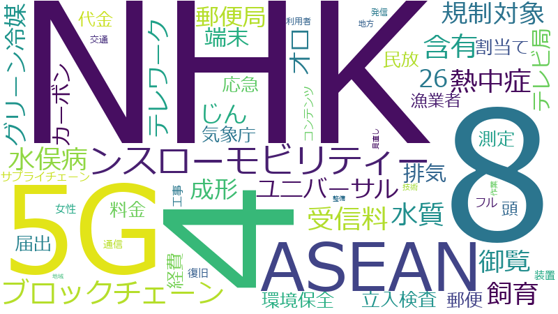

佐藤ゆかり

御覧、経費、テレワーク、NHK、4、8、受信料、届出、端末、ユニバーサル、含有、熱中症、ブロックチェーン、女性、工事、料金、水質、規制対象、郵便局、頭、飼育、5G、ンスローモビリティー、地方、技術、整備、立入検査、26、ASEAN、サプライチェーン、割当て、地域、復旧、応急、水俣病、測定、環境保全、発信、郵便、じん、オロ、カーボン、グリーン冷媒、コンテンツ、テレビ局、フル、交通、代金、作業、利用者、成形、排気、民放、気象庁、漁業者、装置、見直し、通信、K、NDC、カード、ゼロ、予防、件数、光ファイバー、全国各地、利用、動物、原子力、同時配信、圏外、型、委員会、常時、建築物、役場、所管、担保、推進、改正内容、料金プラン、普及、期待、板、業務、汚濁、湖沼、特別会計予算、現場、環境、知識、答申、繊維、義務付け、視聴者、解析、講習、飛散、20、G7
NHK、4、8、5G、ASEAN、ンスローモビリティー、ブロックチェーン、受信料、含有、熱中症、水質、水俣病、飼育、規制対象、御覧、ユニバーサル、じん、成形、郵便局、オロ、テレワーク、26、グリーン冷媒、端末、排気、テレビ局、カーボン、立入検査、割当て、環境保全、届出、民放、応急、郵便、料金、経費、気象庁、測定、代金、漁業者、頭、サプライチェーン、コンテンツ、フル、工事、装置、女性、復旧、通信、交通、発信、利用者、地方、技術、作業、見直し、整備、地域
NHK
2019-05-14 account_balance
…お答えをいたします。国民・視聴者の受信料によって支えられておりますＮＨＫには、国民・視聴者の信頼に応えつつ、引き続き公共放送としての社会的使命を果たしていただくということが求められます。そして、今回の改正もその一環と…
…公共放送としての社会的使命を果たしていただくということが求められます。そして、今回の改正もその一環として、ＮＨＫが国民・視聴者の期待に応え、常時同時配信を実施することを可能にするとともに、ＮＨＫに対する国民・視聴者の信…
…回の改正もその一環として、ＮＨＫが国民・視聴者の期待に応え、常時同時配信を実施することを可能にするとともに、ＮＨＫに対する国民・視聴者の信頼確保を図る観点から、ガバナンスの強化を行うものでございます。ＮＨＫにおきまして…
…するとともに、ＮＨＫに対する国民・視聴者の信頼確保を図る観点から、ガバナンスの強化を行うものでございます。ＮＨＫにおきましては、今回の改正で可能となります常時同時配信を含むインターネット活用業務の適正な実施に取り組んで…
…今回の改正で可能となります常時同時配信を含むインターネット活用業務の適正な実施に取り組んでいただくとともに、ＮＨＫグループのコンプライアンス確保、既存業務を含むＮＨＫの業務全体の見直し、受信料水準や体系などの受信料のあり…
…ネット活用業務の適正な実施に取り組んでいただくとともに、ＮＨＫグループのコンプライアンス確保、既存業務を含むＮＨＫの業務全体の見直し、受信料水準や体系などの受信料のあり方の見直しなどの課題について、引き続きしっかり取り組…
…について、引き続きしっかり取り組んでいただきたいというふうに考えております。総務省といたしましても、今後、ＮＨＫの取組や放送をめぐる環境の変化を踏まえて、公共放送のあり方について不断に検討を行ってまいりたいと存じます。…
…信料は、視聴の対価ではなく、受信機の設置という客観的な事象のみに着目をして徴収をしているものでございます。ＮＨＫの主な財政基盤を受信料としましたのは、ＮＨＫが、公共の福祉のために、豊かで、かつ、よい放送番組を広く国民全…
…う客観的な事象のみに着目をして徴収をしているものでございます。ＮＨＫの主な財政基盤を受信料としましたのは、ＮＨＫが、公共の福祉のために、豊かで、かつ、よい放送番組を広く国民全体に向けて放送するという公共放送の社会的使命…
…源を、広く国民・視聴者全体に公平に御負担いただくことが適当であるとされたためでございます。したがいまして、ＮＨＫの放送のスクランブル化につきましては、こうした公共放送としてのＮＨＫの基本的性格に影響を及ぼしかねないとい…
…れたためでございます。したがいまして、ＮＨＫの放送のスクランブル化につきましては、こうした公共放送としてのＮＨＫの基本的性格に影響を及ぼしかねないということでございますので、慎重な検討が必要であるというふうに考えるとこ…
…スマートフォンなどを用いてさまざまな場所においても放送番組を視聴したいという国民・視聴者の期待に応えるため、ＮＨＫによる常時同時配信を可能とするものでございまして、ＮＨＫとしては、常時同時配信を放送の補完として位置づけ、…
…組を視聴したいという国民・視聴者の期待に応えるため、ＮＨＫによる常時同時配信を可能とするものでございまして、ＮＨＫとしては、常時同時配信を放送の補完として位置づけ、新たにスマートフォン等の所有者の方から受信料を取るといっ…
…所有者の方から受信料を取るといった考え方はしていないというふうに承知をしているところでございます。将来的なＮＨＫにおけるインターネット活用業務のあり方ですとか受信料制度につきましては、今後のＮＨＫの常時同時配信の実施状…
…でございます。将来的なＮＨＫにおけるインターネット活用業務のあり方ですとか受信料制度につきましては、今後のＮＨＫの常時同時配信の実施状況ですとか、国民・視聴者から十分な理解を得られる制度とすべきといった観点もございます…
2019-05-28 account_balance
…お答え申し上げます。まず、我が国の放送は、ＮＨＫと民放放送の二元体制の下で発展してきたものと認識をしておりまして、ＮＨＫがインターネット活用業務を行うに当たりまして、ＮＨＫが民放と協力して取り組んでいくということは大変…
…し上げます。まず、我が国の放送は、ＮＨＫと民放放送の二元体制の下で発展してきたものと認識をしておりまして、ＮＨＫがインターネット活用業務を行うに当たりまして、ＮＨＫが民放と協力して取り組んでいくということは大変重要なこ…
…の二元体制の下で発展してきたものと認識をしておりまして、ＮＨＫがインターネット活用業務を行うに当たりまして、ＮＨＫが民放と協力して取り組んでいくということは大変重要なことであると考えております。ＮＨＫの常時同時配信の実施…
…を行うに当たりまして、ＮＨＫが民放と協力して取り組んでいくということは大変重要なことであると考えております。ＮＨＫの常時同時配信の実施に当たって、民放から民間事業と競合しないよう節度を持って抑制的に事業を運営するべきなど…
…べきなどの御意見が表明されているということは承知をいたしているところでございます。総務省といたしましては、ＮＨＫの目的や受信料制度の趣旨に沿って適切なものとなる必要があるとの観点から、常時同時配信を含みますＮＨＫのイン…
…しては、ＮＨＫの目的や受信料制度の趣旨に沿って適切なものとなる必要があるとの観点から、常時同時配信を含みますＮＨＫのインターネット活用業務の費用について、必要最低限、かつ適切なものとなりますように、まずはＮＨＫにおいて適…
…信を含みますＮＨＫのインターネット活用業務の費用について、必要最低限、かつ適切なものとなりますように、まずはＮＨＫにおいて適切に検討していただきたいというふうに考えております。また、本法案におきまして、ＮＨＫに対し、ほ…
…うに、まずはＮＨＫにおいて適切に検討していただきたいというふうに考えております。また、本法案におきまして、ＮＨＫに対し、ほかの放送事業者によるインターネット番組配信等の円滑な実施に必要な協力をする努力義務を課すこととい…
…インターネット番組配信等の円滑な実施に必要な協力をする努力義務を課すことといたしております。つきましては、ＮＨＫにおきまして、本改正後において常時同時配信を含むインターネット活用業務を実施するに当たって、この努力義務の…
…。放送業界の現状につきましては、これ調査年により若干異なりましょうが、女性管理職の割合が民放は一四・七％、ＮＨＫは八・四％という数字もございまして、特にＮＨＫに対しましては、先ほど来ございますように、ＮＨＫ令和元年度予…
…より若干異なりましょうが、女性管理職の割合が民放は一四・七％、ＮＨＫは八・四％という数字もございまして、特にＮＨＫに対しましては、先ほど来ございますように、ＮＨＫ令和元年度予算に付した総務大臣意見におきまして、役員、管理…
…は一四・七％、ＮＨＫは八・四％という数字もございまして、特にＮＨＫに対しましては、先ほど来ございますように、ＮＨＫ令和元年度予算に付した総務大臣意見におきまして、役員、管理職への登用拡大について、二〇二〇年の女性管理職の…
…大臣意見におきまして、役員、管理職への登用拡大について、二〇二〇年の女性管理職の割合を一〇％以上にするというＮＨＫが自ら定めていただいた目標の達成に向けて、取組の確実な実施、そしてワーク・ライフ・バランスに関する取組の一…
2019-03-14 account_balance
…お答えを申し上げます。先生御承知のとおり、ＮＨＫの受信料につきましては、国民と視聴者にとって納得感のあるものでなければならないという必要性がございます。こうしたことから、これまでもＮＨＫ予算に対しまして、総務大臣意見に…
…国民と視聴者にとって納得感のあるものでなければならないという必要性がございます。こうしたことから、これまでもＮＨＫ予算に対しまして、総務大臣意見において受信料の引下げに関する検討を求めてきたというところでございます。こ…
…て受信料の引下げに関する検討を求めてきたというところでございます。こうした総務省の求めを受けまして、今般、ＮＨＫが受信料の引下げを含む還元策の実施を決めていただいたということは、これは評価できるものというふうに考えてい…
…ていただいたということは、これは評価できるものというふうに考えているところでございます。ただ、その一方で、ＮＨＫ平成三十一年度予算に付しました総務大臣意見におきまして、繰越金の状況ですとか当面見込まれます事業収入の増加…
…た受信料のあり方について引き続き検討を行うべき旨を指摘をさせていただいているところでございます。引き続き、ＮＨＫにおかれましては、国民・視聴者からの受信料によって支えられているということを十分に御認識をいただきました上…
…を視聴したいという国民や視聴者の期待に応えるものと考えておりまして、こういう意味では、総務省といたしまして、ＮＨＫによります常時同時配信を可能とします放送法改正案を今国会に提出させていただいているところでございます。委…
…ているところでございます。委員御指摘のございました常時同時配信の実施に要するコストについてでございますが、ＮＨＫの目的や受信料制度の趣旨に沿いまして、必要最低限かつ適正な費用のもとで適切に算出されることが必要であるとい…
…低限かつ適正な費用のもとで適切に算出されることが必要であるというふうに考えているところでございます。また、ＮＨＫといたしましても、常時同時配信を放送の補完として位置づけておりまして、受信契約者について追加負担なく利用で…
…お答えいたします。委員御指摘のＮＨＫオンデマンドを含みますインターネット活用業務の財源についてでございますが、こちらの方は、放送法に基づきまして、ＮＨＫが総務大臣の認可を得てみずから定めるインターネット活用業務の実施基…
…ンデマンドを含みますインターネット活用業務の財源についてでございますが、こちらの方は、放送法に基づきまして、ＮＨＫが総務大臣の認可を得てみずから定めるインターネット活用業務の実施基準において規定をするものでございます。…
…用業務の実施基準において規定をするものでございます。そして、インターネット活用業務といたしましては、まず、ＮＨＫの目的の達成に資するものであること、そしてまた、受信料制度の趣旨に照らして不適切なものでないことなどが求め…
…ものであること、そしてまた、受信料制度の趣旨に照らして不適切なものでないことなどが求められるものでございまして、委員御指摘の点につきましては、まずＮＨＫにおいてこうした点を踏まえて検討をすべきものであると考えております。…
2019-03-28 account_balance
…、４Ｋ放送につきましては現在十一事業者で十八チャンネルで放映されているのに対しまして、８Ｋ放送につきましてはＮＨＫによる一チャンネルのみであるということに加えまして、第二に、４Ｋ放送の多くは従来の衛星放送のアンテナで受信…
…あるということに加えまして、第二に、４Ｋ放送の多くは従来の衛星放送のアンテナで受信可能であるのに対しまして、ＮＨＫの８Ｋ放送を受信するにはアンテナを交換する必要があるなど、現状では４Ｋ放送と８Ｋ放送で受信環境等に一定の差…
4
2019-03-28 account_balance
…お答え申し上げます。先生御指摘のとおり、昨年十二月に開始をされました新４Ｋ８Ｋ衛星放送につきましてですが、４Ｋ放送と８Ｋ放送双方が併存する形でサービスが展開されているところでございます。他方で、まずは放送サービスに関…
…お答え申し上げます。先生御指摘のとおり、昨年十二月に開始をされました新４Ｋ８Ｋ衛星放送につきましてですが、４Ｋ放送と８Ｋ放送双方が併存する形でサービスが展開されているところでございます。他方で、まずは放送サービスに関…
…でサービスが展開されているところでございます。他方で、まずは放送サービスに関してでございますが、まず第一に、４Ｋ放送につきましては現在十一事業者で十八チャンネルで放映されているのに対しまして、８Ｋ放送につきましてはＮＨ…
…ているのに対しまして、８Ｋ放送につきましてはＮＨＫによる一チャンネルのみであるということに加えまして、第二に、４Ｋ放送の多くは従来の衛星放送のアンテナで受信可能であるのに対しまして、ＮＨＫの８Ｋ放送を受信するにはアンテナ…
…ンテナで受信可能であるのに対しまして、ＮＨＫの８Ｋ放送を受信するにはアンテナを交換する必要があるなど、現状では４Ｋ放送と８Ｋ放送で受信環境等に一定の差異があるということも事実でございます。また、テレビ受信機に関しましても…
…た状況を踏まえますと、一つ目には、一般家庭向けの超高精細度のテレビジョン放送を牽引していくに当たりまして、当面４Ｋが中心というふうになるであろうと考えられるということと、それから二つ目には、８Ｋにつきまして、先進的な消費…
…、一定の役割分担の下で普及が進んでいくものというふうに思われるところでございます。いずれにいたしましても、新４Ｋ８Ｋ衛星放送に関しましては、テレビ受信機の更なる低価格化と、それから４Ｋ、８Ｋならではの放送コンテンツの充…
…ざいます。いずれにいたしましても、新４Ｋ８Ｋ衛星放送に関しましては、テレビ受信機の更なる低価格化と、それから４Ｋ、８Ｋならではの放送コンテンツの充実が進展することによりまして一層普及が期待されるところでありますが、こう…
…お答え申し上げます。先生御指摘のとおり、新４Ｋ８Ｋ衛星放送という新たなメディアの普及におきましては、いわゆる受信機などの機器側とそれからコンテンツと、このハード、ソフト両面で取組を一体的に進めていくということが極めて重…
…が極めて重要であるというふうに考えております。とりわけ、御指摘のこのソフトのコンテンツでございますけれども、４Ｋ、８Ｋならではの放送コンテンツの充実が課題であるという認識の下で、具体的には、まず第一に、撮影から編集処理…
…ンツの充実が課題であるという認識の下で、具体的には、まず第一に、撮影から編集処理まで全ての過程で制作プロセスを４Ｋ、８Ｋ対応の機材で行うという、いわゆる一層の高精細映像、画像が実現できるいわゆるピュア４Ｋ、８Ｋコンテンツ…
…過程で制作プロセスを４Ｋ、８Ｋ対応の機材で行うという、いわゆる一層の高精細映像、画像が実現できるいわゆるピュア４Ｋ、８Ｋコンテンツというものの普及が必要であるということと、それから二つ目には、４Ｋ、８Ｋチャンネルでしか放…
…像が実現できるいわゆるピュア４Ｋ、８Ｋコンテンツというものの普及が必要であるということと、それから二つ目には、４Ｋ、８Ｋチャンネルでしか放送されていないというオリジナルコンテンツ、この二つを拡充することが重要な鍵になると…
…ンツ、この二つを拡充することが重要な鍵になるというふうに考えております。一方で、昨年十二月に開始されました新４Ｋ８Ｋ衛星放送でございますが、これらの放送コンテンツの占める割合についてはいまだ放送事業間でばらつきがあると…
…際的なスポーツイベントが日本でめじろ押しに開催されるということがありますので、こうした多くの試合、競技で迫力ある４Ｋ、８Ｋ映像が放送されることで、この新４Ｋ、８Ｋ放送の普及の大きな牽引役になるというふうに考えております。…
…際的なスポーツイベントが日本でめじろ押しに開催されるということがありますので、こうした多くの試合、競技で迫力ある４Ｋ、８Ｋ映像が放送されることで、この新４Ｋ、８Ｋ放送の普及の大きな牽引役になるというふうに考えております。…
2019-03-19 account_balance
…お答えいたします。まず、昨年十二月一日に新４Ｋ８Ｋ衛星放送が開始されたわけでございますが、４Ｋ、８Ｋは、超高精細で立体感、臨場感あふれる映像によりまして、国民・視聴者に対してこれまでとは全く別の次元の視聴体験を提供する…
…お答えいたします。まず、昨年十二月一日に新４Ｋ８Ｋ衛星放送が開始されたわけでございますが、４Ｋ、８Ｋは、超高精細で立体感、臨場感あふれる映像によりまして、国民・視聴者に対してこれまでとは全く別の次元の視聴体験を提供する…
…映像によりまして、国民・視聴者に対してこれまでとは全く別の次元の視聴体験を提供するというものでございます。新４Ｋ８Ｋ衛星放送の普及に向けてでございますが、対応受信機等の受信環境整備と、そして、４Ｋ、８Ｋ放送ならではのコ…
…いうものでございます。新４Ｋ８Ｋ衛星放送の普及に向けてでございますが、対応受信機等の受信環境整備と、そして、４Ｋ、８Ｋ放送ならではのコンテンツの提供という、いわばハードとソフト両面での取組の一体的な推進が必要であるとい…
…ンツにつきましては、既存のコンテンツのリメークも可能ではございますが、やはり撮影、編集等、全ての制作プロセスを４Ｋ、８Ｋ対応機材で行うことで一層高精細映像が実現できる、いわゆるピュア制作コンテンツですとか、あるいは４Ｋ、…
…セスを４Ｋ、８Ｋ対応機材で行うことで一層高精細映像が実現できる、いわゆるピュア制作コンテンツですとか、あるいは４Ｋ、８Ｋチャンネルでしか視聴できないオリジナルコンテンツの拡充が大きな鍵を握るというふうに考えております。…
…ンネルでしか視聴できないオリジナルコンテンツの拡充が大きな鍵を握るというふうに考えております。なお、高精細な４Ｋ、８Ｋの映像でございますが、実は放送以外でも、例えば医療分野での内視鏡やセキュリティー分野での防犯カメラな…
…の防犯カメラなどを通じた診断や認証にも有効でございまして、さまざまな産業活用を通じた市場の拡大によって、まず、４Ｋ、８Ｋ関連製品の今後の低廉化が期待される。そして、総務省といたしましては、こうした産業面での４Ｋ、８Ｋ技…
…って、まず、４Ｋ、８Ｋ関連製品の今後の低廉化が期待される。そして、総務省といたしましては、こうした産業面での４Ｋ、８Ｋ技術のＩＣＴ活用の普及拡大にも取組をしつつ、放送におきましては、引き続き関係者と連携をしながら、新４…
…ましては、こうした産業面での４Ｋ、８Ｋ技術のＩＣＴ活用の普及拡大にも取組をしつつ、放送におきましては、引き続き関係者と連携をしながら、新４Ｋ８Ｋ衛星放送の魅力や視聴方法に関する周知広報活動を強化してまいりたいと存じます。…
2019-05-09 account_balance
…から多数のセンサーの情報を活用しつつ遠隔制御による農業機械によって農作業を効率的にできる、そしてさらに、自宅で４Ｋ、８Ｋ映像を用いた専門医による遠隔診療が実現できるなどといったことが可能になると想定をされているところでご…
8
2019-03-28 account_balance
…お答え申し上げます。先生御指摘のとおり、昨年十二月に開始をされました新４Ｋ８Ｋ衛星放送につきましてですが、４Ｋ放送と８Ｋ放送双方が併存する形でサービスが展開されているところでございます。他方で、まずは放送サービスに関…
…し上げます。先生御指摘のとおり、昨年十二月に開始をされました新４Ｋ８Ｋ衛星放送につきましてですが、４Ｋ放送と８Ｋ放送双方が併存する形でサービスが展開されているところでございます。他方で、まずは放送サービスに関してでご…
…ございますが、まず第一に、４Ｋ放送につきましては現在十一事業者で十八チャンネルで放映されているのに対しまして、８Ｋ放送につきましてはＮＨＫによる一チャンネルのみであるということに加えまして、第二に、４Ｋ放送の多くは従来の…
…いうことに加えまして、第二に、４Ｋ放送の多くは従来の衛星放送のアンテナで受信可能であるのに対しまして、ＮＨＫの８Ｋ放送を受信するにはアンテナを交換する必要があるなど、現状では４Ｋ放送と８Ｋ放送で受信環境等に一定の差異があ…
…信可能であるのに対しまして、ＮＨＫの８Ｋ放送を受信するにはアンテナを交換する必要があるなど、現状では４Ｋ放送と８Ｋ放送で受信環境等に一定の差異があるということも事実でございます。また、テレビ受信機に関しましても、８Ｋ放送…
…Ｋ放送と８Ｋ放送で受信環境等に一定の差異があるということも事実でございます。また、テレビ受信機に関しましても、８Ｋ放送の受信機についてはまだ普及の価格帯とは言えないというところでございます。こうした状況を踏まえますと、…
…引していくに当たりまして、当面４Ｋが中心というふうになるであろうと考えられるということと、それから二つ目には、８Ｋにつきまして、先進的な消費者やパブリックビューイングでの視聴に加えまして、医療やセキュリティーなどいわゆる…
…定の役割分担の下で普及が進んでいくものというふうに思われるところでございます。いずれにいたしましても、新４Ｋ８Ｋ衛星放送に関しましては、テレビ受信機の更なる低価格化と、それから４Ｋ、８Ｋならではの放送コンテンツの充実が…
…す。いずれにいたしましても、新４Ｋ８Ｋ衛星放送に関しましては、テレビ受信機の更なる低価格化と、それから４Ｋ、８Ｋならではの放送コンテンツの充実が進展することによりまして一層普及が期待されるところでありますが、こういう中…
…お答え申し上げます。先生御指摘のとおり、新４Ｋ８Ｋ衛星放送という新たなメディアの普及におきましては、いわゆる受信機などの機器側とそれからコンテンツと、このハード、ソフト両面で取組を一体的に進めていくということが極めて重…
…て重要であるというふうに考えております。とりわけ、御指摘のこのソフトのコンテンツでございますけれども、４Ｋ、８Ｋならではの放送コンテンツの充実が課題であるという認識の下で、具体的には、まず第一に、撮影から編集処理まで全…
…充実が課題であるという認識の下で、具体的には、まず第一に、撮影から編集処理まで全ての過程で制作プロセスを４Ｋ、８Ｋ対応の機材で行うという、いわゆる一層の高精細映像、画像が実現できるいわゆるピュア４Ｋ、８Ｋコンテンツという…
…制作プロセスを４Ｋ、８Ｋ対応の機材で行うという、いわゆる一層の高精細映像、画像が実現できるいわゆるピュア４Ｋ、８Ｋコンテンツというものの普及が必要であるということと、それから二つ目には、４Ｋ、８Ｋチャンネルでしか放送され…
…現できるいわゆるピュア４Ｋ、８Ｋコンテンツというものの普及が必要であるということと、それから二つ目には、４Ｋ、８Ｋチャンネルでしか放送されていないというオリジナルコンテンツ、この二つを拡充することが重要な鍵になるというふ…
…、この二つを拡充することが重要な鍵になるというふうに考えております。一方で、昨年十二月に開始されました新４Ｋ８Ｋ衛星放送でございますが、これらの放送コンテンツの占める割合についてはいまだ放送事業間でばらつきがあるという…
…際的なスポーツイベントが日本でめじろ押しに開催されるということがありますので、こうした多くの試合、競技で迫力ある４Ｋ、８Ｋ映像が放送されることで、この新４Ｋ、８Ｋ放送の普及の大きな牽引役になるというふうに考えております。…
…際的なスポーツイベントが日本でめじろ押しに開催されるということがありますので、こうした多くの試合、競技で迫力ある４Ｋ、８Ｋ映像が放送されることで、この新４Ｋ、８Ｋ放送の普及の大きな牽引役になるというふうに考えております。…
2019-03-19 account_balance
…お答えいたします。まず、昨年十二月一日に新４Ｋ８Ｋ衛星放送が開始されたわけでございますが、４Ｋ、８Ｋは、超高精細で立体感、臨場感あふれる映像によりまして、国民・視聴者に対してこれまでとは全く別の次元の視聴体験を提供する…
…お答えいたします。まず、昨年十二月一日に新４Ｋ８Ｋ衛星放送が開始されたわけでございますが、４Ｋ、８Ｋは、超高精細で立体感、臨場感あふれる映像によりまして、国民・視聴者に対してこれまでとは全く別の次元の視聴体験を提供する…
…によりまして、国民・視聴者に対してこれまでとは全く別の次元の視聴体験を提供するというものでございます。新４Ｋ８Ｋ衛星放送の普及に向けてでございますが、対応受信機等の受信環境整備と、そして、４Ｋ、８Ｋ放送ならではのコンテ…
…のでございます。新４Ｋ８Ｋ衛星放送の普及に向けてでございますが、対応受信機等の受信環境整備と、そして、４Ｋ、８Ｋ放送ならではのコンテンツの提供という、いわばハードとソフト両面での取組の一体的な推進が必要であるというふう…
…つきましては、既存のコンテンツのリメークも可能ではございますが、やはり撮影、編集等、全ての制作プロセスを４Ｋ、８Ｋ対応機材で行うことで一層高精細映像が実現できる、いわゆるピュア制作コンテンツですとか、あるいは４Ｋ、８Ｋチ…
…４Ｋ、８Ｋ対応機材で行うことで一層高精細映像が実現できる、いわゆるピュア制作コンテンツですとか、あるいは４Ｋ、８Ｋチャンネルでしか視聴できないオリジナルコンテンツの拡充が大きな鍵を握るというふうに考えております。なお、…
…でしか視聴できないオリジナルコンテンツの拡充が大きな鍵を握るというふうに考えております。なお、高精細な４Ｋ、８Ｋの映像でございますが、実は放送以外でも、例えば医療分野での内視鏡やセキュリティー分野での防犯カメラなどを通…
…カメラなどを通じた診断や認証にも有効でございまして、さまざまな産業活用を通じた市場の拡大によって、まず、４Ｋ、８Ｋ関連製品の今後の低廉化が期待される。そして、総務省といたしましては、こうした産業面での４Ｋ、８Ｋ技術のＩ…
…まず、４Ｋ、８Ｋ関連製品の今後の低廉化が期待される。そして、総務省といたしましては、こうした産業面での４Ｋ、８Ｋ技術のＩＣＴ活用の普及拡大にも取組をしつつ、放送におきましては、引き続き関係者と連携をしながら、新４Ｋ８Ｋ…
…ましては、こうした産業面での４Ｋ、８Ｋ技術のＩＣＴ活用の普及拡大にも取組をしつつ、放送におきましては、引き続き関係者と連携をしながら、新４Ｋ８Ｋ衛星放送の魅力や視聴方法に関する周知広報活動を強化してまいりたいと存じます。…
2019-05-09 account_balance
…数のセンサーの情報を活用しつつ遠隔制御による農業機械によって農作業を効率的にできる、そしてさらに、自宅で４Ｋ、８Ｋ映像を用いた専門医による遠隔診療が実現できるなどといったことが可能になると想定をされているところでございま…
5G
2019-05-09 account_balance
…冥福をお祈り申し上げたいと存じます。さて、お答えをさせていただきますが、第五世代移動通信システム、いわゆる５Ｇでございますけれども、この５Ｇは、高速道路や新幹線と同様に、地域の活性化、そして活力の向上を図るために不可欠…
…ます。さて、お答えをさせていただきますが、第五世代移動通信システム、いわゆる５Ｇでございますけれども、この５Ｇは、高速道路や新幹線と同様に、地域の活性化、そして活力の向上を図るために不可欠な二十一世紀の基幹インフラと考…
…性化、そして活力の向上を図るために不可欠な二十一世紀の基幹インフラと考えているところでございます。例えば、５Ｇは、二時間の映画を三秒でダウンロードできる超高速ということだけではなく、身の回りの多数のものが同時にネットワ…
…がございまして、様々な新しいサービスの創出が期待をされているところでございます。地方からも様々な産業分野で５Ｇの活用のアイデアが出てくるものと期待をしておりますが、例えば都市と同じような仕事あるいは建機の操作、こういっ…
…を用いた専門医による遠隔診療が実現できるなどといったことが可能になると想定をされているところでございます。５Ｇの活用で地方でも働く場と生活のサービスが確保可能となりまして、現在の地方にとりましては最も必要な持続可能な地…
…におきましては、全国サービスの二〇二〇年の商用化に向けまして、四月十日に携帯電話事業者四者に対して我が国初の５Ｇの開設計画の認定を行ったところでございます。その際、開設計画の認定に当たりまして、各者に対して、二年以内に全…
…このほか、総務省では、自治体や地域の企業など様々な主体が免許を取得して、工場内などの限られたエリアで独自の５Ｇシステムを構築できる、いわゆるローカル５Ｇについて制度化に向けた検討を行っているところでございます。具体的…
…など様々な主体が免許を取得して、工場内などの限られたエリアで独自の５Ｇシステムを構築できる、いわゆるローカル５Ｇについて制度化に向けた検討を行っているところでございます。具体的には、現在、ローカル５Ｇを実現するための技…
…、いわゆるローカル５Ｇについて制度化に向けた検討を行っているところでございます。具体的には、現在、ローカル５Ｇを実現するための技術的条件等について情報通信審議会で御審議をいただいておりまして、特に一部の帯域については速…
…討を急ぎまして、来年の夏には制度化を行う予定でございます。総務省といたしましては、携帯電話事業者によります５Ｇの全国でのエリア整備に加えて、多様な主体が５Ｇネットワークを自ら構築できますローカル５Ｇというものを推進いた…
…ございます。総務省といたしましては、携帯電話事業者によります５Ｇの全国でのエリア整備に加えて、多様な主体が５Ｇネットワークを自ら構築できますローカル５Ｇというものを推進いたしまして、全国各地で５Ｇが早期に利用できる環境…
…、携帯電話事業者によります５Ｇの全国でのエリア整備に加えて、多様な主体が５Ｇネットワークを自ら構築できますローカル５Ｇというものを推進いたしまして、全国各地で５Ｇが早期に利用できる環境を整えてまいりたいと考えております。…
…、携帯電話事業者によります５Ｇの全国でのエリア整備に加えて、多様な主体が５Ｇネットワークを自ら構築できますローカル５Ｇというものを推進いたしまして、全国各地で５Ｇが早期に利用できる環境を整えてまいりたいと考えております。…
…こうした地域を解消していく必要があるわけでございます。このような状況の下で、本年四月に携帯電話事業者四者の５Ｇの開設計画を認定したところでございますが、その中で、一部の携帯電話事業者が二〇二三年度末までに現行の携帯電話…
…るように支援を検討しますとともに、非居住地域においても、今後、観光振興や防災対策の観点などのニーズの高まりですとか、あるいは今後の５Ｇ需要の動向なども踏まえて、基地局整備の支援策について検討をしてまいる所存でございます。…
…ックまでに間に合うかということでございますけれども、本年四月十日に携帯電話事業者四者に対しまして、我が国初の５Ｇの開設計画の認定を行ったところでございます。認定を受けました各者の計画におきまして、本年九月にスタジアム等で…
…の開設計画の認定を行ったところでございます。認定を受けました各者の計画におきまして、本年九月にスタジアム等で５Ｇの先行サービスを提供し、来年春に商用化する予定となっておりまして、来年のオリンピック・パラリンピック開催前に…
…リンピック・パラリンピック開催前には通信サービスが開催されているものというふうに考えるところでございます。５Ｇの活用によりまして、例えばスポーツ観戦等の新たな楽しみ方が広がることが期待されておりまして、総務省が実施をい…
…して、例えばスポーツ観戦等の新たな楽しみ方が広がることが期待されておりまして、総務省が実施をいたしております５Ｇの総合実証試験では、スタジアム内でタブレット等を使用して、自らの席からは見られないような、自由な角度から観戦…
…程度の規模でサービスが提供されるかは今般認定を受けられた各者の御努力によりますけれども、認定の条件も十分に踏まえつつ、５Ｇの高度な技術的特徴を生かした多様なサービスを提供していただくことを期待しているところでございます。…
2019-04-18 account_balance
…お答えをいたします。委員御指摘のとおりでございまして、５Ｇは、高速道路や新幹線と同様に、地域の活性化や活力の向上を図るために不可欠な二十一世紀の基幹インフラでございまして、速やかに全国への展開をすることが極めて重要であ…
…速やかに全国への展開をすることが極めて重要であるというふうに考えております。総務省におきましては、ローカル５Ｇの制度化に向けました検討を進めておりますほか、全国サービスの二〇二〇年の商用化に向けて、この四月十日には、携…
…ますほか、全国サービスの二〇二〇年の商用化に向けて、この四月十日には、携帯電話事業者四者に対して、我が国初の５Ｇの開設計画の認定を行ったところでございます。その際の開設計画の認定に当たりまして、各者に対して、二年以内に…
…ることを義務づけるということとともに、広範かつ着実な全国展開を求める条件を付したところでございます。また、５Ｇ基地局の展開に必要な光ファイバーの整備につきまして、まずは通信事業者がみずから整備いただくのが基本ではござい…
…ァイバー整備費用の一部を補助する事業を予算案に計上したところでございます。総務省といたしましては、こうした５Ｇや光ファイバーなどの通信インフラが地方を含む全国各地で早期に整備されますよう、必要な支援を今後とも実施してま…
…入する利用者に対して大幅な割引などを広く行っている例というものは承知しておりませんで、本法案によって日本での５Ｇの普及が特におくれるということは考えていないということでございます。いずれにいたしましても、本法案によりま…
…ようになることで、さまざまな通信サービスと端末の中からみずからのニーズに合った選択が可能となるということで、５Ｇも含めて全体として利用者利益が向上すると考えているところでございます。なお、御指摘もございますが、公正競争…
…必要であると考えられますことから、対象外となるものは限定的とすべきであるというふうに考えておりまして、原則、５Ｇについても適用するべきであるというふうに考えておるところでございます。ただ、５Ｇの活用が見込まれますＩｏＴ…
…に考えておりまして、原則、５Ｇについても適用するべきであるというふうに考えておるところでございます。ただ、５Ｇの活用が見込まれますＩｏＴ機器向けの通信サービスにつきましては、スマートフォン向けのものと比べて競争環境など…
…お答えいたします。委員御指摘のとおりでございまして、５Ｇを全国に早期展開するためには、インフラ整備と同時に、やはり５Ｇで何が実現できるのかという重要な観点について、地方を含めて広く御理解をいただくことが極めて重要である…
…たします。委員御指摘のとおりでございまして、５Ｇを全国に早期展開するためには、インフラ整備と同時に、やはり５Ｇで何が実現できるのかという重要な観点について、地方を含めて広く御理解をいただくことが極めて重要であるというふ…
…おります。地方部では、公共交通手段の衰退や医師、医療機関の不足等の社会課題の解決が急務となっておりまして、５Ｇが実現する自動運転ですとか遠隔医療などが問題解決の切り札として期待をされているところでございます。このため…
…総務省では、自治体や企業など多様な地方の主体の参画を得まして、遠隔医療や建機の遠隔制御など、さまざまな分野に５Ｇを応用した総合実証試験を全国で実施しておりまして、その成果が実用化されることで、地域でのニーズの掘り起こしに…
…いうふうに考えているところでございます。また、昨年度は、地方発のアイデアを掘り起こすことを目的としまして、５Ｇ利活用アイデアコンテストを実施いたしております。これで、個人も含めて全国から七百八十五件の応募がございました…
…実証に取り込んでいくということをさせていただきます。総務省といたしましては、こうした地方を含めた全国各地で５Ｇを実証などを通じまして早期に展開をして、課題先進国として、５Ｇの運用面で世界トップを目指してまいりたいという…
…いうことをさせていただきます。総務省といたしましては、こうした地方を含めた全国各地で５Ｇを実証などを通じまして早期に展開をして、課題先進国として、５Ｇの運用面で世界トップを目指してまいりたいというふうに考えております。…
2019-02-27 account_balance
…ているところでございます。中でも、二〇二〇年の商用化が期待されております第五世代移動通信システム、いわゆる５Ｇと言われているものでございますが、こちらの方は、高速道路や新幹線と同様に、地域の活性化や活力の向上を図るため…
…の活性化や活力の向上を図るために不可欠な二十一世紀の基幹インフラというふうに考えているところでございます。５Ｇの展開につきましては、本年一月に告示をしましたが、５Ｇの電波の割当て方針を示すいわゆる開設指針におきまして、…
…幹インフラというふうに考えているところでございます。５Ｇの展開につきましては、本年一月に告示をしましたが、５Ｇの電波の割当て方針を示すいわゆる開設指針におきまして、地方を含む全国各地で早期に利用開始ができるように促す項…
…き基準として設けておりまして、これらの基準に従って、現在予定されております四月十日の割当てを目指して、目下、５Ｇの電波の割当て審査を行っているというところでございます。また、実際に電波の割当てを受けました通信事業者に対…
…けておりまして、総務省として、基地局の開設状況等についてしっかりと確認をしていく所存でございます。さらに、５Ｇ基地局の展開に必要な光ファイバーの整備につきましては、まずはこれは通信事業者みずからが整備していただくのが基…
…事業というものを予算案に計上しているところでございます。総務省といたしましては、地方を含む全国各地で早期に５Ｇや光ファイバーのような高度なＩＣＴの基盤が整備され、その特徴を生かした高度かつ多様なサービスが実現することを…
…要望をいただいているところでございます。また、本事業により支援を行います光ファイバーですけれども、こちらは５Ｇの基地局の中継回線としても利用される通信インフラでございまして、ソサエティー五・〇の実現に向けて、都市と地方…
2019-05-23 account_balance
…お答え申し上げます。私はそのような発言はしておりませんが、御指摘の５Ｇに関するインタビュー記事について御説明を申し上げますと、記者の方と私とのやり取りにおいてなされた話が取材側において編集されてそのような記事と化したと…
…備投資を継続的に実施をしながら、市場競争の中で様々な事情を勘案して料金が設定されているところでございまして、５Ｇのための先行投資が料金の引下げを阻害するというような直接的な関係にはないというのが私の考えでございます。我…
…ないというのが私の考えでございます。我が国の大手携帯電話事業者のスマートフォンの通信料金については、同様に５Ｇのための先行投資を行っている海外と比べまして料金が下がる傾向が鈍い状態にあるのは事実でございまして、むしろ、…
2019-05-28 account_balance
…お答えいたします。５Ｇや光ファイバーなどは、まさにソサエティー五・〇を支える通信基盤でありまして、かつての高速道路や新幹線と同様、地域の活性化、活力の向上を図るために不可欠な二十一世紀の基幹インフラであるというふうに考…
…っていくおそれがありまして、日本の隅々に速やかにこれを展開する必要があるということでございます。このため、５Ｇにつきましては、四月十日に周波数割当てを実施しまして、二年以内の全都道府県でのサービス開始を義務付けますとと…
…場合に、その費用の一部を補助するため五十二・五億円を計上しているところでございます。総務省といたしまして、５Ｇや光ファイバーなどの情報通信インフラが地方を含む全国各地で早期に展開され、高速で高度な情報通信サービスが利用…
2019-05-14 account_balance
…ット同時配信のコンテンツ配信技術の現状と課題、ネット同時配信の本格化が通信ネットワークに与える影響、そして、５Ｇの普及、展開とネット同時配信などをテーマとした検討が進められているところでございます。総務省といたしまして…
…及、展開とネット同時配信などをテーマとした検討が進められているところでございます。総務省といたしましては、５Ｇ時代を見据えながら、同協議会における議論の動向等も踏まえまして、今後見込まれるインターネットトラフィックの増…
2019-04-16 account_balance
…ましたように、今回の電波利用料制度の見直しは、我が国の成長の鍵を握りますソサエティー五・〇の実現に必要となる５ＧですとかＩｏＴの普及拡大等に向けた取組を速やかに進める必要があることなどを理由といたしまして、一年前倒しで行…
ASEAN
2019-11-14 account_balance
…洋プラスチックごみ問題にはまさに新興国と途上国を含む世界全体で取り組む必要があるということで、我が国としてＡＳＥＡＮ等への支援にも着手をしているところでございます。具体的には、我が国の主導によりまして、まず東アジア・Ａ…
…ＡＮ等への支援にも着手をしているところでございます。具体的には、我が国の主導によりまして、まず東アジア・ＡＳＥＡＮ経済研究センター、いわゆるＥＲＩＡで海洋プラスチックごみナレッジセンターというものを設立をいたしました。…
…センターというものを設立をいたしました。本センターでは、十月九日にカンボジア・シェムリアップで行われましたＡＳＥＡＮ関連会合で、私、出席させていただきましたけれども、その際に設立を表明いたしまして、そしてＡＳＥＡＮ各国の…
…れましたＡＳＥＡＮ関連会合で、私、出席させていただきましたけれども、その際に設立を表明いたしまして、そしてＡＳＥＡＮ各国の賛同を得たものでございます。このセンターも活用いたしまして、今後、ＡＳＥＡＮ各国への廃棄物発電施設…
…表明いたしまして、そしてＡＳＥＡＮ各国の賛同を得たものでございます。このセンターも活用いたしまして、今後、ＡＳＥＡＮ各国への廃棄物発電施設の整備等を通じた廃棄物管理の強化、人材育成、モニタリングや計画策定などの支援を実施…
…画策定などの支援を実施する予定でございます。今後とも、本ビジョンの提唱国として、我が国はサウジアラビアやＡＳＥＡＮ諸国等とも連携をして、新興国、途上国を巻き込みつつ、海洋プラスチックごみ対策を牽引していく所存でございま…
ンスローモビリティー
2020-03-18 account_balance
…お答えをいたします。環境省でも、グリーンスローモビリティーの社会実装に向けて、国土交通省と連携をいたしまして取組をさせていただいているところでございます。この取組は、交通をマイカー等から転換をすることでＣＯ２の排出削…
…街地の活性化など、様々な地域課題の同時解決を目的としているという理解でおります。今年度からは、グリーンスローモビリティーとＩｏＴ技術を組み合わせて様々な地域課題を解決する実証事業を環境省の方でも七地域で実証いたしておりま…
…合わせて様々な地域課題を解決する実証事業を環境省の方でも七地域で実証いたしておりまして、また、グリーンスローモビリティーの導入に対する補助事業も七地域で実施をいたしているところでございます。委員御指摘の観光分野でのグリ…
…導入に対する補助事業も七地域で実施をいたしているところでございます。委員御指摘の観光分野でのグリーンスローモビリティーの活用についてでございますが、例えば一つには、今年度、環境省実証事業実施地域でございます広島県尾道市…
…車両の位置情報を把握できるスマートフォンアプリとそれからドライバーによる観光案内を組み合わせたグリーンスローモビリティーの導入によりまして、観光客のマイカー流入による交通渋滞の解消につなげているというところであります。ま…
…通規制、いわゆるガソリン車が入れないという交通規制区間がございますけれども、ここの区間においてグリーンスローモビリティーがエコツアーに活用されているというところでございます。いずれにいたしましても、環境省としまして、令…
…省としまして、令和二年度予算案に引き続き実証事業と補助事業を計上させていただいておりますので、グリーンスローモビリティーの社会実装を推進して、脱炭素化と観光振興など、地域の課題解決の同時達成に向けたイノベーションによる社…
ブロックチェーン
2019-03-07 account_balance
…いたします。先ほど石田大臣からも御答弁にございましたけれども、政府といたしましては、情報通信審議会のブロックチェーン技術に関する報告書がございますが、この報告書におきまして、海外の状況について、委員御指摘のエストニアで…
…的な事例を取りまとめております。この報告書でございますが、特に、公的サービスや政府系システムに対するブロックチェーン技術に関する取組状況といたしましては、実際のところ、我が国に比べまして諸外国がより進んでいるという報告…
…国に比べまして諸外国がより進んでいるという報告、評価がされているところでございます。実際、私自身も、ブロックチェーン技術の先進的な取組を進めておられますスイスのツーク市というところを昨年十月に視察に訪問してまいりました…
…月に視察に訪問してまいりました。このツーク市では、地元のＩＴ関連の大学と連携した人材教育によりまして、ブロックチェーン技術に関する研究を進める環境というものをトータルに整備をいたしておりまして、この結果、周辺のチューリヒ…
…究を進める環境というものをトータルに整備をいたしておりまして、この結果、周辺のチューリヒ市を含めましてブロックチェーン関連企業が集積をして、さまざまな研究開発や実証が盛んに行われている町でございます。そこで、私も、現地…
…て、さまざまな研究開発や実証が盛んに行われている町でございます。そこで、私も、現地の政府関係者などとブロックチェーン技術の活用の必要性や解決すべき点などについて意見交換を行ってまいりましたけれども、ブロックチェーン技術…
…どとブロックチェーン技術の活用の必要性や解決すべき点などについて意見交換を行ってまいりましたけれども、ブロックチェーン技術を推進することの有効性というものをこういった意見交換で改めて認識をして帰ってまいったところでござい…
…て情報収集の取組を進める中で、こうした先駆的取組の事例をしっかりと政府内で共有をいたしまして、関係省庁や民間企業とも連携をしながら、我が国におけるブロックチェーン技術の普及を推進してまいりたいというふうに考えております。…
2020-03-18 account_balance
…お答えいたします。委員御指摘のとおり、ブロックチェーン技術やＩｏＴなどのデジタル技術の発展は著しいところがございまして、様々な分野において活用や実証が進められているところでございます。こうしたデジタル技術を気候変動分野…
…ジタル」プロジェクトを立ち上げ、検討を進めてきたところでございます。このプロジェクトの第一弾として、ブロックチェーン技術やＩｏＴなどのデジタル技術を活用し、リアルタイムでＪ―クレジットを取引できるような円滑なシステムづ…
…動促進につなげていきたいというところであります。具体的には、Ｊ―クレジットの申請手続の電子化と、そしてブロックチェーン等のデジタル技術を活用した市場創出の検討を並行して進め、そして、最速で二〇二二年四月の運用開始を目指し…
2020-03-24 account_balance
…ことを制度的に後押しをしているというところでございます。このＪ―クレジット制度につきましても、今後はブロックチェーンなどのデジタル技術を活用して、中小企業や家庭まで含んで、オールジャパンの削減努力によって生まれたクレジ…
…はい。具体的には、Ｊ―クレジットの申請手続の電子化やブロックチェーンのデジタル技術を活用した市場創出で、最速で令和四年四月に運用開始を目指していくところでございます。いずれにしましても、環境と成長の好循環に企業の参加…
2019-12-03 account_balance
…立ち上げまして、先日、十一月二十八日、第一弾の検討の方向性を発表したところでございます。具体的には、ブロックチェーン技術などのデジタル技術をＪクレジット制度に活用しまして、中小企業や家庭で自家消費される再エネのＣＯ2削…
2020-04-07 account_balance
…いう観点におきましては、更にこのＪクレジットを、利便性を高めるために、デジタル技術などを導入しまして、ブロックチェーンなどで使い勝手をよくしていくということで、最終的にグリーン投資の拡大にこれがつながっていけばありがたい…
2020-05-20 account_balance
…し、その取引を可能とするＪ―クレジットという制度もございます。このＪ―クレジット制度については、現在、ブロックチェーン技術等のデジタル技術を活用した利便性の向上について、私が中心となって検討を進めているところでございます…
受信料
2019-03-14 account_balance
…お答えを申し上げます。先生御承知のとおり、ＮＨＫの受信料につきましては、国民と視聴者にとって納得感のあるものでなければならないという必要性がございます。こうしたことから、これまでもＮＨＫ予算に対しまして、総務大臣意見に…
…ばならないという必要性がございます。こうしたことから、これまでもＮＨＫ予算に対しまして、総務大臣意見において受信料の引下げに関する検討を求めてきたというところでございます。こうした総務省の求めを受けまして、今般、ＮＨＫ…
…の引下げに関する検討を求めてきたというところでございます。こうした総務省の求めを受けまして、今般、ＮＨＫが受信料の引下げを含む還元策の実施を決めていただいたということは、これは評価できるものというふうに考えているところ…
…算に付しました総務大臣意見におきまして、繰越金の状況ですとか当面見込まれます事業収入の増加等を踏まえまして、受信料額の適正な水準を含めた受信料のあり方について引き続き検討を行うべき旨を指摘をさせていただいているところでご…
…おきまして、繰越金の状況ですとか当面見込まれます事業収入の増加等を踏まえまして、受信料額の適正な水準を含めた受信料のあり方について引き続き検討を行うべき旨を指摘をさせていただいているところでございます。引き続き、ＮＨＫ…
…べき旨を指摘をさせていただいているところでございます。引き続き、ＮＨＫにおかれましては、国民・視聴者からの受信料によって支えられているということを十分に御認識をいただきました上で、受信料の見直しにあわせて、徹底的な業務…
…おかれましては、国民・視聴者からの受信料によって支えられているということを十分に御認識をいただきました上で、受信料の見直しにあわせて、徹底的な業務の効率化や業務ガバナンスの改革に今後とも努めていただきたいというふうに考え…
…ございます。委員御指摘のございました常時同時配信の実施に要するコストについてでございますが、ＮＨＫの目的や受信料制度の趣旨に沿いまして、必要最低限かつ適正な費用のもとで適切に算出されることが必要であるというふうに考えて…
…について追加負担なく利用できるようにするといった考えを示しております一方で、新たにスマホなどの所有者の方から受信料を取るといった考えは示していないというふうに承知をしているところでございます。こうしたことから、今後の受…
…信料を取るといった考えは示していないというふうに承知をしているところでございます。こうしたことから、今後の受信料制度につきましては、公共放送の果たすべき役割は何か、そしてまた、国民や視聴者の十分な理解を得られる制度とな…
…そして、インターネット活用業務といたしましては、まず、ＮＨＫの目的の達成に資するものであること、そしてまた、受信料制度の趣旨に照らして不適切なものでないことなどが求められるものでございまして、委員御指摘の点につきましては…
2019-05-14 account_balance
…お答えをいたします。国民・視聴者の受信料によって支えられておりますＮＨＫには、国民・視聴者の信頼に応えつつ、引き続き公共放送としての社会的使命を果たしていただくということが求められます。そして、今回の改正もその一環と…
…に取り組んでいただくとともに、ＮＨＫグループのコンプライアンス確保、既存業務を含むＮＨＫの業務全体の見直し、受信料水準や体系などの受信料のあり方の見直しなどの課題について、引き続きしっかり取り組んでいただきたいというふう…
…ともに、ＮＨＫグループのコンプライアンス確保、既存業務を含むＮＨＫの業務全体の見直し、受信料水準や体系などの受信料のあり方の見直しなどの課題について、引き続きしっかり取り組んでいただきたいというふうに考えております。総…
…お答えいたします。まず、受信料は、視聴の対価ではなく、受信機の設置という客観的な事象のみに着目をして徴収をしているものでございます。ＮＨＫの主な財政基盤を受信料としましたのは、ＮＨＫが、公共の福祉のために、豊かで、か…
…なく、受信機の設置という客観的な事象のみに着目をして徴収をしているものでございます。ＮＨＫの主な財政基盤を受信料としましたのは、ＮＨＫが、公共の福祉のために、豊かで、かつ、よい放送番組を広く国民全体に向けて放送するとい…
…ございまして、ＮＨＫとしては、常時同時配信を放送の補完として位置づけ、新たにスマートフォン等の所有者の方から受信料を取るといった考え方はしていないというふうに承知をしているところでございます。将来的なＮＨＫにおけるイン…
…というふうに承知をしているところでございます。将来的なＮＨＫにおけるインターネット活用業務のあり方ですとか受信料制度につきましては、今後のＮＨＫの常時同時配信の実施状況ですとか、国民・視聴者から十分な理解を得られる制度…
2019-05-28 account_balance
…見が表明されているということは承知をいたしているところでございます。総務省といたしましては、ＮＨＫの目的や受信料制度の趣旨に沿って適切なものとなる必要があるとの観点から、常時同時配信を含みますＮＨＫのインターネット活用…
含有
2020-05-28 account_balance
…、作業の届出、作業基準の遵守等の規制を導入したところでございます。その後、平成十七年には、規制対象として石綿含有断熱材等、いわゆるレベル２建材でございますけれども、これを追加いたしまして、さらに、規制対象となります建築物…
…のような課題が事案とともに明らかになったわけでございます。一つは、まず、これまで規制の対象ではなかった石綿含有成形板等、いわゆるレベル３建材ですけれども、これについても、不適切な除去を行いますと作業場所からの石綿が飛散…
…業場所からの石綿が飛散することが明らかになったということ。そして、二つ目に、不適切な事前調査によりまして石綿含有建材が把握されずに、石綿の飛散防止措置なしに建築物等の解体工事が行われた事案があったこと。そして、三つ目に、…
…築物等の解体工事が行われた事案があったこと。そして、三つ目に、除去作業時の不適切な作業によって作業終了後に石綿含有建材の取り残しが確認された事案があったこと、こうしたことを踏まえまして今回の法改正を行うものでございます。…
…お答え申し上げます。御指摘のレベル３建材、石綿含有成形板等でございますけれども、これについて、前回の改正時には相対的に飛散性が低いとして規制対象とはしておりませんでした。ところが、環境省によります調査の結果、石綿含有成…
…時には相対的に飛散性が低いとして規制対象とはしておりませんでした。ところが、環境省によります調査の結果、石綿含有成形板等レベル３建材につきましても、不適切な除去を行えば石綿が飛散することが明らかになっております。文献調査…
…ベル３建材につきましても、不適切な除去を行えば石綿が飛散することが明らかになっております。文献調査では、石綿含有成形板等、いわゆるレベル３建材の除去等作業現場三十八か所のうち、十五か所において作業現場近傍での石綿の飛散が…
…作業現場三十八か所のうち、十五か所において作業現場近傍での石綿の飛散が確認をされております。そのため、石綿含有成形板等レベル３建材につきましても、作業時の石綿飛散防止を図るために新たに特定建築材料に追加をいたしまして、…
…れのある条件を付さないように配慮することといたしております。今回の改正後は、水道用石綿セメント管を含む石綿含有成形板等を解体、改造、補修する作業を伴う建設工事も特定工事に追加されまして、本規定が適用されるということでご…
…、施工方法、工期、費用の面などで適切な配慮を行うことが求められております。また、レベル１、２に該当する石綿含有建材の解体等の作業に対しましては、従来からマニュアルで配慮義務の前提となります作業基準に基づく具体的な除去方…
2020-05-15 account_balance
…等を確認して、必要な場合に事前に作業方法の変更等を命令することといたしております。一方で、委員御指摘の石綿含有成形板等、いわゆるレベル３建材につきましては、まず、原形で取り外せること、そしてまた、これが難しい場合でも、…
…お答え申し上げます。まず、現行法では、事前調査の結果、石綿含有建材が確認された場合のみ都道府県等に作業実施の届出を行いまして、当該届出を踏まえて都道府県等が指導監督を行うこととなっております。しかし、不適切な事前調査…
…当該届出を踏まえて都道府県等が指導監督を行うこととなっております。しかし、不適切な事前調査によりまして石綿含有建材が見落とされた事例が確認されておりまして、現行法において、都道府県等がそのような見落としを把握し、是正す…
…、都道府県等がそのような見落としを把握し、是正するのが難しいと考えております。そのため、今般の改正で、石綿含有建材の有無にかかわらず報告をさせることによって、都道府県等が幅広く解体工事及びその事前調査の結果にかかわる情…
…ります作業の平成三十年度の実施件数は全国で二万二百二十五件でございました。一方、条例に基づきまして既に石綿含有成形板等、いわゆるレベル３建材でございますけれども、こちらの除去等作業の届出を義務づけている都道府県等におけ…
…、いわゆるレベル３建材でございますけれども、こちらの除去等作業の届出を義務づけている都道府県等におけます石綿含有成形板等レベル３建材の除去等作業の数は、これまでの大防法の規制対象の約五倍から二十倍というふうになっておりま…
…ております作業の平成三十年度の実施件数は全国で二万二百二十五件でございました。一方、条例に基づいて既に石綿含有成形板等、いわゆるレベル３建材の除去等作業の届出を義務づけている都道府県等におけます石綿含有成形等の除去等作…
…基づいて既に石綿含有成形板等、いわゆるレベル３建材の除去等作業の届出を義務づけている都道府県等におけます石綿含有成形等の除去等作業の数はこれまでの大防法の規制対象の約五倍から二十倍というふうに推定されておりまして、全国的…
…査についてでございますが、これは、事前調査を行う者の要件は定められていなかったものを、今回の制度改正で、石綿含有建材に関する専門的知識の講習を修了した者による実施を義務づけしているところでございます。その結果、自前か第…
熱中症
2020-03-18 account_balance
…先ほど大臣の方からも熱中症予防のための情報発信ということで気象庁との連携というお話がございましたけれども、近年、熱中症による被害というのは増加傾向に委員御指摘のとおりございまして、気候変動の影響を考えますと、あいにく今後…
…ど大臣の方からも熱中症予防のための情報発信ということで気象庁との連携というお話がございましたけれども、近年、熱中症による被害というのは増加傾向に委員御指摘のとおりございまして、気候変動の影響を考えますと、あいにく今後もこ…
…影響を考えますと、あいにく今後もこの傾向は続いていくものというふうに考えられるところでございます。一方で、熱中症は適切な予防や対処を行うことで発症や重症化を防ぐこともできる病気であるというふうに考えられまして、現状を申…
…して、現状を申しますと、環境省から提供しております暑さ指数、いわゆるＷＢＧＴというものがございますが、これは熱中症発症との相関関係は高いものでございますが、あいにく国民の認知度が必ずしも高くないというところでございます。…
…意情報というのがございまして、これは確立した伝達経路によって広く情報を伝達することができますけれども、一方で熱中症の発生との相関がやや弱いというところでございます。そこで、今回、私ども環境省と気象庁とがタッグを組みまし…
…設することに向けて取組を始めるというふうにしたところでございます。国民の皆様方に対してこれまでより踏み込んで熱中症の危険に関する注意喚起を行っていく、そして、より適切な予防や対処につなげていくために、まだ仮称ではございま…
…する注意喚起を行っていく、そして、より適切な予防や対処につなげていくために、まだ仮称ではございますけれども、熱中症警戒アラートというような情報発信の取組をスタートさせたいというふうに考えております。例えば、熱中症リスク…
…れども、熱中症警戒アラートというような情報発信の取組をスタートさせたいというふうに考えております。例えば、熱中症リスクが極めて高い気象条件が予測されます前の日、前日に環境省及び気象庁からテレビ報道やメール配信などにより…
…よりましてアラートを発信しますとともに、例えば当日もデジタル技術を活用した発信も含めて、国民の皆様方に適切な熱中症予防を呼びかけるといったイメージで考えているところでございます。詳細につきましては、来月から気象庁と共同…
水質
2020-04-07 account_balance
…委員お地元近くの印旛沼についてでございますが、湖沼水質保全特別措置法に基づく指定湖沼として、同法に基づく湖沼水質保全計画が千葉県によって策定されまして、水質改善に向けた各種の施策を総合的に進めているところでございます。…
…委員お地元近くの印旛沼についてでございますが、湖沼水質保全特別措置法に基づく指定湖沼として、同法に基づく湖沼水質保全計画が千葉県によって策定されまして、水質改善に向けた各種の施策を総合的に進めているところでございます。…
…、湖沼水質保全特別措置法に基づく指定湖沼として、同法に基づく湖沼水質保全計画が千葉県によって策定されまして、水質改善に向けた各種の施策を総合的に進めているところでございます。生活排水対策としましては、平成二十七年度から…
…組を進めております。これらの取組によりまして、印旛沼流域におけます汚濁負荷量は減少はしておりますけれども、水質の有機汚濁を示す指標でありますＣＯＤ、化学的酸素要求量でございますが、これについては現行の計画目標値十三ミリ…
…ム・パー・リットルに対して直近のデータでは十五ミリグラム・パー・リットルと超過をしている現状でございます。水質が改善しない要因として、流入する汚濁負荷に加えて、水底の泥、底泥の影響や植物プランクトンの増殖による有機物の…
…、水底の泥、底泥の影響や植物プランクトンの増殖による有機物の増加などが考えられまして、環境省では、この湖沼の水質改善に向けて水質汚濁メカニズムの分析も行っているというところでございます。環境省といたしましては、いずれに…
…の影響や植物プランクトンの増殖による有機物の増加などが考えられまして、環境省では、この湖沼の水質改善に向けて水質汚濁メカニズムの分析も行っているというところでございます。環境省といたしましては、いずれにしましても、この…
…メカニズムの分析も行っているというところでございます。環境省といたしましては、いずれにしましても、この湖沼水質保全計画に基づく取組に加えまして、メカニズム分析による知見の成果も活用して、千葉県を始めとして、関係自治体、…
…いずれにしましても、この湖沼水質保全計画に基づく取組に加えまして、メカニズム分析による知見の成果も活用して、千葉県を始めとして、関係自治体、関係省庁と連携して、印旛沼の水質保全施策を総合的に進めてまいる所存でございます。…
水俣病
2020-02-25 account_balance
…お答え申し上げます。水俣病についてのお尋ねでございます。水俣病につきましては、公式確認をされまして、それ以降、熊本では六十三年、そして先生御地元の新潟では五十四年がそれぞれ経過をしたわけでございます。新潟県におきまし…
…お答え申し上げます。水俣病についてのお尋ねでございます。水俣病につきましては、公式確認をされまして、それ以降、熊本では六十三年、そして先生御地元の新潟では五十四年がそれぞれ経過をしたわけでございます。新潟県におきまし…
…によって二千七百九十三人の方々が救済をされてきたところでございます。世界のいかなる国におきましても、やはり水俣病のような悲惨な公害を繰り返してはならないということを私どもは肝に銘じなければならないと考えております。平成…
…俣条約というものが発効いたしておりますけれども、我が国といたしましても、世界の水銀対策を牽引する立場として、水俣病の経験や教訓を国内外に、そして次の世代に向けてしっかりと発信をしていくということが重要であるというふうに考…
…地域におけます普及啓発の取組を、関係自治体と密に連携をしながら、引き続き進めてまいりたいと考えております。水俣病は、今日まで続く環境行政の原点でございます。そのことを忘れることなく、引き続き、水俣病問題の解決に向けて、…
…ら、引き続き進めてまいりたいと考えております。水俣病は、今日まで続く環境行政の原点でございます。そのことを忘れることなく、引き続き、水俣病問題の解決に向けて、できることを一つ一つ着実に積み重ねてまいる所存でございます。…
2020-03-06 account_balance
…響評価の推進などに必要な経費として、四十五億円余を計上しております。第五に、公害健康被害対策等については、水俣病対策、公害健康被害補償制度や石綿健康被害救済制度の適正かつ円滑な実施、化学物質対策の着実な推進などに必要な…
2020-03-10 account_balance
…響評価の推進などに必要な経費として、四十五億円余を計上しております。第五に、公害健康被害対策等については、水俣病対策、公害健康被害補償制度や石綿健康被害救済制度の適正かつ円滑な実施、化学物質対策の着実な推進などに必要な…
飼育
2020-02-25 account_balance
…環境省では、不適正な多頭飼育問題に対応するために、まず、昨年三月に動物や社会福祉の専門家によります社会福祉施策と連携した多頭飼育対策に関する検討会を立ち上げて、対策について検討しているところでございます。また、昨年十月…
…正な多頭飼育問題に対応するために、まず、昨年三月に動物や社会福祉の専門家によります社会福祉施策と連携した多頭飼育対策に関する検討会を立ち上げて、対策について検討しているところでございます。また、昨年十月には、全国百二十…
…立ち上げて、対策について検討しているところでございます。また、昨年十月には、全国百二十五の関係自治体に多頭飼育に関するアンケート調査というものを行っておりまして、自治体における多頭飼育対策の取組状況や個別の対応事例につ…
…は、全国百二十五の関係自治体に多頭飼育に関するアンケート調査というものを行っておりまして、自治体における多頭飼育対策の取組状況や個別の対応事例について分析を実施したところでございます。その結果といたしまして、まず、不適正…
…取組状況や個別の対応事例について分析を実施したところでございます。その結果といたしまして、まず、不適正な多頭飼育者には、地域から孤立した生活困窮者や高齢者など社会的な支援を必要とする方が多いということが明らかになっており…
…社会的な支援を必要とする方が多いということが明らかになっております。環境省といたしましては、来年度中に多頭飼育対策に関するガイドラインを策定する予定でございまして、自治体が社会福祉や動物愛護の関係団体等と連携をして、不…
…るガイドラインを策定する予定でございまして、自治体が社会福祉や動物愛護の関係団体等と連携をして、不適正な多頭飼育の早期発見や、あるいは一度改善した案件の再発防止などの対策を効果的に進められるように支援してまいる所存でござ…
…ますと、動物の愛護及び管理に関する取組は非常に重要でございまして、引き続き、必要な予算や体制を確保しながら、多頭飼育問題への対応やマイクロチップ制度など動物の愛護と管理にかかわる施策を着実に進めてまいる所存でございます。…
2020-06-04 account_balance
…とおり、日本の犬猫のペットの数は日本の子供の数よりも多いということで、動物愛護の精神を持って動物をしっかりと飼育し、管理をするということは非常に大切な精神であるというふうに考えております。今まさに御指摘のとおり、この飼…
…をしているというところでございます。一方で、ケージの床の構造ですとか環境管理の基準などについて、この様々な飼育状況を考慮する必要がありますことから、必ずしも全てを数値で判断するということができない部分もございます。した…
規制対象
2020-05-15 account_balance
…等の措置を適切に実施することによりまして石綿の飛散を抑えられること、そして、作業の件数はこれまでの大防法の規制対象の五倍から二十倍増加すると考えられておりまして、仮に作業の届出を義務づけた場合には届出を受ける都道府県等の…
…建材に対する御懸念でございますけれども、まず大気汚染防止法施行状況調査によりますと、大気汚染防止法において規制対象となっております作業の平成三十年度の実施件数は全国で二万二百二十五件でございました。一方、条例に基づきま…
…届出を義務づけている都道府県等におけます石綿含有成形板等レベル３建材の除去等作業の数は、これまでの大防法の規制対象の約五倍から二十倍というふうになっておりまして、全国的にもこの同じレベルの規制の対象の増加が想定されますの…
…ふうになっておりまして、全国的にもこの同じレベルの規制の対象の増加が想定されますので、結果としては、現在の規制対象の作業と合わせますと、合計十二万から四十二万件程度になるのではないかと推計されるところでございます。その…
…まず、大気汚染防止法施行状況調査によりますと、先生御指摘の件数でございますけれども、大気汚染防止法において規制対象となっております作業の平成三十年度の実施件数は全国で二万二百二十五件でございました。一方、条例に基づいて…
…材の除去等作業の届出を義務づけている都道府県等におけます石綿含有成形等の除去等作業の数はこれまでの大防法の規制対象の約五倍から二十倍というふうに推定されておりまして、全国的にも同程度の規制対象の増加が想定されております。…
…作業の数はこれまでの大防法の規制対象の約五倍から二十倍というふうに推定されておりまして、全国的にも同程度の規制対象の増加が想定されております。したがいまして、現在の規制対象の作業と合わせますと、合計十二万から四十二万件に…
…うふうに推定されておりまして、全国的にも同程度の規制対象の増加が想定されております。したがいまして、現在の規制対象の作業と合わせますと、合計十二万から四十二万件になるのではないかと推計されております。そのため、どのよう…
2020-05-28 account_balance
…飛散防止に向けて、作業の届出、作業基準の遵守等の規制を導入したところでございます。その後、平成十七年には、規制対象として石綿含有断熱材等、いわゆるレベル２建材でございますけれども、これを追加いたしまして、さらに、規制対象…
…規制対象として石綿含有断熱材等、いわゆるレベル２建材でございますけれども、これを追加いたしまして、さらに、規制対象となります建築物の規模要件を撤廃する政令改正を、そしてさらに、平成十八年には工作物を規制対象に追加する法改…
…して、さらに、規制対象となります建築物の規模要件を撤廃する政令改正を、そしてさらに、平成十八年には工作物を規制対象に追加する法改正を行ったところでございます。そして加えて、前回の平成二十五年の法改正において、作業実施の届…
…ベル３建材、石綿含有成形板等でございますけれども、これについて、前回の改正時には相対的に飛散性が低いとして規制対象とはしておりませんでした。ところが、環境省によります調査の結果、石綿含有成形板等レベル３建材につきましても…
…３建材につきましても、作業時の石綿飛散防止を図るために新たに特定建築材料に追加をいたしまして、事前調査等の規制対象に追加することとしたものでございます。一方で、レベル３建材につきまして、まず原形で取り外せること、そして…
…の措置を適切に実施することにより石綿の飛散を抑えられること、そして二つ目に、作業の件数がこれまでの大防法の規制対象の五倍から二十倍増加すると考えられておりまして、仮に作業の届出を義務化、義務付けいたしました場合には届出を…
御覧
2020-05-20 account_balance
…炭素化、ＥＳＧ投資、カーボンプライシングについて、資料に沿って御説明を申し上げたいと存じます。二ページ目を御覧いただきたいと存じます。昨年夏に房総半島台風及び東日本台風が立て続けに日本に上陸をしまして、強風や多量の降…
…れておりまして、更なる平均気温の上昇により、こうした影響はより深刻化すると想定されております。三ページ目を御覧ください。気候変動問題に関し科学的知見を提供する学者の集まりでありますＩＰＣＣ、気候変動に関する政府間パネ…
…超えないためには、二〇五〇年前後のＣＯ２排出量を正味ゼロにすることが必要との見解を示しました。四ページ目を御覧ください。一方、こうした気候変動の原因となっている温室効果ガスのうちエネルギー起源のＣＯ２については、二〇…
…す我が国の排出を削減するとともに、その他の国の排出量を引き下げるための取組も重要でございます。五ページ目を御覧ください。こうした中で、二〇一五年にパリ協定が採択され、本年より実施されております。世界のＣＯ２削減の取組…
…世界第二位の排出国であるアメリカの取組をパリ協定外でどのように進めていくかは課題でございます。六ページ目を御覧ください。昨年十二月にマドリッドにおいて開催された気候変動枠組条約第二十五回締約国会議、ＣＯＰ25では、こ…
…係国と精力的に調整を行った結果、次回のＣＯＰ26での採択に向けた道筋を付けることができました。七ページ目を御覧ください。市場メカニズムは、他国におけるＣＯ２削減を自国の技術等を導入することで削減した場合に、その削減量…
…フリカ諸国や、ＧＤＰ当たりのＣＯ２排出量の大きい中東諸国にも広げてまいりたいと考えております。八ページ目を御覧ください。ここからは、我が国の気候変動対策について御説明申し上げます。まず、我が国の温室効果ガス排出量で…
…済成長と同時に温室効果ガスを削減する、いわゆるデカップリングを達成いたしております。九ページ、十ページ目を御覧ください。我が国は、昨年六月にパリ協定に基づく長期戦略を策定し、Ｇ７の中では初めて長期戦略の中でカーボンニ…
…困難でありまして、非連続なイノベーションを通じた環境と成長の好循環の実現が必要でございます。十一ページ目を御覧ください。このため、本年一月には、このイノベーションを創出するための革新的環境イノベーション戦略を策定いた…
…術の確立やＣＣＵＳの実用化などの革新的技術を二〇五〇年までに確立することを目指しております。十二ページ目を御覧ください。さらに、本年三月にパリ協定に基づくＮＤＣを更新いたしました。このＮＤＣにおいては、一、二〇三〇年…
…も踏まえつつ、持続可能な脱炭素社会への移行を促していく対策を考えていきたいと考えております。十三ページ目を御覧ください。先般成立しました令和二年度補正予算におきましても、脱炭素化社会への移行を促す施策を盛り込んでおり…
…続き、新型コロナウイルスの状況も踏まえながら持続可能な脱炭素社会への移行を促してまいります。十四ページ目を御覧ください。ここからは、政府以外の主体、自治体や企業の動きについて御紹介したいと存じます。我が国の目標は、…
…後は各地域のゼロカーボンシティ実現に向けた実効性のある取組の後押しが課題になってまいります。十五ページ目を御覧ください。地域の脱炭素化に向けた様々な取組が進んでおります。千葉県睦沢町では、太陽光発電やガスコージェネ…
…続できたという実績がございます。こうした好事例を全国各地に創出していきたいと考えております。十六ページ目を御覧ください。また、地域を超えた取組も進んでおります。横浜市は、再生可能エネルギーが豊富に存在する東北十二市…
…ニシアティブに賛同、参画する日本企業が増えており、世界でもトップクラスの数となっております。十八ページ目を御覧ください。こうした企業の取組を金融面から後押しをするのがＥＳＧ金融でございます。世界的なＥＳＧ金融の拡大が…
ユニバーサル
2019-05-23 account_balance
…お答え申し上げます。委員御指摘のとおり、郵政事業のユニバーサルサービスといいますのは国民生活に必要不可欠でございまして、今後とも全国で安定的に提供され続けるための支援は必要であるというふうに考えているところでございます…
…す。このため、端的に申しますと、議員立法ではございましたけれども、政府の方では、昨年六月に、郵政事業のユニバーサルサービスの安定的な供給、提供の確保を図るために、郵便局ネットワーク維持の支援のための交付金、拠出金制度と…
…ざいます。そういう意味では、総務省といたしまして、本制度を適切に運用しながら郵便局ネットワークの維持を支援するとともに、郵政事業のユニバーサルサービスの堅持についてはしっかりと取組をしてまいりたいというふうに存じます。…
…お答えさせていただきます。先生御指摘のとおり、郵政事業のユニバーサルサービスは国民生活に必要不可欠でございまして、今後とも全国で安定的に提供され続けるということがまず重要でございます。このために、ユニバーサルサービス…
…可欠でございまして、今後とも全国で安定的に提供され続けるということがまず重要でございます。このために、ユニバーサルサービスにつきましては、まず、その確保責務が課されている日本郵政及び日本郵便が、事業の幅の拡大によって収…
…たしていくということが基本であるというふうに考えているところでございます。そのために、本年四月からは、ユニバーサルサービスの安定的な提供の確保を図るため、昨年六月に議員立法によって創設されましたけれども、郵便局ネットワ…
…移されているところでございます。一方で、先生御指摘の点でございますけれども、郵政民営化法によりまして、ユニバーサルサービス確保とゆうちょ銀行及びかんぽ生命保険に対する国の関与を減らすということを通じたサービスの向上、こ…
…を目指しているところでございます。金融二社の株式につきましては、郵政民営化法第七条第二項におきまして、ユニバーサルサービス確保責務の履行への影響等を勘案して処分するということとしておりまして、その表れと認識をしていると…
…ます。いずれにいたしましても、総務省として、引き続き日本郵政グループをしっかりと監督しますとともに、交付金、拠出金制度を適切に運用することによりましてユニバーサルサービスを堅持してまいりたいというふうに考えております。…
じん
2020-04-07 account_balance
…には、吹きつけ石綿等のいわゆるレベル１、２の建材の除去作業において、作業場を隔離しなかった場合や、作業時に集じん・排気装置を使用しなかった場合等を規定しております。御指摘のございました前室などですけれども、例えば、前室…
…場合等を規定しております。御指摘のございました前室などですけれども、例えば、前室を設置しなかった場合や、集じん・排気装置の管理が悪い場合についても、規定されている措置を適切に行っていないとみなし、直接罰の対象になるとい…
…先ほど一部分答弁申し上げましたとおり、委員御指摘の前室を設置しなかった場合でございますけれども、あるいは集じん・排気装置の管理が悪いといった場合、こういった場合につきましても、この規定されている措置を適切に行っていないと…
先ほど一部御答弁させていただきましたけれども、集じん・排気装置を使用しなかった場合等も直接罰として規定をさせていただいております。
…改正によりまして、直接罰の創設、それから作業結果の発注者への報告の義務づけ、そして隔離した作業所に設置する集じん・排気装置の正常な稼働の確認頻度の増加などの規制強化を行うこととしておりますので、これらの対策によりまして、…
2020-05-15 account_balance
…ものでありまして、他方で、今般、直接罰の創設、作業結果の発注者への報告の義務づけ、隔離した作業場に設置する粉じん・排気装置の正常な稼働の確認の頻度をふやすなどの規制の強化を行うこととしておりますので、これらによりまして作…
申しわけございません。先ほど私の発言の中で粉じん・排気装置と申し上げましたが、実際には集じん・排気装置でございましたので、訂正させていただきます。
2020-05-28 account_balance
…て、直接罰の創設、それから作業結果の発注者への報告の義務付け、行いますと同時に、隔離された作業所に設置する集じん・排気装置の正常な稼働確認の頻度の増加などの技術的な事項について省令やマニュアル等で整備をすることにしており…
成形
2020-05-28 account_balance
…うな課題が事案とともに明らかになったわけでございます。一つは、まず、これまで規制の対象ではなかった石綿含有成形板等、いわゆるレベル３建材ですけれども、これについても、不適切な除去を行いますと作業場所からの石綿が飛散する…
…お答え申し上げます。御指摘のレベル３建材、石綿含有成形板等でございますけれども、これについて、前回の改正時には相対的に飛散性が低いとして規制対象とはしておりませんでした。ところが、環境省によります調査の結果、石綿含有成…
…は相対的に飛散性が低いとして規制対象とはしておりませんでした。ところが、環境省によります調査の結果、石綿含有成形板等レベル３建材につきましても、不適切な除去を行えば石綿が飛散することが明らかになっております。文献調査では…
…３建材につきましても、不適切な除去を行えば石綿が飛散することが明らかになっております。文献調査では、石綿含有成形板等、いわゆるレベル３建材の除去等作業現場三十八か所のうち、十五か所において作業現場近傍での石綿の飛散が確認…
…現場三十八か所のうち、十五か所において作業現場近傍での石綿の飛散が確認をされております。そのため、石綿含有成形板等レベル３建材につきましても、作業時の石綿飛散防止を図るために新たに特定建築材料に追加をいたしまして、事前…
…ある条件を付さないように配慮することといたしております。今回の改正後は、水道用石綿セメント管を含む石綿含有成形板等を解体、改造、補修する作業を伴う建設工事も特定工事に追加されまして、本規定が適用されるということでござい…
2020-05-15 account_balance
…確認して、必要な場合に事前に作業方法の変更等を命令することといたしております。一方で、委員御指摘の石綿含有成形板等、いわゆるレベル３建材につきましては、まず、原形で取り外せること、そしてまた、これが難しい場合でも、飛散…
…す作業の平成三十年度の実施件数は全国で二万二百二十五件でございました。一方、条例に基づきまして既に石綿含有成形板等、いわゆるレベル３建材でございますけれども、こちらの除去等作業の届出を義務づけている都道府県等におけます…
…わゆるレベル３建材でございますけれども、こちらの除去等作業の届出を義務づけている都道府県等におけます石綿含有成形板等レベル３建材の除去等作業の数は、これまでの大防法の規制対象の約五倍から二十倍というふうになっておりまして…
…ります作業の平成三十年度の実施件数は全国で二万二百二十五件でございました。一方、条例に基づいて既に石綿含有成形板等、いわゆるレベル３建材の除去等作業の届出を義務づけている都道府県等におけます石綿含有成形等の除去等作業の…
…いて既に石綿含有成形板等、いわゆるレベル３建材の除去等作業の届出を義務づけている都道府県等におけます石綿含有成形等の除去等作業の数はこれまでの大防法の規制対象の約五倍から二十倍というふうに推定されておりまして、全国的にも…
郵便局
2019-03-14 account_balance
…情報通信審議会におきまして、昨年二月から、我が国の人口減少、少子化、高齢化などの社会環境の変化を踏まえました郵便局の役割及び郵便局の利便性向上策について御審議をいただきまして、同年七月に答申をいただいたところでございます…
…おきまして、昨年二月から、我が国の人口減少、少子化、高齢化などの社会環境の変化を踏まえました郵便局の役割及び郵便局の利便性向上策について御審議をいただきまして、同年七月に答申をいただいたところでございます。この答申では…
…月に答申をいただいたところでございます。この答申では、委員御指摘のように、国民生活の安心、安全の拠点として郵便局は今後ますます地域において果たすべき役割が拡大するという観点から、まず、地方自治体の窓口事務の受託の拡大や…
…るという観点から、まず、地方自治体の窓口事務の受託の拡大や、これに資するＩＣＴの活用、そして地域イベントへの郵便局スペースの提供といった取組の方向性が提言をされたところでございます。総務省におきましては、当該答申を踏ま…
…ろでございます。総務省におきましては、当該答申を踏まえまして、平成三十一年度予算案に、ＩＣＴを活用しました郵便局と地方自治体等の連携の在り方について調査、検証をして、その成果を全国へ普及、展開することにより、地域の諸課…
…検証をして、その成果を全国へ普及、展開することにより、地域の諸課題の解決や利用者利便の向上の推進を図るという郵便局活性化推進事業を盛り込んでいるところでございます。総務省といたしましては、本事業に加えまして、先ほど御説…
…本事業に加えまして、先ほど御説明いたしました答申等を受けて、日本郵便が利用者目線に立った取組を進めることによって郵便局の更なる利便性向上が図られ、これが地域の活性化につながるということを期待申し上げるところでございます。…
…お答えいたします。総務省では、昨年八月から、情報通信審議会郵政政策部会郵便局活性化委員会というのがございますが、この委員会におきまして郵便サービスの将来にわたる安定的な提供を確保するための方策について御検討いただいてお…
2019-05-23 account_balance
…たけれども、政府の方では、昨年六月に、郵政事業のユニバーサルサービスの安定的な供給、提供の確保を図るために、郵便局ネットワーク維持の支援のための交付金、拠出金制度というものが議員立法によって創設されまして、これが本年四月…
…ら実施に移されているところでございます。そういう意味では、総務省といたしまして、本制度を適切に運用しながら郵便局ネットワークの維持を支援するとともに、郵政事業のユニバーサルサービスの堅持についてはしっかりと取組をしてま…
…らは、ユニバーサルサービスの安定的な提供の確保を図るため、昨年六月に議員立法によって創設されましたけれども、郵便局ネットワーク維持の支援のための交付金、拠出金制度が実施に移されているところでございます。一方で、先生御指…
オロ
2020-03-24 account_balance
…滝沢先生へお答えを申し上げます。フルオロカーボン、いわゆるフロン類の御指摘でございますけれども、オゾン層の破壊物質でありますＣＦＣ、いわゆるクロロフルオロカーボン等から、オゾン層を破壊しないＨＦＣ、いわゆるハイドロフル…
…ーボン、いわゆるフロン類の御指摘でございますけれども、オゾン層の破壊物質でありますＣＦＣ、いわゆるクロロフルオロカーボン等から、オゾン層を破壊しないＨＦＣ、いわゆるハイドロフルオロカーボンへの展開が世界的に進んでいるとこ…
…物質でありますＣＦＣ、いわゆるクロロフルオロカーボン等から、オゾン層を破壊しないＨＦＣ、いわゆるハイドロフルオロカーボンへの展開が世界的に進んでいるところでございます。この結果、日本では、近年、ＣＯ２などの温室効果ガス…
…フロン回収済みであるということを引取り証明書によって確認をする仕組みを導入しましたとともに、機器廃棄時のフルオロカーボンの回収義務違反に対して直接罰を設けるなど、フルオロカーボンの回収が確実に行われる仕組みを導入したとこ…
…する仕組みを導入しましたとともに、機器廃棄時のフルオロカーボンの回収義務違反に対して直接罰を設けるなど、フルオロカーボンの回収が確実に行われる仕組みを導入したところでございます。また、回収作業についても、機器から取り出し…
…排出抑制対策とグリーン冷媒への転換へのこの両面からの対策を進めつつ、昨年、ＣＯＰ25で設立をいたしましたフルオロカーボン・イニシアチブも通じて、日本、さらに世界の気候変動対策に貢献をしてまいりたいというふうに考えておりま…
2020-03-10 account_balance
…お答え申し上げます。フルオロカーボン、いわゆるフロン類でございますけれども、オゾン層の破壊物質でありますクロロフルオロカーボン、いわゆるＣＦＣ等から、最近ではハイドロフルオロカーボン、ＨＦＣへの転換が世界的に進んでおり…
…し上げます。フルオロカーボン、いわゆるフロン類でございますけれども、オゾン層の破壊物質でありますクロロフルオロカーボン、いわゆるＣＦＣ等から、最近ではハイドロフルオロカーボン、ＨＦＣへの転換が世界的に進んでおります。し…
…ますけれども、オゾン層の破壊物質でありますクロロフルオロカーボン、いわゆるＣＦＣ等から、最近ではハイドロフルオロカーボン、ＨＦＣへの転換が世界的に進んでおります。したがいまして、この結果、日本では、近年ＣＯ2などの温室効…
…の排出量は減少はしておりますけれども、その一方で、ＣＯ2に比べて温室効果の高い、いわゆるＨＦＣ、ハイドロフルオロカーボンの排出量が年々増加しておりまして、地球温暖化防止の観点からもこの対策の強化が必要であるというところで…
…回収済みであることを引取り証明書によりまして確認する仕組みの導入をいたしましたのと、それから機器廃棄時のフロオロカーボンの回収義務違反に対して直接罰を設けるということなどで、フルオロカーボンの回収が確実に行える仕組みとい…
…しましたのと、それから機器廃棄時のフロオロカーボンの回収義務違反に対して直接罰を設けるということなどで、フルオロカーボンの回収が確実に行える仕組みというものを強化しております。また、回収作業時に、回収残、未回収の残ってい…
テレワーク
2019-02-27 account_balance
…お答えいたします。テレワークにつきましても、ＩＣＴを利用しまして、時間や場所を有効に活用できる柔軟な働き方でございまして、就業者みずから住みたい地域に住みながら、みずからが選ぶ時間や空間で働ける環境を実現する、まさに働…
…が選ぶ時間や空間で働ける環境を実現する、まさに働き方改革の切り札と考えているところでございます。従来よりテレワークを推進してまいりましたけれども、全国的なデジタル環境の整備、さまざまなＩＣＴ機器、ツールが発達している今…
…てまいりましたけれども、全国的なデジタル環境の整備、さまざまなＩＣＴ機器、ツールが発達している今こそ、このテレワークが大きく拡大することと期待をしているところでございます。このような認識のもとで、総務省では、テレワーク…
…のテレワークが大きく拡大することと期待をしているところでございます。このような認識のもとで、総務省では、テレワークにより地方でも都市部と同じように働ける環境を実現するため、ふるさとテレワークなど、地域でのサテライトオフ…
…うな認識のもとで、総務省では、テレワークにより地方でも都市部と同じように働ける環境を実現するため、ふるさとテレワークなど、地域でのサテライトオフィス環境の整備を推進しております。これによりまして、都市部から地方への新たな…
…方への新たな人や仕事の流れをつくり出すということとともに、今後は、地域雇用の創出に資するよう、地域全体でのテレワークも推進してまいりたいというふうに思っております。さらに、テレワークという働き方を広く全国へ展開するため…
…域雇用の創出に資するよう、地域全体でのテレワークも推進してまいりたいというふうに思っております。さらに、テレワークという働き方を広く全国へ展開するために、私が議長を務めておりますが、テレワーク関係府省連絡会議を開催しま…
…に思っております。さらに、テレワークという働き方を広く全国へ展開するために、私が議長を務めておりますが、テレワーク関係府省連絡会議を開催しまして、厚生労働省、経済産業省などの関係府省と連携をして、多くの企業、団体にテレ…
…ワーク関係府省連絡会議を開催しまして、厚生労働省、経済産業省などの関係府省と連携をして、多くの企業、団体にテレワーク導入の意識を持っていただけるよう、さまざまな施策に取り組んでおります。例えば、テレワークの全国一斉実施…
…くの企業、団体にテレワーク導入の意識を持っていただけるよう、さまざまな施策に取り組んでおります。例えば、テレワークの全国一斉実施を国民運動的に呼びかけておりますテレワークデーズの実施を行っております。三年目となりますこ…
…う、さまざまな施策に取り組んでおります。例えば、テレワークの全国一斉実施を国民運動的に呼びかけておりますテレワークデーズの実施を行っております。三年目となりますことしは規模を拡大いたしまして、七月二十二日から九月六日ま…
…十二日から九月六日までの約一カ月間、これを実施する予定でございます。また、北海道から沖縄まで全国各地でのテレワーク導入のためのセミナーの開催などにも取り組んでおりまして、総務省といたしましては、引き続き、地方を含む全国…
…ワーク導入のためのセミナーの開催などにも取り組んでおりまして、総務省といたしましては、引き続き、地方を含む全国各地でテレワークの導入が進むように、関係府省と連携の上、各種施策に積極的に取り組んでいきたいと考えております。…
26
2020-05-20 account_balance
…した。本会合では結論が得られませんでしたが、小泉環境大臣が主要関係国と精力的に調整を行った結果、次回のＣＯＰ26での採択に向けた道筋を付けることができました。七ページ目を御覧ください。市場メカニズムは、他国におけるＣ…
…なかった論点に対してデータや数値を用いた定量的な分析を行っておりまして、ウエブ会議なども活用しながら、ＣＯＰ26の議長国であります英国を含む各国との調整を精力的に進めているところであります。引き続き、委員御指摘のインド…
…臣より、新型コロナウイルス感染症からの復興を気候変動、環境対策の観点から持続可能なものにするとともに、ＣＯＰ26に向けた国際協調の機運を維持するべく、希望する全ての国が参加可能な形で復興に関する各国の取組について共有し、…
…て共有し、互いに連携をするオンラインプラットフォームの設置を提案したところでございます。英国などの各国や気候変動枠組条約事務局とも連携をしながら、日本としてＣＯＰ26の成功に向けて貢献をしてまいりたい所存でございます。…
済みません、恐れ入ります。先ほど私の発言の中で、来年開催のＣＯＰ26と申し上げたつもりでございますが、念のため、ＣＯＰ25ではなくて26でございますので、申し上げさせていただきます。
グリーン冷媒
2020-03-24 account_balance
…もに、関係省庁及び関係団体とも連携をして施行に万全を期してまいりたいと考えております。委員御指摘のこのグリーン冷媒への展開、転換の方でございますが、これもフロン類の生産量、使用量そのものを減らすために、オゾンを破壊せず…
…ますが、これもフロン類の生産量、使用量そのものを減らすために、オゾンを破壊せず温室効果も極めて少ないこのグリーン冷媒への転換が必要であるというふうに考えております。既にグリーン冷媒は、家庭用冷凍冷蔵庫ですとか自動販売機…
…ンを破壊せず温室効果も極めて少ないこのグリーン冷媒への転換が必要であるというふうに考えております。既にグリーン冷媒は、家庭用冷凍冷蔵庫ですとか自動販売機、カーエアコンなどの一部の分野で既に普及が進んでおりますが、一方で…
…でおりますが、一方で、現時点で代替技術が見込まれない分野については、国で産学官のプロジェクトによりましてグリーン冷媒の技術開発や冷媒特性を踏まえた機器の開発を進めておりますとともに、価格差など普及にまだ課題が残るような省…
…導入補助事業を実施することによって脱フロン化を促進してまいります。このように、フロン類の排出抑制対策とグリーン冷媒への転換へのこの両面からの対策を進めつつ、昨年、ＣＯＰ25で設立をいたしましたフルオロカーボン・イニシア…
端末
2019-04-18 account_balance
…お答えをいたします。本法案では、携帯電話の通信料金と端末代金の完全分離を図ることによりまして、利用者が通信料金のみで携帯電話事業者を比較、選択できるようになりまして、結果として、競争の進展を通じて通信料金の低廉化が進む…
…結果として、競争の進展を通じて通信料金の低廉化が進むというふうにまず考えているところでございます。他方で、端末の割引等が今より縮小しまして、特に高価格帯の端末のニーズが減少することが想定されますけれども、一方で、中古端…
…進むというふうにまず考えているところでございます。他方で、端末の割引等が今より縮小しまして、特に高価格帯の端末のニーズが減少することが想定されますけれども、一方で、中古端末などを含めました手ごろな価格帯の端末の供給が拡…
…末の割引等が今より縮小しまして、特に高価格帯の端末のニーズが減少することが想定されますけれども、一方で、中古端末などを含めました手ごろな価格帯の端末の供給が拡大することも期待をされるというところでございます。また、欧米…
…高価格帯の端末のニーズが減少することが想定されますけれども、一方で、中古端末などを含めました手ごろな価格帯の端末の供給が拡大することも期待をされるというところでございます。また、欧米諸国におきまして、日本のように、最新…
…の供給が拡大することも期待をされるというところでございます。また、欧米諸国におきまして、日本のように、最新端末を購入する利用者に対して大幅な割引などを広く行っている例というものは承知しておりませんで、本法案によって日本…
…うことは考えていないということでございます。いずれにいたしましても、本法案によりまして、利用者が通信料金と端末代金のそれぞれを正確に理解できるようになることで、さまざまな通信サービスと端末の中からみずからのニーズに合っ…
…よりまして、利用者が通信料金と端末代金のそれぞれを正確に理解できるようになることで、さまざまな通信サービスと端末の中からみずからのニーズに合った選択が可能となるということで、５Ｇも含めて全体として利用者利益が向上すると考…
…ございますが、公正競争を促進するためには、やはり同じ市場で競争していると考えられるサービスについて通信料金と端末代金の完全分離を広く適用することが必要であると考えられますことから、対象外となるものは限定的とすべきであると…
…ービスにつきましては、スマートフォン向けのものと比べて競争環境などが異なる面も考えられることから、通信料金と端末代金の完全分離等の対象とするか否かについては、その状況を踏まえて検討する必要があるというふうに考えております…
…お答えいたします。本法案によりまして、まず、通信料金と端末代金の完全分離や行き過ぎた囲い込みが是正される結果、利用者が通信料金単体で事業者を比較できるようになり、また、利用者が現在と比べて容易に事業者を変更できるように…
2019-03-20 account_balance
…しました電気通信事業法の改正案では、事業者間の競争がしっかりと働く環境を整備するために、携帯電話の通信料金と端末代金の完全分離を図ることといたしているわけでございます。これによりまして、利用者が通信料金のみで携帯電話事業…
…することで、競争の進展を通じて通信料金の低廉化が進むものというふうに考えているところでございます。一方で、端末につきましては、携帯電話事業者や販売代理店による割引等が今より縮小することによりまして、特に高価格帯の端末の…
…、端末につきましては、携帯電話事業者や販売代理店による割引等が今より縮小することによりまして、特に高価格帯の端末のニーズは減少することが想定されます一方で、今年九月を目途にＳＩＭロック解除が中古の携帯端末にも実施されると…
…、特に高価格帯の端末のニーズは減少することが想定されます一方で、今年九月を目途にＳＩＭロック解除が中古の携帯端末にも実施されるということを見込んでおりまして、こうした動きも踏まえまして、手頃な価格帯の端末の供給が新品にお…
…解除が中古の携帯端末にも実施されるということを見込んでおりまして、こうした動きも踏まえまして、手頃な価格帯の端末の供給が新品においてもあるいは中古においても拡大するであろうということが期待をされているところでございます。…
…拡大するであろうということが期待をされているところでございます。いずれにいたしましても、利用者が通信料金と端末代金のそれぞれを正確に理解できるようになることで、様々な通信サービスと端末の中から自らのニーズに合った選択が…
…にいたしましても、利用者が通信料金と端末代金のそれぞれを正確に理解できるようになることで、様々な通信サービスと端末の中から自らのニーズに合った選択が可能になり、全体としては利用者利益が向上するというふうに考えております。…
…お答えいたします。総務省の有識者会合が本年一月にまとめました緊急提言におきましても、通信料金と端末代金の分離が不十分であるということによりまして、利用者が料金プランを正確に理解した上でほかの料金プランと比較することが困…
…国会に提出しております電気通信事業法の改正案でございますけれども、こちらでは、事実上一体化している通信料金と端末代金を完全に分離をしまして、利用者が通信の料金のみで携帯電話事業者を比較、選択できるようにすることとしており…
…携帯電話事業者が毎月の支払額のみならず、契約期間全体において利用者が幾ら支払うのかといった、支払う通信料金と端末代金の総額の目安を示すことが適当という指摘もございます。こうしたことが実現しますと、利用者が自らの負担額を…
排気
2020-04-07 account_balance
…吹きつけ石綿等のいわゆるレベル１、２の建材の除去作業において、作業場を隔離しなかった場合や、作業時に集じん・排気装置を使用しなかった場合等を規定しております。御指摘のございました前室などですけれども、例えば、前室を設置…
…を規定しております。御指摘のございました前室などですけれども、例えば、前室を設置しなかった場合や、集じん・排気装置の管理が悪い場合についても、規定されている措置を適切に行っていないとみなし、直接罰の対象になるというふう…
…ど一部分答弁申し上げましたとおり、委員御指摘の前室を設置しなかった場合でございますけれども、あるいは集じん・排気装置の管理が悪いといった場合、こういった場合につきましても、この規定されている措置を適切に行っていないとみな…
先ほど一部御答弁させていただきましたけれども、集じん・排気装置を使用しなかった場合等も直接罰として規定をさせていただいております。
…よりまして、直接罰の創設、それから作業結果の発注者への報告の義務づけ、そして隔離した作業所に設置する集じん・排気装置の正常な稼働の確認頻度の増加などの規制強化を行うこととしておりますので、これらの対策によりまして、並行し…
2020-05-15 account_balance
…ありまして、他方で、今般、直接罰の創設、作業結果の発注者への報告の義務づけ、隔離した作業場に設置する粉じん・排気装置の正常な稼働の確認の頻度をふやすなどの規制の強化を行うこととしておりますので、これらによりまして作業時の…
申しわけございません。先ほど私の発言の中で粉じん・排気装置と申し上げましたが、実際には集じん・排気装置でございましたので、訂正させていただきます。
2020-05-28 account_balance
…接罰の創設、それから作業結果の発注者への報告の義務付け、行いますと同時に、隔離された作業所に設置する集じん・排気装置の正常な稼働確認の頻度の増加などの技術的な事項について省令やマニュアル等で整備をすることにしておりまして…
テレビ局
2019-03-19 account_balance
…政経セミナーにつきましては、昨年十月に総務副大臣に就任する前から継続的に開催をしてきたものでございますが、テレビ局、今御指摘がございました、テレビ局を含む報道機関に対し、当時、取材に御関心があれば御来場いただきたいという…
…月に総務副大臣に就任する前から継続的に開催をしてきたものでございますが、テレビ局、今御指摘がございました、テレビ局を含む報道機関に対し、当時、取材に御関心があれば御来場いただきたいという趣旨でこれまでも御案内を差し上げて…
…御関心があれば御来場いただきたいという趣旨でこれまでも御案内を差し上げてまいりましたが、当時も秘書が在阪のテレビ局五社に御案内状を手渡しまして、その中に、本来当然入っているべきでない振り込み用紙が紛れ込んでいた、誤って封…
…今お答え申し上げましたとおり、在阪のテレビ局五社に秘書が手で、手渡しをしておりまして、このときは、現に、講師の先生の関係もあって、取材に御関心があればということで御案内を申し上げております。同時に、就任後ということもあり…
お話し申し上げましたように、このような経緯で、取材の目的であくまで御案内を申し上げておりますので、テレビ局側からも金銭は一切振り込まれておりません。
カーボン
2020-03-24 account_balance
…滝沢先生へお答えを申し上げます。フルオロカーボン、いわゆるフロン類の御指摘でございますけれども、オゾン層の破壊物質でありますＣＦＣ、いわゆるクロロフルオロカーボン等から、オゾン層を破壊しないＨＦＣ、いわゆるハイドロフル…
…、いわゆるフロン類の御指摘でございますけれども、オゾン層の破壊物質でありますＣＦＣ、いわゆるクロロフルオロカーボン等から、オゾン層を破壊しないＨＦＣ、いわゆるハイドロフルオロカーボンへの展開が世界的に進んでいるところでご…
…ありますＣＦＣ、いわゆるクロロフルオロカーボン等から、オゾン層を破壊しないＨＦＣ、いわゆるハイドロフルオロカーボンへの展開が世界的に進んでいるところでございます。この結果、日本では、近年、ＣＯ２などの温室効果ガスの排出…
…回収済みであるということを引取り証明書によって確認をする仕組みを導入しましたとともに、機器廃棄時のフルオロカーボンの回収義務違反に対して直接罰を設けるなど、フルオロカーボンの回収が確実に行われる仕組みを導入したところでご…
…組みを導入しましたとともに、機器廃棄時のフルオロカーボンの回収義務違反に対して直接罰を設けるなど、フルオロカーボンの回収が確実に行われる仕組みを導入したところでございます。また、回収作業についても、機器から取り出し切れな…
…抑制対策とグリーン冷媒への転換へのこの両面からの対策を進めつつ、昨年、ＣＯＰ25で設立をいたしましたフルオロカーボン・イニシアチブも通じて、日本、さらに世界の気候変動対策に貢献をしてまいりたいというふうに考えております。…
2020-03-10 account_balance
…お答え申し上げます。フルオロカーボン、いわゆるフロン類でございますけれども、オゾン層の破壊物質でありますクロロフルオロカーボン、いわゆるＣＦＣ等から、最近ではハイドロフルオロカーボン、ＨＦＣへの転換が世界的に進んでおり…
…ます。フルオロカーボン、いわゆるフロン類でございますけれども、オゾン層の破壊物質でありますクロロフルオロカーボン、いわゆるＣＦＣ等から、最近ではハイドロフルオロカーボン、ＨＦＣへの転換が世界的に進んでおります。したがい…
…れども、オゾン層の破壊物質でありますクロロフルオロカーボン、いわゆるＣＦＣ等から、最近ではハイドロフルオロカーボン、ＨＦＣへの転換が世界的に進んでおります。したがいまして、この結果、日本では、近年ＣＯ2などの温室効果ガス…
…量は減少はしておりますけれども、その一方で、ＣＯ2に比べて温室効果の高い、いわゆるＨＦＣ、ハイドロフルオロカーボンの排出量が年々増加しておりまして、地球温暖化防止の観点からもこの対策の強化が必要であるというところでござい…
…みであることを引取り証明書によりまして確認する仕組みの導入をいたしましたのと、それから機器廃棄時のフロオロカーボンの回収義務違反に対して直接罰を設けるということなどで、フルオロカーボンの回収が確実に行える仕組みというもの…
…たのと、それから機器廃棄時のフロオロカーボンの回収義務違反に対して直接罰を設けるということなどで、フルオロカーボンの回収が確実に行える仕組みというものを強化しております。また、回収作業時に、回収残、未回収の残っている部分…
2020-05-20 account_balance
…気候変動対策について、我が国の中長期目標等に加え、特に御指示をいただいた地域における脱炭素化、ＥＳＧ投資、カーボンプライシングについて、資料に沿って御説明を申し上げたいと存じます。二ページ目を御覧いただきたいと存じます…
…目を御覧ください。我が国は、昨年六月にパリ協定に基づく長期戦略を策定し、Ｇ７の中では初めて長期戦略の中でカーボンニュートラルへの道筋を示しました。今世紀後半のできるだけ早い早期に、できる限り二〇五〇年に近い時期に脱炭素…
…め、本年一月には、このイノベーションを創出するための革新的環境イノベーション戦略を策定いたしました。世界のカーボンニュートラル、さらには過去のストックベースでのＣＯ２削減、いわゆるビヨンド・ゼロを可能とするため、例えば、…
…現するということでありますが、その一歩先を行く目標である二〇五〇年排出実質ゼロを掲げる自治体、いわゆるゼロカーボンシティが増加をしております。人口規模では日本の人口の過半に迫る大きな動きとなっておりまして、今後は各地域の…
…ィが増加をしております。人口規模では日本の人口の過半に迫る大きな動きとなっておりまして、今後は各地域のゼロカーボンシティ実現に向けた実効性のある取組の後押しが課題になってまいります。十五ページ目を御覧ください。地域の…
…クトを生み出す金融に向けたガイドの整備等を進めてまいります。二十、二十一、二十二ページ目でございます。カーボンプライシングについては、既に導入されているものとして地球温暖化対策税がございますが、脱炭素社会に向けてあら…
…すが、脱炭素社会に向けてあらゆる資源の戦略的な配分を促し、新たな経済成長につなげていく原動力として、更なるカーボンプライシングの可能性について検討をしているところでございます。また、炭素税や排出量取引とは異なりますが、…
立入検査
2020-05-15 account_balance
…前調査結果の都道府県等への報告制度によりまして、都道府県等が解体等工事現場を網羅的に把握をして、注意喚起や立入検査などにより確認、指導をしてまいる所存でございます。さらに、作業後の発注者への報告や作業に関する記録の保存…
…らず報告をさせることによって、都道府県等が幅広く解体工事及びその事前調査の結果にかかわる情報を把握をし、そして、見落としのおそれがあるような場合に、立入検査等による適切な指導をできるようにいたしておるところでございます。…
…めてまいる所存でございます。また、事前調査結果報告の電子システムを整備いたしまして、都道府県等が効率的に立入検査対象を選定をして指導できるようにしたいと考えております。さらに、解体等工事の現場への効率的、効果的な立入…
…検査対象を選定をして指導できるようにしたいと考えております。さらに、解体等工事の現場への効率的、効果的な立入検査に資するよう、都道府県等に対しまして、事前調査、石綿漏えい監視、除去終了後の確認等に関する技術講習会も充実…
…行政への事前調査の結果の報告についてまず電子システムを整備をしまして、都道府県等が効率的に工事現場の把握や立入検査の対象を選定できるようにしてまいるということでございます。また、改正内容についての都道府県等の職員及び事…
…、行政への事前調査の結果の報告についてまず電子システムを整備しまして、都道府県等が効率的に工事現場の把握や立入検査の対象の選定をできるようにしていくということを考えております。また同時に、改正内容についての都道府県等の…
…えているところでございます。事前調査の結果の報告や記録の保存を義務づけることで、都道府県等が、客観的に、立入検査などによって適切な事前調査が実際に実施された上で解体工事が実施されているかということを確認することも可能で…
2020-05-28 account_balance
…十五年の法改正において、作業実施の届出義務者の元請業者から発注者への変更、そして事前調査の義務付け、そして立入検査の対象拡大等の規制強化を行ったところであります。今回の改正のきっかけとなりました課題でございますけれども…
…ります。これによって都道府県が幅広くかつ着工前に解体工事を把握できるようになりますことから、これまで以上に立入検査による現場の確認や作業記録の確認により違反行為の確認を効率的に行って、告発することができるものと考えており…
…前調査結果の都道府県等への報告制度によりまして、都道府県等が解体等工事現場を網羅的に把握をして、注意喚起や立入検査等によって確認、指導をしてまいります。さらに、規制を行う都道府県等が効率的に事務を行える制度設計や支援が必…
…調査結果の報告について、行政に対する報告について電子システムを整備し、都道府県等が効率的に工事現場の把握や立入検査の対象の選定をできるようにしたいと考えております。また、加えまして、この作業後の発注者への報告ですとか作…
…政への事前調査の結果の報告についてこの電子システムを整備いたしまして、都道府県等が効率的に工事現場の把握や立入検査の対象の選定をできるようにするということでございます。その際に、労働安全衛生法に基づく届出として厚生労働省…
…すけれども、改正内容について都道府県等の職員向けの講習会等の開催ですとか、得られた情報を有効活用するための立入検査等の必要性を効率的に判断できるためのマニュアルの整備、こういったものへの支援を行いまして、都道府県等の職員…
…ことでございます。最後に加えまして、さらに、都道府県等に対して、事前調査、石綿漏えい監視、除去終了後の確認等に対する技術講習会も更に充実強化をしまして、効率的、効果的な立入検査に資するような体制整備を行ってまいります。…
割当て
2019-02-27 account_balance
…いうふうに考えているところでございます。５Ｇの展開につきましては、本年一月に告示をしましたが、５Ｇの電波の割当て方針を示すいわゆる開設指針におきまして、地方を含む全国各地で早期に利用開始ができるように促す項目を盛り込ん…
…いるところでございます。具体的には、二年以内に全都道府県でサービスを開始することなどを、通信事業者が電波の割当てを受けるに当たって最低限満たすべき基準として設けておりまして、これらの基準に従って、現在予定されております…
…に当たって最低限満たすべき基準として設けておりまして、これらの基準に従って、現在予定されております四月十日の割当てを目指して、目下、５Ｇの電波の割当て審査を行っているというところでございます。また、実際に電波の割当てを…
…設けておりまして、これらの基準に従って、現在予定されております四月十日の割当てを目指して、目下、５Ｇの電波の割当て審査を行っているというところでございます。また、実際に電波の割当てを受けました通信事業者に対して、電波の…
…日の割当てを目指して、目下、５Ｇの電波の割当て審査を行っているというところでございます。また、実際に電波の割当てを受けました通信事業者に対して、電波の割当て後も四半期ごとに計画の進捗状況について報告することを義務づけて…
…て審査を行っているというところでございます。また、実際に電波の割当てを受けました通信事業者に対して、電波の割当て後も四半期ごとに計画の進捗状況について報告することを義務づけておりまして、総務省として、基地局の開設状況等…
2019-05-28 account_balance
…々に速やかにこれを展開する必要があるということでございます。このため、５Ｇにつきましては、四月十日に周波数割当てを実施しまして、二年以内の全都道府県でのサービス開始を義務付けますとともに、都市部、地方部を問わず、早期か…
環境保全
2020-03-06 account_balance
…総額三千五百三十七億円余を計上しております。以下、その主要施策について御説明申し上げます。第一に、地球環境保全対策については、パリ協定のもとで国内及び世界全体の地球温暖化対策を進めるほか、気候変動適応策の推進、環境イ…
…二百四十億円余を計上しております。第六に、大気、水、土壌環境等の保全対策については、ＰＭ二・五などの大気環境保全対策、海洋プラスチックなどの海洋ごみ対策、土壌汚染対策などの推進に必要な経費として、九十億円余を計上してお…
…ックなどの海洋ごみ対策、土壌汚染対策などの推進に必要な経費として、九十億円余を計上しております。第七に、環境保全に関する調査研究、技術開発については、地球環境の保全、化学物質対策等に関する調査研究、技術開発の推進などに…
…。以上が、令和二年度環境省所管一般会計予算及び特別会計予算の概要であります。最後に、各府省の令和二年度環境保全経費の概要について御説明申し上げます。政府全体の環境政策の効果的な実施を目的として取りまとめております環…
…全経費の概要について御説明申し上げます。政府全体の環境政策の効果的な実施を目的として取りまとめております環境保全経費については、令和二年度におけるその総額として、一兆九千九百一億円余を計上しております。これを事項別に…
…る環境汚染の防止のために六千七百五十八億円余、各種施策の基盤となる施策等のために一千五百八億円余をそれぞれ計上しております。以上、令和二年度の環境省所管の予算及び各府省の環境保全経費の概要について御説明申し上げました。…
2020-03-10 account_balance
…総額三千五百三十七億円余を計上しております。以下、その主要施策について御説明申し上げます。第一に、地球環境保全対策については、パリ協定の下で国内及び世界全体の地球温暖化対策を進めるほか、気候変動適応策の推進、環境イン…
…二百四十億円余を計上しております。第六に、大気・水・土壌環境等の保全対策については、ＰＭ二・五などの大気環境保全対策、海洋プラスチックなどの海洋ごみ対策、土壌汚染対策などの推進に必要な経費として、九十億円余を計上してお…
…ックなどの海洋ごみ対策、土壌汚染対策などの推進に必要な経費として、九十億円余を計上しております。第七に、環境保全に関する調査研究、技術開発については、地球環境の保全、化学物質対策等に関する調査研究、技術開発の推進などに…
…。以上が、令和二年度環境省所管一般会計予算及び特別会計予算の概要であります。最後に、各府省の令和二年度環境保全経費の概要について御説明申し上げます。政府全体の環境政策の効果的な実施を目的として取りまとめております環…
…全経費の概要について御説明申し上げます。政府全体の環境政策の効果的な実施を目的として取りまとめております環境保全経費については、令和二年度におけるその総額として、一兆九千九百一億円余を計上しております。これを事項別に…
…施策等のために一千五百八億円余をそれぞれ計上しております。以上、令和二年度の環境省所管の予算及び各府省の環境保全経費の概要について御説明申し上げました。なお、先ほど、私の発言の中で、特定復興再生拠点地域と申し上げたと…
届出
2020-05-15 account_balance
…お答え申し上げます。レベル３建材の飛散防止についてのお尋ねでございますけれども、現在届出対象となっております吹きつけ石綿等、いわゆるレベル１、２でございますけれども、これらにつきましては、隔離等の専門的な機器を用いた措…
…も、これらにつきましては、隔離等の専門的な機器を用いた措置が必要でありますことから、工事の十四日前までに行う届出によりまして都道府県等が作業前に作業の方法等を確認して、必要な場合に事前に作業方法の変更等を命令することとい…
…と、そして、作業の件数はこれまでの大防法の規制対象の五倍から二十倍増加すると考えられておりまして、仮に作業の届出を義務づけた場合には届出を受ける都道府県等の負担が更に大きくなること、これらを踏まえまして、作業の届出は不要…
…これまでの大防法の規制対象の五倍から二十倍増加すると考えられておりまして、仮に作業の届出を義務づけた場合には届出を受ける都道府県等の負担が更に大きくなること、これらを踏まえまして、作業の届出は不要といたしております。御…
…作業の届出を義務づけた場合には届出を受ける都道府県等の負担が更に大きくなること、これらを踏まえまして、作業の届出は不要といたしております。御指摘の、適切な飛散防止措置の確保につきましては、新設します事前調査結果の都道府…
…答え申し上げます。まず、現行法では、事前調査の結果、石綿含有建材が確認された場合のみ都道府県等に作業実施の届出を行いまして、当該届出を踏まえて都道府県等が指導監督を行うこととなっております。しかし、不適切な事前調査に…
…ず、現行法では、事前調査の結果、石綿含有建材が確認された場合のみ都道府県等に作業実施の届出を行いまして、当該届出を踏まえて都道府県等が指導監督を行うこととなっております。しかし、不適切な事前調査によりまして石綿含有建材…
…一方、条例に基づきまして既に石綿含有成形板等、いわゆるレベル３建材でございますけれども、こちらの除去等作業の届出を義務づけている都道府県等におけます石綿含有成形板等レベル３建材の除去等作業の数は、これまでの大防法の規制対…
…す。また、加えまして、前回の平成二十五年の改正法施行以降に、石綿にかかわる規制のうち、作業の実施にかかわる届出義務違反それから作業基準違反などの違法行為につきまして、告発に至った例はございません。全体としての量刑の引上…
…万二百二十五件でございました。一方、条例に基づいて既に石綿含有成形板等、いわゆるレベル３建材の除去等作業の届出を義務づけている都道府県等におけます石綿含有成形等の除去等作業の数はこれまでの大防法の規制対象の約五倍から二…
2020-05-28 account_balance
…受けまして、平成元年に大気汚染防止法の改正を行いまして、石綿製品等製造工場から排出される石綿について、施設の届出や敷地環境基準、敷地境界基準の遵守等の規制を導入したところでございます。そしてまた、阪神・淡路大震災により…
…いたしまして、平成八年には大気汚染防止法の改正を行って、建築物の改修、解体に伴う石綿飛散防止に向けて、作業の届出、作業基準の遵守等の規制を導入したところでございます。その後、平成十七年には、規制対象として石綿含有断熱材等…
…対象に追加する法改正を行ったところでございます。そして加えて、前回の平成二十五年の法改正において、作業実施の届出義務者の元請業者から発注者への変更、そして事前調査の義務付け、そして立入検査の対象拡大等の規制強化を行ったと…
…認により違反行為の確認を効率的に行って、告発することができるものと考えております。さらに、引き続き、他法令の届出に基づく解体等工事の情報を収集することによりまして、事前調査結果の報告漏れなども防ぎながら、違反事例の把握の…
…て二つ目に、作業の件数がこれまでの大防法の規制対象の五倍から二十倍増加すると考えられておりまして、仮に作業の届出を義務化、義務付けいたしました場合には届出を受ける都道府県等の負担が更に大きくなってしまうということなどを踏…
…規制対象の五倍から二十倍増加すると考えられておりまして、仮に作業の届出を義務化、義務付けいたしました場合には届出を受ける都道府県等の負担が更に大きくなってしまうということなどを踏まえまして、今般作業の届出は不要とさせてい…
…しました場合には届出を受ける都道府県等の負担が更に大きくなってしまうということなどを踏まえまして、今般作業の届出は不要とさせていただいております。御指摘の規制の実効性の担保につきましては、新設いたします事前調査結果の都…
…事現場の把握や立入検査の対象の選定をできるようにするということでございます。その際に、労働安全衛生法に基づく届出として厚生労働省が検討しております同様の電子システム、これと連携をさせることによりまして都道府県等の更なる負…
民放
2019-05-28 account_balance
…お答え申し上げます。まず、我が国の放送は、ＮＨＫと民放放送の二元体制の下で発展してきたものと認識をしておりまして、ＮＨＫがインターネット活用業務を行うに当たりまして、ＮＨＫが民放と協力して取り組んでいくということは大変…
…制の下で発展してきたものと認識をしておりまして、ＮＨＫがインターネット活用業務を行うに当たりまして、ＮＨＫが民放と協力して取り組んでいくということは大変重要なことであると考えております。ＮＨＫの常時同時配信の実施に当たっ…
…力して取り組んでいくということは大変重要なことであると考えております。ＮＨＫの常時同時配信の実施に当たって、民放から民間事業と競合しないよう節度を持って抑制的に事業を運営するべきなどの御意見が表明されているということは承…
…して、本改正後において常時同時配信を含むインターネット活用業務を実施するに当たって、この努力義務の規定も踏まえて、放送界全体の発展の観点から、民放と協力して取り組んでいただきたいというふうに考えているところでございます。…
…る最中でございます。放送業界の現状につきましては、これ調査年により若干異なりましょうが、女性管理職の割合が民放は一四・七％、ＮＨＫは八・四％という数字もございまして、特にＮＨＫに対しましては、先ほど来ございますように、…
応急
2019-03-12 account_balance
…今や国民のライフラインとなっております携帯電話サービスでございますけれども、こういったものに関しまして、災害応急活動の拠点となります市町村、役場等をカバーします携帯電話基地局の応急復旧等に関する緊急点検というものを行って…
…れども、こういったものに関しまして、災害応急活動の拠点となります市町村、役場等をカバーします携帯電話基地局の応急復旧等に関する緊急点検というものを行っております。その結果、一つには、これまでの取組で、災害発生時の応急復…
…の応急復旧等に関する緊急点検というものを行っております。その結果、一つには、これまでの取組で、災害発生時の応急復旧手段の不足によりまして、まず大規模災害時にこうした主要基地局の機能維持が難しいというおそれがあるであろう…
…した主要基地局の機能維持が難しいというおそれがあるであろうということが判明をいたしました。これを受けまして、応急復旧手段として、まず機動性に優れている移動型設備の活用が有効でありますので、そういう意味で、現在、携帯電話事…
…います。こうした役場におけます通信サービスの途絶に際しまして、やはり移動型の携帯電話基地局の活用などにより、応急復旧に遅れが生じていたということも判明をいたしました。これを受けまして、総務省では、まず的確な初動対応のため…
…いと見込まれる役場等へ迅速な訪問を行うということといたしております。こうした取組をいたしまして、今後、災害時に重要な通信サービスについて、きめ細やかな被害状況の把握と的確かつ迅速な応急復旧に努めてまいりたいと存じます。…
郵便
2019-03-14 account_balance
…情報通信審議会におきまして、昨年二月から、我が国の人口減少、少子化、高齢化などの社会環境の変化を踏まえました郵便局の役割及び郵便局の利便性向上策について御審議をいただきまして、同年七月に答申をいただいたところでございます…
…おきまして、昨年二月から、我が国の人口減少、少子化、高齢化などの社会環境の変化を踏まえました郵便局の役割及び郵便局の利便性向上策について御審議をいただきまして、同年七月に答申をいただいたところでございます。この答申では…
…月に答申をいただいたところでございます。この答申では、委員御指摘のように、国民生活の安心、安全の拠点として郵便局は今後ますます地域において果たすべき役割が拡大するという観点から、まず、地方自治体の窓口事務の受託の拡大や…
…るという観点から、まず、地方自治体の窓口事務の受託の拡大や、これに資するＩＣＴの活用、そして地域イベントへの郵便局スペースの提供といった取組の方向性が提言をされたところでございます。総務省におきましては、当該答申を踏ま…
…ろでございます。総務省におきましては、当該答申を踏まえまして、平成三十一年度予算案に、ＩＣＴを活用しました郵便局と地方自治体等の連携の在り方について調査、検証をして、その成果を全国へ普及、展開することにより、地域の諸課…
…検証をして、その成果を全国へ普及、展開することにより、地域の諸課題の解決や利用者利便の向上の推進を図るという郵便局活性化推進事業を盛り込んでいるところでございます。総務省といたしましては、本事業に加えまして、先ほど御説…
…ころでございます。総務省といたしましては、本事業に加えまして、先ほど御説明いたしました答申等を受けて、日本郵便が利用者目線に立った取組を進めることによって郵便局の更なる利便性向上が図られ、これが地域の活性化につながると…
…本事業に加えまして、先ほど御説明いたしました答申等を受けて、日本郵便が利用者目線に立った取組を進めることによって郵便局の更なる利便性向上が図られ、これが地域の活性化につながるということを期待申し上げるところでございます。…
…お答えいたします。総務省では、昨年八月から、情報通信審議会郵政政策部会郵便局活性化委員会というのがございますが、この委員会におきまして郵便サービスの将来にわたる安定的な提供を確保するための方策について御検討いただいてお…
…は、昨年八月から、情報通信審議会郵政政策部会郵便局活性化委員会というのがございますが、この委員会におきまして郵便サービスの将来にわたる安定的な提供を確保するための方策について御検討いただいておりまして、同委員会において、…
…ビスの将来にわたる安定的な提供を確保するための方策について御検討いただいておりまして、同委員会において、日本郵便の方から、まず、配達頻度を見直して土曜日を休配とすること、そして送達日数を見直して翌日配達を廃止すること等を…
…ず、配達頻度を見直して土曜日を休配とすること、そして送達日数を見直して翌日配達を廃止すること等を内容とします郵便サービスに関する制度の見直しについての御要望がございました。一方で、国民生活や社会経済活動に不可欠な郵便サ…
…す郵便サービスに関する制度の見直しについての御要望がございました。一方で、国民生活や社会経済活動に不可欠な郵便サービスの見直しにつきましては、やはり丁寧な検討が必要と認識をいたしておりまして、国民の幅広い意見を得るため…
…しておりまして、国民の幅広い意見を得るために、利用者団体等へのヒアリングのほかに、総務省におきまして実施した郵便サービスの見直しに関する利用者へのアンケート調査といったものを踏まえまして議論を行いました上で、委員会として…
2019-05-23 account_balance
…たけれども、政府の方では、昨年六月に、郵政事業のユニバーサルサービスの安定的な供給、提供の確保を図るために、郵便局ネットワーク維持の支援のための交付金、拠出金制度というものが議員立法によって創設されまして、これが本年四月…
…ら実施に移されているところでございます。そういう意味では、総務省といたしまして、本制度を適切に運用しながら郵便局ネットワークの維持を支援するとともに、郵政事業のユニバーサルサービスの堅持についてはしっかりと取組をしてま…
…ざいます。このために、ユニバーサルサービスにつきましては、まず、その確保責務が課されている日本郵政及び日本郵便が、事業の幅の拡大によって収益力の多角化と強化や、効率化などの経営努力によってまず責務を果たしていくというこ…
…らは、ユニバーサルサービスの安定的な提供の確保を図るため、昨年六月に議員立法によって創設されましたけれども、郵便局ネットワーク維持の支援のための交付金、拠出金制度が実施に移されているところでございます。一方で、先生御指…
料金
2019-03-20 account_balance
…をいたしました電気通信事業法の改正案では、事業者間の競争がしっかりと働く環境を整備するために、携帯電話の通信料金と端末代金の完全分離を図ることといたしているわけでございます。これによりまして、利用者が通信料金のみで携帯電…
…帯電話の通信料金と端末代金の完全分離を図ることといたしているわけでございます。これによりまして、利用者が通信料金のみで携帯電話事業者を比較、選択できるようにすることで、競争の進展を通じて通信料金の低廉化が進むものというふ…
…によりまして、利用者が通信料金のみで携帯電話事業者を比較、選択できるようにすることで、競争の進展を通じて通信料金の低廉化が進むものというふうに考えているところでございます。一方で、端末につきましては、携帯電話事業者や販…
…いても拡大するであろうということが期待をされているところでございます。いずれにいたしましても、利用者が通信料金と端末代金のそれぞれを正確に理解できるようになることで、様々な通信サービスと端末の中から自らのニーズに合った…
…お答えいたします。総務省の有識者会合が本年一月にまとめました緊急提言におきましても、通信料金と端末代金の分離が不十分であるということによりまして、利用者が料金プランを正確に理解した上でほかの料金プランと比較することが困…
…にまとめました緊急提言におきましても、通信料金と端末代金の分離が不十分であるということによりまして、利用者が料金プランを正確に理解した上でほかの料金プランと比較することが困難となっているなど、料金プランの複雑さに関する課…
…、通信料金と端末代金の分離が不十分であるということによりまして、利用者が料金プランを正確に理解した上でほかの料金プランと比較することが困難となっているなど、料金プランの複雑さに関する課題が指摘されたところでございます。…
…とによりまして、利用者が料金プランを正確に理解した上でほかの料金プランと比較することが困難となっているなど、料金プランの複雑さに関する課題が指摘されたところでございます。今国会に提出しております電気通信事業法の改正案で…
…。今国会に提出しております電気通信事業法の改正案でございますけれども、こちらでは、事実上一体化している通信料金と端末代金を完全に分離をしまして、利用者が通信の料金のみで携帯電話事業者を比較、選択できるようにすることとし…
…ございますけれども、こちらでは、事実上一体化している通信料金と端末代金を完全に分離をしまして、利用者が通信の料金のみで携帯電話事業者を比較、選択できるようにすることとしておりまして、これによってシンプルで分かりやすい料金…
…料金のみで携帯電話事業者を比較、選択できるようにすることとしておりまして、これによってシンプルで分かりやすい料金プランを実現してまいりたいということでございます。なお、総務省の有識者会合が今月まとめました中間報告書案に…
…ては、携帯電話事業者が毎月の支払額のみならず、契約期間全体において利用者が幾ら支払うのかといった、支払う通信料金と端末代金の総額の目安を示すことが適当という指摘もございます。こうしたことが実現しますと、利用者が自らの負…
2019-04-18 account_balance
…お答えをいたします。本法案では、携帯電話の通信料金と端末代金の完全分離を図ることによりまして、利用者が通信料金のみで携帯電話事業者を比較、選択できるようになりまして、結果として、競争の進展を通じて通信料金の低廉化が進む…
…お答えをいたします。本法案では、携帯電話の通信料金と端末代金の完全分離を図ることによりまして、利用者が通信料金のみで携帯電話事業者を比較、選択できるようになりまして、結果として、競争の進展を通じて通信料金の低廉化が進む…
…、利用者が通信料金のみで携帯電話事業者を比較、選択できるようになりまして、結果として、競争の進展を通じて通信料金の低廉化が進むというふうにまず考えているところでございます。他方で、端末の割引等が今より縮小しまして、特に…
…るということは考えていないということでございます。いずれにいたしましても、本法案によりまして、利用者が通信料金と端末代金のそれぞれを正確に理解できるようになることで、さまざまな通信サービスと端末の中からみずからのニーズ…
…指摘もございますが、公正競争を促進するためには、やはり同じ市場で競争していると考えられるサービスについて通信料金と端末代金の完全分離を広く適用することが必要であると考えられますことから、対象外となるものは限定的とすべきで…
…通信サービスにつきましては、スマートフォン向けのものと比べて競争環境などが異なる面も考えられることから、通信料金と端末代金の完全分離等の対象とするか否かについては、その状況を踏まえて検討する必要があるというふうに考えてお…
…お答えいたします。本法案によりまして、まず、通信料金と端末代金の完全分離や行き過ぎた囲い込みが是正される結果、利用者が通信料金単体で事業者を比較できるようになり、また、利用者が現在と比べて容易に事業者を変更できるように…
…。本法案によりまして、まず、通信料金と端末代金の完全分離や行き過ぎた囲い込みが是正される結果、利用者が通信料金単体で事業者を比較できるようになり、また、利用者が現在と比べて容易に事業者を変更できるようになることなどを通…
2019-05-23 account_balance
…帯電話事業者の各社では、これまでも必要な設備投資を継続的に実施をしながら、市場競争の中で様々な事情を勘案して料金が設定されているところでございまして、５Ｇのための先行投資が料金の引下げを阻害するというような直接的な関係に…
…しながら、市場競争の中で様々な事情を勘案して料金が設定されているところでございまして、５Ｇのための先行投資が料金の引下げを阻害するというような直接的な関係にはないというのが私の考えでございます。我が国の大手携帯電話事業…
…ような直接的な関係にはないというのが私の考えでございます。我が国の大手携帯電話事業者のスマートフォンの通信料金については、同様に５Ｇのための先行投資を行っている海外と比べまして料金が下がる傾向が鈍い状態にあるのは事実で…
…手携帯電話事業者のスマートフォンの通信料金については、同様に５Ｇのための先行投資を行っている海外と比べまして料金が下がる傾向が鈍い状態にあるのは事実でございまして、むしろ、こちらの要因といたしましては、依然として大手三社…
経費
2020-03-06 account_balance
…もとで国内及び世界全体の地球温暖化対策を進めるほか、気候変動適応策の推進、環境インフラの海外展開などに必要な経費として、一千四百八十六億円余を計上しております。第二に、廃棄物・リサイクル対策については、プラスチックの資…
…や浄化槽の整備、災害廃棄物対策、循環産業の育成や国際展開の支援、不法投棄対策や適正処理対策の推進などに必要な経費として、五百三十五億円余を計上しております。第三に、自然環境の保全対策については、生物多様性の保全及び持続…
…進、希少種の保全や外来生物対策の推進、鳥獣保護管理の強化、動物愛護管理の推進、国民公園の魅力向上などに必要な経費として、百八十九億円余を計上しております。第四に、総合的な環境政策の推進については、環境、経済、社会の諸課…
…造に向けた地域の支援、事業活動や金融のグリーン化、環境教育施策の推進、実効ある環境影響評価の推進などに必要な経費として、四十五億円余を計上しております。第五に、公害健康被害対策等については、水俣病対策、公害健康被害補償…
…病対策、公害健康被害補償制度や石綿健康被害救済制度の適正かつ円滑な実施、化学物質対策の着実な推進などに必要な経費として、二百四十億円余を計上しております。第六に、大気、水、土壌環境等の保全対策については、ＰＭ二・五など…
…いては、ＰＭ二・五などの大気環境保全対策、海洋プラスチックなどの海洋ごみ対策、土壌汚染対策などの推進に必要な経費として、九十億円余を計上しております。第七に、環境保全に関する調査研究、技術開発については、地球環境の保全…
…する調査研究、技術開発については、地球環境の保全、化学物質対策等に関する調査研究、技術開発の推進などに必要な経費として、三十四億円余を計上しております。第八に、国の環境政策の企画立案に必要な地域の情報の収集及び地域の実…
…境政策の企画立案に必要な地域の情報の収集及び地域の実情に応じた機動的かつきめ細かな環境政策の展開を図るための経費として、六十九億円余を計上しております。第九に、原子力安全の確保については、原子力規制委員会が行う原子力安…
…上しております。第九に、原子力安全の確保については、原子力規制委員会が行う原子力安全規制対策の推進に必要な経費として、四百四十六億円余を計上しております。次に、特別会計予算について御説明申し上げます。まず、エネルギ…
…発と社会実装、グリーンな経済社会システムへの転換、我が国の環境技術等による世界の脱炭素化への貢献などに必要な経費として、エネルギー需給勘定に、一般会計から一千四百四十六億円余の繰入れを行い、総額として一千七百四十四億円余…
…全規制対策については、原子力安全規制のさらなる高度化及び原子力規制委員会の専門能力の強化等を図るために必要な経費として、電源開発促進勘定に、一般会計から三百三十九億円余の繰入れを行い、総額として四百一億円余を計上しており…
…等の実施、指定廃棄物の処理等の推進、帰還困難区域内の特定復興再生拠点区域における除染及び家屋解体などに必要な経費として、復興庁所管予算に総額六千八百十二億円余を計上しております。以上が、令和二年度環境省所管一般会計予算…
…上が、令和二年度環境省所管一般会計予算及び特別会計予算の概要であります。最後に、各府省の令和二年度環境保全経費の概要について御説明申し上げます。政府全体の環境政策の効果的な実施を目的として取りまとめております環境保全…
…の概要について御説明申し上げます。政府全体の環境政策の効果的な実施を目的として取りまとめております環境保全経費については、令和二年度におけるその総額として、一兆九千九百一億円余を計上しております。これを事項別に見ます…
…る環境汚染の防止のために六千七百五十八億円余、各種施策の基盤となる施策等のために一千五百八億円余をそれぞれ計上しております。以上、令和二年度の環境省所管の予算及び各府省の環境保全経費の概要について御説明申し上げました。…
2020-03-10 account_balance
…の下で国内及び世界全体の地球温暖化対策を進めるほか、気候変動適応策の推進、環境インフラの海外展開などに必要な経費として、一千四百八十六億円余を計上しております。第二に、廃棄物・リサイクル対策については、プラスチックの資…
…や浄化槽の整備、災害廃棄物対策、循環産業の育成や国際展開の支援、不法投棄対策や適正処理対策の推進などに必要な経費として、五百三十五億円余を計上しております。第三に、自然環境の保全対策については、生物多様性の保全及び持続…
…進、希少種の保全や外来生物対策の推進、鳥獣保護管理の強化、動物愛護管理の推進、国民公園の魅力向上などに必要な経費として、百八十九億円余を計上しております。第四に、総合的な環境政策の推進については、環境、経済、社会の諸課…
…造に向けた地域の支援、事業活動や金融のグリーン化、環境教育施策の推進、実効ある環境影響評価の推進などに必要な経費として、四十五億円余を計上しております。第五に、公害健康被害対策等については、水俣病対策、公害健康被害補償…
…病対策、公害健康被害補償制度や石綿健康被害救済制度の適正かつ円滑な実施、化学物質対策の着実な推進などに必要な経費として、二百四十億円余を計上しております。第六に、大気・水・土壌環境等の保全対策については、ＰＭ二・五など…
…いては、ＰＭ二・五などの大気環境保全対策、海洋プラスチックなどの海洋ごみ対策、土壌汚染対策などの推進に必要な経費として、九十億円余を計上しております。第七に、環境保全に関する調査研究、技術開発については、地球環境の保全…
…する調査研究、技術開発については、地球環境の保全、化学物質対策等に関する調査研究、技術開発の推進などに必要な経費として、三十四億円余を計上しております。第八に、国の環境政策の企画立案に必要な地域の情報の収集及び地域の実…
…境政策の企画立案に必要な地域の情報の収集及び地域の実情に応じた機動的かつきめ細かな環境政策の展開を図るための経費として、六十九億円余を計上しております。第九に、原子力安全の確保については、原子力規制委員会が行う原子力安…
…上しております。第九に、原子力安全の確保については、原子力規制委員会が行う原子力安全規制対策の推進に必要な経費として、四百四十六億円余を計上しております。次に、特別会計予算について御説明申し上げます。まず、エネルギ…
…発と社会実装、グリーンな経済社会システムへの転換、我が国の環境技術等による世界の脱炭素化への貢献などに必要な経費として、エネルギー需給勘定に、一般会計から一千四百四十六億円余の繰入れを行い、総額として一千七百四十四億円余…
…安全規制対策については、原子力安全規制の更なる高度化及び原子力規制委員会の専門能力の強化等を図るために必要な経費として、電源開発促進勘定に、一般会計から三百三十九億円余の繰入れを行い、総額として四百一億円余を計上しており…
…等の実施、指定廃棄物の処理等の推進、帰還困難区域内の特定復興再生拠点地域における除染及び家屋解体などに必要な経費として、復興庁所管予算に総額六千八百十二億円余を計上しております。以上が、令和二年度環境省所管一般会計予算…
…上が、令和二年度環境省所管一般会計予算及び特別会計予算の概要であります。最後に、各府省の令和二年度環境保全経費の概要について御説明申し上げます。政府全体の環境政策の効果的な実施を目的として取りまとめております環境保全…
…の概要について御説明申し上げます。政府全体の環境政策の効果的な実施を目的として取りまとめております環境保全経費については、令和二年度におけるその総額として、一兆九千九百一億円余を計上しております。これを事項別に見ます…
…のために一千五百八億円余をそれぞれ計上しております。以上、令和二年度の環境省所管の予算及び各府省の環境保全経費の概要について御説明申し上げました。なお、先ほど、私の発言の中で、特定復興再生拠点地域と申し上げたところは…
気象庁
2020-03-18 account_balance
…先ほど大臣の方からも熱中症予防のための情報発信ということで気象庁との連携というお話がございましたけれども、近年、熱中症による被害というのは増加傾向に委員御指摘のとおりございまして、気候変動の影響を考えますと、あいにく今後…
…相関関係は高いものでございますが、あいにく国民の認知度が必ずしも高くないというところでございます。一方で、気象庁の高温注意情報というのがございまして、これは確立した伝達経路によって広く情報を伝達することができますけれど…
…きますけれども、一方で熱中症の発生との相関がやや弱いというところでございます。そこで、今回、私ども環境省と気象庁とがタッグを組みまして、お互いの取組の強さを掛け合わせて、そして統一的な指標を創設することに向けて取組を始…
…というふうに考えております。例えば、熱中症リスクが極めて高い気象条件が予測されます前の日、前日に環境省及び気象庁からテレビ報道やメール配信などによりましてアラートを発信しますとともに、例えば当日もデジタル技術を活用した…
…に適切な熱中症予防を呼びかけるといったイメージで考えているところでございます。詳細につきましては、来月から気象庁と共同で立ち上げる有識者検討会において、専門家の御意見もいただきながら固めてまいりたいというふうに存じます…
測定
2020-05-28 account_balance
…お答え申し上げます。環境省では、本年一月の中央環境審議会石綿飛散防止小委員会の答申で、大気濃度測定の義務付けの課題の一つとして、この大気濃度測定に要する期間の短縮というものが示されまして、これを受けて即時測定に関する研…
…本年一月の中央環境審議会石綿飛散防止小委員会の答申で、大気濃度測定の義務付けの課題の一つとして、この大気濃度測定に要する期間の短縮というものが示されまして、これを受けて即時測定に関する研究開発事業を行っております。具体…
…定の義務付けの課題の一つとして、この大気濃度測定に要する期間の短縮というものが示されまして、これを受けて即時測定に関する研究開発事業を行っております。具体的には、石綿繊維数濃度の測定については、環境研究総合推進費を用い…
…ものが示されまして、これを受けて即時測定に関する研究開発事業を行っております。具体的には、石綿繊維数濃度の測定については、環境研究総合推進費を用いまして、二〇一九年度から二〇二一年度までの三年間にわたって解体等工事の現…
…究総合推進費を用いまして、二〇一九年度から二〇二一年度までの三年間にわたって解体等工事の現場で連続して全自動測定ができる装置等の研究を行っておりまして、現在、実用化に向けた取組を進めているところでございます。この研究に…
…いるところでございます。この研究に加えまして、石綿繊維数のみならずほかの繊維も含めたいわゆる総繊維数の濃度測定につきましても、民間検査機関における体制整備等を把握しつつ、測定結果の作業管理への活用ですとか早期測定に向け…
…らずほかの繊維も含めたいわゆる総繊維数の濃度測定につきましても、民間検査機関における体制整備等を把握しつつ、測定結果の作業管理への活用ですとか早期測定に向けた体制構築といった課題について検討を進めております。これらの取…
…の濃度測定につきましても、民間検査機関における体制整備等を把握しつつ、測定結果の作業管理への活用ですとか早期測定に向けた体制構築といった課題について検討を進めております。これらの取組に加えまして、大気濃度測定の制度化に…
…すとか早期測定に向けた体制構築といった課題について検討を進めております。これらの取組に加えまして、大気濃度測定の制度化についての情報収集も行っておりますが、課題解決に向けた検討を進める中で、その上で必要に応じて中央環境…
2020-04-07 account_balance
…し一月に、中央環境審議会の石綿飛散防止小委員会における答申が出ております。この小委員会におきます議論では、測定義務づけの制度化に賛成と反対の両方の御意見がございまして、結果として、測定の制度化には困難な課題が残っている…
…この小委員会におきます議論では、測定義務づけの制度化に賛成と反対の両方の御意見がございまして、結果として、測定の制度化には困難な課題が残っているため、関係者が協力をして課題解決に取り組み、今後、制度化について検討する必…
…検討する必要があるというふうにされたと聞いております。環境省といたしましては、この答申を踏まえまして、まず測定の迅速化、それから評価の指標、そして指標値を超過した場合の措置などの、こうした残された課題について引き続き解…
…た検討をまずしっかりと進めていくということが重要であると考えております。いずれにいたしましても、石綿濃度の測定の目的でもございます石綿飛散の監視という観点では、今般のこの大気汚染防止法の改正によりまして、直接罰の創設、…
…環境省で把握をしております範囲でございますけれども、諸外国で大気中の石綿濃度測定を義務づけている国としては韓国があるというふうに認識をしております。その他の国で申しますと、例えば英国におきましては、日本と同様に、ガイド…
…務づけている国としては韓国があるというふうに認識をしております。その他の国で申しますと、例えば英国におきましては、日本と同様に、ガイドラインにおいて大気中の石綿濃度測定の実施を求めているというふうに認識をしております。…
2020-05-15 account_balance
…お答え申し上げます。まず、委員御指摘のこのパブリックコメント、大気濃度測定についてでございますけれども、この義務づけにつきましては、中央環境審議会の石綿飛散防止小委員会における議論で制度化に賛成、反対の両論がございまし…
…ては、中央環境審議会の石綿飛散防止小委員会における議論で制度化に賛成、反対の両論がございまして、結果として、測定の制度化には困難な課題が残っているため、関係者が協力して課題解決に取り組み、今後、制度化に向けて検討する必要…
…けて検討する必要があるという答申が示されたと聞いております。今後、この答申を踏まえまして、迅速に石綿濃度を測定する方法など、引き続き残された技術的な課題などの解決についても検討をしっかり進めてまいりたいというふうに考え…
…術的な課題などの解決についても検討をしっかり進めてまいりたいというふうに考えております。大気中の石綿濃度の測定は、石綿の飛散の監視を目的として行うものでありまして、他方で、今般、直接罰の創設、作業結果の発注者への報告の…
2020-05-21 account_balance
…に、全国七か所の地域の漁業者や自治体の皆様の御協力も得まして、漁協と自治体の連携体制の構築やごみ減少の効果の測定、発生源の特定などを行うためのマニュアルも今後策定をしてまいりたいというふうに考えております。今後とも、こ…
代金
2019-03-20 account_balance
…した電気通信事業法の改正案では、事業者間の競争がしっかりと働く環境を整備するために、携帯電話の通信料金と端末代金の完全分離を図ることといたしているわけでございます。これによりまして、利用者が通信料金のみで携帯電話事業者を…
…するであろうということが期待をされているところでございます。いずれにいたしましても、利用者が通信料金と端末代金のそれぞれを正確に理解できるようになることで、様々な通信サービスと端末の中から自らのニーズに合った選択が可能…
…お答えいたします。総務省の有識者会合が本年一月にまとめました緊急提言におきましても、通信料金と端末代金の分離が不十分であるということによりまして、利用者が料金プランを正確に理解した上でほかの料金プランと比較することが困…
…に提出しております電気通信事業法の改正案でございますけれども、こちらでは、事実上一体化している通信料金と端末代金を完全に分離をしまして、利用者が通信の料金のみで携帯電話事業者を比較、選択できるようにすることとしておりまし…
…電話事業者が毎月の支払額のみならず、契約期間全体において利用者が幾ら支払うのかといった、支払う通信料金と端末代金の総額の目安を示すことが適当という指摘もございます。こうしたことが実現しますと、利用者が自らの負担額を正確…
2019-04-18 account_balance
…お答えをいたします。本法案では、携帯電話の通信料金と端末代金の完全分離を図ることによりまして、利用者が通信料金のみで携帯電話事業者を比較、選択できるようになりまして、結果として、競争の進展を通じて通信料金の低廉化が進む…
…とは考えていないということでございます。いずれにいたしましても、本法案によりまして、利用者が通信料金と端末代金のそれぞれを正確に理解できるようになることで、さまざまな通信サービスと端末の中からみずからのニーズに合った選…
…いますが、公正競争を促進するためには、やはり同じ市場で競争していると考えられるサービスについて通信料金と端末代金の完全分離を広く適用することが必要であると考えられますことから、対象外となるものは限定的とすべきであるという…
…ビスにつきましては、スマートフォン向けのものと比べて競争環境などが異なる面も考えられることから、通信料金と端末代金の完全分離等の対象とするか否かについては、その状況を踏まえて検討する必要があるというふうに考えております。…
…お答えいたします。本法案によりまして、まず、通信料金と端末代金の完全分離や行き過ぎた囲い込みが是正される結果、利用者が通信料金単体で事業者を比較できるようになり、また、利用者が現在と比べて容易に事業者を変更できるように…
漁業者
2020-05-21 account_balance
…海中や海底を漂うごみは、通常は大変回収することが難しいわけでございますけれども、日常的に海で活動をしています漁業者が操業中に網に掛かったごみを持ち帰っていただくことができれば、これはごみ解決にとりましては大変大きな後押し…
…だくことができれば、これはごみ解決にとりましては大変大きな後押しになるというふうに考えております。一方で、漁業者によるごみの回収処理は、漁業者に当然追加の御負担をお掛けすることになるわけでありまして、これまでも漁業者の…
…解決にとりましては大変大きな後押しになるというふうに考えております。一方で、漁業者によるごみの回収処理は、漁業者に当然追加の御負担をお掛けすることになるわけでありまして、これまでも漁業者のごみ回収を支援はしておりますけ…
…で、漁業者によるごみの回収処理は、漁業者に当然追加の御負担をお掛けすることになるわけでありまして、これまでも漁業者のごみ回収を支援はしておりますけれども、今年度から、漁業者を始めとしてボランティアで回収処理をする場合に、…
…をお掛けすることになるわけでありまして、これまでも漁業者のごみ回収を支援はしておりますけれども、今年度から、漁業者を始めとしてボランティアで回収処理をする場合に、ごみの処理費用を一定額まで全額補助をするということにしまし…
…補助をするということにしまして、既に二十三の道府県を支援する予定になっております。さらに、全国七か所の地域の漁業者や自治体の皆様の御協力も得まして、漁協と自治体の連携体制の構築やごみ減少の効果の測定、発生源の特定などを行…
…源の特定などを行うためのマニュアルも今後策定をしてまいりたいというふうに考えております。今後とも、こうした漁業者等によります回収処理の体制の構築を後押ししてまいりますとともに、海ごみを回収することの意義を共有、発信して…
2020-02-25 account_balance
…というのは大変困難であるということでございます。そうした中で、委員御指摘のように、日常的に海で活動している漁業者の方々が操業中に網にかかったごみを持ち帰っていただけると、こうした漂流ごみや海底ごみの回収、処理を進めてい…
…理を進めていくために大変大きな後押しになるということでございます。これまでもこうした取組をしてくださっている漁業者がたくさんいらっしゃるところでありまして、改めて感謝を申し上げたいというふうに存じます。一方で、御指摘の…
…さんいらっしゃるところでありまして、改めて感謝を申し上げたいというふうに存じます。一方で、御指摘のとおり、漁業者によりますごみの回収、処理ですけれども、追加の負担をおかけするものでありますので、これまでも漁業者のごみ回…
…のとおり、漁業者によりますごみの回収、処理ですけれども、追加の負担をおかけするものでありますので、これまでも漁業者のごみ回収を補助の対象としてまいりましたけれども、来年度予算では、改めて、漁業者を始めとしましてボランティ…
…のでありますので、これまでも漁業者のごみ回収を補助の対象としてまいりましたけれども、来年度予算では、改めて、漁業者を始めとしましてボランティアで回収、処理をする場合には、ごみの処理費用を一定額まで全額補助するということを…
頭
2020-02-25 account_balance
…環境省では、不適正な多頭飼育問題に対応するために、まず、昨年三月に動物や社会福祉の専門家によります社会福祉施策と連携した多頭飼育対策に関する検討会を立ち上げて、対策について検討しているところでございます。また、昨年十月…
…不適正な多頭飼育問題に対応するために、まず、昨年三月に動物や社会福祉の専門家によります社会福祉施策と連携した多頭飼育対策に関する検討会を立ち上げて、対策について検討しているところでございます。また、昨年十月には、全国百…
…会を立ち上げて、対策について検討しているところでございます。また、昨年十月には、全国百二十五の関係自治体に多頭飼育に関するアンケート調査というものを行っておりまして、自治体における多頭飼育対策の取組状況や個別の対応事例…
…月には、全国百二十五の関係自治体に多頭飼育に関するアンケート調査というものを行っておりまして、自治体における多頭飼育対策の取組状況や個別の対応事例について分析を実施したところでございます。その結果といたしまして、まず、不…
…策の取組状況や個別の対応事例について分析を実施したところでございます。その結果といたしまして、まず、不適正な多頭飼育者には、地域から孤立した生活困窮者や高齢者など社会的な支援を必要とする方が多いということが明らかになって…
…など社会的な支援を必要とする方が多いということが明らかになっております。環境省といたしましては、来年度中に多頭飼育対策に関するガイドラインを策定する予定でございまして、自治体が社会福祉や動物愛護の関係団体等と連携をして…
…関するガイドラインを策定する予定でございまして、自治体が社会福祉や動物愛護の関係団体等と連携をして、不適正な多頭飼育の早期発見や、あるいは一度改善した案件の再発防止などの対策を効果的に進められるように支援してまいる所存で…
…ますと、動物の愛護及び管理に関する取組は非常に重要でございまして、引き続き、必要な予算や体制を確保しながら、多頭飼育問題への対応やマイクロチップ制度など動物の愛護と管理にかかわる施策を着実に進めてまいる所存でございます。…
サプライチェーン
2020-04-07 account_balance
…委員御指摘のとおり、これから、サプライチェーンの御指摘でございますけれども、サプライチェーンのグローバルな見直し、そして国内回帰という御指摘がございましたけれども、地産地消、地方創生、そしてまた地球温暖化対策等の新しい横…
…委員御指摘のとおり、これから、サプライチェーンの御指摘でございますけれども、サプライチェーンのグローバルな見直し、そして国内回帰という御指摘がございましたけれども、地産地消、地方創生、そしてまた地球温暖化対策等の新しい横…
…う御指摘がございましたけれども、地産地消、地方創生、そしてまた地球温暖化対策等の新しい横串を通しながらサプライチェーンを見直していくということは大変有意義なことであるというふうに考えております。そうした中で、国内の循環…
…なことであるというふうに考えております。そうした中で、国内の循環資源を利活用するビジネスというのは、サプライチェーンの再構築の中でもこれはライフサイクル全体で環境負荷の低減につながるということで重要な観点ではないかとい…
…備すべく、一七年度からプラスチックのリサイクル設備の導入支援を行っております。また同時に、今回のこのサプライチェーンの見直しの方向でございますけれども、生産設備の国内での投資を行おうとする事業者に対して再エネや省エネ設…
…買可能なクレジットに認証をするという制度がございまして、これを後押しをしておりますけれども、この新たなサプライチェーンの国内回帰という観点におきましては、更にこのＪクレジットを、利便性を高めるために、デジタル技術などを導…
2020-05-20 account_balance
…におきましても、脱炭素化社会への移行を促す施策を盛り込んでおります。今後、新型コロナウイルスを契機にサプライチェーンを国内回帰する動きが出てくる可能性も指摘されておりまして、そのような場合にも防災にも資する省エネ設備や…
コンテンツ
2019-03-28 account_balance
…しても、新４Ｋ８Ｋ衛星放送に関しましては、テレビ受信機の更なる低価格化と、それから４Ｋ、８Ｋならではの放送コンテンツの充実が進展することによりまして一層普及が期待されるところでありますが、こういう中で、総務省といたしまし…
…のとおり、新４Ｋ８Ｋ衛星放送という新たなメディアの普及におきましては、いわゆる受信機などの機器側とそれからコンテンツと、このハード、ソフト両面で取組を一体的に進めていくということが極めて重要であるというふうに考えておりま…
…一体的に進めていくということが極めて重要であるというふうに考えております。とりわけ、御指摘のこのソフトのコンテンツでございますけれども、４Ｋ、８Ｋならではの放送コンテンツの充実が課題であるという認識の下で、具体的には、…
…に考えております。とりわけ、御指摘のこのソフトのコンテンツでございますけれども、４Ｋ、８Ｋならではの放送コンテンツの充実が課題であるという認識の下で、具体的には、まず第一に、撮影から編集処理まで全ての過程で制作プロセス…
…セスを４Ｋ、８Ｋ対応の機材で行うという、いわゆる一層の高精細映像、画像が実現できるいわゆるピュア４Ｋ、８Ｋコンテンツというものの普及が必要であるということと、それから二つ目には、４Ｋ、８Ｋチャンネルでしか放送されていない…
…及が必要であるということと、それから二つ目には、４Ｋ、８Ｋチャンネルでしか放送されていないというオリジナルコンテンツ、この二つを拡充することが重要な鍵になるというふうに考えております。一方で、昨年十二月に開始されました…
…うふうに考えております。一方で、昨年十二月に開始されました新４Ｋ８Ｋ衛星放送でございますが、これらの放送コンテンツの占める割合についてはいまだ放送事業間でばらつきがあるというのが現状でございまして、各事業者におきまして…
…つきがあるというのが現状でございまして、各事業者におきまして、自主自律の番組編集の下で、可能な限りこうしたコンテンツの拡充に向けた取組が推進されることを期待しているというところでございます。なお、イベントといたしまして…
2019-03-19 account_balance
…Ｋ８Ｋ衛星放送の普及に向けてでございますが、対応受信機等の受信環境整備と、そして、４Ｋ、８Ｋ放送ならではのコンテンツの提供という、いわばハードとソフト両面での取組の一体的な推進が必要であるというふうに考えております。ま…
…実しつつございます。今後、こちらの方の普及が加速することをまず期待したいというところでございますし、また、コンテンツにつきましては、既存のコンテンツのリメークも可能ではございますが、やはり撮影、編集等、全ての制作プロセス…
…の方の普及が加速することをまず期待したいというところでございますし、また、コンテンツにつきましては、既存のコンテンツのリメークも可能ではございますが、やはり撮影、編集等、全ての制作プロセスを４Ｋ、８Ｋ対応機材で行うことで…
…、編集等、全ての制作プロセスを４Ｋ、８Ｋ対応機材で行うことで一層高精細映像が実現できる、いわゆるピュア制作コンテンツですとか、あるいは４Ｋ、８Ｋチャンネルでしか視聴できないオリジナルコンテンツの拡充が大きな鍵を握るという…
…実現できる、いわゆるピュア制作コンテンツですとか、あるいは４Ｋ、８Ｋチャンネルでしか視聴できないオリジナルコンテンツの拡充が大きな鍵を握るというふうに考えております。なお、高精細な４Ｋ、８Ｋの映像でございますが、実は放…
2019-05-14 account_balance
…は、検討すべき重要な課題と認識しているところでございます。総務省では、昨年八月まで開催しておりました放送コンテンツの製作・流通の促進等に関する検討委員会というものがございますが、ここにおきまして、ネット同時配信が本格化…
…。これを受けまして、昨年十月、放送事業者と通信事業者等がネット配信に関する情報共有及び課題検討を行う放送コンテンツ配信連絡協議会が設置されておりまして、ネット同時配信のコンテンツ配信技術の現状と課題、ネット同時配信の本…
…配信に関する情報共有及び課題検討を行う放送コンテンツ配信連絡協議会が設置されておりまして、ネット同時配信のコンテンツ配信技術の現状と課題、ネット同時配信の本格化が通信ネットワークに与える影響、そして、５Ｇの普及、展開とネ…
…同協議会における議論の動向等も踏まえまして、今後見込まれるインターネットトラフィックの増加に対応するため、コンテンツを効率的に配信するための手段でありますＣＤＮ、コンテンツ・デリバリー・ネットワークの活用を進めるなど、ネ…
…るインターネットトラフィックの増加に対応するため、コンテンツを効率的に配信するための手段でありますＣＤＮ、コンテンツ・デリバリー・ネットワークの活用を進めるなど、ネットワーク逼迫対策の取組を推進してまいるところでございま…
2019-05-28 account_balance
…ますけれども、その中で、この国内への発信の方につきましては、この有識者会議で全国へのネット配信を含めた地域コンテンツの流通促進策等について御議論を今いただいているところでございまして、今後は、その結果も踏まえて具体的な取…
フル
2020-03-24 account_balance
…滝沢先生へお答えを申し上げます。フルオロカーボン、いわゆるフロン類の御指摘でございますけれども、オゾン層の破壊物質でありますＣＦＣ、いわゆるクロロフルオロカーボン等から、オゾン層を破壊しないＨＦＣ、いわゆるハイドロフル…
…ロカーボン、いわゆるフロン類の御指摘でございますけれども、オゾン層の破壊物質でありますＣＦＣ、いわゆるクロロフルオロカーボン等から、オゾン層を破壊しないＨＦＣ、いわゆるハイドロフルオロカーボンへの展開が世界的に進んでいる…
…破壊物質でありますＣＦＣ、いわゆるクロロフルオロカーボン等から、オゾン層を破壊しないＨＦＣ、いわゆるハイドロフルオロカーボンへの展開が世界的に進んでいるところでございます。この結果、日本では、近年、ＣＯ２などの温室効果…
…際にフロン回収済みであるということを引取り証明書によって確認をする仕組みを導入しましたとともに、機器廃棄時のフルオロカーボンの回収義務違反に対して直接罰を設けるなど、フルオロカーボンの回収が確実に行われる仕組みを導入した…
…認をする仕組みを導入しましたとともに、機器廃棄時のフルオロカーボンの回収義務違反に対して直接罰を設けるなど、フルオロカーボンの回収が確実に行われる仕組みを導入したところでございます。また、回収作業についても、機器から取り…
…類の排出抑制対策とグリーン冷媒への転換へのこの両面からの対策を進めつつ、昨年、ＣＯＰ25で設立をいたしましたフルオロカーボン・イニシアチブも通じて、日本、さらに世界の気候変動対策に貢献をしてまいりたいというふうに考えてお…
2020-03-10 account_balance
…お答え申し上げます。フルオロカーボン、いわゆるフロン類でございますけれども、オゾン層の破壊物質でありますクロロフルオロカーボン、いわゆるＣＦＣ等から、最近ではハイドロフルオロカーボン、ＨＦＣへの転換が世界的に進んでおり…
…え申し上げます。フルオロカーボン、いわゆるフロン類でございますけれども、オゾン層の破壊物質でありますクロロフルオロカーボン、いわゆるＣＦＣ等から、最近ではハイドロフルオロカーボン、ＨＦＣへの転換が世界的に進んでおります…
…ざいますけれども、オゾン層の破壊物質でありますクロロフルオロカーボン、いわゆるＣＦＣ等から、最近ではハイドロフルオロカーボン、ＨＦＣへの転換が世界的に進んでおります。したがいまして、この結果、日本では、近年ＣＯ2などの温…
…ガスの排出量は減少はしておりますけれども、その一方で、ＣＯ2に比べて温室効果の高い、いわゆるＨＦＣ、ハイドロフルオロカーボンの排出量が年々増加しておりまして、地球温暖化防止の観点からもこの対策の強化が必要であるというとこ…
…いたしましたのと、それから機器廃棄時のフロオロカーボンの回収義務違反に対して直接罰を設けるということなどで、フルオロカーボンの回収が確実に行える仕組みというものを強化しております。また、回収作業時に、回収残、未回収の残っ…
工事
2020-05-28 account_balance
…て、二つ目に、不適切な事前調査によりまして石綿含有建材が把握されずに、石綿の飛散防止措置なしに建築物等の解体工事が行われた事案があったこと。そして、三つ目に、除去作業時の不適切な作業によって作業終了後に石綿含有建材の取り…
…対して直接罰を設けることで、その防止を徹底していきたいという考えでございます。このことによりまして、短期間の工事についても悪質な違反行為を告発して処罰することができるようになるわけであります。この直接罰に加えまして、今…
…よりまして事前調査結果の報告が都道府県になされるようになります。これによって都道府県が幅広くかつ着工前に解体工事を把握できるようになりますことから、これまで以上に立入検査による現場の確認や作業記録の確認により違反行為の確…
…確認を効率的に行って、告発することができるものと考えております。さらに、引き続き、他法令の届出に基づく解体等工事の情報を収集することによりまして、事前調査結果の報告漏れなども防ぎながら、違反事例の把握の徹底を図っていく所…
…て、まず原形で取り外せること、そしてまた、これが難しい場合でも、飛散性が相対的には低いことから、通常の解体等工事を行う事業者が対応可能な湿潤化等の措置を適切に実施することにより石綿の飛散を抑えられること、そして二つ目に、…
…効性の担保につきましては、新設いたします事前調査結果の都道府県等への報告制度によりまして、都道府県等が解体等工事現場を網羅的に把握をして、注意喚起や立入検査等によって確認、指導をしてまいります。さらに、規制を行う都道府県…
…、具体的には、事前調査結果の報告について、行政に対する報告について電子システムを整備し、都道府県等が効率的に工事現場の把握や立入検査の対象の選定をできるようにしたいと考えております。また、加えまして、この作業後の発注者…
…携をいたしまして行政への事前調査の結果の報告についてこの電子システムを整備いたしまして、都道府県等が効率的に工事現場の把握や立入検査の対象の選定をできるようにするということでございます。その際に、労働安全衛生法に基づく届…
…度の測定については、環境研究総合推進費を用いまして、二〇一九年度から二〇二一年度までの三年間にわたって解体等工事の現場で連続して全自動測定ができる装置等の研究を行っておりまして、現在、実用化に向けた取組を進めているところ…
…お答えいたします。委員御指摘のとおり、現行の大気汚染防止法第十八条の二十におきましては、特定工事の発注者は作業基準の遵守を妨げるおそれのある条件を付さないように配慮することといたしております。今回の改正後は、水道用石…
…ております。今回の改正後は、水道用石綿セメント管を含む石綿含有成形板等を解体、改造、補修する作業を伴う建設工事も特定工事に追加されまして、本規定が適用されるということでございます。具体的には、発注者は、作業が適切に遂行…
…。今回の改正後は、水道用石綿セメント管を含む石綿含有成形板等を解体、改造、補修する作業を伴う建設工事も特定工事に追加されまして、本規定が適用されるということでございます。具体的には、発注者は、作業が適切に遂行されるよう…
2020-05-15 account_balance
…１、２でございますけれども、これらにつきましては、隔離等の専門的な機器を用いた措置が必要でありますことから、工事の十四日前までに行う届出によりまして都道府県等が作業前に作業の方法等を確認して、必要な場合に事前に作業方法の…
…は、まず、原形で取り外せること、そしてまた、これが難しい場合でも、飛散性が相対的に低いことから、通常の解体等工事を行う事業者が対応可能な湿潤化等の措置を適切に実施することによりまして石綿の飛散を抑えられること、そして、作…
…防止措置の確保につきましては、新設します事前調査結果の都道府県等への報告制度によりまして、都道府県等が解体等工事現場を網羅的に把握をして、注意喚起や立入検査などにより確認、指導をしてまいる所存でございます。さらに、作業…
…す。そのため、今般の改正で、石綿含有建材の有無にかかわらず報告をさせることによって、都道府県等が幅広く解体工事及びその事前調査の結果にかかわる情報を把握をし、そして、見落としのおそれがあるような場合に、立入検査等による…
…まして、都道府県等が効率的に立入検査対象を選定をして指導できるようにしたいと考えております。さらに、解体等工事の現場への効率的、効果的な立入検査に資するよう、都道府県等に対しまして、事前調査、石綿漏えい監視、除去終了後…
…して、具体的には、行政への事前調査の結果の報告についてまず電子システムを整備をしまして、都道府県等が効率的に工事現場の把握や立入検査の対象を選定できるようにしてまいるということでございます。また、改正内容についての都道…
…ります。具体的には、行政への事前調査の結果の報告についてまず電子システムを整備しまして、都道府県等が効率的に工事現場の把握や立入検査の対象の選定をできるようにしていくということを考えております。また同時に、改正内容につ…
…こととなるということで、第三者による事前調査は客観的な調査として有効という御指摘がございますが、ただ、全国の工事に対して一定の知見を有する者を迅速に派遣できる体制整備がまず必要でございまして、そういう意味で、日本アスベス…
…断協会に登録されたこの事前調査を行う者、百五十名しかまだ登録者がおりませんけれども、この人数では全国の解体等工事に対応できませんことから、現時点では義務づけは現実的ではなかろうというふうに考えているところでございます。…
…保存を義務づけることで、都道府県等が、客観的に、立入検査などによって適切な事前調査が実際に実施された上で解体工事が実施されているかということを確認することも可能でございますので、環境省としまして、こうした一定の知見を有す…
装置
2020-04-07 account_balance
…つけ石綿等のいわゆるレベル１、２の建材の除去作業において、作業場を隔離しなかった場合や、作業時に集じん・排気装置を使用しなかった場合等を規定しております。御指摘のございました前室などですけれども、例えば、前室を設置しな…
…定しております。御指摘のございました前室などですけれども、例えば、前室を設置しなかった場合や、集じん・排気装置の管理が悪い場合についても、規定されている措置を適切に行っていないとみなし、直接罰の対象になるというふうに考…
…部分答弁申し上げましたとおり、委員御指摘の前室を設置しなかった場合でございますけれども、あるいは集じん・排気装置の管理が悪いといった場合、こういった場合につきましても、この規定されている措置を適切に行っていないとみなしま…
先ほど一部御答弁させていただきましたけれども、集じん・排気装置を使用しなかった場合等も直接罰として規定をさせていただいております。
…まして、直接罰の創設、それから作業結果の発注者への報告の義務づけ、そして隔離した作業所に設置する集じん・排気装置の正常な稼働の確認頻度の増加などの規制強化を行うこととしておりますので、これらの対策によりまして、並行して作…
2020-05-15 account_balance
…まして、他方で、今般、直接罰の創設、作業結果の発注者への報告の義務づけ、隔離した作業場に設置する粉じん・排気装置の正常な稼働の確認の頻度をふやすなどの規制の強化を行うこととしておりますので、これらによりまして作業時の飛散…
申しわけございません。先ほど私の発言の中で粉じん・排気装置と申し上げましたが、実際には集じん・排気装置でございましたので、訂正させていただきます。
2020-05-28 account_balance
…を用いまして、二〇一九年度から二〇二一年度までの三年間にわたって解体等工事の現場で連続して全自動測定ができる装置等の研究を行っておりまして、現在、実用化に向けた取組を進めているところでございます。この研究に加えまして、…
…の創設、それから作業結果の発注者への報告の義務付け、行いますと同時に、隔離された作業所に設置する集じん・排気装置の正常な稼働確認の頻度の増加などの技術的な事項について省令やマニュアル等で整備をすることにしておりまして、こ…
女性
2019-05-28 account_balance
…お答えを申し上げます。全ての女性が輝く社会の実現は、安倍政権の変わらぬ大方針でございまして、一億総活躍社会を目指す上で中核となる課題と位置付けております。また、子育てがしやすい、そして安心して介護ができる、そしてライ…
…で自立した働き方ができる、家庭や地域に十分に関わることもできると、また安心、安全な生活ができるなど、こうした女性の視点から見て暮らしやすい社会の制度や仕組みをつくるということは、同時に女性も男性も共に輝く社会づくりにつな…
…安全な生活ができるなど、こうした女性の視点から見て暮らしやすい社会の制度や仕組みをつくるということは、同時に女性も男性も共に輝く社会づくりにつながるものと考えているところでございます。政府といたしましては、二〇一七年十…
…年十二月に閣議決定いたしました第四次男女共同参画基本計画に示しておりますとおり、二〇二〇年までに指導的地位に女性が占める割合が少なくとも三〇％となるということを目指しておりまして、女性活躍推進法に基づく取組などで引き続き…
…とおり、二〇二〇年までに指導的地位に女性が占める割合が少なくとも三〇％となるということを目指しておりまして、女性活躍推進法に基づく取組などで引き続きあらゆる努力を行っている最中でございます。放送業界の現状につきましては…
…ゆる努力を行っている最中でございます。放送業界の現状につきましては、これ調査年により若干異なりましょうが、女性管理職の割合が民放は一四・七％、ＮＨＫは八・四％という数字もございまして、特にＮＨＫに対しましては、先ほど来…
…ように、ＮＨＫ令和元年度予算に付した総務大臣意見におきまして、役員、管理職への登用拡大について、二〇二〇年の女性管理職の割合を一〇％以上にするというＮＨＫが自ら定めていただいた目標の達成に向けて、取組の確実な実施、そして…
…いただいた目標の達成に向けて、取組の確実な実施、そしてワーク・ライフ・バランスに関する取組の一層の充実、また女性の活躍に関する情報の積極的な公表などを求めているところでございます。放送業界におかれましても、女性が活躍で…
…実、また女性の活躍に関する情報の積極的な公表などを求めているところでございます。放送業界におかれましても、女性が活躍できる環境の整備に向けまして、長時間労働の是正を始めとした働き方改革等に全力で取り組んでいただきたいと…
復旧
2019-03-12 account_balance
…も、こういったものに関しまして、災害応急活動の拠点となります市町村、役場等をカバーします携帯電話基地局の応急復旧等に関する緊急点検というものを行っております。その結果、一つには、これまでの取組で、災害発生時の応急復旧手…
…急復旧等に関する緊急点検というものを行っております。その結果、一つには、これまでの取組で、災害発生時の応急復旧手段の不足によりまして、まず大規模災害時にこうした主要基地局の機能維持が難しいというおそれがあるであろうとい…
…主要基地局の機能維持が難しいというおそれがあるであろうということが判明をいたしました。これを受けまして、応急復旧手段として、まず機動性に優れている移動型設備の活用が有効でありますので、そういう意味で、現在、携帯電話事業者…
…また、北海道胆振東部地震におきまして、船舶型の基地局も運用されておりまして、被災地において携帯電話サービスの復旧、提供に役立ちましたことですから、このような新しい技術の活用も今後は視野に入れていきたいというふうに思ってお…
…す。こうした役場におけます通信サービスの途絶に際しまして、やはり移動型の携帯電話基地局の活用などにより、応急復旧に遅れが生じていたということも判明をいたしました。これを受けまして、総務省では、まず的確な初動対応のために、…
…いと見込まれる役場等へ迅速な訪問を行うということといたしております。こうした取組をいたしまして、今後、災害時に重要な通信サービスについて、きめ細やかな被害状況の把握と的確かつ迅速な応急復旧に努めてまいりたいと存じます。…
通信
2019-04-18 account_balance
…求める条件を付したところでございます。また、５Ｇ基地局の展開に必要な光ファイバーの整備につきまして、まずは通信事業者がみずから整備いただくのが基本ではございますけれども、整備がおくれがちな条件不利地域につきましては、光…
…補助する事業を予算案に計上したところでございます。総務省といたしましては、こうした５Ｇや光ファイバーなどの通信インフラが地方を含む全国各地で早期に整備されますよう、必要な支援を今後とも実施してまいりたいというふうに考え…
…お答えをいたします。本法案では、携帯電話の通信料金と端末代金の完全分離を図ることによりまして、利用者が通信料金のみで携帯電話事業者を比較、選択できるようになりまして、結果として、競争の進展を通じて通信料金の低廉化が進む…
…お答えをいたします。本法案では、携帯電話の通信料金と端末代金の完全分離を図ることによりまして、利用者が通信料金のみで携帯電話事業者を比較、選択できるようになりまして、結果として、競争の進展を通じて通信料金の低廉化が進む…
…して、利用者が通信料金のみで携帯電話事業者を比較、選択できるようになりまして、結果として、競争の進展を通じて通信料金の低廉化が進むというふうにまず考えているところでございます。他方で、端末の割引等が今より縮小しまして、…
…くれるということは考えていないということでございます。いずれにいたしましても、本法案によりまして、利用者が通信料金と端末代金のそれぞれを正確に理解できるようになることで、さまざまな通信サービスと端末の中からみずからのニ…
…ても、本法案によりまして、利用者が通信料金と端末代金のそれぞれを正確に理解できるようになることで、さまざまな通信サービスと端末の中からみずからのニーズに合った選択が可能となるということで、５Ｇも含めて全体として利用者利益…
…、御指摘もございますが、公正競争を促進するためには、やはり同じ市場で競争していると考えられるサービスについて通信料金と端末代金の完全分離を広く適用することが必要であると考えられますことから、対象外となるものは限定的とすべ…
…適用するべきであるというふうに考えておるところでございます。ただ、５Ｇの活用が見込まれますＩｏＴ機器向けの通信サービスにつきましては、スマートフォン向けのものと比べて競争環境などが異なる面も考えられることから、通信料金…
…けの通信サービスにつきましては、スマートフォン向けのものと比べて競争環境などが異なる面も考えられることから、通信料金と端末代金の完全分離等の対象とするか否かについては、その状況を踏まえて検討する必要があるというふうに考え…
…お答えいたします。本法案によりまして、まず、通信料金と端末代金の完全分離や行き過ぎた囲い込みが是正される結果、利用者が通信料金単体で事業者を比較できるようになり、また、利用者が現在と比べて容易に事業者を変更できるように…
…ます。本法案によりまして、まず、通信料金と端末代金の完全分離や行き過ぎた囲い込みが是正される結果、利用者が通信料金単体で事業者を比較できるようになり、また、利用者が現在と比べて容易に事業者を変更できるようになることなど…
2019-03-12 account_balance
…ょうどあの東日本大震災の八周年、はや八周年でございましたが、実は総務省では、当時、東日本大震災を受けまして、通信設備の停電対策ですとか重要な伝送路の冗長化等、いわゆる技術基準等に関係します省令を翌年の平成二十四年に改正を…
…ですとか重要な伝送路の冗長化等、いわゆる技術基準等に関係します省令を翌年の平成二十四年に改正をいたしまして、通信事業者が対策を行ってきたところでございます。こうした対策も一部ございまして、昨年の先生御指摘の一連の災害で…
…いまして、昨年の先生御指摘の一連の災害でございますけれども、例えば、昨年六月の大阪府北部地震につきましては、通信サービスの方は大きな被害は余り受けていなかったというところでございますが、ただ、その一方で、同じ昨年の七月の…
…などの災害におきましては、土砂崩れによります伝送路断ですとか、想定を超えます広域、長時間の停電によりまして、通信サービスに支障が発生したというところでございます。このために、これまでの取組を一度振り返りまして、通信サー…
…て、通信サービスに支障が発生したというところでございます。このために、これまでの取組を一度振り返りまして、通信サービスにおける課題を抽出し総括するために、特に今や国民のライフラインとなっております携帯電話サービスでござ…
…うふうに思っております。さらに、この緊急点検の結果の二つ目でございますけれども、やはり被災直後の役場付近で通信サービスの被害を正確に把握できていなかったというところがございます。こうした役場におけます通信サービスの途絶…
…後の役場付近で通信サービスの被害を正確に把握できていなかったというところがございます。こうした役場におけます通信サービスの途絶に際しまして、やはり移動型の携帯電話基地局の活用などにより、応急復旧に遅れが生じていたというこ…
…生じていたということも判明をいたしました。これを受けまして、総務省では、まず的確な初動対応のために、平素から通信事業者との連携体制を構築しまして、大規模災害時に被害が著しいと見込まれる役場等へ迅速な訪問を行うということと…
…いと見込まれる役場等へ迅速な訪問を行うということといたしております。こうした取組をいたしまして、今後、災害時に重要な通信サービスについて、きめ細やかな被害状況の把握と的確かつ迅速な応急復旧に努めてまいりたいと存じます。…
2019-03-20 account_balance
…お答えいたします。先ほど来大臣からもお答えをさせていただいておりますとおり、今国会に提出をいたしました電気通信事業法の改正案では、事業者間の競争がしっかりと働く環境を整備するために、携帯電話の通信料金と端末代金の完全分…
…提出をいたしました電気通信事業法の改正案では、事業者間の競争がしっかりと働く環境を整備するために、携帯電話の通信料金と端末代金の完全分離を図ることといたしているわけでございます。これによりまして、利用者が通信料金のみで携…
…、携帯電話の通信料金と端末代金の完全分離を図ることといたしているわけでございます。これによりまして、利用者が通信料金のみで携帯電話事業者を比較、選択できるようにすることで、競争の進展を通じて通信料金の低廉化が進むものとい…
…これによりまして、利用者が通信料金のみで携帯電話事業者を比較、選択できるようにすることで、競争の進展を通じて通信料金の低廉化が進むものというふうに考えているところでございます。一方で、端末につきましては、携帯電話事業者…
…においても拡大するであろうということが期待をされているところでございます。いずれにいたしましても、利用者が通信料金と端末代金のそれぞれを正確に理解できるようになることで、様々な通信サービスと端末の中から自らのニーズに合…
…す。いずれにいたしましても、利用者が通信料金と端末代金のそれぞれを正確に理解できるようになることで、様々な通信サービスと端末の中から自らのニーズに合った選択が可能になり、全体としては利用者利益が向上するというふうに考え…
…お答えいたします。総務省の有識者会合が本年一月にまとめました緊急提言におきましても、通信料金と端末代金の分離が不十分であるということによりまして、利用者が料金プランを正確に理解した上でほかの料金プランと比較することが困…
…なっているなど、料金プランの複雑さに関する課題が指摘されたところでございます。今国会に提出しております電気通信事業法の改正案でございますけれども、こちらでは、事実上一体化している通信料金と端末代金を完全に分離をしまして…
…ます。今国会に提出しております電気通信事業法の改正案でございますけれども、こちらでは、事実上一体化している通信料金と端末代金を完全に分離をしまして、利用者が通信の料金のみで携帯電話事業者を比較、選択できるようにすること…
…正案でございますけれども、こちらでは、事実上一体化している通信料金と端末代金を完全に分離をしまして、利用者が通信の料金のみで携帯電話事業者を比較、選択できるようにすることとしておりまして、これによってシンプルで分かりやす…
…ましては、携帯電話事業者が毎月の支払額のみならず、契約期間全体において利用者が幾ら支払うのかといった、支払う通信料金と端末代金の総額の目安を示すことが適当という指摘もございます。こうしたことが実現しますと、利用者が自ら…
2019-02-27 account_balance
…であるというふうに考えているところでございます。中でも、二〇二〇年の商用化が期待されております第五世代移動通信システム、いわゆる５Ｇと言われているものでございますが、こちらの方は、高速道路や新幹線と同様に、地域の活性化…
…す項目を盛り込んでいるところでございます。具体的には、二年以内に全都道府県でサービスを開始することなどを、通信事業者が電波の割当てを受けるに当たって最低限満たすべき基準として設けておりまして、これらの基準に従って、現在…
…て、目下、５Ｇの電波の割当て審査を行っているというところでございます。また、実際に電波の割当てを受けました通信事業者に対して、電波の割当て後も四半期ごとに計画の進捗状況について報告することを義務づけておりまして、総務省…
…をしていく所存でございます。さらに、５Ｇ基地局の展開に必要な光ファイバーの整備につきましては、まずはこれは通信事業者みずからが整備していただくのが基本と考えてはおりますけれども、しかしながら、整備がおくれがちな過疎地等…
…お答えいたします。高度無線環境整備推進事業につきましては、既に多くの地方公共団体や通信事業者から関心や要望をいただいているところでございます。また、本事業により支援を行います光ファイバーですけれども、こちらは５Ｇの基…
…また、本事業により支援を行います光ファイバーですけれども、こちらは５Ｇの基地局の中継回線としても利用される通信インフラでございまして、ソサエティー五・〇の実現に向けて、都市と地方との情報格差を解消するために重要な役割を…
2019-05-14 account_balance
…ーク負荷への対応について御質問いただきました。インターネットトラフィックの増大などの変化に対しまして良好な通信環境を維持していくためには、電気通信事業者が将来に向けて必要な設備投資を適時適切に行っていくということが重要…
…きました。インターネットトラフィックの増大などの変化に対しまして良好な通信環境を維持していくためには、電気通信事業者が将来に向けて必要な設備投資を適時適切に行っていくということが重要でございます。他方で、放送事業者に…
…ということが重要でございます。他方で、放送事業者によりますネットワーク同時配信の取組が拡大していった場合の通信ネットワークへの負荷は、検討すべき重要な課題と認識しているところでございます。総務省では、昨年八月まで開催…
…・流通の促進等に関する検討委員会というものがございますが、ここにおきまして、ネット同時配信が本格化した場合の通信ネットワークへの影響についても検討を行っております。御答申をいただきましたけれども、この中で特に、ネット同…
…要なデータの蓄積を図ること、それから、安定的な配信を確保するための措置を総合的に検討できるよう、放送事業者と通信事業者などのステークホルダー間の連携体制の構築を支援することなどの内容をいただいたところでございます。これ…
…体制の構築を支援することなどの内容をいただいたところでございます。これを受けまして、昨年十月、放送事業者と通信事業者等がネット配信に関する情報共有及び課題検討を行う放送コンテンツ配信連絡協議会が設置されておりまして、ネ…
…信連絡協議会が設置されておりまして、ネット同時配信のコンテンツ配信技術の現状と課題、ネット同時配信の本格化が通信ネットワークに与える影響、そして、５Ｇの普及、展開とネット同時配信などをテーマとした検討が進められているとこ…
2019-05-09 account_balance
…ますとともに、心から御冥福をお祈り申し上げたいと存じます。さて、お答えをさせていただきますが、第五世代移動通信システム、いわゆる５Ｇでございますけれども、この５Ｇは、高速道路や新幹線と同様に、地域の活性化、そして活力の…
…検討を行っているところでございます。具体的には、現在、ローカル５Ｇを実現するための技術的条件等について情報通信審議会で御審議をいただいておりまして、特に一部の帯域については速やかに制度化をして、年内にも免許申請を受け付…
…先行サービスを提供し、来年春に商用化する予定となっておりまして、来年のオリンピック・パラリンピック開催前には通信サービスが開催されているものというふうに考えるところでございます。５Ｇの活用によりまして、例えばスポーツ観…
2019-05-28 account_balance
…お答えいたします。５Ｇや光ファイバーなどは、まさにソサエティー五・〇を支える通信基盤でありまして、かつての高速道路や新幹線と同様、地域の活性化、活力の向上を図るために不可欠な二十一世紀の基幹インフラであるというふうに考…
…ろでございます。また、光ファイバーにつきましては、令和元年度予算に、地理的に条件不利な地域におきまして電気通信事業者等が光ファイバーを整備する場合に、その費用の一部を補助するため五十二・五億円を計上しているところでござ…
…するため五十二・五億円を計上しているところでございます。総務省といたしまして、５Ｇや光ファイバーなどの情報通信インフラが地方を含む全国各地で早期に展開され、高速で高度な情報通信サービスが利用可能となりますように、通信環…
…。総務省といたしまして、５Ｇや光ファイバーなどの情報通信インフラが地方を含む全国各地で早期に展開され、高速で高度な情報通信サービスが利用可能となりますように、通信環境の整備には取り組んでまいりたいというふうに存じます。…
…。総務省といたしまして、５Ｇや光ファイバーなどの情報通信インフラが地方を含む全国各地で早期に展開され、高速で高度な情報通信サービスが利用可能となりますように、通信環境の整備には取り組んでまいりたいというふうに存じます。…
2019-05-23 account_balance
…いうような直接的な関係にはないというのが私の考えでございます。我が国の大手携帯電話事業者のスマートフォンの通信料金については、同様に５Ｇのための先行投資を行っている海外と比べまして料金が下がる傾向が鈍い状態にあるのは事…
交通
2020-03-18 account_balance
…お答えをいたします。環境省でも、グリーンスローモビリティーの社会実装に向けて、国土交通省と連携をいたしまして取組をさせていただいているところでございます。この取組は、交通をマイカー等から転換をすることでＣＯ２の排出削…
…社会実装に向けて、国土交通省と連携をいたしまして取組をさせていただいているところでございます。この取組は、交通をマイカー等から転換をすることでＣＯ２の排出削減につなげるということと同時に、観光振興、それから交通空白地帯…
…取組は、交通をマイカー等から転換をすることでＣＯ２の排出削減につなげるということと同時に、観光振興、それから交通空白地帯の移動手段、あるいは中心市街地の活性化など、様々な地域課題の同時解決を目的としているという理解でおり…
…ライバーによる観光案内を組み合わせたグリーンスローモビリティーの導入によりまして、観光客のマイカー流入による交通渋滞の解消につなげているというところであります。また、二つ目に、既に事業化されております群馬県みなかみ町の谷…
…ところであります。また、二つ目に、既に事業化されております群馬県みなかみ町の谷川岳一ノ倉沢では、国立公園内の交通規制、いわゆるガソリン車が入れないという交通規制区間がございますけれども、ここの区間においてグリーンスローモ…
…されております群馬県みなかみ町の谷川岳一ノ倉沢では、国立公園内の交通規制、いわゆるガソリン車が入れないという交通規制区間がございますけれども、ここの区間においてグリーンスローモビリティーがエコツアーに活用されているという…
発信
2019-05-28 account_balance
…お答えを申し上げます。先生御指摘のとおり、ローカル局が地域の魅力を国内外に発信をして観光客などの増加につなげるということは、地方創生それから地域の活性化の観点からも非常に重要であるというふうに考えております。ローカル局…
…域の活性化の観点からも非常に重要であるというふうに考えております。ローカル局は、同時に、地域情報や災害情報の発信、こうした地域経済の活性化や市民生活の安心、安全の確保の観点からも重要な役割を果たしているということでござい…
…果たしているということでございまして、総務省といたしましては、まず御指摘の海外でございますけれども、海外への発信につきましては、ローカル局などが地域の魅力を発信する番組を海外の放送局と共同で制作し放送する取組を支援させて…
…たしましては、まず御指摘の海外でございますけれども、海外への発信につきましては、ローカル局などが地域の魅力を発信する番組を海外の放送局と共同で制作し放送する取組を支援させていただいております。今年度は、ローカル局が地元企…
…、ローカル局の経営基盤強化の在り方等について議論を行っているところでありますけれども、その中で、この国内への発信の方につきましては、この有識者会議で全国へのネット配信を含めた地域コンテンツの流通促進策等について御議論を今…
…スマートフォンの普及ですとかブロードバンドの進展によってメディア環境が急速に変化しておりますので、地域の情報発信を担うローカル局がこれまで以上にその機能を発信していただけるように、しっかり取り組まなければいけないと考えて…
…ォンの普及ですとかブロードバンドの進展によってメディア環境が急速に変化しておりますので、地域の情報発信を担うローカル局がこれまで以上にその機能を発信していただけるように、しっかり取り組まなければいけないと考えております。…
2020-03-18 account_balance
…先ほど大臣の方からも熱中症予防のための情報発信ということで気象庁との連携というお話がございましたけれども、近年、熱中症による被害というのは増加傾向に委員御指摘のとおりございまして、気候変動の影響を考えますと、あいにく今後…
…より適切な予防や対処につなげていくために、まだ仮称ではございますけれども、熱中症警戒アラートというような情報発信の取組をスタートさせたいというふうに考えております。例えば、熱中症リスクが極めて高い気象条件が予測されます…
…高い気象条件が予測されます前の日、前日に環境省及び気象庁からテレビ報道やメール配信などによりましてアラートを発信しますとともに、例えば当日もデジタル技術を活用した発信も含めて、国民の皆様方に適切な熱中症予防を呼びかけると…
…庁からテレビ報道やメール配信などによりましてアラートを発信しますとともに、例えば当日もデジタル技術を活用した発信も含めて、国民の皆様方に適切な熱中症予防を呼びかけるといったイメージで考えているところでございます。詳細に…
2020-02-25 account_balance
…ましても、世界の水銀対策を牽引する立場として、水俣病の経験や教訓を国内外に、そして次の世代に向けてしっかりと発信をしていくということが重要であるというふうに考えております。環境省といたしましても、語り部の方々によります…
2020-05-21 account_balance
…考えております。今後とも、こうした漁業者等によります回収処理の体制の構築を後押ししてまいりますとともに、海ごみを回収することの意義を共有、発信して、積極的な御理解、御協力が得られるようにしてまいりたいと考えております。…
利用者
2019-03-20 account_balance
…るために、携帯電話の通信料金と端末代金の完全分離を図ることといたしているわけでございます。これによりまして、利用者が通信料金のみで携帯電話事業者を比較、選択できるようにすることで、競争の進展を通じて通信料金の低廉化が進む…
…いは中古においても拡大するであろうということが期待をされているところでございます。いずれにいたしましても、利用者が通信料金と端末代金のそれぞれを正確に理解できるようになることで、様々な通信サービスと端末の中から自らのニ…
…にいたしましても、利用者が通信料金と端末代金のそれぞれを正確に理解できるようになることで、様々な通信サービスと端末の中から自らのニーズに合った選択が可能になり、全体としては利用者利益が向上するというふうに考えております。…
…本年一月にまとめました緊急提言におきましても、通信料金と端末代金の分離が不十分であるということによりまして、利用者が料金プランを正確に理解した上でほかの料金プランと比較することが困難となっているなど、料金プランの複雑さに…
…業法の改正案でございますけれども、こちらでは、事実上一体化している通信料金と端末代金を完全に分離をしまして、利用者が通信の料金のみで携帯電話事業者を比較、選択できるようにすることとしておりまして、これによってシンプルで分…
…合が今月まとめました中間報告書案におきましては、携帯電話事業者が毎月の支払額のみならず、契約期間全体において利用者が幾ら支払うのかといった、支払う通信料金と端末代金の総額の目安を示すことが適当という指摘もございます。こ…
…、支払う通信料金と端末代金の総額の目安を示すことが適当という指摘もございます。こうしたことが実現しますと、利用者が自らの負担額を正確に利用することが更に容易になるものと考えられまして、いずれにいたしましても、分かりやす…
2019-04-18 account_balance
…お答えをいたします。本法案では、携帯電話の通信料金と端末代金の完全分離を図ることによりまして、利用者が通信料金のみで携帯電話事業者を比較、選択できるようになりまして、結果として、競争の進展を通じて通信料金の低廉化が進む…
…ることも期待をされるというところでございます。また、欧米諸国におきまして、日本のように、最新端末を購入する利用者に対して大幅な割引などを広く行っている例というものは承知しておりませんで、本法案によって日本での５Ｇの普及…
…が特におくれるということは考えていないということでございます。いずれにいたしましても、本法案によりまして、利用者が通信料金と端末代金のそれぞれを正確に理解できるようになることで、さまざまな通信サービスと端末の中からみず…
…ざまな通信サービスと端末の中からみずからのニーズに合った選択が可能となるということで、５Ｇも含めて全体として利用者利益が向上すると考えているところでございます。なお、御指摘もございますが、公正競争を促進するためには、や…
…えいたします。本法案によりまして、まず、通信料金と端末代金の完全分離や行き過ぎた囲い込みが是正される結果、利用者が通信料金単体で事業者を比較できるようになり、また、利用者が現在と比べて容易に事業者を変更できるようになる…
…金の完全分離や行き過ぎた囲い込みが是正される結果、利用者が通信料金単体で事業者を比較できるようになり、また、利用者が現在と比べて容易に事業者を変更できるようになることなどを通じまして、ＭＶＮＯにとって競争環境がより一層整…
2019-03-14 account_balance
…治体等の連携の在り方について調査、検証をして、その成果を全国へ普及、展開することにより、地域の諸課題の解決や利用者利便の向上の推進を図るという郵便局活性化推進事業を盛り込んでいるところでございます。総務省といたしまして…
…ございます。総務省といたしましては、本事業に加えまして、先ほど御説明いたしました答申等を受けて、日本郵便が利用者目線に立った取組を進めることによって郵便局の更なる利便性向上が図られ、これが地域の活性化につながるというこ…
…ビスの見直しにつきましては、やはり丁寧な検討が必要と認識をいたしておりまして、国民の幅広い意見を得るために、利用者団体等へのヒアリングのほかに、総務省におきまして実施した郵便サービスの見直しに関する利用者へのアンケート調…
…意見を得るために、利用者団体等へのヒアリングのほかに、総務省におきまして実施した郵便サービスの見直しに関する利用者へのアンケート調査といったものを踏まえまして議論を行いました上で、委員会として、今、これまでの議論をまとめ…
…在意見公募を実施しているところでございます。総務省といたしましては、委員御指摘のとおり、意見公募の結果も踏まえつつ、利用者の利便性にも配慮して、適時に成案を得るよう議論を進めてまいりたいと考えているところでございます。…
地方
2019-02-27 account_balance
…お答え申し上げます。委員御指摘のとおり、地方格差の是正には、ＩＣＴの基盤が整備されていることが重要であるというふうに考えているところでございます。中でも、二〇二〇年の商用化が期待されております第五世代移動通信システム…
…の展開につきましては、本年一月に告示をしましたが、５Ｇの電波の割当て方針を示すいわゆる開設指針におきまして、地方を含む全国各地で早期に利用開始ができるように促す項目を盛り込んでいるところでございます。具体的には、二年以…
…ー設置費用の一部を補助する事業というものを予算案に計上しているところでございます。総務省といたしましては、地方を含む全国各地で早期に５Ｇや光ファイバーのような高度なＩＣＴの基盤が整備され、その特徴を生かした高度かつ多様…
…大きく拡大することと期待をしているところでございます。このような認識のもとで、総務省では、テレワークにより地方でも都市部と同じように働ける環境を実現するため、ふるさとテレワークなど、地域でのサテライトオフィス環境の整備…
…ふるさとテレワークなど、地域でのサテライトオフィス環境の整備を推進しております。これによりまして、都市部から地方への新たな人や仕事の流れをつくり出すということとともに、今後は、地域雇用の創出に資するよう、地域全体でのテレ…
…各地でのテレワーク導入のためのセミナーの開催などにも取り組んでおりまして、総務省といたしましては、引き続き、地方を含む全国各地でテレワークの導入が進むように、関係府省と連携の上、各種施策に積極的に取り組んでいきたいと考え…
…お答えいたします。高度無線環境整備推進事業につきましては、既に多くの地方公共団体や通信事業者から関心や要望をいただいているところでございます。また、本事業により支援を行います光ファイバーですけれども、こちらは５Ｇの基…
…５Ｇの基地局の中継回線としても利用される通信インフラでございまして、ソサエティー五・〇の実現に向けて、都市と地方との情報格差を解消するために重要な役割を果たすということが期待をされているわけでございます。総務省といたし…
…割を果たすということが期待をされているわけでございます。総務省といたしましては、二〇二〇年度以降も継続して本事業を実施していく考えでございまして、地方公共団体からの要望も踏まえながら検討してまいりたいと考えております。…
2019-04-18 account_balance
…を予算案に計上したところでございます。総務省といたしましては、こうした５Ｇや光ファイバーなどの通信インフラが地方を含む全国各地で早期に整備されますよう、必要な支援を今後とも実施してまいりたいというふうに考えております。…
…を全国に早期展開するためには、インフラ整備と同時に、やはり５Ｇで何が実現できるのかという重要な観点について、地方を含めて広く御理解をいただくことが極めて重要であるというふうに考えております。地方部では、公共交通手段の衰…
…いう重要な観点について、地方を含めて広く御理解をいただくことが極めて重要であるというふうに考えております。地方部では、公共交通手段の衰退や医師、医療機関の不足等の社会課題の解決が急務となっておりまして、５Ｇが実現する自…
…どが問題解決の切り札として期待をされているところでございます。このため、総務省では、自治体や企業など多様な地方の主体の参画を得まして、遠隔医療や建機の遠隔制御など、さまざまな分野に５Ｇを応用した総合実証試験を全国で実施…
…、地域でのニーズの掘り起こしにつながっていくものというふうに考えているところでございます。また、昨年度は、地方発のアイデアを掘り起こすことを目的としまして、５Ｇ利活用アイデアコンテストを実施いたしております。これで、個…
…れたアイデアを今年度の実証に取り込んでいくということをさせていただきます。総務省といたしましては、こうした地方を含めた全国各地で５Ｇを実証などを通じまして早期に展開をして、課題先進国として、５Ｇの運用面で世界トップを目…
2019-05-09 account_balance
…行える超低遅延といった特徴がございまして、様々な新しいサービスの創出が期待をされているところでございます。地方からも様々な産業分野で５Ｇの活用のアイデアが出てくるものと期待をしておりますが、例えば都市と同じような仕事あ…
…医による遠隔診療が実現できるなどといったことが可能になると想定をされているところでございます。５Ｇの活用で地方でも働く場と生活のサービスが確保可能となりまして、現在の地方にとりましては最も必要な持続可能な地域社会が実現…
…可能になると想定をされているところでございます。５Ｇの活用で地方でも働く場と生活のサービスが確保可能となりまして、現在の地方にとりましては最も必要な持続可能な地域社会が実現できるものと期待をしているところでございます。…
2019-05-28 account_balance
…めに不可欠な二十一世紀の基幹インフラであるというふうに考えております。このような基幹インフラなくしては都市と地方の格差がますます広がっていくおそれがありまして、日本の隅々に速やかにこれを展開する必要があるということでござ…
…、四月十日に周波数割当てを実施しまして、二年以内の全都道府県でのサービス開始を義務付けますとともに、都市部、地方部を問わず、早期かつ広範な全国展開を求める条件を付しているところでございます。また、光ファイバーにつきまし…
…・五億円を計上しているところでございます。総務省といたしまして、５Ｇや光ファイバーなどの情報通信インフラが地方を含む全国各地で早期に展開され、高速で高度な情報通信サービスが利用可能となりますように、通信環境の整備には取…
…す。先生御指摘のとおり、ローカル局が地域の魅力を国内外に発信をして観光客などの増加につなげるということは、地方創生それから地域の活性化の観点からも非常に重要であるというふうに考えております。ローカル局は、同時に、地域情…
技術
2019-03-07 account_balance
…。先ほど石田大臣からも御答弁にございましたけれども、政府といたしましては、情報通信審議会のブロックチェーン技術に関する報告書がございますが、この報告書におきまして、海外の状況について、委員御指摘のエストニアですとかイギ…
…取りまとめております。この報告書でございますが、特に、公的サービスや政府系システムに対するブロックチェーン技術に関する取組状況といたしましては、実際のところ、我が国に比べまして諸外国がより進んでいるという報告、評価がさ…
…して諸外国がより進んでいるという報告、評価がされているところでございます。実際、私自身も、ブロックチェーン技術の先進的な取組を進めておられますスイスのツーク市というところを昨年十月に視察に訪問してまいりました。このツー…
…訪問してまいりました。このツーク市では、地元のＩＴ関連の大学と連携した人材教育によりまして、ブロックチェーン技術に関する研究を進める環境というものをトータルに整備をいたしておりまして、この結果、周辺のチューリヒ市を含めま…
…まな研究開発や実証が盛んに行われている町でございます。そこで、私も、現地の政府関係者などとブロックチェーン技術の活用の必要性や解決すべき点などについて意見交換を行ってまいりましたけれども、ブロックチェーン技術を推進する…
…クチェーン技術の活用の必要性や解決すべき点などについて意見交換を行ってまいりましたけれども、ブロックチェーン技術を推進することの有効性というものをこういった意見交換で改めて認識をして帰ってまいったところでございます。総…
…て情報収集の取組を進める中で、こうした先駆的取組の事例をしっかりと政府内で共有をいたしまして、関係省庁や民間企業とも連携をしながら、我が国におけるブロックチェーン技術の普及を推進してまいりたいというふうに考えております。…
2020-05-20 account_balance
…道筋を付けることができました。七ページ目を御覧ください。市場メカニズムは、他国におけるＣＯ２削減を自国の技術等を導入することで削減した場合に、その削減量の一部を自国の削減量としてカウントできることにより、技術が不足す…
…を自国の技術等を導入することで削減した場合に、その削減量の一部を自国の削減量としてカウントできることにより、技術が不足する特に途上国のＣＯ２削減を進める制度でございます。我が国は、各国に先行してＪＣＭと呼ばれる市場メカニ…
…進める制度でございます。我が国は、各国に先行してＪＣＭと呼ばれる市場メカニズム制度によって日本の優れた脱炭素技術などを展開することで、特にアジア諸国のＣＯ２削減に貢献をしておりまして、今後、アジア諸国だけではなく、アフリ…
…、さらには過去のストックベースでのＣＯ２削減、いわゆるビヨンド・ゼロを可能とするため、例えば、浮体式洋上風車技術の確立やＣＣＵＳの実用化などの革新的技術を二〇五〇年までに確立することを目指しております。十二ページ目を御…
…削減、いわゆるビヨンド・ゼロを可能とするため、例えば、浮体式洋上風車技術の確立やＣＣＵＳの実用化などの革新的技術を二〇五〇年までに確立することを目指しております。十二ページ目を御覧ください。さらに、本年三月にパリ協定…
…引を可能とするＪ―クレジットという制度もございます。このＪ―クレジット制度については、現在、ブロックチェーン技術等のデジタル技術を活用した利便性の向上について、私が中心となって検討を進めているところでございます。こうし…
…―クレジットという制度もございます。このＪ―クレジット制度については、現在、ブロックチェーン技術等のデジタル技術を活用した利便性の向上について、私が中心となって検討を進めているところでございます。こうした自主的なクレジ…
…してありまして、原子力は脱炭素化の選択肢の一つと位置付けられていると承知をいたしております。また、原子力関連技術のイノベーションを促進するという観点が重要であるとも記載をされております。一方で、同戦略では、原子力は、安全…
2020-03-18 account_balance
…環境省及び気象庁からテレビ報道やメール配信などによりましてアラートを発信しますとともに、例えば当日もデジタル技術を活用した発信も含めて、国民の皆様方に適切な熱中症予防を呼びかけるといったイメージで考えているところでござい…
…お答えいたします。委員御指摘のとおり、ブロックチェーン技術やＩｏＴなどのデジタル技術の発展は著しいところがございまして、様々な分野において活用や実証が進められているところでございます。こうしたデジタル技術を気候変動分野…
…お答えいたします。委員御指摘のとおり、ブロックチェーン技術やＩｏＴなどのデジタル技術の発展は著しいところがございまして、様々な分野において活用や実証が進められているところでございます。こうしたデジタル技術を気候変動分野…
…著しいところがございまして、様々な分野において活用や実証が進められているところでございます。こうしたデジタル技術を気候変動分野に応用をして、非連続的なイノベーションを生み出すことによって、温室効果ガスの排出削減活動ですと…
…ロジェクトを立ち上げ、検討を進めてきたところでございます。このプロジェクトの第一弾として、ブロックチェーン技術やＩｏＴなどのデジタル技術を活用し、リアルタイムでＪ―クレジットを取引できるような円滑なシステムづくりの検討…
…を進めてきたところでございます。このプロジェクトの第一弾として、ブロックチェーン技術やＩｏＴなどのデジタル技術を活用し、リアルタイムでＪ―クレジットを取引できるような円滑なシステムづくりの検討を進めております。このＪ…
…いというところであります。具体的には、Ｊ―クレジットの申請手続の電子化と、そしてブロックチェーン等のデジタル技術を活用した市場創出の検討を並行して進め、そして、最速で二〇二二年四月の運用開始を目指していくというふうになっ…
…して進め、そして、最速で二〇二二年四月の運用開始を目指していくというふうになっております。こうしたデジタル技術も活用しながら、環境と成長の好循環の実現に向けて、脱炭素化に向けた取組を後押しをしてまいりたいと考えておりま…
…々な地域課題の同時解決を目的としているという理解でおります。今年度からは、グリーンスローモビリティーとＩｏＴ技術を組み合わせて様々な地域課題を解決する実証事業を環境省の方でも七地域で実証いたしておりまして、また、グリーン…
2019-03-12 account_balance
…、実は総務省では、当時、東日本大震災を受けまして、通信設備の停電対策ですとか重要な伝送路の冗長化等、いわゆる技術基準等に関係します省令を翌年の平成二十四年に改正をいたしまして、通信事業者が対策を行ってきたところでございま…
…運用されておりまして、被災地において携帯電話サービスの復旧、提供に役立ちましたことですから、このような新しい技術の活用も今後は視野に入れていきたいというふうに思っております。さらに、この緊急点検の結果の二つ目でございま…
2019-11-14 account_balance
…つ目に、今年度から新たに、プラスチック製の袋を海洋生分解性のある素材に変える等の代替素材への転換、リサイクル技術の高度化といったイノベーションの促進に三十五億円の予算を投じておりますほか、三つ目に、昨年度補正予算と合わせ…
…でプラスチック対策をリードしていくということをいたしております。また、このような我が国の強みを生かしました技術、システムについて、海外の海洋プラスチックごみ問題の解決に資するべく、先ほど述べました様々な協力を通じて、国…
2020-03-06 account_balance
…土壌汚染対策などの推進に必要な経費として、九十億円余を計上しております。第七に、環境保全に関する調査研究、技術開発については、地球環境の保全、化学物質対策等に関する調査研究、技術開発の推進などに必要な経費として、三十四…
…す。第七に、環境保全に関する調査研究、技術開発については、地球環境の保全、化学物質対策等に関する調査研究、技術開発の推進などに必要な経費として、三十四億円余を計上しております。第八に、国の環境政策の企画立案に必要な地…
…案しつつ、家庭・業務部門や地域内での再エネ、省エネ、蓄エネの活用による省ＣＯ2対策及び防災対策の推進、先導的技術の開発と社会実装、グリーンな経済社会システムへの転換、我が国の環境技術等による世界の脱炭素化への貢献などに必…
…省ＣＯ2対策及び防災対策の推進、先導的技術の開発と社会実装、グリーンな経済社会システムへの転換、我が国の環境技術等による世界の脱炭素化への貢献などに必要な経費として、エネルギー需給勘定に、一般会計から一千四百四十六億円余…
2020-03-10 account_balance
…ます。また、回収作業時に、回収残、未回収の残っている部分ですけれども、これに対する対策につきましても引き続き技術的な検討を行っているところでございます。これらによりまして、現在四割弱の回収率でございますが、二〇二〇年度に…
…土壌汚染対策などの推進に必要な経費として、九十億円余を計上しております。第七に、環境保全に関する調査研究、技術開発については、地球環境の保全、化学物質対策等に関する調査研究、技術開発の推進などに必要な経費として、三十四…
…す。第七に、環境保全に関する調査研究、技術開発については、地球環境の保全、化学物質対策等に関する調査研究、技術開発の推進などに必要な経費として、三十四億円余を計上しております。第八に、国の環境政策の企画立案に必要な地…
…案しつつ、家庭・業務部門や地域内での再エネ、省エネ、蓄エネの活用による省ＣＯ２対策及び防災対策の推進、先導的技術の開発と社会実装、グリーンな経済社会システムへの転換、我が国の環境技術等による世界の脱炭素化への貢献などに必…
…省ＣＯ２対策及び防災対策の推進、先導的技術の開発と社会実装、グリーンな経済社会システムへの転換、我が国の環境技術等による世界の脱炭素化への貢献などに必要な経費として、エネルギー需給勘定に、一般会計から一千四百四十六億円余…
2019-03-19 account_balance
…４Ｋ、８Ｋ関連製品の今後の低廉化が期待される。そして、総務省といたしましては、こうした産業面での４Ｋ、８Ｋ技術のＩＣＴ活用の普及拡大にも取組をしつつ、放送におきましては、引き続き関係者と連携をしながら、新４Ｋ８Ｋ衛星放…
2019-05-14 account_balance
…情報共有及び課題検討を行う放送コンテンツ配信連絡協議会が設置されておりまして、ネット同時配信のコンテンツ配信技術の現状と課題、ネット同時配信の本格化が通信ネットワークに与える影響、そして、５Ｇの普及、展開とネット同時配信…
2019-12-03 account_balance
…析をし、ＡＩ、ＩｏＴが相互連携をして価値を生み出す社会であるというふうに認識をいたしております。第五期科学技術基本計画におきまして、我が国が目指すべき未来社会の姿として、これを閣議決定しているところでございます。具体…
…して、先日、十一月二十八日、第一弾の検討の方向性を発表したところでございます。具体的には、ブロックチェーン技術などのデジタル技術をＪクレジット制度に活用しまして、中小企業や家庭で自家消費される再エネのＣＯ2削減によって…
…二十八日、第一弾の検討の方向性を発表したところでございます。具体的には、ブロックチェーン技術などのデジタル技術をＪクレジット制度に活用しまして、中小企業や家庭で自家消費される再エネのＣＯ2削減によって創出されました環境…
2020-02-25 account_balance
…て経済全体での取組を進めるための一つの手法として検討をしておりまして、現在、中央環境審議会において専門的かつ技術的な御審議をいただいているところでございます。炭素税の税率、課税対象、税収の使途についても、さまざまな御意見…
…現するためのドライバーになり得るということでありますが、まずは新たな環境ビジネスの担い手づくりですとか脱炭素技術の創出を通じた受皿づくりというものも進めながら、今後とも、委員の御指摘も踏まえて、引き続き各方面との対話を重…
2020-05-15 account_balance
…おります。さらに、解体等工事の現場への効率的、効果的な立入検査に資するよう、都道府県等に対しまして、事前調査、石綿漏えい監視、除去終了後の確認等に関する技術講習会も充実強化した上で引き続き開催してまいりたいと存じます。…
…示されたと聞いております。今後、この答申を踏まえまして、迅速に石綿濃度を測定する方法など、引き続き残された技術的な課題などの解決についても検討をしっかり進めてまいりたいというふうに考えております。大気中の石綿濃度の測…
2020-05-28 account_balance
…ことでございます。最後に加えまして、さらに、都道府県等に対して、事前調査、石綿漏えい監視、除去終了後の確認等に対する技術講習会も更に充実強化をしまして、効率的、効果的な立入検査に資するような体制整備を行ってまいります。…
…告の義務付け、行いますと同時に、隔離された作業所に設置する集じん・排気装置の正常な稼働確認の頻度の増加などの技術的な事項について省令やマニュアル等で整備をすることにしておりまして、こうしたことによって作業時の飛散防止とい…
作業
2020-05-28 account_balance
…契機にいたしまして、平成八年には大気汚染防止法の改正を行って、建築物の改修、解体に伴う石綿飛散防止に向けて、作業の届出、作業基準の遵守等の規制を導入したところでございます。その後、平成十七年には、規制対象として石綿含有断…
…まして、平成八年には大気汚染防止法の改正を行って、建築物の改修、解体に伴う石綿飛散防止に向けて、作業の届出、作業基準の遵守等の規制を導入したところでございます。その後、平成十七年には、規制対象として石綿含有断熱材等、いわ…
…作物を規制対象に追加する法改正を行ったところでございます。そして加えて、前回の平成二十五年の法改正において、作業実施の届出義務者の元請業者から発注者への変更、そして事前調査の義務付け、そして立入検査の対象拡大等の規制強化…
…対象ではなかった石綿含有成形板等、いわゆるレベル３建材ですけれども、これについても、不適切な除去を行いますと作業場所からの石綿が飛散することが明らかになったということ。そして、二つ目に、不適切な事前調査によりまして石綿含…
…が把握されずに、石綿の飛散防止措置なしに建築物等の解体工事が行われた事案があったこと。そして、三つ目に、除去作業時の不適切な作業によって作業終了後に石綿含有建材の取り残しが確認された事案があったこと、こうしたことを踏まえ…
…石綿の飛散防止措置なしに建築物等の解体工事が行われた事案があったこと。そして、三つ目に、除去作業時の不適切な作業によって作業終了後に石綿含有建材の取り残しが確認された事案があったこと、こうしたことを踏まえまして今回の法改…
…止措置なしに建築物等の解体工事が行われた事案があったこと。そして、三つ目に、除去作業時の不適切な作業によって作業終了後に石綿含有建材の取り残しが確認された事案があったこと、こうしたことを踏まえまして今回の法改正を行うもの…
…府県が幅広くかつ着工前に解体工事を把握できるようになりますことから、これまで以上に立入検査による現場の確認や作業記録の確認により違反行為の確認を効率的に行って、告発することができるものと考えております。さらに、引き続き、…
…えば石綿が飛散することが明らかになっております。文献調査では、石綿含有成形板等、いわゆるレベル３建材の除去等作業現場三十八か所のうち、十五か所において作業現場近傍での石綿の飛散が確認をされております。そのため、石綿含有…
…ます。文献調査では、石綿含有成形板等、いわゆるレベル３建材の除去等作業現場三十八か所のうち、十五か所において作業現場近傍での石綿の飛散が確認をされております。そのため、石綿含有成形板等レベル３建材につきましても、作業時…
…て作業現場近傍での石綿の飛散が確認をされております。そのため、石綿含有成形板等レベル３建材につきましても、作業時の石綿飛散防止を図るために新たに特定建築材料に追加をいたしまして、事前調査等の規制対象に追加することとした…
…を行う事業者が対応可能な湿潤化等の措置を適切に実施することにより石綿の飛散を抑えられること、そして二つ目に、作業の件数がこれまでの大防法の規制対象の五倍から二十倍増加すると考えられておりまして、仮に作業の届出を義務化、義…
…、そして二つ目に、作業の件数がこれまでの大防法の規制対象の五倍から二十倍増加すると考えられておりまして、仮に作業の届出を義務化、義務付けいたしました場合には届出を受ける都道府県等の負担が更に大きくなってしまうということな…
…けいたしました場合には届出を受ける都道府県等の負担が更に大きくなってしまうということなどを踏まえまして、今般作業の届出は不要とさせていただいております。御指摘の規制の実効性の担保につきましては、新設いたします事前調査結…
…が効率的に工事現場の把握や立入検査の対象の選定をできるようにしたいと考えております。また、加えまして、この作業後の発注者への報告ですとか作業に関する記録の保存の義務付け、こういったものによりまして、都道府県等の指導の実…
…検査の対象の選定をできるようにしたいと考えております。また、加えまして、この作業後の発注者への報告ですとか作業に関する記録の保存の義務付け、こういったものによりまして、都道府県等の指導の実効性や事業者の適切な作業の担保…
…すとか作業に関する記録の保存の義務付け、こういったものによりまして、都道府県等の指導の実効性や事業者の適切な作業の担保を図りまして、これらの取組で総体的に、総合的に、効率的に規制の実効性を担保してまいりたいというふうに考…
…繊維も含めたいわゆる総繊維数の濃度測定につきましても、民間検査機関における体制整備等を把握しつつ、測定結果の作業管理への活用ですとか早期測定に向けた体制構築といった課題について検討を進めております。これらの取組に加えま…
…に考えております。一方、今般の法改正でございますけれども、今回の法改正によりまして、直接罰の創設、それから作業結果の発注者への報告の義務付け、行いますと同時に、隔離された作業所に設置する集じん・排気装置の正常な稼働確認…
…の法改正によりまして、直接罰の創設、それから作業結果の発注者への報告の義務付け、行いますと同時に、隔離された作業所に設置する集じん・排気装置の正常な稼働確認の頻度の増加などの技術的な事項について省令やマニュアル等で整備を…
…に設置する集じん・排気装置の正常な稼働確認の頻度の増加などの技術的な事項について省令やマニュアル等で整備をすることにしておりまして、こうしたことによって作業時の飛散防止というものを徹底していくというふうに考えております。…
…お答えいたします。委員御指摘のとおり、現行の大気汚染防止法第十八条の二十におきましては、特定工事の発注者は作業基準の遵守を妨げるおそれのある条件を付さないように配慮することといたしております。今回の改正後は、水道用石…
…ることといたしております。今回の改正後は、水道用石綿セメント管を含む石綿含有成形板等を解体、改造、補修する作業を伴う建設工事も特定工事に追加されまして、本規定が適用されるということでございます。具体的には、発注者は、作…
…業を伴う建設工事も特定工事に追加されまして、本規定が適用されるということでございます。具体的には、発注者は、作業が適切に遂行されるように、発注に当たっては除去等の方法を決定するための事前調査を含めた作業全般について、施工…
…的には、発注者は、作業が適切に遂行されるように、発注に当たっては除去等の方法を決定するための事前調査を含めた作業全般について、施工方法、工期、費用の面などで適切な配慮を行うことが求められております。また、レベル１、２に…
…費用の面などで適切な配慮を行うことが求められております。また、レベル１、２に該当する石綿含有建材の解体等の作業に対しましては、従来からマニュアルで配慮義務の前提となります作業基準に基づく具体的な除去方法を示してまいりま…
…レベル１、２に該当する石綿含有建材の解体等の作業に対しましては、従来からマニュアルで配慮義務の前提となります作業基準に基づく具体的な除去方法を示してまいりましたけれども、今回の改正で、レベル３に該当する水道用石綿セメント…
…す作業基準に基づく具体的な除去方法を示してまいりましたけれども、今回の改正で、レベル３に該当する水道用石綿セメントを含む建材の解体等作業もマニュアルに盛り込んで、発注者及び受注者に対して周知をしてまいる所存でございます。…
2020-05-15 account_balance
…離等の専門的な機器を用いた措置が必要でありますことから、工事の十四日前までに行う届出によりまして都道府県等が作業前に作業の方法等を確認して、必要な場合に事前に作業方法の変更等を命令することといたしております。一方で、委…
…門的な機器を用いた措置が必要でありますことから、工事の十四日前までに行う届出によりまして都道府県等が作業前に作業の方法等を確認して、必要な場合に事前に作業方法の変更等を命令することといたしております。一方で、委員御指摘…
…から、工事の十四日前までに行う届出によりまして都道府県等が作業前に作業の方法等を確認して、必要な場合に事前に作業方法の変更等を命令することといたしております。一方で、委員御指摘の石綿含有成形板等、いわゆるレベル３建材に…
…事を行う事業者が対応可能な湿潤化等の措置を適切に実施することによりまして石綿の飛散を抑えられること、そして、作業の件数はこれまでの大防法の規制対象の五倍から二十倍増加すると考えられておりまして、仮に作業の届出を義務づけた…
…れること、そして、作業の件数はこれまでの大防法の規制対象の五倍から二十倍増加すると考えられておりまして、仮に作業の届出を義務づけた場合には届出を受ける都道府県等の負担が更に大きくなること、これらを踏まえまして、作業の届出…
…、仮に作業の届出を義務づけた場合には届出を受ける都道府県等の負担が更に大きくなること、これらを踏まえまして、作業の届出は不要といたしております。御指摘の、適切な飛散防止措置の確保につきましては、新設します事前調査結果の…
…工事現場を網羅的に把握をして、注意喚起や立入検査などにより確認、指導をしてまいる所存でございます。さらに、作業後の発注者への報告や作業に関する記録の保存を元請業者に義務づけておりますので、このことによって、都道府県等の…
…して、注意喚起や立入検査などにより確認、指導をしてまいる所存でございます。さらに、作業後の発注者への報告や作業に関する記録の保存を元請業者に義務づけておりますので、このことによって、都道府県等の指導の実効性や事業者の適…
…をしてまいる所存でございます。さらに、作業後の発注者への報告や作業に関する記録の保存を元請業者に義務づけておりますので、このことによって、都道府県等の指導の実効性や事業者の適切な作業の担保を図ってまいりたいと存じます。…
…お答え申し上げます。まず、現行法では、事前調査の結果、石綿含有建材が確認された場合のみ都道府県等に作業実施の届出を行いまして、当該届出を踏まえて都道府県等が指導監督を行うこととなっております。しかし、不適切な事前調査…
…ざいますけれども、まず大気汚染防止法施行状況調査によりますと、大気汚染防止法において規制対象となっております作業の平成三十年度の実施件数は全国で二万二百二十五件でございました。一方、条例に基づきまして既に石綿含有成形板…
…た。一方、条例に基づきまして既に石綿含有成形板等、いわゆるレベル３建材でございますけれども、こちらの除去等作業の届出を義務づけている都道府県等におけます石綿含有成形板等レベル３建材の除去等作業の数は、これまでの大防法の…
…すけれども、こちらの除去等作業の届出を義務づけている都道府県等におけます石綿含有成形板等レベル３建材の除去等作業の数は、これまでの大防法の規制対象の約五倍から二十倍というふうになっておりまして、全国的にもこの同じレベルの…
…っておりまして、全国的にもこの同じレベルの規制の対象の増加が想定されますので、結果としては、現在の規制対象の作業と合わせますと、合計十二万から四十二万件程度になるのではないかと推計されるところでございます。そのため、環…
…円以下の罰金となっておりまして、類似の法令に比べて罰則が軽過ぎるとは考えてはございません。また、石綿の除去作業は建設業者が行う場合が多いと考えられますけれども、大気汚染防止法違反によりまして禁錮刑や懲役刑に処せられた場…
…うふうに考えております。また、加えまして、前回の平成二十五年の改正法施行以降に、石綿にかかわる規制のうち、作業の実施にかかわる届出義務違反それから作業基準違反などの違法行為につきまして、告発に至った例はございません。全…
…て、前回の平成二十五年の改正法施行以降に、石綿にかかわる規制のうち、作業の実施にかかわる届出義務違反それから作業基準違反などの違法行為につきまして、告発に至った例はございません。全体としての量刑の引上げを検討する段階には…
…行状況調査によりますと、先生御指摘の件数でございますけれども、大気汚染防止法において規制対象となっております作業の平成三十年度の実施件数は全国で二万二百二十五件でございました。一方、条例に基づいて既に石綿含有成形板等、…
…国で二万二百二十五件でございました。一方、条例に基づいて既に石綿含有成形板等、いわゆるレベル３建材の除去等作業の届出を義務づけている都道府県等におけます石綿含有成形等の除去等作業の数はこれまでの大防法の規制対象の約五倍…
…有成形板等、いわゆるレベル３建材の除去等作業の届出を義務づけている都道府県等におけます石綿含有成形等の除去等作業の数はこれまでの大防法の規制対象の約五倍から二十倍というふうに推定されておりまして、全国的にも同程度の規制対…
…推定されておりまして、全国的にも同程度の規制対象の増加が想定されております。したがいまして、現在の規制対象の作業と合わせますと、合計十二万から四十二万件になるのではないかと推計されております。そのため、どのように徹底を…
…。大気中の石綿濃度の測定は、石綿の飛散の監視を目的として行うものでありまして、他方で、今般、直接罰の創設、作業結果の発注者への報告の義務づけ、隔離した作業場に設置する粉じん・排気装置の正常な稼働の確認の頻度をふやすなど…
…視を目的として行うものでありまして、他方で、今般、直接罰の創設、作業結果の発注者への報告の義務づけ、隔離した作業場に設置する粉じん・排気装置の正常な稼働の確認の頻度をふやすなどの規制の強化を行うこととしておりますので、こ…
…ん・排気装置の正常な稼働の確認の頻度をふやすなどの規制の強化を行うこととしておりますので、これらによりまして作業時の飛散防止というものをトータルに徹底をしてまいりたいというふうに思います。次に、御指摘の事前調査について…
2020-04-07 account_balance
…して直接罰を適用するということにしております。具体的には、吹きつけ石綿等のいわゆるレベル１、２の建材の除去作業において、作業場を隔離しなかった場合や、作業時に集じん・排気装置を使用しなかった場合等を規定しております。…
…用するということにしております。具体的には、吹きつけ石綿等のいわゆるレベル１、２の建材の除去作業において、作業場を隔離しなかった場合や、作業時に集じん・排気装置を使用しなかった場合等を規定しております。御指摘のござい…
…。具体的には、吹きつけ石綿等のいわゆるレベル１、２の建材の除去作業において、作業場を隔離しなかった場合や、作業時に集じん・排気装置を使用しなかった場合等を規定しております。御指摘のございました前室などですけれども、例…
…もございます石綿飛散の監視という観点では、今般のこの大気汚染防止法の改正によりまして、直接罰の創設、それから作業結果の発注者への報告の義務づけ、そして隔離した作業所に設置する集じん・排気装置の正常な稼働の確認頻度の増加な…
…の大気汚染防止法の改正によりまして、直接罰の創設、それから作業結果の発注者への報告の義務づけ、そして隔離した作業所に設置する集じん・排気装置の正常な稼働の確認頻度の増加などの規制強化を行うこととしておりますので、これらの…
…の報告の義務づけ、そして隔離した作業所に設置する集じん・排気装置の正常な稼働の確認頻度の増加などの規制強化を行うこととしておりますので、これらの対策によりまして、並行して作業時の飛散防止も徹底をしてまいりたいと思います。…
見直し
2019-03-14 account_balance
…しては、国民・視聴者からの受信料によって支えられているということを十分に御認識をいただきました上で、受信料の見直しにあわせて、徹底的な業務の効率化や業務ガバナンスの改革に今後とも努めていただきたいというふうに考えておりま…
…を確保するための方策について御検討いただいておりまして、同委員会において、日本郵便の方から、まず、配達頻度を見直して土曜日を休配とすること、そして送達日数を見直して翌日配達を廃止すること等を内容とします郵便サービスに関す…
…まして、同委員会において、日本郵便の方から、まず、配達頻度を見直して土曜日を休配とすること、そして送達日数を見直して翌日配達を廃止すること等を内容とします郵便サービスに関する制度の見直しについての御要望がございました。…
…日を休配とすること、そして送達日数を見直して翌日配達を廃止すること等を内容とします郵便サービスに関する制度の見直しについての御要望がございました。一方で、国民生活や社会経済活動に不可欠な郵便サービスの見直しにつきまして…
…に関する制度の見直しについての御要望がございました。一方で、国民生活や社会経済活動に不可欠な郵便サービスの見直しにつきましては、やはり丁寧な検討が必要と認識をいたしておりまして、国民の幅広い意見を得るために、利用者団体…
…、国民の幅広い意見を得るために、利用者団体等へのヒアリングのほかに、総務省におきまして実施した郵便サービスの見直しに関する利用者へのアンケート調査といったものを踏まえまして議論を行いました上で、委員会として、今、これまで…
…向上が実現されるものと見込んでおります。さらに、マイナンバー法の附則において、法律の施行後三年をめどとした見直し規定が設けられております。これに基づきまして、今国会においても幾つかの法案が準備されておりますけれども、一…
2020-05-20 account_balance
…年度二六％削減の確実な達成と、これにとどまらない更なる削減努力、二、具体的実行計画である地球温暖化対策計画の見直し着手、三、更なる削減目標の検討は、今後のエネルギーミックスの改定と整合的に、更なる野心的な削減努力を反映し…
…心的な削減努力を反映した意欲的な数値を目指すことを表明しております。このＮＤＣに基づき、地球温暖化対策計画の見直しを検討してまいります。現在、政府を挙げてコロナ対策に取り組んでおりますが、今般の新型コロナウイルスへの対…
…すが、今般の新型コロナウイルスへの対策をきっかけに、暮らし方や働き方が変化してくることも想定されます。計画の見直しに当たっては、そうした動きも踏まえつつ、持続可能な脱炭素社会への移行を促していく対策を考えていきたいと考え…
2019-04-16 account_balance
…お答えをいたします。今、局長からも御説明ございましたように、今回の電波利用料制度の見直しは、我が国の成長の鍵を握りますソサエティー五・〇の実現に必要となる５ＧですとかＩｏＴの普及拡大等に向けた取組を速やかに進める必要が…
…は、電波法におきましては少なくとも三年毎に見直すこととされておりまして、無線局免許人の予見可能性等にも配慮が必要でありますことから、次の電波利用料の見直しにつきましては、基本的に三年後に行うことと想定をいたしております。…
2019-05-14 account_balance
…正な実施に取り組んでいただくとともに、ＮＨＫグループのコンプライアンス確保、既存業務を含むＮＨＫの業務全体の見直し、受信料水準や体系などの受信料のあり方の見直しなどの課題について、引き続きしっかり取り組んでいただきたいと…
…ループのコンプライアンス確保、既存業務を含むＮＨＫの業務全体の見直し、受信料水準や体系などの受信料のあり方の見直しなどの課題について、引き続きしっかり取り組んでいただきたいというふうに考えております。総務省といたしまし…
2020-04-07 account_balance
…委員御指摘のとおり、これから、サプライチェーンの御指摘でございますけれども、サプライチェーンのグローバルな見直し、そして国内回帰という御指摘がございましたけれども、地産地消、地方創生、そしてまた地球温暖化対策等の新しい横…
…ざいましたけれども、地産地消、地方創生、そしてまた地球温暖化対策等の新しい横串を通しながらサプライチェーンを見直していくということは大変有意義なことであるというふうに考えております。そうした中で、国内の循環資源を利活用…
…七年度からプラスチックのリサイクル設備の導入支援を行っております。また同時に、今回のこのサプライチェーンの見直しの方向でございますけれども、生産設備の国内での投資を行おうとする事業者に対して再エネや省エネ設備の導入を促…
整備
2019-02-27 account_balance
…お答え申し上げます。委員御指摘のとおり、地方格差の是正には、ＩＣＴの基盤が整備されていることが重要であるというふうに考えているところでございます。中でも、二〇二〇年の商用化が期待されております第五世代移動通信システム…
…開設状況等についてしっかりと確認をしていく所存でございます。さらに、５Ｇ基地局の展開に必要な光ファイバーの整備につきましては、まずはこれは通信事業者みずからが整備していただくのが基本と考えてはおりますけれども、しかしな…
…います。さらに、５Ｇ基地局の展開に必要な光ファイバーの整備につきましては、まずはこれは通信事業者みずからが整備していただくのが基本と考えてはおりますけれども、しかしながら、整備がおくれがちな過疎地等の条件不利地域につい…
…ましては、まずはこれは通信事業者みずからが整備していただくのが基本と考えてはおりますけれども、しかしながら、整備がおくれがちな過疎地等の条件不利地域については、光ファイバー設置費用の一部を補助する事業というものを予算案に…
…いるところでございます。総務省といたしましては、地方を含む全国各地で早期に５Ｇや光ファイバーのような高度なＩＣＴの基盤が整備され、その特徴を生かした高度かつ多様なサービスが実現することを期待しているところでございます。…
…札と考えているところでございます。従来よりテレワークを推進してまいりましたけれども、全国的なデジタル環境の整備、さまざまなＩＣＴ機器、ツールが発達している今こそ、このテレワークが大きく拡大することと期待をしているところ…
…地方でも都市部と同じように働ける環境を実現するため、ふるさとテレワークなど、地域でのサテライトオフィス環境の整備を推進しております。これによりまして、都市部から地方への新たな人や仕事の流れをつくり出すということとともに、…
…お答えいたします。高度無線環境整備推進事業につきましては、既に多くの地方公共団体や通信事業者から関心や要望をいただいているところでございます。また、本事業により支援を行います光ファイバーですけれども、こちらは５Ｇの基…
2020-05-15 account_balance
…な知識を持って実効的に対応できるように努めてまいる所存でございます。また、事前調査結果報告の電子システムを整備いたしまして、都道府県等が効率的に立入検査対象を選定をして指導できるようにしたいと考えております。さらに、…
…設計や支援が必要であると考えておりまして、具体的には、行政への事前調査の結果の報告についてまず電子システムを整備をしまして、都道府県等が効率的に工事現場の把握や立入検査の対象を選定できるようにしてまいるということでござい…
…ことでございます。また、改正内容についての都道府県等の職員及び事業者向けの講習会の開催ですとかマニュアルの整備の支援も行いまして、職員が十分な知識を持って実効的に対応できるようにしてまいりますとともに、事業者に対しても…
…度設計や支援が必要であると考えております。具体的には、行政への事前調査の結果の報告についてまず電子システムを整備しまして、都道府県等が効率的に工事現場の把握や立入検査の対象の選定をできるようにしていくということを考えてお…
…考えております。また同時に、改正内容についての都道府県等の職員及び事業者向けの講習会等の開催やマニュアルの整備等の支援も行いまして、都道府県等の職員が十分な知識を持って実効的に対応できるようにしていくとともに、事業者に…
…調査として有効という御指摘がございますが、ただ、全国の工事に対して一定の知見を有する者を迅速に派遣できる体制整備がまず必要でございまして、そういう意味で、日本アスベスト調査診断協会に登録されたこの事前調査を行う者、百五十…
2019-04-18 account_balance
…広範かつ着実な全国展開を求める条件を付したところでございます。また、５Ｇ基地局の展開に必要な光ファイバーの整備につきまして、まずは通信事業者がみずから整備いただくのが基本ではございますけれども、整備がおくれがちな条件不…
…ころでございます。また、５Ｇ基地局の展開に必要な光ファイバーの整備につきまして、まずは通信事業者がみずから整備いただくのが基本ではございますけれども、整備がおくれがちな条件不利地域につきましては、光ファイバー整備費用の…
…必要な光ファイバーの整備につきまして、まずは通信事業者がみずから整備いただくのが基本ではございますけれども、整備がおくれがちな条件不利地域につきましては、光ファイバー整備費用の一部を補助する事業を予算案に計上したところで…
…ずから整備いただくのが基本ではございますけれども、整備がおくれがちな条件不利地域につきましては、光ファイバー整備費用の一部を補助する事業を予算案に計上したところでございます。総務省といたしましては、こうした５Ｇや光ファ…
…を予算案に計上したところでございます。総務省といたしましては、こうした５Ｇや光ファイバーなどの通信インフラが地方を含む全国各地で早期に整備されますよう、必要な支援を今後とも実施してまいりたいというふうに考えております。…
…お答えいたします。委員御指摘のとおりでございまして、５Ｇを全国に早期展開するためには、インフラ整備と同時に、やはり５Ｇで何が実現できるのかという重要な観点について、地方を含めて広く御理解をいただくことが極めて重要である…
2020-05-28 account_balance
…支援が必要と考えておりまして、具体的には、事前調査結果の報告について、行政に対する報告について電子システムを整備し、都道府県等が効率的に工事現場の把握や立入検査の対象の選定をできるようにしたいと考えております。また、加…
…的に、環境省としまして、厚生労働省と連携をいたしまして行政への事前調査の結果の報告についてこの電子システムを整備いたしまして、都道府県等が効率的に工事現場の把握や立入検査の対象の選定をできるようにするということでございま…
…会等の開催ですとか、得られた情報を有効活用するための立入検査等の必要性を効率的に判断できるためのマニュアルの整備、こういったものへの支援を行いまして、都道府県等の職員が十分な知識を持って実効的に対応できるようにしてまいる…
…ことでございます。最後に加えまして、さらに、都道府県等に対して、事前調査、石綿漏えい監視、除去終了後の確認等に対する技術講習会も更に充実強化をしまして、効率的、効果的な立入検査に資するような体制整備を行ってまいります。…
…て、石綿繊維数のみならずほかの繊維も含めたいわゆる総繊維数の濃度測定につきましても、民間検査機関における体制整備等を把握しつつ、測定結果の作業管理への活用ですとか早期測定に向けた体制構築といった課題について検討を進めてお…
…た作業所に設置する集じん・排気装置の正常な稼働確認の頻度の増加などの技術的な事項について省令やマニュアル等で整備をすることにしておりまして、こうしたことによって作業時の飛散防止というものを徹底していくというふうに考えてお…
2019-05-09 account_balance
…の夏には制度化を行う予定でございます。総務省といたしましては、携帯電話事業者によります５Ｇの全国でのエリア整備に加えて、多様な主体が５Ｇネットワークを自ら構築できますローカル５Ｇというものを推進いたしまして、全国各地で…
…重要であると認識をいたしているところであります。このため、総務省では、補助事業によりまして携帯電話の基地局整備を支援し、携帯電話がいわゆるつながらないという、圏外の表示が出るというこの問題の解消に努めてまいったところで…
…るように支援を検討しますとともに、非居住地域においても、今後、観光振興や防災対策の観点などのニーズの高まりですとか、あるいは今後の５Ｇ需要の動向なども踏まえて、基地局整備の支援策について検討をしてまいる所存でございます。…
2019-05-28 account_balance
…ァイバーにつきましては、令和元年度予算に、地理的に条件不利な地域におきまして電気通信事業者等が光ファイバーを整備する場合に、その費用の一部を補助するため五十二・五億円を計上しているところでございます。総務省といたしまし…
…。総務省といたしまして、５Ｇや光ファイバーなどの情報通信インフラが地方を含む全国各地で早期に展開され、高速で高度な情報通信サービスが利用可能となりますように、通信環境の整備には取り組んでまいりたいというふうに存じます。…
…する情報の積極的な公表などを求めているところでございます。放送業界におかれましても、女性が活躍できる環境の整備に向けまして、長時間労働の是正を始めとした働き方改革等に全力で取り組んでいただきたいというふうに考えるところ…
2019-03-28 account_balance
…役割を果たしております。総務省では、ラジオ放送が被災者の皆様に届きますように、難聴地域解消のための中継局の整備、それから災害時の放送継続のための予備送信所の整備などに取り組む放送事業者に対して、補助金や税制による支援を…
…被災者の皆様に届きますように、難聴地域解消のための中継局の整備、それから災害時の放送継続のための予備送信所の整備などに取り組む放送事業者に対して、補助金や税制による支援を行っております。引き続き、このネットワークの強靱化…
2020-03-06 account_balance
…サイクル対策については、プラスチックの資源循環の推進などスリーＲの取組を進めるほか、廃棄物処理施設や浄化槽の整備、災害廃棄物対策、循環産業の育成や国際展開の支援、不法投棄対策や適正処理対策の推進などに必要な経費として、五…
…れを行い、総額として四百一億円余を計上しております。次に、東日本大震災復興特別会計予算では、中間貯蔵施設の整備や除去土壌等の適正管理、搬出等の実施、指定廃棄物の処理等の推進、帰還困難区域内の特定復興再生拠点区域における…
2020-03-10 account_balance
…・リサイクル対策については、プラスチックの資源循環の推進など３Ｒの取組を進めるほか、廃棄物処理施設や浄化槽の整備、災害廃棄物対策、循環産業の育成や国際展開の支援、不法投棄対策や適正処理対策の推進などに必要な経費として、五…
…れを行い、総額として四百一億円余を計上しております。次に、東日本大震災復興特別会計予算では、中間貯蔵施設の整備や除去土壌等の適正管理・搬出等の実施、指定廃棄物の処理等の推進、帰還困難区域内の特定復興再生拠点地域における…
2020-04-07 account_balance
…ます。このため、環境省では、新型コロナウイルス収束の前の段階におきまして、国立公園への観光客の受入れ環境の整備などを前倒しで行っていくということで、事態が収束した暁には、観光地として、利用の復活だけではなく、委員御指摘…
…理しなければいけない廃プラスチックの量が増大をしております。これを受けて、環境省では、国内での資源循環体制を整備すべく、一七年度からプラスチックのリサイクル設備の導入支援を行っております。また同時に、今回のこのサプライ…
2019-03-07 account_balance
…関連の大学と連携した人材教育によりまして、ブロックチェーン技術に関する研究を進める環境というものをトータルに整備をいたしておりまして、この結果、周辺のチューリヒ市を含めましてブロックチェーン関連企業が集積をして、さまざま…
2019-03-20 account_balance
…ておりますとおり、今国会に提出をいたしました電気通信事業法の改正案では、事業者間の競争がしっかりと働く環境を整備するために、携帯電話の通信料金と端末代金の完全分離を図ることといたしているわけでございます。これによりまして…
2019-11-14 account_balance
…Ｎ各国の賛同を得たものでございます。このセンターも活用いたしまして、今後、ＡＳＥＡＮ各国への廃棄物発電施設の整備等を通じた廃棄物管理の強化、人材育成、モニタリングや計画策定などの支援を実施する予定でございます。今後とも…
2020-05-20 account_balance
…て、ＥＳＧ地域金融の普及のための地域金融機関への働きかけ、ポジティブインパクトを生み出す金融に向けたガイドの整備等を進めてまいります。二十、二十一、二十二ページ目でございます。カーボンプライシングについては、既に導入…
地域
2020-05-20 account_balance
…御説明させていただいた後に、我が国の気候変動対策について、我が国の中長期目標等に加え、特に御指示をいただいた地域における脱炭素化、ＥＳＧ投資、カーボンプライシングについて、資料に沿って御説明を申し上げたいと存じます。二…
…カーボンシティが増加をしております。人口規模では日本の人口の過半に迫る大きな動きとなっておりまして、今後は各地域のゼロカーボンシティ実現に向けた実効性のある取組の後押しが課題になってまいります。十五ページ目を御覧くださ…
…カーボンシティ実現に向けた実効性のある取組の後押しが課題になってまいります。十五ページ目を御覧ください。地域の脱炭素化に向けた様々な取組が進んでおります。千葉県睦沢町では、太陽光発電やガスコージェネレーション等の分…
…ーの活用を進めております。これによって、平時にはＣＯ２削減につながっておりますが、昨年の房総半島台風の影響で地域に停電が発生した際にも、この分散型エネルギーが稼働して地域に一定のエネルギー供給を継続できたという実績がござ…
…につながっておりますが、昨年の房総半島台風の影響で地域に停電が発生した際にも、この分散型エネルギーが稼働して地域に一定のエネルギー供給を継続できたという実績がございます。こうした好事例を全国各地に創出していきたいと考えて…
…ざいます。こうした好事例を全国各地に創出していきたいと考えております。十六ページ目を御覧ください。また、地域を超えた取組も進んでおります。横浜市は、再生可能エネルギーが豊富に存在する東北十二市町村と連携し、再生可能…
…ーが豊富に存在する東北十二市町村と連携し、再生可能エネルギーの供給を受けるとともに、住民、企業間の連携による地域間のつながりを強めております。こうした地域循環共生圏の創造が地域の脱炭素化と地域の活性化を同時に進めていく鍵…
…再生可能エネルギーの供給を受けるとともに、住民、企業間の連携による地域間のつながりを強めております。こうした地域循環共生圏の創造が地域の脱炭素化と地域の活性化を同時に進めていく鍵であると考えております。十七ページ目でご…
…給を受けるとともに、住民、企業間の連携による地域間のつながりを強めております。こうした地域循環共生圏の創造が地域の脱炭素化と地域の活性化を同時に進めていく鍵であると考えております。十七ページ目でございます。こうした自…
…に、住民、企業間の連携による地域間のつながりを強めております。こうした地域循環共生圏の創造が地域の脱炭素化と地域の活性化を同時に進めていく鍵であると考えております。十七ページ目でございます。こうした自治体の動きに加え…
…年急拡大をしております。十九ページ目でございます。環境省としては、ＥＳＧ金融の更なる拡大に向けて、ＥＳＧ地域金融の普及のための地域金融機関への働きかけ、ポジティブインパクトを生み出す金融に向けたガイドの整備等を進めて…
…。十九ページ目でございます。環境省としては、ＥＳＧ金融の更なる拡大に向けて、ＥＳＧ地域金融の普及のための地域金融機関への働きかけ、ポジティブインパクトを生み出す金融に向けたガイドの整備等を進めてまいります。二十、二…
2019-05-28 account_balance
…や光ファイバーなどは、まさにソサエティー五・〇を支える通信基盤でありまして、かつての高速道路や新幹線と同様、地域の活性化、活力の向上を図るために不可欠な二十一世紀の基幹インフラであるというふうに考えております。このような…
…条件を付しているところでございます。また、光ファイバーにつきましては、令和元年度予算に、地理的に条件不利な地域におきまして電気通信事業者等が光ファイバーを整備する場合に、その費用の一部を補助するため五十二・五億円を計上…
…育てがしやすい、そして安心して介護ができる、そしてライフステージに応じた柔軟で自立した働き方ができる、家庭や地域に十分に関わることもできると、また安心、安全な生活ができるなど、こうした女性の視点から見て暮らしやすい社会の…
…お答えを申し上げます。先生御指摘のとおり、ローカル局が地域の魅力を国内外に発信をして観光客などの増加につなげるということは、地方創生それから地域の活性化の観点からも非常に重要であるというふうに考えております。ローカル局…
…のとおり、ローカル局が地域の魅力を国内外に発信をして観光客などの増加につなげるということは、地方創生それから地域の活性化の観点からも非常に重要であるというふうに考えております。ローカル局は、同時に、地域情報や災害情報の発…
…、地方創生それから地域の活性化の観点からも非常に重要であるというふうに考えております。ローカル局は、同時に、地域情報や災害情報の発信、こうした地域経済の活性化や市民生活の安心、安全の確保の観点からも重要な役割を果たしてい…
…点からも非常に重要であるというふうに考えております。ローカル局は、同時に、地域情報や災害情報の発信、こうした地域経済の活性化や市民生活の安心、安全の確保の観点からも重要な役割を果たしているということでございまして、総務省…
…、総務省といたしましては、まず御指摘の海外でございますけれども、海外への発信につきましては、ローカル局などが地域の魅力を発信する番組を海外の放送局と共同で制作し放送する取組を支援させていただいております。今年度は、ローカ…
…でありますけれども、その中で、この国内への発信の方につきましては、この有識者会議で全国へのネット配信を含めた地域コンテンツの流通促進策等について御議論を今いただいているところでございまして、今後は、その結果も踏まえて具体…
…ましても、スマートフォンの普及ですとかブロードバンドの進展によってメディア環境が急速に変化しておりますので、地域の情報発信を担うローカル局がこれまで以上にその機能を発信していただけるように、しっかり取り組まなければいけな…
2019-05-09 account_balance
…きますが、第五世代移動通信システム、いわゆる５Ｇでございますけれども、この５Ｇは、高速道路や新幹線と同様に、地域の活性化、そして活力の向上を図るために不可欠な二十一世紀の基幹インフラと考えているところでございます。例え…
…可能になると想定をされているところでございます。５Ｇの活用で地方でも働く場と生活のサービスが確保可能となりまして、現在の地方にとりましては最も必要な持続可能な地域社会が実現できるものと期待をしているところでございます。…
…に、広範かつ着実な全国展開を求める条件というものを付したところでございます。このほか、総務省では、自治体や地域の企業など様々な主体が免許を取得して、工場内などの限られたエリアで独自の５Ｇシステムを構築できる、いわゆるロ…
…題の解消に努めてまいったところでございます。しかしながら、委員御指摘のとおり、過疎地などの地理的に条件不利な地域では現在でも携帯電話が圏外となる地域というものが残っておりまして、こうした地域を解消していく必要があるわけで…
…います。しかしながら、委員御指摘のとおり、過疎地などの地理的に条件不利な地域では現在でも携帯電話が圏外となる地域というものが残っておりまして、こうした地域を解消していく必要があるわけでございます。このような状況の下で、…
…過疎地などの地理的に条件不利な地域では現在でも携帯電話が圏外となる地域というものが残っておりまして、こうした地域を解消していく必要があるわけでございます。このような状況の下で、本年四月に携帯電話事業者四者の５Ｇの開設計…
…〇〇％を達成するということとしております。これによりまして、現行の携帯電話サービスにつきましても、全国の居住地域での圏外の解消に一定のめどが立ったものと認識をいたしております。総務省としましては、居住地域の圏外の解消が…
…も、全国の居住地域での圏外の解消に一定のめどが立ったものと認識をいたしております。総務省としましては、居住地域の圏外の解消が可能な限り前倒しされるように支援を検討しますとともに、非居住地域においても、今後、観光振興や防…
…す。総務省としましては、居住地域の圏外の解消が可能な限り前倒しされるように支援を検討しますとともに、非居住地域においても、今後、観光振興や防災対策の観点などのニーズの高まりですとか、あるいは今後の５Ｇ需要の動向なども踏…
2020-03-10 account_balance
…しております。第四に、総合的な環境政策の推進については、環境、経済、社会の諸課題の同時解決につなげるべく、地域資源を持続可能な形で活用し、自立分散型の社会を形成する地域循環共生圏の創造に向けた地域の支援、事業活動や金融…
…環境、経済、社会の諸課題の同時解決につなげるべく、地域資源を持続可能な形で活用し、自立分散型の社会を形成する地域循環共生圏の創造に向けた地域の支援、事業活動や金融のグリーン化、環境教育施策の推進、実効ある環境影響評価の推…
…時解決につなげるべく、地域資源を持続可能な形で活用し、自立分散型の社会を形成する地域循環共生圏の創造に向けた地域の支援、事業活動や金融のグリーン化、環境教育施策の推進、実効ある環境影響評価の推進などに必要な経費として、四…
…術開発の推進などに必要な経費として、三十四億円余を計上しております。第八に、国の環境政策の企画立案に必要な地域の情報の収集及び地域の実情に応じた機動的かつきめ細かな環境政策の展開を図るための経費として、六十九億円余を計…
…要な経費として、三十四億円余を計上しております。第八に、国の環境政策の企画立案に必要な地域の情報の収集及び地域の実情に応じた機動的かつきめ細かな環境政策の展開を図るための経費として、六十九億円余を計上しております。第…
…については、「気候変動×防災」といった掛け算の視点に立ち、他の施策との相乗効果も勘案しつつ、家庭・業務部門や地域内での再エネ、省エネ、蓄エネの活用による省ＣＯ２対策及び防災対策の推進、先導的技術の開発と社会実装、グリーン…
…蔵施設の整備や除去土壌等の適正管理・搬出等の実施、指定廃棄物の処理等の推進、帰還困難区域内の特定復興再生拠点地域における除染及び家屋解体などに必要な経費として、復興庁所管予算に総額六千八百十二億円余を計上しております。…
…二年度の環境省所管の予算及び各府省の環境保全経費の概要について御説明申し上げました。なお、先ほど、私の発言の中で、特定復興再生拠点地域と申し上げたところは特定復興再生拠点区域でございましたので、訂正させていただきます。…
2019-02-27 account_balance
…世代移動通信システム、いわゆる５Ｇと言われているものでございますが、こちらの方は、高速道路や新幹線と同様に、地域の活性化や活力の向上を図るために不可欠な二十一世紀の基幹インフラというふうに考えているところでございます。…
…からが整備していただくのが基本と考えてはおりますけれども、しかしながら、整備がおくれがちな過疎地等の条件不利地域については、光ファイバー設置費用の一部を補助する事業というものを予算案に計上しているところでございます。総…
…しても、ＩＣＴを利用しまして、時間や場所を有効に活用できる柔軟な働き方でございまして、就業者みずから住みたい地域に住みながら、みずからが選ぶ時間や空間で働ける環境を実現する、まさに働き方改革の切り札と考えているところでご…
…で、総務省では、テレワークにより地方でも都市部と同じように働ける環境を実現するため、ふるさとテレワークなど、地域でのサテライトオフィス環境の整備を推進しております。これによりまして、都市部から地方への新たな人や仕事の流れ…
…ております。これによりまして、都市部から地方への新たな人や仕事の流れをつくり出すということとともに、今後は、地域雇用の創出に資するよう、地域全体でのテレワークも推進してまいりたいというふうに思っております。さらに、テレ…
…、都市部から地方への新たな人や仕事の流れをつくり出すということとともに、今後は、地域雇用の創出に資するよう、地域全体でのテレワークも推進してまいりたいというふうに思っております。さらに、テレワークという働き方を広く全国…
2020-03-18 account_balance
…つなげるということと同時に、観光振興、それから交通空白地帯の移動手段、あるいは中心市街地の活性化など、様々な地域課題の同時解決を目的としているという理解でおります。今年度からは、グリーンスローモビリティーとＩｏＴ技術を組…
…目的としているという理解でおります。今年度からは、グリーンスローモビリティーとＩｏＴ技術を組み合わせて様々な地域課題を解決する実証事業を環境省の方でも七地域で実証いたしておりまして、また、グリーンスローモビリティーの導入…
…らは、グリーンスローモビリティーとＩｏＴ技術を組み合わせて様々な地域課題を解決する実証事業を環境省の方でも七地域で実証いたしておりまして、また、グリーンスローモビリティーの導入に対する補助事業も七地域で実施をいたしている…
…業を環境省の方でも七地域で実証いたしておりまして、また、グリーンスローモビリティーの導入に対する補助事業も七地域で実施をいたしているところでございます。委員御指摘の観光分野でのグリーンスローモビリティーの活用についてで…
…光分野でのグリーンスローモビリティーの活用についてでございますが、例えば一つには、今年度、環境省実証事業実施地域でございます広島県尾道市では、リアルタイムに車両の位置情報を把握できるスマートフォンアプリとそれからドライバ…
…助事業を計上させていただいておりますので、グリーンスローモビリティーの社会実装を推進して、脱炭素化と観光振興など、地域の課題解決の同時達成に向けたイノベーションによる社会変革を進めてまいりたいというふうに考えております。…
2020-03-06 account_balance
…しております。第四に、総合的な環境政策の推進については、環境、経済、社会の諸課題の同時解決につなげるべく、地域資源を持続可能な形で活用し、自立分散型の社会を形成する地域循環共生圏の創造に向けた地域の支援、事業活動や金融…
…環境、経済、社会の諸課題の同時解決につなげるべく、地域資源を持続可能な形で活用し、自立分散型の社会を形成する地域循環共生圏の創造に向けた地域の支援、事業活動や金融のグリーン化、環境教育施策の推進、実効ある環境影響評価の推…
…時解決につなげるべく、地域資源を持続可能な形で活用し、自立分散型の社会を形成する地域循環共生圏の創造に向けた地域の支援、事業活動や金融のグリーン化、環境教育施策の推進、実効ある環境影響評価の推進などに必要な経費として、四…
…術開発の推進などに必要な経費として、三十四億円余を計上しております。第八に、国の環境政策の企画立案に必要な地域の情報の収集及び地域の実情に応じた機動的かつきめ細かな環境政策の展開を図るための経費として、六十九億円余を計…
…要な経費として、三十四億円余を計上しております。第八に、国の環境政策の企画立案に必要な地域の情報の収集及び地域の実情に応じた機動的かつきめ細かな環境政策の展開を図るための経費として、六十九億円余を計上しております。第…
…については、気候変動掛ける防災といった掛け算の視点に立ち、他の施策との相乗効果も勘案しつつ、家庭・業務部門や地域内での再エネ、省エネ、蓄エネの活用による省ＣＯ2対策及び防災対策の推進、先導的技術の開発と社会実装、グリーン…
2019-03-14 account_balance
…ところでございます。この答申では、委員御指摘のように、国民生活の安心、安全の拠点として郵便局は今後ますます地域において果たすべき役割が拡大するという観点から、まず、地方自治体の窓口事務の受託の拡大や、これに資するＩＣＴ…
…べき役割が拡大するという観点から、まず、地方自治体の窓口事務の受託の拡大や、これに資するＩＣＴの活用、そして地域イベントへの郵便局スペースの提供といった取組の方向性が提言をされたところでございます。総務省におきましては…
…ました郵便局と地方自治体等の連携の在り方について調査、検証をして、その成果を全国へ普及、展開することにより、地域の諸課題の解決や利用者利便の向上の推進を図るという郵便局活性化推進事業を盛り込んでいるところでございます。…
…本事業に加えまして、先ほど御説明いたしました答申等を受けて、日本郵便が利用者目線に立った取組を進めることによって郵便局の更なる利便性向上が図られ、これが地域の活性化につながるということを期待申し上げるところでございます。…
2019-04-18 account_balance
…お答えをいたします。委員御指摘のとおりでございまして、５Ｇは、高速道路や新幹線と同様に、地域の活性化や活力の向上を図るために不可欠な二十一世紀の基幹インフラでございまして、速やかに全国への展開をすることが極めて重要であ…
…つきまして、まずは通信事業者がみずから整備いただくのが基本ではございますけれども、整備がおくれがちな条件不利地域につきましては、光ファイバー整備費用の一部を補助する事業を予算案に計上したところでございます。総務省といた…
…御など、さまざまな分野に５Ｇを応用した総合実証試験を全国で実施しておりまして、その成果が実用化されることで、地域でのニーズの掘り起こしにつながっていくものというふうに考えているところでございます。また、昨年度は、地方発…
2020-02-25 account_balance
…に伝えていただく語り部活動、そしてまた、阿賀野川流域の豊富な環境資源を活用した環境学習ツアーの実施など、新潟地域におけます普及啓発の取組を、関係自治体と密に連携をしながら、引き続き進めてまいりたいと考えております。水俣…
…別の対応事例について分析を実施したところでございます。その結果といたしまして、まず、不適正な多頭飼育者には、地域から孤立した生活困窮者や高齢者など社会的な支援を必要とする方が多いということが明らかになっております。環境…
…財源に活用されているところであります。世界銀行によりますと、世界では、日本も含めまして四十六の国と二十八の地域が炭素税を含むカーボンプライシングを既に導入しているという状況でございます。環境省といたしましては、カーボ…
2019-03-28 account_balance
…きるということで、大きな役割を果たしております。総務省では、ラジオ放送が被災者の皆様に届きますように、難聴地域解消のための中継局の整備、それから災害時の放送継続のための予備送信所の整備などに取り組む放送事業者に対して、…
2020-05-21 account_balance
…で全額補助をするということにしまして、既に二十三の道府県を支援する予定になっております。さらに、全国七か所の地域の漁業者や自治体の皆様の御協力も得まして、漁協と自治体の連携体制の構築やごみ減少の効果の測定、発生源の特定な…
K
2019-03-28 account_balance
…お答え申し上げます。先生御指摘のとおり、昨年十二月に開始をされました新４Ｋ８Ｋ衛星放送につきましてですが、４Ｋ放送と８Ｋ放送双方が併存する形でサービスが展開されているところでございます。他方で、まずは放送サービスに関…
…お答え申し上げます。先生御指摘のとおり、昨年十二月に開始をされました新４Ｋ８Ｋ衛星放送につきましてですが、４Ｋ放送と８Ｋ放送双方が併存する形でサービスが展開されているところでございます。他方で、まずは放送サービスに関…
…お答え申し上げます。先生御指摘のとおり、昨年十二月に開始をされました新４Ｋ８Ｋ衛星放送につきましてですが、４Ｋ放送と８Ｋ放送双方が併存する形でサービスが展開されているところでございます。他方で、まずは放送サービスに関…
…上げます。先生御指摘のとおり、昨年十二月に開始をされました新４Ｋ８Ｋ衛星放送につきましてですが、４Ｋ放送と８Ｋ放送双方が併存する形でサービスが展開されているところでございます。他方で、まずは放送サービスに関してでござ…
…サービスが展開されているところでございます。他方で、まずは放送サービスに関してでございますが、まず第一に、４Ｋ放送につきましては現在十一事業者で十八チャンネルで放映されているのに対しまして、８Ｋ放送につきましてはＮＨＫ…
…ざいますが、まず第一に、４Ｋ放送につきましては現在十一事業者で十八チャンネルで放映されているのに対しまして、８Ｋ放送につきましてはＮＨＫによる一チャンネルのみであるということに加えまして、第二に、４Ｋ放送の多くは従来の衛…
…４Ｋ放送につきましては現在十一事業者で十八チャンネルで放映されているのに対しまして、８Ｋ放送につきましてはＮＨＫによる一チャンネルのみであるということに加えまして、第二に、４Ｋ放送の多くは従来の衛星放送のアンテナで受信可…
…いるのに対しまして、８Ｋ放送につきましてはＮＨＫによる一チャンネルのみであるということに加えまして、第二に、４Ｋ放送の多くは従来の衛星放送のアンテナで受信可能であるのに対しまして、ＮＨＫの８Ｋ放送を受信するにはアンテナを…
…るということに加えまして、第二に、４Ｋ放送の多くは従来の衛星放送のアンテナで受信可能であるのに対しまして、ＮＨＫの８Ｋ放送を受信するにはアンテナを交換する必要があるなど、現状では４Ｋ放送と８Ｋ放送で受信環境等に一定の差異…
…うことに加えまして、第二に、４Ｋ放送の多くは従来の衛星放送のアンテナで受信可能であるのに対しまして、ＮＨＫの８Ｋ放送を受信するにはアンテナを交換する必要があるなど、現状では４Ｋ放送と８Ｋ放送で受信環境等に一定の差異がある…
…テナで受信可能であるのに対しまして、ＮＨＫの８Ｋ放送を受信するにはアンテナを交換する必要があるなど、現状では４Ｋ放送と８Ｋ放送で受信環境等に一定の差異があるということも事実でございます。また、テレビ受信機に関しましても、…
…可能であるのに対しまして、ＮＨＫの８Ｋ放送を受信するにはアンテナを交換する必要があるなど、現状では４Ｋ放送と８Ｋ放送で受信環境等に一定の差異があるということも事実でございます。また、テレビ受信機に関しましても、８Ｋ放送の…
…放送と８Ｋ放送で受信環境等に一定の差異があるということも事実でございます。また、テレビ受信機に関しましても、８Ｋ放送の受信機についてはまだ普及の価格帯とは言えないというところでございます。こうした状況を踏まえますと、一…
…状況を踏まえますと、一つ目には、一般家庭向けの超高精細度のテレビジョン放送を牽引していくに当たりまして、当面４Ｋが中心というふうになるであろうと考えられるということと、それから二つ目には、８Ｋにつきまして、先進的な消費者…
…していくに当たりまして、当面４Ｋが中心というふうになるであろうと考えられるということと、それから二つ目には、８Ｋにつきまして、先進的な消費者やパブリックビューイングでの視聴に加えまして、医療やセキュリティーなどいわゆる放…
…一定の役割分担の下で普及が進んでいくものというふうに思われるところでございます。いずれにいたしましても、新４Ｋ８Ｋ衛星放送に関しましては、テレビ受信機の更なる低価格化と、それから４Ｋ、８Ｋならではの放送コンテンツの充実…
…の役割分担の下で普及が進んでいくものというふうに思われるところでございます。いずれにいたしましても、新４Ｋ８Ｋ衛星放送に関しましては、テレビ受信機の更なる低価格化と、それから４Ｋ、８Ｋならではの放送コンテンツの充実が進…
…います。いずれにいたしましても、新４Ｋ８Ｋ衛星放送に関しましては、テレビ受信機の更なる低価格化と、それから４Ｋ、８Ｋならではの放送コンテンツの充実が進展することによりまして一層普及が期待されるところでありますが、こうい…
…。いずれにいたしましても、新４Ｋ８Ｋ衛星放送に関しましては、テレビ受信機の更なる低価格化と、それから４Ｋ、８Ｋならではの放送コンテンツの充実が進展することによりまして一層普及が期待されるところでありますが、こういう中で…
…お答え申し上げます。先生御指摘のとおり、新４Ｋ８Ｋ衛星放送という新たなメディアの普及におきましては、いわゆる受信機などの機器側とそれからコンテンツと、このハード、ソフト両面で取組を一体的に進めていくということが極めて重…
…お答え申し上げます。先生御指摘のとおり、新４Ｋ８Ｋ衛星放送という新たなメディアの普及におきましては、いわゆる受信機などの機器側とそれからコンテンツと、このハード、ソフト両面で取組を一体的に進めていくということが極めて重…
…極めて重要であるというふうに考えております。とりわけ、御指摘のこのソフトのコンテンツでございますけれども、４Ｋ、８Ｋならではの放送コンテンツの充実が課題であるという認識の下で、具体的には、まず第一に、撮影から編集処理ま…
…重要であるというふうに考えております。とりわけ、御指摘のこのソフトのコンテンツでございますけれども、４Ｋ、８Ｋならではの放送コンテンツの充実が課題であるという認識の下で、具体的には、まず第一に、撮影から編集処理まで全て…
…ツの充実が課題であるという認識の下で、具体的には、まず第一に、撮影から編集処理まで全ての過程で制作プロセスを４Ｋ、８Ｋ対応の機材で行うという、いわゆる一層の高精細映像、画像が実現できるいわゆるピュア４Ｋ、８Ｋコンテンツと…
…実が課題であるという認識の下で、具体的には、まず第一に、撮影から編集処理まで全ての過程で制作プロセスを４Ｋ、８Ｋ対応の機材で行うという、いわゆる一層の高精細映像、画像が実現できるいわゆるピュア４Ｋ、８Ｋコンテンツというも…
…程で制作プロセスを４Ｋ、８Ｋ対応の機材で行うという、いわゆる一層の高精細映像、画像が実現できるいわゆるピュア４Ｋ、８Ｋコンテンツというものの普及が必要であるということと、それから二つ目には、４Ｋ、８Ｋチャンネルでしか放送…
…作プロセスを４Ｋ、８Ｋ対応の機材で行うという、いわゆる一層の高精細映像、画像が実現できるいわゆるピュア４Ｋ、８Ｋコンテンツというものの普及が必要であるということと、それから二つ目には、４Ｋ、８Ｋチャンネルでしか放送されて…
…が実現できるいわゆるピュア４Ｋ、８Ｋコンテンツというものの普及が必要であるということと、それから二つ目には、４Ｋ、８Ｋチャンネルでしか放送されていないというオリジナルコンテンツ、この二つを拡充することが重要な鍵になるとい…
…できるいわゆるピュア４Ｋ、８Ｋコンテンツというものの普及が必要であるということと、それから二つ目には、４Ｋ、８Ｋチャンネルでしか放送されていないというオリジナルコンテンツ、この二つを拡充することが重要な鍵になるというふう…
…ツ、この二つを拡充することが重要な鍵になるというふうに考えております。一方で、昨年十二月に開始されました新４Ｋ８Ｋ衛星放送でございますが、これらの放送コンテンツの占める割合についてはいまだ放送事業間でばらつきがあるとい…
…この二つを拡充することが重要な鍵になるというふうに考えております。一方で、昨年十二月に開始されました新４Ｋ８Ｋ衛星放送でございますが、これらの放送コンテンツの占める割合についてはいまだ放送事業間でばらつきがあるというの…
…際的なスポーツイベントが日本でめじろ押しに開催されるということがありますので、こうした多くの試合、競技で迫力ある４Ｋ、８Ｋ映像が放送されることで、この新４Ｋ、８Ｋ放送の普及の大きな牽引役になるというふうに考えております。…
…際的なスポーツイベントが日本でめじろ押しに開催されるということがありますので、こうした多くの試合、競技で迫力ある４Ｋ、８Ｋ映像が放送されることで、この新４Ｋ、８Ｋ放送の普及の大きな牽引役になるというふうに考えております。…
…際的なスポーツイベントが日本でめじろ押しに開催されるということがありますので、こうした多くの試合、競技で迫力ある４Ｋ、８Ｋ映像が放送されることで、この新４Ｋ、８Ｋ放送の普及の大きな牽引役になるというふうに考えております。…
…際的なスポーツイベントが日本でめじろ押しに開催されるということがありますので、こうした多くの試合、競技で迫力ある４Ｋ、８Ｋ映像が放送されることで、この新４Ｋ、８Ｋ放送の普及の大きな牽引役になるというふうに考えております。…
2019-03-19 account_balance
…お答えいたします。まず、昨年十二月一日に新４Ｋ８Ｋ衛星放送が開始されたわけでございますが、４Ｋ、８Ｋは、超高精細で立体感、臨場感あふれる映像によりまして、国民・視聴者に対してこれまでとは全く別の次元の視聴体験を提供する…
…お答えいたします。まず、昨年十二月一日に新４Ｋ８Ｋ衛星放送が開始されたわけでございますが、４Ｋ、８Ｋは、超高精細で立体感、臨場感あふれる映像によりまして、国民・視聴者に対してこれまでとは全く別の次元の視聴体験を提供する…
…お答えいたします。まず、昨年十二月一日に新４Ｋ８Ｋ衛星放送が開始されたわけでございますが、４Ｋ、８Ｋは、超高精細で立体感、臨場感あふれる映像によりまして、国民・視聴者に対してこれまでとは全く別の次元の視聴体験を提供する…
…お答えいたします。まず、昨年十二月一日に新４Ｋ８Ｋ衛星放送が開始されたわけでございますが、４Ｋ、８Ｋは、超高精細で立体感、臨場感あふれる映像によりまして、国民・視聴者に対してこれまでとは全く別の次元の視聴体験を提供する…
…像によりまして、国民・視聴者に対してこれまでとは全く別の次元の視聴体験を提供するというものでございます。新４Ｋ８Ｋ衛星放送の普及に向けてでございますが、対応受信機等の受信環境整備と、そして、４Ｋ、８Ｋ放送ならではのコン…
…よりまして、国民・視聴者に対してこれまでとは全く別の次元の視聴体験を提供するというものでございます。新４Ｋ８Ｋ衛星放送の普及に向けてでございますが、対応受信機等の受信環境整備と、そして、４Ｋ、８Ｋ放送ならではのコンテン…
…うものでございます。新４Ｋ８Ｋ衛星放送の普及に向けてでございますが、対応受信機等の受信環境整備と、そして、４Ｋ、８Ｋ放送ならではのコンテンツの提供という、いわばハードとソフト両面での取組の一体的な推進が必要であるという…
…でございます。新４Ｋ８Ｋ衛星放送の普及に向けてでございますが、対応受信機等の受信環境整備と、そして、４Ｋ、８Ｋ放送ならではのコンテンツの提供という、いわばハードとソフト両面での取組の一体的な推進が必要であるというふうに…
…ツにつきましては、既存のコンテンツのリメークも可能ではございますが、やはり撮影、編集等、全ての制作プロセスを４Ｋ、８Ｋ対応機材で行うことで一層高精細映像が実現できる、いわゆるピュア制作コンテンツですとか、あるいは４Ｋ、８…
…きましては、既存のコンテンツのリメークも可能ではございますが、やはり撮影、編集等、全ての制作プロセスを４Ｋ、８Ｋ対応機材で行うことで一層高精細映像が実現できる、いわゆるピュア制作コンテンツですとか、あるいは４Ｋ、８Ｋチャ…
…スを４Ｋ、８Ｋ対応機材で行うことで一層高精細映像が実現できる、いわゆるピュア制作コンテンツですとか、あるいは４Ｋ、８Ｋチャンネルでしか視聴できないオリジナルコンテンツの拡充が大きな鍵を握るというふうに考えております。な…
…Ｋ、８Ｋ対応機材で行うことで一層高精細映像が実現できる、いわゆるピュア制作コンテンツですとか、あるいは４Ｋ、８Ｋチャンネルでしか視聴できないオリジナルコンテンツの拡充が大きな鍵を握るというふうに考えております。なお、高…
…ネルでしか視聴できないオリジナルコンテンツの拡充が大きな鍵を握るというふうに考えております。なお、高精細な４Ｋ、８Ｋの映像でございますが、実は放送以外でも、例えば医療分野での内視鏡やセキュリティー分野での防犯カメラなど…
…しか視聴できないオリジナルコンテンツの拡充が大きな鍵を握るというふうに考えております。なお、高精細な４Ｋ、８Ｋの映像でございますが、実は放送以外でも、例えば医療分野での内視鏡やセキュリティー分野での防犯カメラなどを通じ…
…防犯カメラなどを通じた診断や認証にも有効でございまして、さまざまな産業活用を通じた市場の拡大によって、まず、４Ｋ、８Ｋ関連製品の今後の低廉化が期待される。そして、総務省といたしましては、こうした産業面での４Ｋ、８Ｋ技術…
…メラなどを通じた診断や認証にも有効でございまして、さまざまな産業活用を通じた市場の拡大によって、まず、４Ｋ、８Ｋ関連製品の今後の低廉化が期待される。そして、総務省といたしましては、こうした産業面での４Ｋ、８Ｋ技術のＩＣ…
…て、まず、４Ｋ、８Ｋ関連製品の今後の低廉化が期待される。そして、総務省といたしましては、こうした産業面での４Ｋ、８Ｋ技術のＩＣＴ活用の普及拡大にも取組をしつつ、放送におきましては、引き続き関係者と連携をしながら、新４Ｋ…
…ず、４Ｋ、８Ｋ関連製品の今後の低廉化が期待される。そして、総務省といたしましては、こうした産業面での４Ｋ、８Ｋ技術のＩＣＴ活用の普及拡大にも取組をしつつ、放送におきましては、引き続き関係者と連携をしながら、新４Ｋ８Ｋ衛…
…ましては、こうした産業面での４Ｋ、８Ｋ技術のＩＣＴ活用の普及拡大にも取組をしつつ、放送におきましては、引き続き関係者と連携をしながら、新４Ｋ８Ｋ衛星放送の魅力や視聴方法に関する周知広報活動を強化してまいりたいと存じます。…
…ましては、こうした産業面での４Ｋ、８Ｋ技術のＩＣＴ活用の普及拡大にも取組をしつつ、放送におきましては、引き続き関係者と連携をしながら、新４Ｋ８Ｋ衛星放送の魅力や視聴方法に関する周知広報活動を強化してまいりたいと存じます。…
NDC
2020-05-20 account_balance
…が参加する新たな、パリ協定は新たな国際的枠組みでございます。全ての国に削減目標等の国の決定する貢献、いわゆるＮＤＣの五年ごとの提出を義務付けるとともに、その実施状況を確認する仕組みを構築いたしました。一方で、残念ながら…
…〇年までに確立することを目指しております。十二ページ目を御覧ください。さらに、本年三月にパリ協定に基づくＮＤＣを更新いたしました。このＮＤＣにおいては、一、二〇三〇年度二六％削減の確実な達成と、これにとどまらない更な…
…ております。十二ページ目を御覧ください。さらに、本年三月にパリ協定に基づくＮＤＣを更新いたしました。このＮＤＣにおいては、一、二〇三〇年度二六％削減の確実な達成と、これにとどまらない更なる削減努力、二、具体的実行計画…
…ーミックスの改定と整合的に、更なる野心的な削減努力を反映した意欲的な数値を目指すことを表明しております。このＮＤＣに基づき、地球温暖化対策計画の見直しを検討してまいります。現在、政府を挙げてコロナ対策に取り組んでおりま…
カード
2019-02-19 account_balance
…お答えいたします。今、委員御指摘のとおりですけれども、マイナンバーカードは、二月十七日の時点で、今大臣からも御答弁いただきましたが、約千六百十七万枚、人口の約一二・七％の方に交付をされている事実がございます。実際にこの…
…がございます。実際にこの普及率というのはやはり迫力に欠けると私も考えているところでございます。マイナンバーカードは、やはりこれからのデジタル社会の必須のツールと私も考えておりまして、多くの方々に取得いただけるように、今…
…タル社会の必須のツールと私も考えておりまして、多くの方々に取得いただけるように、今後、さらなる普及に向けて、カードの活用場面をふやしまして、そして、その利便性を国民の皆様方に御理解いただくことが必要であるというふうに考え…
…ービス事業を展開する企業と合わせますと、現在、二十六社となっているところでございます。今後は、マイナンバーカードを健康保険証として利用する取組を平成三十二年度から開始することといたしておりまして、厚生労働省を中心に、総…
ゼロ
2020-05-20 account_balance
…のペースでいけば、世界の平均気温の上昇を一・五度を大きく超えないためには、二〇五〇年前後のＣＯ２排出量を正味ゼロにすることが必要との見解を示しました。四ページ目を御覧ください。一方、こうした気候変動の原因となっている…
…策定いたしました。世界のカーボンニュートラル、さらには過去のストックベースでのＣＯ２削減、いわゆるビヨンド・ゼロを可能とするため、例えば、浮体式洋上風車技術の確立やＣＣＵＳの実用化などの革新的技術を二〇五〇年までに確立す…
…〇五〇年に近い時期に脱炭素社会を実現するということでありますが、その一歩先を行く目標である二〇五〇年排出実質ゼロを掲げる自治体、いわゆるゼロカーボンシティが増加をしております。人口規模では日本の人口の過半に迫る大きな動き…
…会を実現するということでありますが、その一歩先を行く目標である二〇五〇年排出実質ゼロを掲げる自治体、いわゆるゼロカーボンシティが増加をしております。人口規模では日本の人口の過半に迫る大きな動きとなっておりまして、今後は各…
…ンシティが増加をしております。人口規模では日本の人口の過半に迫る大きな動きとなっておりまして、今後は各地域のゼロカーボンシティ実現に向けた実効性のある取組の後押しが課題になってまいります。十五ページ目を御覧ください。…
予防
2020-03-18 account_balance
…先ほど大臣の方からも熱中症予防のための情報発信ということで気象庁との連携というお話がございましたけれども、近年、熱中症による被害というのは増加傾向に委員御指摘のとおりございまして、気候変動の影響を考えますと、あいにく今後…
…と、あいにく今後もこの傾向は続いていくものというふうに考えられるところでございます。一方で、熱中症は適切な予防や対処を行うことで発症や重症化を防ぐこともできる病気であるというふうに考えられまして、現状を申しますと、環境…
…ます。国民の皆様方に対してこれまでより踏み込んで熱中症の危険に関する注意喚起を行っていく、そして、より適切な予防や対処につなげていくために、まだ仮称ではございますけれども、熱中症警戒アラートというような情報発信の取組をス…
…してアラートを発信しますとともに、例えば当日もデジタル技術を活用した発信も含めて、国民の皆様方に適切な熱中症予防を呼びかけるといったイメージで考えているところでございます。詳細につきましては、来月から気象庁と共同で立ち…
件数
2020-05-15 account_balance
…う事業者が対応可能な湿潤化等の措置を適切に実施することによりまして石綿の飛散を抑えられること、そして、作業の件数はこれまでの大防法の規制対象の五倍から二十倍増加すると考えられておりまして、仮に作業の届出を義務づけた場合に…
…気汚染防止法施行状況調査によりますと、大気汚染防止法において規制対象となっております作業の平成三十年度の実施件数は全国で二万二百二十五件でございました。一方、条例に基づきまして既に石綿含有成形板等、いわゆるレベル３建材…
…お答え申し上げます。まず、大気汚染防止法施行状況調査によりますと、先生御指摘の件数でございますけれども、大気汚染防止法において規制対象となっております作業の平成三十年度の実施件数は全国で二万二百二十五件でございました。…
…先生御指摘の件数でございますけれども、大気汚染防止法において規制対象となっております作業の平成三十年度の実施件数は全国で二万二百二十五件でございました。一方、条例に基づいて既に石綿含有成形板等、いわゆるレベル３建材の除…
2020-05-28 account_balance
…事業者が対応可能な湿潤化等の措置を適切に実施することにより石綿の飛散を抑えられること、そして二つ目に、作業の件数がこれまでの大防法の規制対象の五倍から二十倍増加すると考えられておりまして、仮に作業の届出を義務化、義務付け…
…お答え申し上げます。御指摘のとおりでございまして、事前調査の報告義務付けについては、その報告件数が二百三十万件に及ぶと想定されますことから、まず報告を行う事業者の負担軽減と同時に、この報告先となります都道府県において効…
光ファイバー
2019-02-27 account_balance
…、基地局の開設状況等についてしっかりと確認をしていく所存でございます。さらに、５Ｇ基地局の展開に必要な光ファイバーの整備につきましては、まずはこれは通信事業者みずからが整備していただくのが基本と考えてはおりますけれども…
…くのが基本と考えてはおりますけれども、しかしながら、整備がおくれがちな過疎地等の条件不利地域については、光ファイバー設置費用の一部を補助する事業というものを予算案に計上しているところでございます。総務省といたしましては…
…ものを予算案に計上しているところでございます。総務省といたしましては、地方を含む全国各地で早期に５Ｇや光ファイバーのような高度なＩＣＴの基盤が整備され、その特徴を生かした高度かつ多様なサービスが実現することを期待してい…
…公共団体や通信事業者から関心や要望をいただいているところでございます。また、本事業により支援を行います光ファイバーですけれども、こちらは５Ｇの基地局の中継回線としても利用される通信インフラでございまして、ソサエティー五…
2019-05-28 account_balance
…お答えいたします。５Ｇや光ファイバーなどは、まさにソサエティー五・〇を支える通信基盤でありまして、かつての高速道路や新幹線と同様、地域の活性化、活力の向上を図るために不可欠な二十一世紀の基幹インフラであるというふうに考…
…もに、都市部、地方部を問わず、早期かつ広範な全国展開を求める条件を付しているところでございます。また、光ファイバーにつきましては、令和元年度予算に、地理的に条件不利な地域におきまして電気通信事業者等が光ファイバーを整備…
…また、光ファイバーにつきましては、令和元年度予算に、地理的に条件不利な地域におきまして電気通信事業者等が光ファイバーを整備する場合に、その費用の一部を補助するため五十二・五億円を計上しているところでございます。総務省と…
…の費用の一部を補助するため五十二・五億円を計上しているところでございます。総務省といたしまして、５Ｇや光ファイバーなどの情報通信インフラが地方を含む全国各地で早期に展開され、高速で高度な情報通信サービスが利用可能となり…
2019-04-18 account_balance
…とともに、広範かつ着実な全国展開を求める条件を付したところでございます。また、５Ｇ基地局の展開に必要な光ファイバーの整備につきまして、まずは通信事業者がみずから整備いただくのが基本ではございますけれども、整備がおくれが…
…業者がみずから整備いただくのが基本ではございますけれども、整備がおくれがちな条件不利地域につきましては、光ファイバー整備費用の一部を補助する事業を予算案に計上したところでございます。総務省といたしましては、こうした５Ｇ…
…備費用の一部を補助する事業を予算案に計上したところでございます。総務省といたしましては、こうした５Ｇや光ファイバーなどの通信インフラが地方を含む全国各地で早期に整備されますよう、必要な支援を今後とも実施してまいりたいと…
全国各地
2019-02-27 account_balance
…ましては、本年一月に告示をしましたが、５Ｇの電波の割当て方針を示すいわゆる開設指針におきまして、地方を含む全国各地で早期に利用開始ができるように促す項目を盛り込んでいるところでございます。具体的には、二年以内に全都道府…
…一部を補助する事業というものを予算案に計上しているところでございます。総務省といたしましては、地方を含む全国各地で早期に５Ｇや光ファイバーのような高度なＩＣＴの基盤が整備され、その特徴を生かした高度かつ多様なサービスが…
…して、七月二十二日から九月六日までの約一カ月間、これを実施する予定でございます。また、北海道から沖縄まで全国各地でのテレワーク導入のためのセミナーの開催などにも取り組んでおりまして、総務省といたしましては、引き続き、地…
…ワーク導入のためのセミナーの開催などにも取り組んでおりまして、総務省といたしましては、引き続き、地方を含む全国各地でテレワークの導入が進むように、関係府省と連携の上、各種施策に積極的に取り組んでいきたいと考えております。…
2019-04-18 account_balance
…を予算案に計上したところでございます。総務省といたしましては、こうした５Ｇや光ファイバーなどの通信インフラが地方を含む全国各地で早期に整備されますよう、必要な支援を今後とも実施してまいりたいというふうに考えております。…
…今年度の実証に取り込んでいくということをさせていただきます。総務省といたしましては、こうした地方を含めた全国各地で５Ｇを実証などを通じまして早期に展開をして、課題先進国として、５Ｇの運用面で世界トップを目指してまいりた…
2019-05-09 account_balance
…、携帯電話事業者によります５Ｇの全国でのエリア整備に加えて、多様な主体が５Ｇネットワークを自ら構築できますローカル５Ｇというものを推進いたしまして、全国各地で５Ｇが早期に利用できる環境を整えてまいりたいと考えております。…
2019-05-28 account_balance
…上しているところでございます。総務省といたしまして、５Ｇや光ファイバーなどの情報通信インフラが地方を含む全国各地で早期に展開され、高速で高度な情報通信サービスが利用可能となりますように、通信環境の整備には取り組んでまい…
2020-05-20 account_balance
…の分散型エネルギーが稼働して地域に一定のエネルギー供給を継続できたという実績がございます。こうした好事例を全国各地に創出していきたいと考えております。十六ページ目を御覧ください。また、地域を超えた取組も進んでおります…
利用
2019-03-14 account_balance
…、ＮＨＫといたしましても、常時同時配信を放送の補完として位置づけておりまして、受信契約者について追加負担なく利用できるようにするといった考えを示しております一方で、新たにスマホなどの所有者の方から受信料を取るといった考え…
…治体等の連携の在り方について調査、検証をして、その成果を全国へ普及、展開することにより、地域の諸課題の解決や利用者利便の向上の推進を図るという郵便局活性化推進事業を盛り込んでいるところでございます。総務省といたしまして…
…ございます。総務省といたしましては、本事業に加えまして、先ほど御説明いたしました答申等を受けて、日本郵便が利用者目線に立った取組を進めることによって郵便局の更なる利便性向上が図られ、これが地域の活性化につながるというこ…
…ビスの見直しにつきましては、やはり丁寧な検討が必要と認識をいたしておりまして、国民の幅広い意見を得るために、利用者団体等へのヒアリングのほかに、総務省におきまして実施した郵便サービスの見直しに関する利用者へのアンケート調…
…意見を得るために、利用者団体等へのヒアリングのほかに、総務省におきまして実施した郵便サービスの見直しに関する利用者へのアンケート調査といったものを踏まえまして議論を行いました上で、委員会として、今、これまでの議論をまとめ…
…在意見公募を実施しているところでございます。総務省といたしましては、委員御指摘のとおり、意見公募の結果も踏まえつつ、利用者の利便性にも配慮して、適時に成案を得るよう議論を進めてまいりたいと考えているところでございます。…
…こで、マイナンバーの用途につきましてですが、児童手当や介護保険料の減免申請など約千二百以上の行政手続において利用されているものでございますけれども、今後、年金関係の情報連携が開始されれば更に千以上の行政手続において利用さ…
…て利用されているものでございますけれども、今後、年金関係の情報連携が開始されれば更に千以上の行政手続において利用されることも見込まれているというところでございます。こうした行政手続におきましてマイナンバーを記載していた…
…れども、一つには、罹災証明書の交付に関する事務や新型インフルエンザ予防接種に関する事務においてマイナンバーの利用を可能とすること、そして二つ目に、戸籍に関する情報を情報連携の対象とすること、そして三つ目に、証券保管振替機…
…いて加入者情報のマイナンバーによる管理ですとか支払調書に記載するための取得を可能とすること等のマイナンバーの利用範囲の拡大や情報連携の拡大に関する法案でございますけれども、それぞれこうしたものが担当省庁より提出され、法案…
…というふうに考えているところでございます。いずれにしましても、政府といたしまして、このようなマイナンバーの利用範囲の拡大や情報連携の拡大による国民の利便性の向上に更に努めてまいりますとともに、その利便性の向上を国民の皆…
2019-04-26 account_balance
…システム面での各種の対策を講じているところでございます。一方で、いわゆる個人番号の、十二桁のマイナンバーの利用範囲でございますけれども、これについては、幅広く利用できるようにすることが国民の利便性に資するという御意見が…
…す。一方で、いわゆる個人番号の、十二桁のマイナンバーの利用範囲でございますけれども、これについては、幅広く利用できるようにすることが国民の利便性に資するという御意見があります一方で、委員御指摘のとおり、プライバシー保護…
…ことが国民の利便性に資するという御意見があります一方で、委員御指摘のとおり、プライバシー保護等の面から幅広く利用することを懸念する御意見も当然あるということでございまして、まずは、そうしたことから、社会保障、税、災害対策…
…面やシステム面での各種安全対策などが講じられているということのもとで、これら三つの分野におけるマイナンバーの利用の拡充に現在取り組んでいるところでございますが、利用分野そのものの、新規分野への拡充につきましては、現在、プ…
…いうことのもとで、これら三つの分野におけるマイナンバーの利用の拡充に現在取り組んでいるところでございますが、利用分野そのものの、新規分野への拡充につきましては、現在、プライバシー侵害の危険性を理由として違憲訴訟が係争中で…
2019-02-19 account_balance
…などのコンビニのコピー機を使用した交付サービスなどを始めとしました公的分野のほかに、公的個人認証の暗証番号を利用したオンラインでの新規証券口座の開設や住宅ローンの契約締結など、民間分野でも利用が拡大してきているところでご…
…に、公的個人認証の暗証番号を利用したオンラインでの新規証券口座の開設や住宅ローンの契約締結など、民間分野でも利用が拡大してきているところでございます。また、この絡みでは、平成三十一年一月末現在でございますが、公的個人認…
…公的個人認証のための電子証明書を取り扱うことができる事業者として十一社を認定しておりまして、この電子証明書を利用したサービス事業を展開する企業と合わせますと、現在、二十六社となっているところでございます。今後は、マイナ…
…と合わせますと、現在、二十六社となっているところでございます。今後は、マイナンバーカードを健康保険証として利用する取組を平成三十二年度から開始することといたしておりまして、厚生労働省を中心に、総務省、内閣官房が協力して…
2019-02-27 account_balance
…一月に告示をしましたが、５Ｇの電波の割当て方針を示すいわゆる開設指針におきまして、地方を含む全国各地で早期に利用開始ができるように促す項目を盛り込んでいるところでございます。具体的には、二年以内に全都道府県でサービスを…
…お答えいたします。テレワークにつきましても、ＩＣＴを利用しまして、時間や場所を有効に活用できる柔軟な働き方でございまして、就業者みずから住みたい地域に住みながら、みずからが選ぶ時間や空間で働ける環境を実現する、まさに働…
…ざいます。また、本事業により支援を行います光ファイバーですけれども、こちらは５Ｇの基地局の中継回線としても利用される通信インフラでございまして、ソサエティー五・〇の実現に向けて、都市と地方との情報格差を解消するために重…
2020-03-06 account_balance
…、五百三十五億円余を計上しております。第三に、自然環境の保全対策については、生物多様性の保全及び持続可能な利用を図るため、国立公園や世界自然遺産などのすぐれた自然環境の保護と適正な利用の推進、希少種の保全や外来生物対策…
…は、生物多様性の保全及び持続可能な利用を図るため、国立公園や世界自然遺産などのすぐれた自然環境の保護と適正な利用の推進、希少種の保全や外来生物対策の推進、鳥獣保護管理の強化、動物愛護管理の推進、国民公園の魅力向上などに必…
…おります。これを事項別に見ますと、地球環境の保全のために五千八百四十億円余、生物多様性の保全及び持続可能な利用のために一千七百六十八億円余、循環型社会の形成のために一千百十九億円余、水環境、土壌環境、地盤環境、海洋環境…
2020-03-10 account_balance
…、五百三十五億円余を計上しております。第三に、自然環境の保全対策については、生物多様性の保全及び持続可能な利用を図るため、国立公園や世界自然遺産などの優れた自然環境の保護と適正な利用の推進、希少種の保全や外来生物対策の…
…ては、生物多様性の保全及び持続可能な利用を図るため、国立公園や世界自然遺産などの優れた自然環境の保護と適正な利用の推進、希少種の保全や外来生物対策の推進、鳥獣保護管理の強化、動物愛護管理の推進、国民公園の魅力向上などに必…
…おります。これを事項別に見ますと、地球環境の保全のために五千八百四十億円余、生物多様性の保全及び持続可能な利用のために一千七百六十八億円余、循環型社会の形成のために一千百十九億円余、水環境、土壌環境、地盤環境、海洋環境…
2019-05-09 account_balance
…、携帯電話事業者によります５Ｇの全国でのエリア整備に加えて、多様な主体が５Ｇネットワークを自ら構築できますローカル５Ｇというものを推進いたしまして、全国各地で５Ｇが早期に利用できる環境を整えてまいりたいと考えております。…
…お答えいたします。携帯電話が国民に広く普及しております中で、国内のどこにいても携帯電話が利用できるようにするということは大変重要であると認識をいたしているところであります。このため、総務省では、補助事業によりまして携…
2019-03-20 account_balance
…るために、携帯電話の通信料金と端末代金の完全分離を図ることといたしているわけでございます。これによりまして、利用者が通信料金のみで携帯電話事業者を比較、選択できるようにすることで、競争の進展を通じて通信料金の低廉化が進む…
…いは中古においても拡大するであろうということが期待をされているところでございます。いずれにいたしましても、利用者が通信料金と端末代金のそれぞれを正確に理解できるようになることで、様々な通信サービスと端末の中から自らのニ…
…にいたしましても、利用者が通信料金と端末代金のそれぞれを正確に理解できるようになることで、様々な通信サービスと端末の中から自らのニーズに合った選択が可能になり、全体としては利用者利益が向上するというふうに考えております。…
…本年一月にまとめました緊急提言におきましても、通信料金と端末代金の分離が不十分であるということによりまして、利用者が料金プランを正確に理解した上でほかの料金プランと比較することが困難となっているなど、料金プランの複雑さに…
…業法の改正案でございますけれども、こちらでは、事実上一体化している通信料金と端末代金を完全に分離をしまして、利用者が通信の料金のみで携帯電話事業者を比較、選択できるようにすることとしておりまして、これによってシンプルで分…
…合が今月まとめました中間報告書案におきましては、携帯電話事業者が毎月の支払額のみならず、契約期間全体において利用者が幾ら支払うのかといった、支払う通信料金と端末代金の総額の目安を示すことが適当という指摘もございます。こ…
…、支払う通信料金と端末代金の総額の目安を示すことが適当という指摘もございます。こうしたことが実現しますと、利用者が自らの負担額を正確に利用することが更に容易になるものと考えられまして、いずれにいたしましても、分かりやす…
…総額の目安を示すことが適当という指摘もございます。こうしたことが実現しますと、利用者が自らの負担額を正確に利用することが更に容易になるものと考えられまして、いずれにいたしましても、分かりやすいプランの推進に取り組んでま…
2019-03-28 account_balance
…て被災地に必要な情報を届ける重要な手段でございまして、ふくそうなく、かつ受信機の多くが乾電池により停電時でも利用できるということで、大きな役割を果たしております。総務省では、ラジオ放送が被災者の皆様に届きますように、難…
2019-05-28 account_balance
…。総務省といたしまして、５Ｇや光ファイバーなどの情報通信インフラが地方を含む全国各地で早期に展開され、高速で高度な情報通信サービスが利用可能となりますように、通信環境の整備には取り組んでまいりたいというふうに存じます。…
2020-04-07 account_balance
…立公園への観光客の受入れ環境の整備などを前倒しで行っていくということで、事態が収束した暁には、観光地として、利用の復活だけではなく、委員御指摘のとおり、さらには反転攻勢、そしてＶ字回復に向けて、この状況が好転していくよう…
動物
2020-02-25 account_balance
…環境省では、不適正な多頭飼育問題に対応するために、まず、昨年三月に動物や社会福祉の専門家によります社会福祉施策と連携した多頭飼育対策に関する検討会を立ち上げて、対策について検討しているところでございます。また、昨年十月…
…といたしましては、来年度中に多頭飼育対策に関するガイドラインを策定する予定でございまして、自治体が社会福祉や動物愛護の関係団体等と連携をして、不適正な多頭飼育の早期発見や、あるいは一度改善した案件の再発防止などの対策を効…
…お尋ねのペット税でございますけれども、これは動物の不適切な取扱いによって生じる問題を解決するための財源確保を目的として、犬や猫の飼い主に課税する税金のことを指すものと理解をいたしております。一般論として申し上げますと、新…
…おきましてペットが人に与える影響ですとか、共生社会の実現に向けた行政施策へのニーズというものを踏まえますと、動物の愛護及び管理に関する取組は非常に重要でございまして、引き続き、必要な予算や体制を確保しながら、多頭飼育問題…
…ますと、動物の愛護及び管理に関する取組は非常に重要でございまして、引き続き、必要な予算や体制を確保しながら、多頭飼育問題への対応やマイクロチップ制度など動物の愛護と管理にかかわる施策を着実に進めてまいる所存でございます。…
2020-06-04 account_balance
…いたします。当然ながら、委員御指摘のとおり、日本の犬猫のペットの数は日本の子供の数よりも多いということで、動物愛護の精神を持って動物をしっかりと飼育し、管理をするということは非常に大切な精神であるというふうに考えており…
…ら、委員御指摘のとおり、日本の犬猫のペットの数は日本の子供の数よりも多いということで、動物愛護の精神を持って動物をしっかりと飼育し、管理をするということは非常に大切な精神であるというふうに考えております。今まさに御指摘…
…準につきましては、来年の六月の施行に向けまして検討を今進めるという段階でございます。委員御指摘のとおり、この動物取引業者が遵守すべきこの基準につきまして、やはり動物のより良い状態の確保につながるための基準がどういう、ある…
…今進めるという段階でございます。委員御指摘のとおり、この動物取引業者が遵守すべきこの基準につきまして、やはり動物のより良い状態の確保につながるための基準がどういう、あるべき視点を入れるべきかということをまさに検討をすると…
…で厳しいこの規制を敬遠する傾向というものがあるとするならば、やはりそれに基づいた判断をするのではなく、やはり動物愛護の精神にのっとって、それにもとることのないように検討を進める必要があるというふうに考えております。実際…
原子力
2020-03-06 account_balance
…に応じた機動的かつきめ細かな環境政策の展開を図るための経費として、六十九億円余を計上しております。第九に、原子力安全の確保については、原子力規制委員会が行う原子力安全規制対策の推進に必要な経費として、四百四十六億円余を…
…環境政策の展開を図るための経費として、六十九億円余を計上しております。第九に、原子力安全の確保については、原子力規制委員会が行う原子力安全規制対策の推進に必要な経費として、四百四十六億円余を計上しております。次に、特…
…めの経費として、六十九億円余を計上しております。第九に、原子力安全の確保については、原子力規制委員会が行う原子力安全規制対策の推進に必要な経費として、四百四十六億円余を計上しております。次に、特別会計予算について御説…
…一般会計から一千四百四十六億円余の繰入れを行い、総額として一千七百四十四億円余を計上しております。第二に、原子力安全規制対策については、原子力安全規制のさらなる高度化及び原子力規制委員会の専門能力の強化等を図るために必…
…余の繰入れを行い、総額として一千七百四十四億円余を計上しております。第二に、原子力安全規制対策については、原子力安全規制のさらなる高度化及び原子力規制委員会の専門能力の強化等を図るために必要な経費として、電源開発促進勘…
…百四十四億円余を計上しております。第二に、原子力安全規制対策については、原子力安全規制のさらなる高度化及び原子力規制委員会の専門能力の強化等を図るために必要な経費として、電源開発促進勘定に、一般会計から三百三十九億円余…
2020-03-10 account_balance
…に応じた機動的かつきめ細かな環境政策の展開を図るための経費として、六十九億円余を計上しております。第九に、原子力安全の確保については、原子力規制委員会が行う原子力安全規制対策の推進に必要な経費として、四百四十六億円余を…
…環境政策の展開を図るための経費として、六十九億円余を計上しております。第九に、原子力安全の確保については、原子力規制委員会が行う原子力安全規制対策の推進に必要な経費として、四百四十六億円余を計上しております。次に、特…
…めの経費として、六十九億円余を計上しております。第九に、原子力安全の確保については、原子力規制委員会が行う原子力安全規制対策の推進に必要な経費として、四百四十六億円余を計上しております。次に、特別会計予算について御説…
…一般会計から一千四百四十六億円余の繰入れを行い、総額として一千七百四十四億円余を計上しております。第二に、原子力安全規制対策については、原子力安全規制の更なる高度化及び原子力規制委員会の専門能力の強化等を図るために必要…
…余の繰入れを行い、総額として一千七百四十四億円余を計上しております。第二に、原子力安全規制対策については、原子力安全規制の更なる高度化及び原子力規制委員会の専門能力の強化等を図るために必要な経費として、電源開発促進勘定…
…七百四十四億円余を計上しております。第二に、原子力安全規制対策については、原子力安全規制の更なる高度化及び原子力規制委員会の専門能力の強化等を図るために必要な経費として、電源開発促進勘定に、一般会計から三百三十九億円余…
2020-05-20 account_balance
…期戦略におきましては、エネルギー転換、脱炭素化への挑戦を進めていくために、再生可能エネルギー、蓄電池、水素、原子力、ＣＣＳ、ＣＣＵなど、あらゆる選択肢の可能性とイノベーションを追求していくことが重要としてありまして、原子…
…原子力、ＣＣＳ、ＣＣＵなど、あらゆる選択肢の可能性とイノベーションを追求していくことが重要としてありまして、原子力は脱炭素化の選択肢の一つと位置付けられていると承知をいたしております。また、原子力関連技術のイノベーション…
…とが重要としてありまして、原子力は脱炭素化の選択肢の一つと位置付けられていると承知をいたしております。また、原子力関連技術のイノベーションを促進するという観点が重要であるとも記載をされております。一方で、同戦略では、原子…
…原子力関連技術のイノベーションを促進するという観点が重要であるとも記載をされております。一方で、同戦略では、原子力は、安全を最優先し、再生可能エネルギーの拡大を図る中で、可能な限り原発依存度を低減すると位置付けられている…
…られていることも承知をいたしております。環境省といたしましては、外局として独立性の高い三条委員会であります原子力規制委員会を所管しておりますことから、原発推進の是非については控えさせていただくことと存じますが、こうした…
同時配信
2019-05-14 account_balance
…要な設備投資を適時適切に行っていくということが重要でございます。他方で、放送事業者によりますネットワーク同時配信の取組が拡大していった場合の通信ネットワークへの負荷は、検討すべき重要な課題と認識しているところでございま…
…した放送コンテンツの製作・流通の促進等に関する検討委員会というものがございますが、ここにおきまして、ネット同時配信が本格化した場合の通信ネットワークへの影響についても検討を行っております。御答申をいただきましたけれども…
…ネットワークへの影響についても検討を行っております。御答申をいただきましたけれども、この中で特に、ネット同時配信の本格化に備え、ピークトラフィック需要の推計に必要なデータの蓄積を図ること、それから、安定的な配信を確保す…
…等がネット配信に関する情報共有及び課題検討を行う放送コンテンツ配信連絡協議会が設置されておりまして、ネット同時配信のコンテンツ配信技術の現状と課題、ネット同時配信の本格化が通信ネットワークに与える影響、そして、５Ｇの普及…
…放送コンテンツ配信連絡協議会が設置されておりまして、ネット同時配信のコンテンツ配信技術の現状と課題、ネット同時配信の本格化が通信ネットワークに与える影響、そして、５Ｇの普及、展開とネット同時配信などをテーマとした検討が進…
…信技術の現状と課題、ネット同時配信の本格化が通信ネットワークに与える影響、そして、５Ｇの普及、展開とネット同時配信などをテーマとした検討が進められているところでございます。総務省といたしましては、５Ｇ時代を見据えながら…
…だくということが求められます。そして、今回の改正もその一環として、ＮＨＫが国民・視聴者の期待に応え、常時同時配信を実施することを可能にするとともに、ＮＨＫに対する国民・視聴者の信頼確保を図る観点から、ガバナンスの強化を…
…る観点から、ガバナンスの強化を行うものでございます。ＮＨＫにおきましては、今回の改正で可能となります常時同時配信を含むインターネット活用業務の適正な実施に取り組んでいただくとともに、ＮＨＫグループのコンプライアンス確保…
…を用いてさまざまな場所においても放送番組を視聴したいという国民・視聴者の期待に応えるため、ＮＨＫによる常時同時配信を可能とするものでございまして、ＮＨＫとしては、常時同時配信を放送の補完として位置づけ、新たにスマートフォ…
…民・視聴者の期待に応えるため、ＮＨＫによる常時同時配信を可能とするものでございまして、ＮＨＫとしては、常時同時配信を放送の補完として位置づけ、新たにスマートフォン等の所有者の方から受信料を取るといった考え方はしていないと…
…将来的なＮＨＫにおけるインターネット活用業務のあり方ですとか受信料制度につきましては、今後のＮＨＫの常時同時配信の実施状況ですとか、国民・視聴者から十分な理解を得られる制度とすべきといった観点もございますので、こうした…
2019-03-14 account_balance
…お答えいたします。委員御指摘の件でございますが、放送のネット常時同時配信でございますけれども、まず、スマートフォンなどを用いてさまざまな場所においても放送番組を視聴したいという国民や視聴者の期待に応えるものと考えており…
…や視聴者の期待に応えるものと考えておりまして、こういう意味では、総務省といたしまして、ＮＨＫによります常時同時配信を可能とします放送法改正案を今国会に提出させていただいているところでございます。委員御指摘のございました…
…能とします放送法改正案を今国会に提出させていただいているところでございます。委員御指摘のございました常時同時配信の実施に要するコストについてでございますが、ＮＨＫの目的や受信料制度の趣旨に沿いまして、必要最低限かつ適正…
…に算出されることが必要であるというふうに考えているところでございます。また、ＮＨＫといたしましても、常時同時配信を放送の補完として位置づけておりまして、受信契約者について追加負担なく利用できるようにするといった考えを示…
2019-05-28 account_balance
…まして、ＮＨＫが民放と協力して取り組んでいくということは大変重要なことであると考えております。ＮＨＫの常時同時配信の実施に当たって、民放から民間事業と競合しないよう節度を持って抑制的に事業を運営するべきなどの御意見が表明…
…総務省といたしましては、ＮＨＫの目的や受信料制度の趣旨に沿って適切なものとなる必要があるとの観点から、常時同時配信を含みますＮＨＫのインターネット活用業務の費用について、必要最低限、かつ適切なものとなりますように、まずは…
…な協力をする努力義務を課すことといたしております。つきましては、ＮＨＫにおきまして、本改正後において常時同時配信を含むインターネット活用業務を実施するに当たって、この努力義務の規定も踏まえて、放送界全体の発展の観点から…
圏外
2019-05-09 account_balance
…のため、総務省では、補助事業によりまして携帯電話の基地局整備を支援し、携帯電話がいわゆるつながらないという、圏外の表示が出るというこの問題の解消に努めてまいったところでございます。しかしながら、委員御指摘のとおり、過疎地…
…ころでございます。しかしながら、委員御指摘のとおり、過疎地などの地理的に条件不利な地域では現在でも携帯電話が圏外となる地域というものが残っておりまして、こうした地域を解消していく必要があるわけでございます。このような状…
…達成するということとしております。これによりまして、現行の携帯電話サービスにつきましても、全国の居住地域での圏外の解消に一定のめどが立ったものと認識をいたしております。総務省としましては、居住地域の圏外の解消が可能な限…
…国の居住地域での圏外の解消に一定のめどが立ったものと認識をいたしております。総務省としましては、居住地域の圏外の解消が可能な限り前倒しされるように支援を検討しますとともに、非居住地域においても、今後、観光振興や防災対策…
型
2019-03-12 account_balance
…があるであろうということが判明をいたしました。これを受けまして、応急復旧手段として、まず機動性に優れている移動型設備の活用が有効でありますので、そういう意味で、現在、携帯電話事業者に対しまして車載型の携帯電話基地局、そし…
…ず機動性に優れている移動型設備の活用が有効でありますので、そういう意味で、現在、携帯電話事業者に対しまして車載型の携帯電話基地局、そして移動電源車、そして可搬型衛星アンテナ設備などの増設を働きかけているというところでござ…
…ますので、そういう意味で、現在、携帯電話事業者に対しまして車載型の携帯電話基地局、そして移動電源車、そして可搬型衛星アンテナ設備などの増設を働きかけているというところでございます。また、北海道胆振東部地震におきまして、…
…星アンテナ設備などの増設を働きかけているというところでございます。また、北海道胆振東部地震におきまして、船舶型の基地局も運用されておりまして、被災地において携帯電話サービスの復旧、提供に役立ちましたことですから、このよ…
…把握できていなかったというところがございます。こうした役場におけます通信サービスの途絶に際しまして、やはり移動型の携帯電話基地局の活用などにより、応急復旧に遅れが生じていたということも判明をいたしました。これを受けまして…
2019-12-03 account_balance
…値のこの取引を通じて、環境投資のコスト回収を容易にしていく。こうしてオール・ジャパンかつリアルタイムで全員参加型のクレジット取引を促進して、さらなる削減活動への意識向上と行動促進を目指していくということにしております。…
2020-03-06 account_balance
…策の推進については、環境、経済、社会の諸課題の同時解決につなげるべく、地域資源を持続可能な形で活用し、自立分散型の社会を形成する地域循環共生圏の創造に向けた地域の支援、事業活動や金融のグリーン化、環境教育施策の推進、実効…
…地球環境の保全のために五千八百四十億円余、生物多様性の保全及び持続可能な利用のために一千七百六十八億円余、循環型社会の形成のために一千百十九億円余、水環境、土壌環境、地盤環境、海洋環境の保全のために一千百五億円余、大気環…
2020-03-10 account_balance
…策の推進については、環境、経済、社会の諸課題の同時解決につなげるべく、地域資源を持続可能な形で活用し、自立分散型の社会を形成する地域循環共生圏の創造に向けた地域の支援、事業活動や金融のグリーン化、環境教育施策の推進、実効…
…地球環境の保全のために五千八百四十億円余、生物多様性の保全及び持続可能な利用のために一千七百六十八億円余、循環型社会の形成のために一千百十九億円余、水環境、土壌環境、地盤環境、海洋環境の保全のために一千百五億円余、大気環…
2020-04-07 account_balance
…、平成二十七年度から令和二年度までの間に、下水道の普及率については八〇・九％から八二・二％に、そして、高度処理型合併浄化槽の設置については、三千百八十基から四千四百五十六基にすることを目標に掲げて取組を進めております。…
…お答えいたします。委員御指摘のとおり、今回の新型コロナウイルスによりまして、国立公園でも国内外の観光客が大幅に減少しておりまして、宿泊施設等の観光事業者に大きな影響が生じております。今後、感染による影響が長引きますと、…
…響が長引きますと、事業継続ですとか雇用確保ができなくなるおそれというのもございます。このため、環境省では、新型コロナウイルス収束の前の段階におきまして、国立公園への観光客の受入れ環境の整備などを前倒しで行っていくという…
委員会
2019-03-14 account_balance
…お答えいたします。総務省では、昨年八月から、情報通信審議会郵政政策部会郵便局活性化委員会というのがございますが、この委員会におきまして郵便サービスの将来にわたる安定的な提供を確保するための方策について御検討いただいてお…
…します。総務省では、昨年八月から、情報通信審議会郵政政策部会郵便局活性化委員会というのがございますが、この委員会におきまして郵便サービスの将来にわたる安定的な提供を確保するための方策について御検討いただいておりまして、…
…におきまして郵便サービスの将来にわたる安定的な提供を確保するための方策について御検討いただいておりまして、同委員会において、日本郵便の方から、まず、配達頻度を見直して土曜日を休配とすること、そして送達日数を見直して翌日配…
…実施した郵便サービスの見直しに関する利用者へのアンケート調査といったものを踏まえまして議論を行いました上で、委員会として、今、これまでの議論をまとめた論点整理案について、現在意見公募を実施しているところでございます。総…
2020-03-06 account_balance
…展開を図るための経費として、六十九億円余を計上しております。第九に、原子力安全の確保については、原子力規制委員会が行う原子力安全規制対策の推進に必要な経費として、四百四十六億円余を計上しております。次に、特別会計予算…
…円余を計上しております。第二に、原子力安全規制対策については、原子力安全規制のさらなる高度化及び原子力規制委員会の専門能力の強化等を図るために必要な経費として、電源開発促進勘定に、一般会計から三百三十九億円余の繰入れを…
2020-03-10 account_balance
…展開を図るための経費として、六十九億円余を計上しております。第九に、原子力安全の確保については、原子力規制委員会が行う原子力安全規制対策の推進に必要な経費として、四百四十六億円余を計上しております。次に、特別会計予算…
…億円余を計上しております。第二に、原子力安全規制対策については、原子力安全規制の更なる高度化及び原子力規制委員会の専門能力の強化等を図るために必要な経費として、電源開発促進勘定に、一般会計から三百三十九億円余の繰入れを…
2020-05-20 account_balance
…減すると位置付けられていることも承知をいたしております。環境省といたしましては、外局として独立性の高い三条委員会であります原子力規制委員会を所管しておりますことから、原発推進の是非については控えさせていただくことと存じ…
…ことも承知をいたしております。環境省といたしましては、外局として独立性の高い三条委員会であります原子力規制委員会を所管しておりますことから、原発推進の是非については控えさせていただくことと存じますが、こうした政府方針に…
常時
2019-05-14 account_balance
…ていただくということが求められます。そして、今回の改正もその一環として、ＮＨＫが国民・視聴者の期待に応え、常時同時配信を実施することを可能にするとともに、ＮＨＫに対する国民・視聴者の信頼確保を図る観点から、ガバナンスの…
…保を図る観点から、ガバナンスの強化を行うものでございます。ＮＨＫにおきましては、今回の改正で可能となります常時同時配信を含むインターネット活用業務の適正な実施に取り組んでいただくとともに、ＮＨＫグループのコンプライアン…
…ンなどを用いてさまざまな場所においても放送番組を視聴したいという国民・視聴者の期待に応えるため、ＮＨＫによる常時同時配信を可能とするものでございまして、ＮＨＫとしては、常時同時配信を放送の補完として位置づけ、新たにスマー…
…いう国民・視聴者の期待に応えるため、ＮＨＫによる常時同時配信を可能とするものでございまして、ＮＨＫとしては、常時同時配信を放送の補完として位置づけ、新たにスマートフォン等の所有者の方から受信料を取るといった考え方はしてい…
…ます。将来的なＮＨＫにおけるインターネット活用業務のあり方ですとか受信料制度につきましては、今後のＮＨＫの常時同時配信の実施状況ですとか、国民・視聴者から十分な理解を得られる制度とすべきといった観点もございますので、こ…
2019-03-14 account_balance
…お答えいたします。委員御指摘の件でございますが、放送のネット常時同時配信でございますけれども、まず、スマートフォンなどを用いてさまざまな場所においても放送番組を視聴したいという国民や視聴者の期待に応えるものと考えており…
…う国民や視聴者の期待に応えるものと考えておりまして、こういう意味では、総務省といたしまして、ＮＨＫによります常時同時配信を可能とします放送法改正案を今国会に提出させていただいているところでございます。委員御指摘のござい…
…信を可能とします放送法改正案を今国会に提出させていただいているところでございます。委員御指摘のございました常時同時配信の実施に要するコストについてでございますが、ＮＨＫの目的や受信料制度の趣旨に沿いまして、必要最低限か…
…で適切に算出されることが必要であるというふうに考えているところでございます。また、ＮＨＫといたしましても、常時同時配信を放送の補完として位置づけておりまして、受信契約者について追加負担なく利用できるようにするといった考…
2019-05-28 account_balance
…当たりまして、ＮＨＫが民放と協力して取り組んでいくということは大変重要なことであると考えております。ＮＨＫの常時同時配信の実施に当たって、民放から民間事業と競合しないよう節度を持って抑制的に事業を運営するべきなどの御意見…
…す。総務省といたしましては、ＮＨＫの目的や受信料制度の趣旨に沿って適切なものとなる必要があるとの観点から、常時同時配信を含みますＮＨＫのインターネット活用業務の費用について、必要最低限、かつ適切なものとなりますように、…
…に必要な協力をする努力義務を課すことといたしております。つきましては、ＮＨＫにおきまして、本改正後において常時同時配信を含むインターネット活用業務を実施するに当たって、この努力義務の規定も踏まえて、放送界全体の発展の観…
建築物
2020-05-28 account_balance
…地環境基準、敷地境界基準の遵守等の規制を導入したところでございます。そしてまた、阪神・淡路大震災によります建築物の解体の増加を機に、契機にいたしまして、平成八年には大気汚染防止法の改正を行って、建築物の改修、解体に伴う…
…淡路大震災によります建築物の解体の増加を機に、契機にいたしまして、平成八年には大気汚染防止法の改正を行って、建築物の改修、解体に伴う石綿飛散防止に向けて、作業の届出、作業基準の遵守等の規制を導入したところでございます。そ…
…綿含有断熱材等、いわゆるレベル２建材でございますけれども、これを追加いたしまして、さらに、規制対象となります建築物の規模要件を撤廃する政令改正を、そしてさらに、平成十八年には工作物を規制対象に追加する法改正を行ったところ…
…いうこと。そして、二つ目に、不適切な事前調査によりまして石綿含有建材が把握されずに、石綿の飛散防止措置なしに建築物等の解体工事が行われた事案があったこと。そして、三つ目に、除去作業時の不適切な作業によって作業終了後に石綿…
役場
2019-03-12 account_balance
…ります携帯電話サービスでございますけれども、こういったものに関しまして、災害応急活動の拠点となります市町村、役場等をカバーします携帯電話基地局の応急復旧等に関する緊急点検というものを行っております。その結果、一つには、…
…きたいというふうに思っております。さらに、この緊急点検の結果の二つ目でございますけれども、やはり被災直後の役場付近で通信サービスの被害を正確に把握できていなかったというところがございます。こうした役場におけます通信サー…
…、やはり被災直後の役場付近で通信サービスの被害を正確に把握できていなかったというところがございます。こうした役場におけます通信サービスの途絶に際しまして、やはり移動型の携帯電話基地局の活用などにより、応急復旧に遅れが生じ…
…的確な初動対応のために、平素から通信事業者との連携体制を構築しまして、大規模災害時に被害が著しいと見込まれる役場等へ迅速な訪問を行うということといたしております。こうした取組をいたしまして、今後、災害時に重要な通信サー…
所管
2020-03-06 account_balance
…令和二年度環境省所管一般会計予算及び特別会計予算について御説明申し上げます。まず、一般会計予算では、総額三千五百三十七億円余を計上しております。以下、その主要施策について御説明申し上げます。第一に、地球環境保全対策…
…物の処理等の推進、帰還困難区域内の特定復興再生拠点区域における除染及び家屋解体などに必要な経費として、復興庁所管予算に総額六千八百十二億円余を計上しております。以上が、令和二年度環境省所管一般会計予算及び特別会計予算の…
…などに必要な経費として、復興庁所管予算に総額六千八百十二億円余を計上しております。以上が、令和二年度環境省所管一般会計予算及び特別会計予算の概要であります。最後に、各府省の令和二年度環境保全経費の概要について御説明申…
…る環境汚染の防止のために六千七百五十八億円余、各種施策の基盤となる施策等のために一千五百八億円余をそれぞれ計上しております。以上、令和二年度の環境省所管の予算及び各府省の環境保全経費の概要について御説明申し上げました。…
2020-03-10 account_balance
…令和二年度環境省所管一般会計予算及び特別会計予算について御説明申し上げます。まず、一般会計予算では総額三千五百三十七億円余を計上しております。以下、その主要施策について御説明申し上げます。第一に、地球環境保全対策に…
…物の処理等の推進、帰還困難区域内の特定復興再生拠点地域における除染及び家屋解体などに必要な経費として、復興庁所管予算に総額六千八百十二億円余を計上しております。以上が、令和二年度環境省所管一般会計予算及び特別会計予算の…
…などに必要な経費として、復興庁所管予算に総額六千八百十二億円余を計上しております。以上が、令和二年度環境省所管一般会計予算及び特別会計予算の概要であります。最後に、各府省の令和二年度環境保全経費の概要について御説明申…
…余、各種施策の基盤となる施策等のために一千五百八億円余をそれぞれ計上しております。以上、令和二年度の環境省所管の予算及び各府省の環境保全経費の概要について御説明申し上げました。なお、先ほど、私の発言の中で、特定復興再…
2020-05-20 account_balance
…知をいたしております。環境省といたしましては、外局として独立性の高い三条委員会であります原子力規制委員会を所管しておりますことから、原発推進の是非については控えさせていただくことと存じますが、こうした政府方針に沿って、…
担保
2020-05-15 account_balance
…をしてまいる所存でございます。さらに、作業後の発注者への報告や作業に関する記録の保存を元請業者に義務づけておりますので、このことによって、都道府県等の指導の実効性や事業者の適切な作業の担保を図ってまいりたいと存じます。…
…ルの整備の支援も行いまして、職員が十分な知識を持って実効的に対応できるようにしてまいりますとともに、事業者に対しても改正内容の周知及び遵守を徹底してまいりたい。これらの施策で実効性を担保してまいりたいと考えております。…
…くなるということでございます。こうした関係法令の制度も含めますと、現時点では十分に規制はトータルという意味で担保されているのではないかというふうに考えております。また、加えまして、前回の平成二十五年の改正法施行以降に、…
…県等の職員が十分な知識を持って実効的に対応できるようにしていくとともに、事業者に対しても改正内容の周知及び遵守を徹底していきたい。こうしたことを通じて効率的な規制の実効性を担保してまいりたいというふうに考えております。…
2020-05-28 account_balance
…の情報を収集することによりまして、事前調査結果の報告漏れなども防ぎながら、違反事例の把握の徹底を図っていく所存であります。こうした取組によって、総合的に飛散防止措置はしっかりと担保されるものというふうに考えております。…
…しまうということなどを踏まえまして、今般作業の届出は不要とさせていただいております。御指摘の規制の実効性の担保につきましては、新設いたします事前調査結果の都道府県等への報告制度によりまして、都道府県等が解体等工事現場を…
…作業に関する記録の保存の義務付け、こういったものによりまして、都道府県等の指導の実効性や事業者の適切な作業の担保を図りまして、これらの取組で総体的に、総合的に、効率的に規制の実効性を担保してまいりたいというふうに考えてお…
…する記録の保存の義務付け、こういったものによりまして、都道府県等の指導の実効性や事業者の適切な作業の担保を図りまして、これらの取組で総体的に、総合的に、効率的に規制の実効性を担保してまいりたいというふうに考えております。…
2020-06-04 account_balance
…と、そういったことが自治体職員による指導監督の下で実効性を高めていくという必要があろうかと思います。そうした担保をするため、特にこの自治体が明確に指導監督できるという観点からは、例えばケージの大きさですとか従業員の数、あ…
推進
2020-03-06 account_balance
…、地球環境保全対策については、パリ協定のもとで国内及び世界全体の地球温暖化対策を進めるほか、気候変動適応策の推進、環境インフラの海外展開などに必要な経費として、一千四百八十六億円余を計上しております。第二に、廃棄物・リ…
…一千四百八十六億円余を計上しております。第二に、廃棄物・リサイクル対策については、プラスチックの資源循環の推進などスリーＲの取組を進めるほか、廃棄物処理施設や浄化槽の整備、災害廃棄物対策、循環産業の育成や国際展開の支援…
…、廃棄物処理施設や浄化槽の整備、災害廃棄物対策、循環産業の育成や国際展開の支援、不法投棄対策や適正処理対策の推進などに必要な経費として、五百三十五億円余を計上しております。第三に、自然環境の保全対策については、生物多様…
…物多様性の保全及び持続可能な利用を図るため、国立公園や世界自然遺産などのすぐれた自然環境の保護と適正な利用の推進、希少種の保全や外来生物対策の推進、鳥獣保護管理の強化、動物愛護管理の推進、国民公園の魅力向上などに必要な経…
…図るため、国立公園や世界自然遺産などのすぐれた自然環境の保護と適正な利用の推進、希少種の保全や外来生物対策の推進、鳥獣保護管理の強化、動物愛護管理の推進、国民公園の魅力向上などに必要な経費として、百八十九億円余を計上して…
…ぐれた自然環境の保護と適正な利用の推進、希少種の保全や外来生物対策の推進、鳥獣保護管理の強化、動物愛護管理の推進、国民公園の魅力向上などに必要な経費として、百八十九億円余を計上しております。第四に、総合的な環境政策の推…
…進、国民公園の魅力向上などに必要な経費として、百八十九億円余を計上しております。第四に、総合的な環境政策の推進については、環境、経済、社会の諸課題の同時解決につなげるべく、地域資源を持続可能な形で活用し、自立分散型の社…
…自立分散型の社会を形成する地域循環共生圏の創造に向けた地域の支援、事業活動や金融のグリーン化、環境教育施策の推進、実効ある環境影響評価の推進などに必要な経費として、四十五億円余を計上しております。第五に、公害健康被害対…
…域循環共生圏の創造に向けた地域の支援、事業活動や金融のグリーン化、環境教育施策の推進、実効ある環境影響評価の推進などに必要な経費として、四十五億円余を計上しております。第五に、公害健康被害対策等については、水俣病対策、…
…については、水俣病対策、公害健康被害補償制度や石綿健康被害救済制度の適正かつ円滑な実施、化学物質対策の着実な推進などに必要な経費として、二百四十億円余を計上しております。第六に、大気、水、土壌環境等の保全対策については…
…保全対策については、ＰＭ二・五などの大気環境保全対策、海洋プラスチックなどの海洋ごみ対策、土壌汚染対策などの推進に必要な経費として、九十億円余を計上しております。第七に、環境保全に関する調査研究、技術開発については、地…
…に、環境保全に関する調査研究、技術開発については、地球環境の保全、化学物質対策等に関する調査研究、技術開発の推進などに必要な経費として、三十四億円余を計上しております。第八に、国の環境政策の企画立案に必要な地域の情報の…
…九億円余を計上しております。第九に、原子力安全の確保については、原子力規制委員会が行う原子力安全規制対策の推進に必要な経費として、四百四十六億円余を計上しております。次に、特別会計予算について御説明申し上げます。ま…
…相乗効果も勘案しつつ、家庭・業務部門や地域内での再エネ、省エネ、蓄エネの活用による省ＣＯ2対策及び防災対策の推進、先導的技術の開発と社会実装、グリーンな経済社会システムへの転換、我が国の環境技術等による世界の脱炭素化への…
…日本大震災復興特別会計予算では、中間貯蔵施設の整備や除去土壌等の適正管理、搬出等の実施、指定廃棄物の処理等の推進、帰還困難区域内の特定復興再生拠点区域における除染及び家屋解体などに必要な経費として、復興庁所管予算に総額六…
2020-03-10 account_balance
…に、地球環境保全対策については、パリ協定の下で国内及び世界全体の地球温暖化対策を進めるほか、気候変動適応策の推進、環境インフラの海外展開などに必要な経費として、一千四百八十六億円余を計上しております。第二に、廃棄物・リ…
…一千四百八十六億円余を計上しております。第二に、廃棄物・リサイクル対策については、プラスチックの資源循環の推進など３Ｒの取組を進めるほか、廃棄物処理施設や浄化槽の整備、災害廃棄物対策、循環産業の育成や国際展開の支援、不…
…、廃棄物処理施設や浄化槽の整備、災害廃棄物対策、循環産業の育成や国際展開の支援、不法投棄対策や適正処理対策の推進などに必要な経費として、五百三十五億円余を計上しております。第三に、自然環境の保全対策については、生物多様…
…生物多様性の保全及び持続可能な利用を図るため、国立公園や世界自然遺産などの優れた自然環境の保護と適正な利用の推進、希少種の保全や外来生物対策の推進、鳥獣保護管理の強化、動物愛護管理の推進、国民公園の魅力向上などに必要な経…
…を図るため、国立公園や世界自然遺産などの優れた自然環境の保護と適正な利用の推進、希少種の保全や外来生物対策の推進、鳥獣保護管理の強化、動物愛護管理の推進、国民公園の魅力向上などに必要な経費として、百八十九億円余を計上して…
…優れた自然環境の保護と適正な利用の推進、希少種の保全や外来生物対策の推進、鳥獣保護管理の強化、動物愛護管理の推進、国民公園の魅力向上などに必要な経費として、百八十九億円余を計上しております。第四に、総合的な環境政策の推…
…進、国民公園の魅力向上などに必要な経費として、百八十九億円余を計上しております。第四に、総合的な環境政策の推進については、環境、経済、社会の諸課題の同時解決につなげるべく、地域資源を持続可能な形で活用し、自立分散型の社…
…自立分散型の社会を形成する地域循環共生圏の創造に向けた地域の支援、事業活動や金融のグリーン化、環境教育施策の推進、実効ある環境影響評価の推進などに必要な経費として、四十五億円余を計上しております。第五に、公害健康被害対…
…域循環共生圏の創造に向けた地域の支援、事業活動や金融のグリーン化、環境教育施策の推進、実効ある環境影響評価の推進などに必要な経費として、四十五億円余を計上しております。第五に、公害健康被害対策等については、水俣病対策、…
…については、水俣病対策、公害健康被害補償制度や石綿健康被害救済制度の適正かつ円滑な実施、化学物質対策の着実な推進などに必要な経費として、二百四十億円余を計上しております。第六に、大気・水・土壌環境等の保全対策については…
…保全対策については、ＰＭ二・五などの大気環境保全対策、海洋プラスチックなどの海洋ごみ対策、土壌汚染対策などの推進に必要な経費として、九十億円余を計上しております。第七に、環境保全に関する調査研究、技術開発については、地…
…に、環境保全に関する調査研究、技術開発については、地球環境の保全、化学物質対策等に関する調査研究、技術開発の推進などに必要な経費として、三十四億円余を計上しております。第八に、国の環境政策の企画立案に必要な地域の情報の…
…九億円余を計上しております。第九に、原子力安全の確保については、原子力規制委員会が行う原子力安全規制対策の推進に必要な経費として、四百四十六億円余を計上しております。次に、特別会計予算について御説明申し上げます。ま…
…相乗効果も勘案しつつ、家庭・業務部門や地域内での再エネ、省エネ、蓄エネの活用による省ＣＯ２対策及び防災対策の推進、先導的技術の開発と社会実装、グリーンな経済社会システムへの転換、我が国の環境技術等による世界の脱炭素化への…
…日本大震災復興特別会計予算では、中間貯蔵施設の整備や除去土壌等の適正管理・搬出等の実施、指定廃棄物の処理等の推進、帰還困難区域内の特定復興再生拠点地域における除染及び家屋解体などに必要な経費として、復興庁所管予算に総額六…
2019-02-27 account_balance
…や空間で働ける環境を実現する、まさに働き方改革の切り札と考えているところでございます。従来よりテレワークを推進してまいりましたけれども、全国的なデジタル環境の整備、さまざまなＩＣＴ機器、ツールが発達している今こそ、この…
…も都市部と同じように働ける環境を実現するため、ふるさとテレワークなど、地域でのサテライトオフィス環境の整備を推進しております。これによりまして、都市部から地方への新たな人や仕事の流れをつくり出すということとともに、今後は…
…な人や仕事の流れをつくり出すということとともに、今後は、地域雇用の創出に資するよう、地域全体でのテレワークも推進してまいりたいというふうに思っております。さらに、テレワークという働き方を広く全国へ展開するために、私が議…
…お答えいたします。高度無線環境整備推進事業につきましては、既に多くの地方公共団体や通信事業者から関心や要望をいただいているところでございます。また、本事業により支援を行います光ファイバーですけれども、こちらは５Ｇの基…
2019-03-14 account_balance
…方について調査、検証をして、その成果を全国へ普及、展開することにより、地域の諸課題の解決や利用者利便の向上の推進を図るという郵便局活性化推進事業を盛り込んでいるところでございます。総務省といたしましては、本事業に加えま…
…その成果を全国へ普及、展開することにより、地域の諸課題の解決や利用者利便の向上の推進を図るという郵便局活性化推進事業を盛り込んでいるところでございます。総務省といたしましては、本事業に加えまして、先ほど御説明いたしまし…
…お答えをいたします。委員御指摘のとおり、ソサエティー五・〇を構築していくためには行政サービスの情報化の推進は極めて重要であるということでございまして、こうした中で、マイナンバー制度はより公平公正な社会保障制度や税制の基…
2020-05-20 account_balance
…といたしましては、外局として独立性の高い三条委員会であります原子力規制委員会を所管しておりますことから、原発推進の是非については控えさせていただくことと存じますが、こうした政府方針に沿って、環境省としても徹底した省エネル…
…けて、日本自身のまず積極的な貢献を実施してまいるというところでございます。その上で、御指摘のこのパリ協定の推進においてでございますけれども、この推進において、パリ協定の実施に必要な市場メカニズムの実施指針について、来年…
…してまいるというところでございます。その上で、御指摘のこのパリ協定の推進においてでございますけれども、この推進において、パリ協定の実施に必要な市場メカニズムの実施指針について、来年開催を予定されておりますＣＯＰ25にお…
2019-03-07 account_balance
…ーン技術の活用の必要性や解決すべき点などについて意見交換を行ってまいりましたけれども、ブロックチェーン技術を推進することの有効性というものをこういった意見交換で改めて認識をして帰ってまいったところでございます。総務省と…
…て情報収集の取組を進める中で、こうした先駆的取組の事例をしっかりと政府内で共有をいたしまして、関係省庁や民間企業とも連携をしながら、我が国におけるブロックチェーン技術の普及を推進してまいりたいというふうに考えております。…
2019-03-28 account_balance
…ざいまして、各事業者におきまして、自主自律の番組編集の下で、可能な限りこうしたコンテンツの拡充に向けた取組が推進されることを期待しているというところでございます。なお、イベントといたしましては、本年九月にはラグビーワー…
…ように、難聴地域解消のための中継局の整備、それから災害時の放送継続のための予備送信所の整備などに取り組む放送事業者に対して、補助金や税制による支援を行っております。引き続き、このネットワークの強靱化を推進してまいります。…
2019-03-19 account_balance
…境整備と、そして、４Ｋ、８Ｋ放送ならではのコンテンツの提供という、いわばハードとソフト両面での取組の一体的な推進が必要であるというふうに考えております。まず、対応受信機についてでございますが、昨年の秋以降、各メーカーか…
2019-03-20 account_balance
…が適当という指摘もございます。こうしたことが実現しますと、利用者が自らの負担額を正確に利用することが更に容易になるものと考えられまして、いずれにいたしましても、分かりやすいプランの推進に取り組んでまいりたいと思います。…
2019-05-09 account_balance
…、携帯電話事業者によります５Ｇの全国でのエリア整備に加えて、多様な主体が５Ｇネットワークを自ら構築できますローカル５Ｇというものを推進いたしまして、全国各地で５Ｇが早期に利用できる環境を整えてまいりたいと考えております。…
2019-05-14 account_balance
…ンターネットトラフィックの増加に対応するため、コンテンツを効率的に配信するための手段でありますＣＤＮ、コンテンツ・デリバリー・ネットワークの活用を進めるなど、ネットワーク逼迫対策の取組を推進してまいるところでございます。…
2019-11-14 account_balance
…まさに国内の取組についてのお尋ねでございます。こちらとしましても、プラスチック資源循環戦略や海岸漂着物処理推進法に基づきます基本方針等に基づいて、まず、レジ袋有料化を皮切りにしましたライフスタイルの変革に加えて、二つ目…
…、四つ目、最後ですが、ポイ捨て、散乱ごみ対策や漂流・漂着ごみ回収を支援するといった諸施策を総合的にかつ強力に推進をいたしまして、世界でプラスチック対策をリードしていくということをいたしております。また、このような我が国…
2020-02-25 account_balance
…、結果としては三万、四万トンの海洋ごみを回収することができているという状況でございます。環境省といたしましては、引き続き、所要の予算の確保に最大限努めて、海洋ごみの円滑な回収、処理の推進に努めてまいる所存でございます。…
2020-03-18 account_balance
…予算案に引き続き実証事業と補助事業を計上させていただいておりますので、グリーンスローモビリティーの社会実装を推進して、脱炭素化と観光振興など、地域の課題解決の同時達成に向けたイノベーションによる社会変革を進めてまいりたい…
2020-03-24 account_balance
…削減ポテンシャルを診断をしてそして排出削減に必要な設備導入を支援をするという、このＣＯ２削減ポテンシャル診断推進事業というものを実施をいたしております。二〇一八年度には、中小企業を中心に大企業も含めて六百七十五事業所を診…
2020-05-28 account_balance
…けて即時測定に関する研究開発事業を行っております。具体的には、石綿繊維数濃度の測定については、環境研究総合推進費を用いまして、二〇一九年度から二〇二一年度までの三年間にわたって解体等工事の現場で連続して全自動測定ができ…
改正内容
2020-05-15 account_balance
…府県等が効率的に工事現場の把握や立入検査の対象を選定できるようにしてまいるということでございます。また、改正内容についての都道府県等の職員及び事業者向けの講習会の開催ですとかマニュアルの整備の支援も行いまして、職員が十…
…ルの整備の支援も行いまして、職員が十分な知識を持って実効的に対応できるようにしてまいりますとともに、事業者に対しても改正内容の周知及び遵守を徹底してまいりたい。これらの施策で実効性を担保してまいりたいと考えております。…
…率的に工事現場の把握や立入検査の対象の選定をできるようにしていくということを考えております。また同時に、改正内容についての都道府県等の職員及び事業者向けの講習会等の開催やマニュアルの整備等の支援も行いまして、都道府県等…
…行いまして、都道府県等の職員が十分な知識を持って実効的に対応できるようにしていくとともに、事業者に対しても改正内容の周知及び遵守を徹底していきたい。こうしたことを通じて効率的な規制の実効性を担保してまいりたいというふう…
2020-05-28 account_balance
…りまして都道府県等の更なる負担軽減を図ることといたしております。さらに、自治体向けでございますけれども、改正内容について都道府県等の職員向けの講習会等の開催ですとか、得られた情報を有効活用するための立入検査等の必要性を…
料金プラン
2019-03-20 account_balance
…まとめました緊急提言におきましても、通信料金と端末代金の分離が不十分であるということによりまして、利用者が料金プランを正確に理解した上でほかの料金プランと比較することが困難となっているなど、料金プランの複雑さに関する課題…
…通信料金と端末代金の分離が不十分であるということによりまして、利用者が料金プランを正確に理解した上でほかの料金プランと比較することが困難となっているなど、料金プランの複雑さに関する課題が指摘されたところでございます。今…
…によりまして、利用者が料金プランを正確に理解した上でほかの料金プランと比較することが困難となっているなど、料金プランの複雑さに関する課題が指摘されたところでございます。今国会に提出しております電気通信事業法の改正案でご…
…金のみで携帯電話事業者を比較、選択できるようにすることとしておりまして、これによってシンプルで分かりやすい料金プランを実現してまいりたいということでございます。なお、総務省の有識者会合が今月まとめました中間報告書案にお…
普及
2019-03-28 account_balance
…定の差異があるということも事実でございます。また、テレビ受信機に関しましても、８Ｋ放送の受信機についてはまだ普及の価格帯とは言えないというところでございます。こうした状況を踏まえますと、一つ目には、一般家庭向けの超高精…
…やセキュリティーなどいわゆる放送以外で特に高精細な映像が求められる分野で用いられるなど、一定の役割分担の下で普及が進んでいくものというふうに思われるところでございます。いずれにいたしましても、新４Ｋ８Ｋ衛星放送に関しま…
…レビ受信機の更なる低価格化と、それから４Ｋ、８Ｋならではの放送コンテンツの充実が進展することによりまして一層普及が期待されるところでありますが、こういう中で、総務省といたしましても引き続き関係者と連携をしながら、その魅力…
…お答え申し上げます。先生御指摘のとおり、新４Ｋ８Ｋ衛星放送という新たなメディアの普及におきましては、いわゆる受信機などの機器側とそれからコンテンツと、このハード、ソフト両面で取組を一体的に進めていくということが極めて重…
…の機材で行うという、いわゆる一層の高精細映像、画像が実現できるいわゆるピュア４Ｋ、８Ｋコンテンツというものの普及が必要であるということと、それから二つ目には、４Ｋ、８Ｋチャンネルでしか放送されていないというオリジナルコン…
…際的なスポーツイベントが日本でめじろ押しに開催されるということがありますので、こうした多くの試合、競技で迫力ある４Ｋ、８Ｋ映像が放送されることで、この新４Ｋ、８Ｋ放送の普及の大きな牽引役になるというふうに考えております。…
2019-02-19 account_balance
…答弁いただきましたが、約千六百十七万枚、人口の約一二・七％の方に交付をされている事実がございます。実際にこの普及率というのはやはり迫力に欠けると私も考えているところでございます。マイナンバーカードは、やはりこれからのデ…
…これからのデジタル社会の必須のツールと私も考えておりまして、多くの方々に取得いただけるように、今後、さらなる普及に向けて、カードの活用場面をふやしまして、そして、その利便性を国民の皆様方に御理解いただくことが必要であると…
…を国民の皆様方に御理解いただくことが必要であるというふうに考えるところでございます。実際、現在、サービスの普及状況でございますけれども、住民票などのコンビニのコピー機を使用した交付サービスなどを始めとしました公的分野の…
…二年度から開始することといたしておりまして、厚生労働省を中心に、総務省、内閣官房が協力して検討を進めているところでございます。いずれにいたしましても、利便性の向上に取り組みまして、普及促進を図ってまいりたいと存じます。…
2019-03-19 account_balance
…民・視聴者に対してこれまでとは全く別の次元の視聴体験を提供するというものでございます。新４Ｋ８Ｋ衛星放送の普及に向けてでございますが、対応受信機等の受信環境整備と、そして、４Ｋ、８Ｋ放送ならではのコンテンツの提供という…
…チューナー内蔵テレビ等が順次発売されておりまして、商品ラインナップが充実しつつございます。今後、こちらの方の普及が加速することをまず期待したいというところでございますし、また、コンテンツにつきましては、既存のコンテンツの…
…の今後の低廉化が期待される。そして、総務省といたしましては、こうした産業面での４Ｋ、８Ｋ技術のＩＣＴ活用の普及拡大にも取組をしつつ、放送におきましては、引き続き関係者と連携をしながら、新４Ｋ８Ｋ衛星放送の魅力や視聴方法…
2019-03-14 account_balance
…度予算案に、ＩＣＴを活用しました郵便局と地方自治体等の連携の在り方について調査、検証をして、その成果を全国へ普及、展開することにより、地域の諸課題の解決や利用者利便の向上の推進を図るという郵便局活性化推進事業を盛り込んで…
…このデジタル社会のインフラとしての国民の利便性の向上や行政の効率化に資するものでありまして、政府としてもこの普及拡大に努めているところでございます。そこで、マイナンバーの用途につきましてですが、児童手当や介護保険料の減…
2020-03-24 account_balance
…考えております。既にグリーン冷媒は、家庭用冷凍冷蔵庫ですとか自動販売機、カーエアコンなどの一部の分野で既に普及が進んでおりますが、一方で、現時点で代替技術が見込まれない分野については、国で産学官のプロジェクトによりまし…
…ジェクトによりましてグリーン冷媒の技術開発や冷媒特性を踏まえた機器の開発を進めておりますとともに、価格差など普及にまだ課題が残るような省エネ型自然冷媒機器については導入補助事業を実施することによって脱フロン化を促進してま…
2019-03-07 account_balance
…て情報収集の取組を進める中で、こうした先駆的取組の事例をしっかりと政府内で共有をいたしまして、関係省庁や民間企業とも連携をしながら、我が国におけるブロックチェーン技術の普及を推進してまいりたいというふうに考えております。…
2019-04-16 account_balance
…電波利用料制度の見直しは、我が国の成長の鍵を握りますソサエティー五・〇の実現に必要となる５ＧですとかＩｏＴの普及拡大等に向けた取組を速やかに進める必要があることなどを理由といたしまして、一年前倒しで行うこととしたものでご…
2019-04-18 account_balance
…利用者に対して大幅な割引などを広く行っている例というものは承知しておりませんで、本法案によって日本での５Ｇの普及が特におくれるということは考えていないということでございます。いずれにいたしましても、本法案によりまして、…
2019-05-09 account_balance
…お答えいたします。携帯電話が国民に広く普及しております中で、国内のどこにいても携帯電話が利用できるようにするということは大変重要であると認識をいたしているところであります。このため、総務省では、補助事業によりまして携…
2019-05-14 account_balance
…時配信のコンテンツ配信技術の現状と課題、ネット同時配信の本格化が通信ネットワークに与える影響、そして、５Ｇの普及、展開とネット同時配信などをテーマとした検討が進められているところでございます。総務省といたしましては、５…
2019-05-28 account_balance
…結果も踏まえて具体的な取組を検討したいというふうに考えております。いずれにいたしましても、スマートフォンの普及ですとかブロードバンドの進展によってメディア環境が急速に変化しておりますので、地域の情報発信を担うローカル局…
2020-04-07 account_balance
…に進めているところでございます。生活排水対策としましては、平成二十七年度から令和二年度までの間に、下水道の普及率については八〇・九％から八二・二％に、そして、高度処理型合併浄化槽の設置については、三千百八十基から四千四…
2020-05-20 account_balance
…しております。十九ページ目でございます。環境省としては、ＥＳＧ金融の更なる拡大に向けて、ＥＳＧ地域金融の普及のための地域金融機関への働きかけ、ポジティブインパクトを生み出す金融に向けたガイドの整備等を進めてまいります…
期待
2019-05-09 account_balance
…隔地にあるロボット等の操作をスムーズに行える超低遅延といった特徴がございまして、様々な新しいサービスの創出が期待をされているところでございます。地方からも様々な産業分野で５Ｇの活用のアイデアが出てくるものと期待をしてお…
…の創出が期待をされているところでございます。地方からも様々な産業分野で５Ｇの活用のアイデアが出てくるものと期待をしておりますが、例えば都市と同じような仕事あるいは建機の操作、こういったものが遠隔地でも可能となり、サテラ…
…可能になると想定をされているところでございます。５Ｇの活用で地方でも働く場と生活のサービスが確保可能となりまして、現在の地方にとりましては最も必要な持続可能な地域社会が実現できるものと期待をしているところでございます。…
…ふうに考えるところでございます。５Ｇの活用によりまして、例えばスポーツ観戦等の新たな楽しみ方が広がることが期待されておりまして、総務省が実施をいたしております５Ｇの総合実証試験では、スタジアム内でタブレット等を使用して…
…程度の規模でサービスが提供されるかは今般認定を受けられた各者の御努力によりますけれども、認定の条件も十分に踏まえつつ、５Ｇの高度な技術的特徴を生かした多様なサービスを提供していただくことを期待しているところでございます。…
2019-02-27 account_balance
…基盤が整備されていることが重要であるというふうに考えているところでございます。中でも、二〇二〇年の商用化が期待されております第五世代移動通信システム、いわゆる５Ｇと言われているものでございますが、こちらの方は、高速道路…
…いるところでございます。総務省といたしましては、地方を含む全国各地で早期に５Ｇや光ファイバーのような高度なＩＣＴの基盤が整備され、その特徴を生かした高度かつ多様なサービスが実現することを期待しているところでございます。…
…なデジタル環境の整備、さまざまなＩＣＴ機器、ツールが発達している今こそ、このテレワークが大きく拡大することと期待をしているところでございます。このような認識のもとで、総務省では、テレワークにより地方でも都市部と同じよう…
…して、ソサエティー五・〇の実現に向けて、都市と地方との情報格差を解消するために重要な役割を果たすということが期待をされているわけでございます。総務省といたしましては、二〇二〇年度以降も継続して本事業を実施していく考えで…
2019-03-14 account_balance
…すけれども、まず、スマートフォンなどを用いてさまざまな場所においても放送番組を視聴したいという国民や視聴者の期待に応えるものと考えておりまして、こういう意味では、総務省といたしまして、ＮＨＫによります常時同時配信を可能と…
…本事業に加えまして、先ほど御説明いたしました答申等を受けて、日本郵便が利用者目線に立った取組を進めることによって郵便局の更なる利便性向上が図られ、これが地域の活性化につながるということを期待申し上げるところでございます。…
2019-03-19 account_balance
…順次発売されておりまして、商品ラインナップが充実しつつございます。今後、こちらの方の普及が加速することをまず期待したいというところでございますし、また、コンテンツにつきましては、既存のコンテンツのリメークも可能ではござい…
…も有効でございまして、さまざまな産業活用を通じた市場の拡大によって、まず、４Ｋ、８Ｋ関連製品の今後の低廉化が期待される。そして、総務省といたしましては、こうした産業面での４Ｋ、８Ｋ技術のＩＣＴ活用の普及拡大にも取組をし…
2019-03-28 account_balance
…信機の更なる低価格化と、それから４Ｋ、８Ｋならではの放送コンテンツの充実が進展することによりまして一層普及が期待されるところでありますが、こういう中で、総務省といたしましても引き続き関係者と連携をしながら、その魅力や視聴…
…業者におきまして、自主自律の番組編集の下で、可能な限りこうしたコンテンツの拡充に向けた取組が推進されることを期待しているというところでございます。なお、イベントといたしましては、本年九月にはラグビーワールドカップ二〇一…
2019-04-18 account_balance
…少することが想定されますけれども、一方で、中古端末などを含めました手ごろな価格帯の端末の供給が拡大することも期待をされるというところでございます。また、欧米諸国におきまして、日本のように、最新端末を購入する利用者に対し…
…の社会課題の解決が急務となっておりまして、５Ｇが実現する自動運転ですとか遠隔医療などが問題解決の切り札として期待をされているところでございます。このため、総務省では、自治体や企業など多様な地方の主体の参画を得まして、遠…
2019-05-14 account_balance
…使命を果たしていただくということが求められます。そして、今回の改正もその一環として、ＮＨＫが国民・視聴者の期待に応え、常時同時配信を実施することを可能にするとともに、ＮＨＫに対する国民・視聴者の信頼確保を図る観点から、…
…、今回の改正では、スマートフォンなどを用いてさまざまな場所においても放送番組を視聴したいという国民・視聴者の期待に応えるため、ＮＨＫによる常時同時配信を可能とするものでございまして、ＮＨＫとしては、常時同時配信を放送の補…
2019-03-20 account_balance
…きも踏まえまして、手頃な価格帯の端末の供給が新品においてもあるいは中古においても拡大するであろうということが期待をされているところでございます。いずれにいたしましても、利用者が通信料金と端末代金のそれぞれを正確に理解で…
板
2020-05-28 account_balance
…な課題が事案とともに明らかになったわけでございます。一つは、まず、これまで規制の対象ではなかった石綿含有成形板等、いわゆるレベル３建材ですけれども、これについても、不適切な除去を行いますと作業場所からの石綿が飛散するこ…
…お答え申し上げます。御指摘のレベル３建材、石綿含有成形板等でございますけれども、これについて、前回の改正時には相対的に飛散性が低いとして規制対象とはしておりませんでした。ところが、環境省によります調査の結果、石綿含有成…
…相対的に飛散性が低いとして規制対象とはしておりませんでした。ところが、環境省によります調査の結果、石綿含有成形板等レベル３建材につきましても、不適切な除去を行えば石綿が飛散することが明らかになっております。文献調査では、…
…建材につきましても、不適切な除去を行えば石綿が飛散することが明らかになっております。文献調査では、石綿含有成形板等、いわゆるレベル３建材の除去等作業現場三十八か所のうち、十五か所において作業現場近傍での石綿の飛散が確認を…
…場三十八か所のうち、十五か所において作業現場近傍での石綿の飛散が確認をされております。そのため、石綿含有成形板等レベル３建材につきましても、作業時の石綿飛散防止を図るために新たに特定建築材料に追加をいたしまして、事前調…
…る条件を付さないように配慮することといたしております。今回の改正後は、水道用石綿セメント管を含む石綿含有成形板等を解体、改造、補修する作業を伴う建設工事も特定工事に追加されまして、本規定が適用されるということでございま…
2020-05-15 account_balance
…認して、必要な場合に事前に作業方法の変更等を命令することといたしております。一方で、委員御指摘の石綿含有成形板等、いわゆるレベル３建材につきましては、まず、原形で取り外せること、そしてまた、これが難しい場合でも、飛散性…
…作業の平成三十年度の実施件数は全国で二万二百二十五件でございました。一方、条例に基づきまして既に石綿含有成形板等、いわゆるレベル３建材でございますけれども、こちらの除去等作業の届出を義務づけている都道府県等におけます石…
…ゆるレベル３建材でございますけれども、こちらの除去等作業の届出を義務づけている都道府県等におけます石綿含有成形板等レベル３建材の除去等作業の数は、これまでの大防法の規制対象の約五倍から二十倍というふうになっておりまして、…
…ます作業の平成三十年度の実施件数は全国で二万二百二十五件でございました。一方、条例に基づいて既に石綿含有成形板等、いわゆるレベル３建材の除去等作業の届出を義務づけている都道府県等におけます石綿含有成形等の除去等作業の数…
業務
2019-03-14 account_balance
…は、国民・視聴者からの受信料によって支えられているということを十分に御認識をいただきました上で、受信料の見直しにあわせて、徹底的な業務の効率化や業務ガバナンスの改革に今後とも努めていただきたいというふうに考えております。…
…は、国民・視聴者からの受信料によって支えられているということを十分に御認識をいただきました上で、受信料の見直しにあわせて、徹底的な業務の効率化や業務ガバナンスの改革に今後とも努めていただきたいというふうに考えております。…
…お答えいたします。委員御指摘のＮＨＫオンデマンドを含みますインターネット活用業務の財源についてでございますが、こちらの方は、放送法に基づきまして、ＮＨＫが総務大臣の認可を得てみずから定めるインターネット活用業務の実施基…
…ざいますが、こちらの方は、放送法に基づきまして、ＮＨＫが総務大臣の認可を得てみずから定めるインターネット活用業務の実施基準において規定をするものでございます。そして、インターネット活用業務といたしましては、まず、ＮＨＫ…
…ずから定めるインターネット活用業務の実施基準において規定をするものでございます。そして、インターネット活用業務といたしましては、まず、ＮＨＫの目的の達成に資するものであること、そしてまた、受信料制度の趣旨に照らして不適…
2019-05-14 account_balance
…行うものでございます。ＮＨＫにおきましては、今回の改正で可能となります常時同時配信を含むインターネット活用業務の適正な実施に取り組んでいただくとともに、ＮＨＫグループのコンプライアンス確保、既存業務を含むＮＨＫの業務全…
…むインターネット活用業務の適正な実施に取り組んでいただくとともに、ＮＨＫグループのコンプライアンス確保、既存業務を含むＮＨＫの業務全体の見直し、受信料水準や体系などの受信料のあり方の見直しなどの課題について、引き続きしっ…
…用業務の適正な実施に取り組んでいただくとともに、ＮＨＫグループのコンプライアンス確保、既存業務を含むＮＨＫの業務全体の見直し、受信料水準や体系などの受信料のあり方の見直しなどの課題について、引き続きしっかり取り組んでいた…
…た考え方はしていないというふうに承知をしているところでございます。将来的なＮＨＫにおけるインターネット活用業務のあり方ですとか受信料制度につきましては、今後のＮＨＫの常時同時配信の実施状況ですとか、国民・視聴者から十分…
2019-05-28 account_balance
…の放送は、ＮＨＫと民放放送の二元体制の下で発展してきたものと認識をしておりまして、ＮＨＫがインターネット活用業務を行うに当たりまして、ＮＨＫが民放と協力して取り組んでいくということは大変重要なことであると考えております。…
…料制度の趣旨に沿って適切なものとなる必要があるとの観点から、常時同時配信を含みますＮＨＫのインターネット活用業務の費用について、必要最低限、かつ適切なものとなりますように、まずはＮＨＫにおいて適切に検討していただきたいと…
…といたしております。つきましては、ＮＨＫにおきまして、本改正後において常時同時配信を含むインターネット活用業務を実施するに当たって、この努力義務の規定も踏まえて、放送界全体の発展の観点から、民放と協力して取り組んでいた…
2020-03-06 account_balance
…温暖化対策については、気候変動掛ける防災といった掛け算の視点に立ち、他の施策との相乗効果も勘案しつつ、家庭・業務部門や地域内での再エネ、省エネ、蓄エネの活用による省ＣＯ2対策及び防災対策の推進、先導的技術の開発と社会実装…
2020-03-10 account_balance
…温暖化対策については、「気候変動×防災」といった掛け算の視点に立ち、他の施策との相乗効果も勘案しつつ、家庭・業務部門や地域内での再エネ、省エネ、蓄エネの活用による省ＣＯ２対策及び防災対策の推進、先導的技術の開発と社会実装…
汚濁
2020-04-07 account_balance
…千四百五十六基にすることを目標に掲げて取組を進めております。これらの取組によりまして、印旛沼流域におけます汚濁負荷量は減少はしておりますけれども、水質の有機汚濁を示す指標でありますＣＯＤ、化学的酸素要求量でございますが…
…おります。これらの取組によりまして、印旛沼流域におけます汚濁負荷量は減少はしておりますけれども、水質の有機汚濁を示す指標でありますＣＯＤ、化学的酸素要求量でございますが、これについては現行の計画目標値十三ミリグラム・パ…
…タでは十五ミリグラム・パー・リットルと超過をしている現状でございます。水質が改善しない要因として、流入する汚濁負荷に加えて、水底の泥、底泥の影響や植物プランクトンの増殖による有機物の増加などが考えられまして、環境省では…
…響や植物プランクトンの増殖による有機物の増加などが考えられまして、環境省では、この湖沼の水質改善に向けて水質汚濁メカニズムの分析も行っているというところでございます。環境省といたしましては、いずれにしましても、この湖沼…
湖沼
2020-04-07 account_balance
…委員お地元近くの印旛沼についてでございますが、湖沼水質保全特別措置法に基づく指定湖沼として、同法に基づく湖沼水質保全計画が千葉県によって策定されまして、水質改善に向けた各種の施策を総合的に進めているところでございます。…
…委員お地元近くの印旛沼についてでございますが、湖沼水質保全特別措置法に基づく指定湖沼として、同法に基づく湖沼水質保全計画が千葉県によって策定されまして、水質改善に向けた各種の施策を総合的に進めているところでございます。…
…委員お地元近くの印旛沼についてでございますが、湖沼水質保全特別措置法に基づく指定湖沼として、同法に基づく湖沼水質保全計画が千葉県によって策定されまして、水質改善に向けた各種の施策を総合的に進めているところでございます。…
…加えて、水底の泥、底泥の影響や植物プランクトンの増殖による有機物の増加などが考えられまして、環境省では、この湖沼の水質改善に向けて水質汚濁メカニズムの分析も行っているというところでございます。環境省といたしましては、い…
…汚濁メカニズムの分析も行っているというところでございます。環境省といたしましては、いずれにしましても、この湖沼水質保全計画に基づく取組に加えまして、メカニズム分析による知見の成果も活用して、千葉県を始めとして、関係自治…
特別会計予算
2020-03-06 account_balance
…令和二年度環境省所管一般会計予算及び特別会計予算について御説明申し上げます。まず、一般会計予算では、総額三千五百三十七億円余を計上しております。以下、その主要施策について御説明申し上げます。第一に、地球環境保全対策…
…規制委員会が行う原子力安全規制対策の推進に必要な経費として、四百四十六億円余を計上しております。次に、特別会計予算について御説明申し上げます。まず、エネルギー対策特別会計予算では、総額二千百四十五億円余を計上しており…
…百四十六億円余を計上しております。次に、特別会計予算について御説明申し上げます。まず、エネルギー対策特別会計予算では、総額二千百四十五億円余を計上しております。以下、その内訳について御説明申し上げます。第一に、地…
…計から三百三十九億円余の繰入れを行い、総額として四百一億円余を計上しております。次に、東日本大震災復興特別会計予算では、中間貯蔵施設の整備や除去土壌等の適正管理、搬出等の実施、指定廃棄物の処理等の推進、帰還困難区域内の…
…復興庁所管予算に総額六千八百十二億円余を計上しております。以上が、令和二年度環境省所管一般会計予算及び特別会計予算の概要であります。最後に、各府省の令和二年度環境保全経費の概要について御説明申し上げます。政府全体の…
2020-03-10 account_balance
…令和二年度環境省所管一般会計予算及び特別会計予算について御説明申し上げます。まず、一般会計予算では総額三千五百三十七億円余を計上しております。以下、その主要施策について御説明申し上げます。第一に、地球環境保全対策に…
…規制委員会が行う原子力安全規制対策の推進に必要な経費として、四百四十六億円余を計上しております。次に、特別会計予算について御説明申し上げます。まず、エネルギー対策特別会計予算では総額二千百四十五億円余を計上しておりま…
…百四十六億円余を計上しております。次に、特別会計予算について御説明申し上げます。まず、エネルギー対策特別会計予算では総額二千百四十五億円余を計上しております。以下、その内訳について御説明申し上げます。第一に、地球…
…計から三百三十九億円余の繰入れを行い、総額として四百一億円余を計上しております。次に、東日本大震災復興特別会計予算では、中間貯蔵施設の整備や除去土壌等の適正管理・搬出等の実施、指定廃棄物の処理等の推進、帰還困難区域内の…
…復興庁所管予算に総額六千八百十二億円余を計上しております。以上が、令和二年度環境省所管一般会計予算及び特別会計予算の概要であります。最後に、各府省の令和二年度環境保全経費の概要について御説明申し上げます。政府全体の…
現場
2020-05-28 account_balance
…によって都道府県が幅広くかつ着工前に解体工事を把握できるようになりますことから、これまで以上に立入検査による現場の確認や作業記録の確認により違反行為の確認を効率的に行って、告発することができるものと考えております。さらに…
…石綿が飛散することが明らかになっております。文献調査では、石綿含有成形板等、いわゆるレベル３建材の除去等作業現場三十八か所のうち、十五か所において作業現場近傍での石綿の飛散が確認をされております。そのため、石綿含有成形…
…。文献調査では、石綿含有成形板等、いわゆるレベル３建材の除去等作業現場三十八か所のうち、十五か所において作業現場近傍での石綿の飛散が確認をされております。そのため、石綿含有成形板等レベル３建材につきましても、作業時の石…
…の担保につきましては、新設いたします事前調査結果の都道府県等への報告制度によりまして、都道府県等が解体等工事現場を網羅的に把握をして、注意喚起や立入検査等によって確認、指導をしてまいります。さらに、規制を行う都道府県等が…
…体的には、事前調査結果の報告について、行政に対する報告について電子システムを整備し、都道府県等が効率的に工事現場の把握や立入検査の対象の選定をできるようにしたいと考えております。また、加えまして、この作業後の発注者への…
…いたしまして行政への事前調査の結果の報告についてこの電子システムを整備いたしまして、都道府県等が効率的に工事現場の把握や立入検査の対象の選定をできるようにするということでございます。その際に、労働安全衛生法に基づく届出と…
…定については、環境研究総合推進費を用いまして、二〇一九年度から二〇二一年度までの三年間にわたって解体等工事の現場で連続して全自動測定ができる装置等の研究を行っておりまして、現在、実用化に向けた取組を進めているところでござ…
2020-05-15 account_balance
…措置の確保につきましては、新設します事前調査結果の都道府県等への報告制度によりまして、都道府県等が解体等工事現場を網羅的に把握をして、注意喚起や立入検査などにより確認、指導をしてまいる所存でございます。さらに、作業後の…
…、都道府県等が効率的に立入検査対象を選定をして指導できるようにしたいと考えております。さらに、解体等工事の現場への効率的、効果的な立入検査に資するよう、都道府県等に対しまして、事前調査、石綿漏えい監視、除去終了後の確認…
…、具体的には、行政への事前調査の結果の報告についてまず電子システムを整備をしまして、都道府県等が効率的に工事現場の把握や立入検査の対象を選定できるようにしてまいるということでございます。また、改正内容についての都道府県…
…す。具体的には、行政への事前調査の結果の報告についてまず電子システムを整備しまして、都道府県等が効率的に工事現場の把握や立入検査の対象の選定をできるようにしていくということを考えております。また同時に、改正内容について…
環境
2020-03-06 account_balance
…令和二年度環境省所管一般会計予算及び特別会計予算について御説明申し上げます。まず、一般会計予算では、総額三千五百三十七億円余を計上しております。以下、その主要施策について御説明申し上げます。第一に、地球環境保全対策…
…、総額三千五百三十七億円余を計上しております。以下、その主要施策について御説明申し上げます。第一に、地球環境保全対策については、パリ協定のもとで国内及び世界全体の地球温暖化対策を進めるほか、気候変動適応策の推進、環境…
…環境保全対策については、パリ協定のもとで国内及び世界全体の地球温暖化対策を進めるほか、気候変動適応策の推進、環境インフラの海外展開などに必要な経費として、一千四百八十六億円余を計上しております。第二に、廃棄物・リサイク…
…、不法投棄対策や適正処理対策の推進などに必要な経費として、五百三十五億円余を計上しております。第三に、自然環境の保全対策については、生物多様性の保全及び持続可能な利用を図るため、国立公園や世界自然遺産などのすぐれた自然…
…の保全対策については、生物多様性の保全及び持続可能な利用を図るため、国立公園や世界自然遺産などのすぐれた自然環境の保護と適正な利用の推進、希少種の保全や外来生物対策の推進、鳥獣保護管理の強化、動物愛護管理の推進、国民公園…
…護管理の推進、国民公園の魅力向上などに必要な経費として、百八十九億円余を計上しております。第四に、総合的な環境政策の推進については、環境、経済、社会の諸課題の同時解決につなげるべく、地域資源を持続可能な形で活用し、自立…
…力向上などに必要な経費として、百八十九億円余を計上しております。第四に、総合的な環境政策の推進については、環境、経済、社会の諸課題の同時解決につなげるべく、地域資源を持続可能な形で活用し、自立分散型の社会を形成する地域…
…な形で活用し、自立分散型の社会を形成する地域循環共生圏の創造に向けた地域の支援、事業活動や金融のグリーン化、環境教育施策の推進、実効ある環境影響評価の推進などに必要な経費として、四十五億円余を計上しております。第五に、…
…会を形成する地域循環共生圏の創造に向けた地域の支援、事業活動や金融のグリーン化、環境教育施策の推進、実効ある環境影響評価の推進などに必要な経費として、四十五億円余を計上しております。第五に、公害健康被害対策等については…
…、化学物質対策の着実な推進などに必要な経費として、二百四十億円余を計上しております。第六に、大気、水、土壌環境等の保全対策については、ＰＭ二・五などの大気環境保全対策、海洋プラスチックなどの海洋ごみ対策、土壌汚染対策な…
…、二百四十億円余を計上しております。第六に、大気、水、土壌環境等の保全対策については、ＰＭ二・五などの大気環境保全対策、海洋プラスチックなどの海洋ごみ対策、土壌汚染対策などの推進に必要な経費として、九十億円余を計上して…
…チックなどの海洋ごみ対策、土壌汚染対策などの推進に必要な経費として、九十億円余を計上しております。第七に、環境保全に関する調査研究、技術開発については、地球環境の保全、化学物質対策等に関する調査研究、技術開発の推進など…
…必要な経費として、九十億円余を計上しております。第七に、環境保全に関する調査研究、技術開発については、地球環境の保全、化学物質対策等に関する調査研究、技術開発の推進などに必要な経費として、三十四億円余を計上しております…
…対策等に関する調査研究、技術開発の推進などに必要な経費として、三十四億円余を計上しております。第八に、国の環境政策の企画立案に必要な地域の情報の収集及び地域の実情に応じた機動的かつきめ細かな環境政策の展開を図るための経…
…おります。第八に、国の環境政策の企画立案に必要な地域の情報の収集及び地域の実情に応じた機動的かつきめ細かな環境政策の展開を図るための経費として、六十九億円余を計上しております。第九に、原子力安全の確保については、原子…
…よる省ＣＯ2対策及び防災対策の推進、先導的技術の開発と社会実装、グリーンな経済社会システムへの転換、我が国の環境技術等による世界の脱炭素化への貢献などに必要な経費として、エネルギー需給勘定に、一般会計から一千四百四十六億…
…屋解体などに必要な経費として、復興庁所管予算に総額六千八百十二億円余を計上しております。以上が、令和二年度環境省所管一般会計予算及び特別会計予算の概要であります。最後に、各府省の令和二年度環境保全経費の概要について御…
…す。以上が、令和二年度環境省所管一般会計予算及び特別会計予算の概要であります。最後に、各府省の令和二年度環境保全経費の概要について御説明申し上げます。政府全体の環境政策の効果的な実施を目的として取りまとめております…
…予算の概要であります。最後に、各府省の令和二年度環境保全経費の概要について御説明申し上げます。政府全体の環境政策の効果的な実施を目的として取りまとめております環境保全経費については、令和二年度におけるその総額として、…
…保全経費の概要について御説明申し上げます。政府全体の環境政策の効果的な実施を目的として取りまとめております環境保全経費については、令和二年度におけるその総額として、一兆九千九百一億円余を計上しております。これを事項別…
…は、令和二年度におけるその総額として、一兆九千九百一億円余を計上しております。これを事項別に見ますと、地球環境の保全のために五千八百四十億円余、生物多様性の保全及び持続可能な利用のために一千七百六十八億円余、循環型社会…
…生物多様性の保全及び持続可能な利用のために一千七百六十八億円余、循環型社会の形成のために一千百十九億円余、水環境、土壌環境、地盤環境、海洋環境の保全のために一千百五億円余、大気環境の保全のために一千七百五十億円余、包括的…
…の保全及び持続可能な利用のために一千七百六十八億円余、循環型社会の形成のために一千百十九億円余、水環境、土壌環境、地盤環境、海洋環境の保全のために一千百五億円余、大気環境の保全のために一千七百五十億円余、包括的な化学物質…
…持続可能な利用のために一千七百六十八億円余、循環型社会の形成のために一千百十九億円余、水環境、土壌環境、地盤環境、海洋環境の保全のために一千百五億円余、大気環境の保全のために一千七百五十億円余、包括的な化学物質対策のため…
…利用のために一千七百六十八億円余、循環型社会の形成のために一千百十九億円余、水環境、土壌環境、地盤環境、海洋環境の保全のために一千百五億円余、大気環境の保全のために一千七百五十億円余、包括的な化学物質対策のために五十億円…
…型社会の形成のために一千百十九億円余、水環境、土壌環境、地盤環境、海洋環境の保全のために一千百五億円余、大気環境の保全のために一千七百五十億円余、包括的な化学物質対策のために五十億円余、放射性物質による環境汚染の防止のた…
…五億円余、大気環境の保全のために一千七百五十億円余、包括的な化学物質対策のために五十億円余、放射性物質による環境汚染の防止のために六千七百五十八億円余、各種施策の基盤となる施策等のために一千五百八億円余をそれぞれ計上して…
…る環境汚染の防止のために六千七百五十八億円余、各種施策の基盤となる施策等のために一千五百八億円余をそれぞれ計上しております。以上、令和二年度の環境省所管の予算及び各府省の環境保全経費の概要について御説明申し上げました。…
…る環境汚染の防止のために六千七百五十八億円余、各種施策の基盤となる施策等のために一千五百八億円余をそれぞれ計上しております。以上、令和二年度の環境省所管の予算及び各府省の環境保全経費の概要について御説明申し上げました。…
2020-03-10 account_balance
…令和二年度環境省所管一般会計予算及び特別会計予算について御説明申し上げます。まず、一般会計予算では総額三千五百三十七億円余を計上しております。以下、その主要施策について御説明申し上げます。第一に、地球環境保全対策に…
…は総額三千五百三十七億円余を計上しております。以下、その主要施策について御説明申し上げます。第一に、地球環境保全対策については、パリ協定の下で国内及び世界全体の地球温暖化対策を進めるほか、気候変動適応策の推進、環境イ…
…球環境保全対策については、パリ協定の下で国内及び世界全体の地球温暖化対策を進めるほか、気候変動適応策の推進、環境インフラの海外展開などに必要な経費として、一千四百八十六億円余を計上しております。第二に、廃棄物・リサイク…
…、不法投棄対策や適正処理対策の推進などに必要な経費として、五百三十五億円余を計上しております。第三に、自然環境の保全対策については、生物多様性の保全及び持続可能な利用を図るため、国立公園や世界自然遺産などの優れた自然環…
…境の保全対策については、生物多様性の保全及び持続可能な利用を図るため、国立公園や世界自然遺産などの優れた自然環境の保護と適正な利用の推進、希少種の保全や外来生物対策の推進、鳥獣保護管理の強化、動物愛護管理の推進、国民公園…
…護管理の推進、国民公園の魅力向上などに必要な経費として、百八十九億円余を計上しております。第四に、総合的な環境政策の推進については、環境、経済、社会の諸課題の同時解決につなげるべく、地域資源を持続可能な形で活用し、自立…
…力向上などに必要な経費として、百八十九億円余を計上しております。第四に、総合的な環境政策の推進については、環境、経済、社会の諸課題の同時解決につなげるべく、地域資源を持続可能な形で活用し、自立分散型の社会を形成する地域…
…な形で活用し、自立分散型の社会を形成する地域循環共生圏の創造に向けた地域の支援、事業活動や金融のグリーン化、環境教育施策の推進、実効ある環境影響評価の推進などに必要な経費として、四十五億円余を計上しております。第五に、…
…会を形成する地域循環共生圏の創造に向けた地域の支援、事業活動や金融のグリーン化、環境教育施策の推進、実効ある環境影響評価の推進などに必要な経費として、四十五億円余を計上しております。第五に、公害健康被害対策等については…
…、化学物質対策の着実な推進などに必要な経費として、二百四十億円余を計上しております。第六に、大気・水・土壌環境等の保全対策については、ＰＭ二・五などの大気環境保全対策、海洋プラスチックなどの海洋ごみ対策、土壌汚染対策な…
…、二百四十億円余を計上しております。第六に、大気・水・土壌環境等の保全対策については、ＰＭ二・五などの大気環境保全対策、海洋プラスチックなどの海洋ごみ対策、土壌汚染対策などの推進に必要な経費として、九十億円余を計上して…
…チックなどの海洋ごみ対策、土壌汚染対策などの推進に必要な経費として、九十億円余を計上しております。第七に、環境保全に関する調査研究、技術開発については、地球環境の保全、化学物質対策等に関する調査研究、技術開発の推進など…
…必要な経費として、九十億円余を計上しております。第七に、環境保全に関する調査研究、技術開発については、地球環境の保全、化学物質対策等に関する調査研究、技術開発の推進などに必要な経費として、三十四億円余を計上しております…
…対策等に関する調査研究、技術開発の推進などに必要な経費として、三十四億円余を計上しております。第八に、国の環境政策の企画立案に必要な地域の情報の収集及び地域の実情に応じた機動的かつきめ細かな環境政策の展開を図るための経…
…おります。第八に、国の環境政策の企画立案に必要な地域の情報の収集及び地域の実情に応じた機動的かつきめ細かな環境政策の展開を図るための経費として、六十九億円余を計上しております。第九に、原子力安全の確保については、原子…
…よる省ＣＯ２対策及び防災対策の推進、先導的技術の開発と社会実装、グリーンな経済社会システムへの転換、我が国の環境技術等による世界の脱炭素化への貢献などに必要な経費として、エネルギー需給勘定に、一般会計から一千四百四十六億…
…屋解体などに必要な経費として、復興庁所管予算に総額六千八百十二億円余を計上しております。以上が、令和二年度環境省所管一般会計予算及び特別会計予算の概要であります。最後に、各府省の令和二年度環境保全経費の概要について御…
…す。以上が、令和二年度環境省所管一般会計予算及び特別会計予算の概要であります。最後に、各府省の令和二年度環境保全経費の概要について御説明申し上げます。政府全体の環境政策の効果的な実施を目的として取りまとめております…
…予算の概要であります。最後に、各府省の令和二年度環境保全経費の概要について御説明申し上げます。政府全体の環境政策の効果的な実施を目的として取りまとめております環境保全経費については、令和二年度におけるその総額として、…
…保全経費の概要について御説明申し上げます。政府全体の環境政策の効果的な実施を目的として取りまとめております環境保全経費については、令和二年度におけるその総額として、一兆九千九百一億円余を計上しております。これを事項別…
…は、令和二年度におけるその総額として、一兆九千九百一億円余を計上しております。これを事項別に見ますと、地球環境の保全のために五千八百四十億円余、生物多様性の保全及び持続可能な利用のために一千七百六十八億円余、循環型社会…
…生物多様性の保全及び持続可能な利用のために一千七百六十八億円余、循環型社会の形成のために一千百十九億円余、水環境、土壌環境、地盤環境、海洋環境の保全のために一千百五億円余、大気環境の保全のために一千七百五十億円余、包括的…
…の保全及び持続可能な利用のために一千七百六十八億円余、循環型社会の形成のために一千百十九億円余、水環境、土壌環境、地盤環境、海洋環境の保全のために一千百五億円余、大気環境の保全のために一千七百五十億円余、包括的な化学物質…
…持続可能な利用のために一千七百六十八億円余、循環型社会の形成のために一千百十九億円余、水環境、土壌環境、地盤環境、海洋環境の保全のために一千百五億円余、大気環境の保全のために一千七百五十億円余、包括的な化学物質対策のため…
…利用のために一千七百六十八億円余、循環型社会の形成のために一千百十九億円余、水環境、土壌環境、地盤環境、海洋環境の保全のために一千百五億円余、大気環境の保全のために一千七百五十億円余、包括的な化学物質対策のために五十億円…
…型社会の形成のために一千百十九億円余、水環境、土壌環境、地盤環境、海洋環境の保全のために一千百五億円余、大気環境の保全のために一千七百五十億円余、包括的な化学物質対策のために五十億円余、放射性物質による環境汚染の防止のた…
…五億円余、大気環境の保全のために一千七百五十億円余、包括的な化学物質対策のために五十億円余、放射性物質による環境汚染の防止のために六千七百五十八億円余、各種施策の基盤となる施策等のために一千五百八億円余をそれぞれ計上して…
…八億円余、各種施策の基盤となる施策等のために一千五百八億円余をそれぞれ計上しております。以上、令和二年度の環境省所管の予算及び各府省の環境保全経費の概要について御説明申し上げました。なお、先ほど、私の発言の中で、特定…
…る施策等のために一千五百八億円余をそれぞれ計上しております。以上、令和二年度の環境省所管の予算及び各府省の環境保全経費の概要について御説明申し上げました。なお、先ほど、私の発言の中で、特定復興再生拠点地域と申し上げた…
2020-02-25 account_balance
…国内外に、そして次の世代に向けてしっかりと発信をしていくということが重要であるというふうに考えております。環境省といたしましても、語り部の方々によります御自身の経験などを後世に伝えていただく語り部活動、そしてまた、阿賀…
…も、語り部の方々によります御自身の経験などを後世に伝えていただく語り部活動、そしてまた、阿賀野川流域の豊富な環境資源を活用した環境学習ツアーの実施など、新潟地域におけます普及啓発の取組を、関係自治体と密に連携をしながら、…
…よります御自身の経験などを後世に伝えていただく語り部活動、そしてまた、阿賀野川流域の豊富な環境資源を活用した環境学習ツアーの実施など、新潟地域におけます普及啓発の取組を、関係自治体と密に連携をしながら、引き続き進めてまい…
…の取組を、関係自治体と密に連携をしながら、引き続き進めてまいりたいと考えております。水俣病は、今日まで続く環境行政の原点でございます。そのことを忘れることなく、引き続き、水俣病問題の解決に向けて、できることを一つ一つ着…
…り、漂着ごみの大半は他国から、そしてまた内陸から流れ着いてきているものでございまして、国全体で取り組むべく、環境省では、沿岸自治体による漂着ごみの回収、処理への補助金というものを交付いたしておりまして、来年度予算案には約…
…をいただいて、例年、結果としては三万、四万トンの海洋ごみを回収することができているという状況でございます。環境省といたしましては、引き続き、所要の予算の確保に最大限努めて、海洋ごみの円滑な回収、処理の推進に努めてまいる…
…環境省では、不適正な多頭飼育問題に対応するために、まず、昨年三月に動物や社会福祉の専門家によります社会福祉施策と連携した多頭飼育対策に関する検討会を立ち上げて、対策について検討しているところでございます。また、昨年十月…
…地域から孤立した生活困窮者や高齢者など社会的な支援を必要とする方が多いということが明らかになっております。環境省といたしましては、来年度中に多頭飼育対策に関するガイドラインを策定する予定でございまして、自治体が社会福祉…
…まして四十六の国と二十八の地域が炭素税を含むカーボンプライシングを既に導入しているという状況でございます。環境省といたしましては、カーボンプライシングについて、脱炭素社会の構築に向けて経済全体での取組を進めるための一つ…
…いて、脱炭素社会の構築に向けて経済全体での取組を進めるための一つの手法として検討をしておりまして、現在、中央環境審議会において専門的かつ技術的な御審議をいただいているところでございます。炭素税の税率、課税対象、税収の使途…
…収の使途についても、さまざまな御意見をいただいているところであります。カーボンプライシングにつきましては、環境と成長の好循環、そして脱炭素社会への移行を実現するためのドライバーになり得るということでありますが、まずは新…
…長の好循環、そして脱炭素社会への移行を実現するためのドライバーになり得るということでありますが、まずは新たな環境ビジネスの担い手づくりですとか脱炭素技術の創出を通じた受皿づくりというものも進めながら、今後とも、委員の御指…
2020-05-20 account_balance
…環境副大臣の佐藤ゆかりでございます。今回、気候変動対策に関する内外の取組について御説明を求められておりますところ、一年目でもありますことから、まず、気候変動をめぐる国際的な概況を含めたパリ協定を始めとする国際協調につい…
…実施に必要な市場メカニズムの実施指針についての交渉が行われました。本会合では結論が得られませんでしたが、小泉環境大臣が主要関係国と精力的に調整を行った結果、次回のＣＯＰ26での採択に向けた道筋を付けることができました。…
…しております。一方で、この実現は、従来の取組の延長では実現困難でありまして、非連続なイノベーションを通じた環境と成長の好循環の実現が必要でございます。十一ページ目を御覧ください。このため、本年一月には、このイノベー…
…ございます。十一ページ目を御覧ください。このため、本年一月には、このイノベーションを創出するための革新的環境イノベーション戦略を策定いたしました。世界のカーボンニュートラル、さらには過去のストックベースでのＣＯ２削減…
…されておりまして、そのような場合にも防災にも資する省エネ設備や再エネ設備が導入されることが重要であります。環境省では、今年度予算や補正予算によりましてこうした設備の導入への補助を行います。また、設備導入による削減量を売…
…的なＥＳＧ金融の拡大が先行しておりますが、我が国でも近年急拡大をしております。十九ページ目でございます。環境省としては、ＥＳＧ金融の更なる拡大に向けて、ＥＳＧ地域金融の普及のための地域金融機関への働きかけ、ポジティブ…
…るところでございます。こうした自主的なクレジット取引の活性化を通じて、家庭や中小企業、地方公共団体における環境投資を促進するとともに、脱炭素化に向けた取組を後押しすることにより、環境と成長の好循環の実現を目指してまいり…
…うした自主的なクレジット取引の活性化を通じて、家庭や中小企業、地方公共団体における環境投資を促進するとともに、脱炭素化に向けた取組を後押しすることにより、環境と成長の好循環の実現を目指してまいります。以上でございます。…
…ネルギーの拡大を図る中で、可能な限り原発依存度を低減すると位置付けられていることも承知をいたしております。環境省といたしましては、外局として独立性の高い三条委員会であります原子力規制委員会を所管しておりますことから、原…
…委員会を所管しておりますことから、原発推進の是非については控えさせていただくことと存じますが、こうした政府方針に沿って、環境省としても徹底した省エネルギーや再生可能エネルギーの最大限の導入を進めてまいる所存でございます。…
…や約三十か国の閣僚が参加をしましたペータースベルク気候対話がウエブ会議で開催をされております。ここでは、小泉環境大臣より、新型コロナウイルス感染症からの復興を気候変動、環境対策の観点から持続可能なものにするとともに、ＣＯ…
…ウエブ会議で開催をされております。ここでは、小泉環境大臣より、新型コロナウイルス感染症からの復興を気候変動、環境対策の観点から持続可能なものにするとともに、ＣＯＰ26に向けた国際協調の機運を維持するべく、希望する全ての国…
2019-02-27 account_balance
…用できる柔軟な働き方でございまして、就業者みずから住みたい地域に住みながら、みずからが選ぶ時間や空間で働ける環境を実現する、まさに働き方改革の切り札と考えているところでございます。従来よりテレワークを推進してまいりまし…
…の切り札と考えているところでございます。従来よりテレワークを推進してまいりましたけれども、全国的なデジタル環境の整備、さまざまなＩＣＴ機器、ツールが発達している今こそ、このテレワークが大きく拡大することと期待をしている…
…るところでございます。このような認識のもとで、総務省では、テレワークにより地方でも都市部と同じように働ける環境を実現するため、ふるさとテレワークなど、地域でのサテライトオフィス環境の整備を推進しております。これによりま…
…により地方でも都市部と同じように働ける環境を実現するため、ふるさとテレワークなど、地域でのサテライトオフィス環境の整備を推進しております。これによりまして、都市部から地方への新たな人や仕事の流れをつくり出すということとと…
…お答えいたします。高度無線環境整備推進事業につきましては、既に多くの地方公共団体や通信事業者から関心や要望をいただいているところでございます。また、本事業により支援を行います光ファイバーですけれども、こちらは５Ｇの基…
2020-05-28 account_balance
…て、その時点での科学的知見に基づいて石綿の飛散防止に取り組んでまいったところでございます。そうした中で、旧環境庁時代では、まず、社会的な関心の高まりを受けまして、平成元年に大気汚染防止法の改正を行いまして、石綿製品等製…
…、平成元年に大気汚染防止法の改正を行いまして、石綿製品等製造工場から排出される石綿について、施設の届出や敷地環境基準、敷地境界基準の遵守等の規制を導入したところでございます。そしてまた、阪神・淡路大震災によります建築物…
…れども、これについて、前回の改正時には相対的に飛散性が低いとして規制対象とはしておりませんでした。ところが、環境省によります調査の結果、石綿含有成形板等レベル３建材につきましても、不適切な除去を行えば石綿が飛散することが…
…先となります都道府県において効率的に事務を行える制度設計や支援が必要というふうに考えております。具体的に、環境省としまして、厚生労働省と連携をいたしまして行政への事前調査の結果の報告についてこの電子システムを整備いたし…
…お答え申し上げます。環境省では、本年一月の中央環境審議会石綿飛散防止小委員会の答申で、大気濃度測定の義務付けの課題の一つとして、この大気濃度測定に要する期間の短縮というものが示されまして、これを受けて即時測定に関する研…
…お答え申し上げます。環境省では、本年一月の中央環境審議会石綿飛散防止小委員会の答申で、大気濃度測定の義務付けの課題の一つとして、この大気濃度測定に要する期間の短縮というものが示されまして、これを受けて即時測定に関する研…
…て、これを受けて即時測定に関する研究開発事業を行っております。具体的には、石綿繊維数濃度の測定については、環境研究総合推進費を用いまして、二〇一九年度から二〇二一年度までの三年間にわたって解体等工事の現場で連続して全自…
…測定の制度化についての情報収集も行っておりますが、課題解決に向けた検討を進める中で、その上で必要に応じて中央環境審議会に審議をお願いしたいというふうに考えております。一方、今般の法改正でございますけれども、今回の法改正…
2019-05-28 account_balance
…。総務省といたしまして、５Ｇや光ファイバーなどの情報通信インフラが地方を含む全国各地で早期に展開され、高速で高度な情報通信サービスが利用可能となりますように、通信環境の整備には取り組んでまいりたいというふうに存じます。…
…躍に関する情報の積極的な公表などを求めているところでございます。放送業界におかれましても、女性が活躍できる環境の整備に向けまして、長時間労働の是正を始めとした働き方改革等に全力で取り組んでいただきたいというふうに考える…
…に考えております。いずれにいたしましても、スマートフォンの普及ですとかブロードバンドの進展によってメディア環境が急速に変化しておりますので、地域の情報発信を担うローカル局がこれまで以上にその機能を発信していただけるよう…
2019-11-08 account_balance
…環境副大臣に就任いたしました佐藤ゆかりでございます。主に、気候変動、水、大気環境、自然環境及び環境保健を担当いたします。小泉大臣をお支えし、精いっぱい取り組む所存でございます。特に、脱炭素社会の実現に向けたイノベー…
…環境副大臣に就任いたしました佐藤ゆかりでございます。主に、気候変動、水、大気環境、自然環境及び環境保健を担当いたします。小泉大臣をお支えし、精いっぱい取り組む所存でございます。特に、脱炭素社会の実現に向けたイノベー…
…環境副大臣に就任いたしました佐藤ゆかりでございます。主に、気候変動、水、大気環境、自然環境及び環境保健を担当いたします。小泉大臣をお支えし、精いっぱい取り組む所存でございます。特に、脱炭素社会の実現に向けたイノベー…
…環境副大臣に就任いたしました佐藤ゆかりでございます。主に、気候変動、水、大気環境、自然環境及び環境保健を担当いたします。小泉大臣をお支えし、精いっぱい取り組む所存でございます。特に、脱炭素社会の実現に向けたイノベー…
2019-11-12 account_balance
…環境副大臣に就任をいたしました佐藤ゆかりでございます。主に気候変動、水・大気環境、自然環境及び環境保健を担当いたします。小泉大臣をお支えし、精いっぱい取り組む所存でございます。特に、脱炭素社会の実現に向けたイノベーシ…
…環境副大臣に就任をいたしました佐藤ゆかりでございます。主に気候変動、水・大気環境、自然環境及び環境保健を担当いたします。小泉大臣をお支えし、精いっぱい取り組む所存でございます。特に、脱炭素社会の実現に向けたイノベーシ…
…環境副大臣に就任をいたしました佐藤ゆかりでございます。主に気候変動、水・大気環境、自然環境及び環境保健を担当いたします。小泉大臣をお支えし、精いっぱい取り組む所存でございます。特に、脱炭素社会の実現に向けたイノベーシ…
…環境副大臣に就任をいたしました佐藤ゆかりでございます。主に気候変動、水・大気環境、自然環境及び環境保健を担当いたします。小泉大臣をお支えし、精いっぱい取り組む所存でございます。特に、脱炭素社会の実現に向けたイノベーシ…
2019-12-03 account_balance
…ソサエティー五・〇と環境問題の関係についてお尋ねをいただきました。まず、ソサエティー四・〇でございますけれども、クラウド上のデータを人間が解析をして価値を生み出すものに対して、ソサエティー五・〇では、クラウド上のビッグ…
…計画におきまして、我が国が目指すべき未来社会の姿として、これを閣議決定しているところでございます。具体的に環境分野で申しますと、温室効果ガスの排出量や吸収量の分布データをＡＩが解析することによって、気候変動の予見性を高…
…る解析の時間的制約からも解放されるということでございます。これは、よりスピーディーな温室効果ガスの削減などの環境問題の解決にも密接にかかわってくるものと考えております。環境省では、具体化に向けた取組の一つといたしまして…
…は、よりスピーディーな温室効果ガスの削減などの環境問題の解決にも密接にかかわってくるものと考えております。環境省では、具体化に向けた取組の一つといたしまして、「気候変動×デジタル」プロジェクトというものを立ち上げまして…
…技術をＪクレジット制度に活用しまして、中小企業や家庭で自家消費される再エネのＣＯ2削減によって創出されました環境価値のこの取引を通じて、環境投資のコスト回収を容易にしていく。こうしてオール・ジャパンかつリアルタイムで全員…
…しまして、中小企業や家庭で自家消費される再エネのＣＯ2削減によって創出されました環境価値のこの取引を通じて、環境投資のコスト回収を容易にしていく。こうしてオール・ジャパンかつリアルタイムで全員参加型のクレジット取引を促進…
2020-04-07 account_balance
…入する汚濁負荷に加えて、水底の泥、底泥の影響や植物プランクトンの増殖による有機物の増加などが考えられまして、環境省では、この湖沼の水質改善に向けて水質汚濁メカニズムの分析も行っているというところでございます。環境省とい…
…して、環境省では、この湖沼の水質改善に向けて水質汚濁メカニズムの分析も行っているというところでございます。環境省といたしましては、いずれにしましても、この湖沼水質保全計画に基づく取組に加えまして、メカニズム分析による知…
…感染による影響が長引きますと、事業継続ですとか雇用確保ができなくなるおそれというのもございます。このため、環境省では、新型コロナウイルス収束の前の段階におきまして、国立公園への観光客の受入れ環境の整備などを前倒しで行っ…
…ございます。このため、環境省では、新型コロナウイルス収束の前の段階におきまして、国立公園への観光客の受入れ環境の整備などを前倒しで行っていくということで、事態が収束した暁には、観光地として、利用の復活だけではなく、委員…
…で、国内の循環資源を利活用するビジネスというのは、サプライチェーンの再構築の中でもこれはライフサイクル全体で環境負荷の低減につながるということで重要な観点ではないかというふうに考えておりますし、この資源循環分野におきまし…
…いまして、それによりまして国内で処理しなければいけない廃プラスチックの量が増大をしております。これを受けて、環境省では、国内での資源循環体制を整備すべく、一七年度からプラスチックのリサイクル設備の導入支援を行っております…
…、生産設備の国内での投資を行おうとする事業者に対して再エネや省エネ設備の導入を促すことも重要でございます。環境省では、温室効果ガスの排出削減のための設備の導入に対して補助を行っておりますが、加えまして、導入設備による排…
…、最終的にグリーン投資の拡大にこれがつながっていけばありがたいというふうに思うところでございます。さらに、環境の事業を促進するという意味では、民間の資金が動員されるということも大事でございまして、そういう意味では、やは…
…業を促進するという意味では、民間の資金が動員されるということも大事でございまして、そういう意味では、やはり、環境省としましては、ＥＳＧ金融のハイレベルパネルというものがございますが、これの開催を通じて、ＥＳＧ金融の主流化…
…ことし一月に、中央環境審議会の石綿飛散防止小委員会における答申が出ております。この小委員会におきます議論では、測定義務づけの制度化に賛成と反対の両方の御意見がございまして、結果として、測定の制度化には困難な課題が残って…
…が協力をして課題解決に取り組み、今後、制度化について検討する必要があるというふうにされたと聞いております。環境省といたしましては、この答申を踏まえまして、まず測定の迅速化、それから評価の指標、そして指標値を超過した場合…
…環境省で把握をしております範囲でございますけれども、諸外国で大気中の石綿濃度測定を義務づけている国としては韓国があるというふうに認識をしております。その他の国で申しますと、例えば英国におきましては、日本と同様に、ガイド…
2019-05-14 account_balance
…負荷への対応について御質問いただきました。インターネットトラフィックの増大などの変化に対しまして良好な通信環境を維持していくためには、電気通信事業者が将来に向けて必要な設備投資を適時適切に行っていくということが重要でご…
…について、引き続きしっかり取り組んでいただきたいというふうに考えております。総務省といたしましても、今後、ＮＨＫの取組や放送をめぐる環境の変化を踏まえて、公共放送のあり方について不断に検討を行ってまいりたいと存じます。…
2020-03-18 account_balance
…予防や対処を行うことで発症や重症化を防ぐこともできる病気であるというふうに考えられまして、現状を申しますと、環境省から提供しております暑さ指数、いわゆるＷＢＧＴというものがございますが、これは熱中症発症との相関関係は高い…
…ことができますけれども、一方で熱中症の発生との相関がやや弱いというところでございます。そこで、今回、私ども環境省と気象庁とがタッグを組みまして、お互いの取組の強さを掛け合わせて、そして統一的な指標を創設することに向けて…
…トさせたいというふうに考えております。例えば、熱中症リスクが極めて高い気象条件が予測されます前の日、前日に環境省及び気象庁からテレビ報道やメール配信などによりましてアラートを発信しますとともに、例えば当日もデジタル技術…
…気候変動分野に応用をして、非連続的なイノベーションを生み出すことによって、温室効果ガスの排出削減活動ですとか環境価値の取引などを飛躍的に拡大させるため、昨年、大臣の御意向もございまして、昨年の秋に、私のところで「気候変動…
…進め、そして、最速で二〇二二年四月の運用開始を目指していくというふうになっております。こうしたデジタル技術も活用しながら、環境と成長の好循環の実現に向けて、脱炭素化に向けた取組を後押しをしてまいりたいと考えております。…
…お答えをいたします。環境省でも、グリーンスローモビリティーの社会実装に向けて、国土交通省と連携をいたしまして取組をさせていただいているところでございます。この取組は、交通をマイカー等から転換をすることでＣＯ２の排出削…
…ります。今年度からは、グリーンスローモビリティーとＩｏＴ技術を組み合わせて様々な地域課題を解決する実証事業を環境省の方でも七地域で実証いたしておりまして、また、グリーンスローモビリティーの導入に対する補助事業も七地域で実…
…。委員御指摘の観光分野でのグリーンスローモビリティーの活用についてでございますが、例えば一つには、今年度、環境省実証事業実施地域でございます広島県尾道市では、リアルタイムに車両の位置情報を把握できるスマートフォンアプリ…
…てグリーンスローモビリティーがエコツアーに活用されているというところでございます。いずれにいたしましても、環境省としまして、令和二年度予算案に引き続き実証事業と補助事業を計上させていただいておりますので、グリーンスロー…
2019-03-07 account_balance
…のツーク市では、地元のＩＴ関連の大学と連携した人材教育によりまして、ブロックチェーン技術に関する研究を進める環境というものをトータルに整備をいたしておりまして、この結果、周辺のチューリヒ市を含めましてブロックチェーン関連…
2019-03-14 account_balance
…たします。総務省では、情報通信審議会におきまして、昨年二月から、我が国の人口減少、少子化、高齢化などの社会環境の変化を踏まえました郵便局の役割及び郵便局の利便性向上策について御審議をいただきまして、同年七月に答申をいた…
2019-03-20 account_balance
…ただいておりますとおり、今国会に提出をいたしました電気通信事業法の改正案では、事業者間の競争がしっかりと働く環境を整備するために、携帯電話の通信料金と端末代金の完全分離を図ることといたしているわけでございます。これにより…
2019-03-28 account_balance
…対しまして、ＮＨＫの８Ｋ放送を受信するにはアンテナを交換する必要があるなど、現状では４Ｋ放送と８Ｋ放送で受信環境等に一定の差異があるということも事実でございます。また、テレビ受信機に関しましても、８Ｋ放送の受信機について…
2019-05-09 account_balance
…、携帯電話事業者によります５Ｇの全国でのエリア整備に加えて、多様な主体が５Ｇネットワークを自ら構築できますローカル５Ｇというものを推進いたしまして、全国各地で５Ｇが早期に利用できる環境を整えてまいりたいと考えております。…
2020-03-24 account_balance
…行動というのも重要であるというふうに考えております。こうした中小企業の取組を後押しをさせていただくために、環境省では、例えば、中小企業などのＣＯ２削減ポテンシャルを診断をしてそして排出削減に必要な設備導入を支援をすると…
…予算案では十五億円を計上させていただいているというところでございます。また、こうした補助事業に加えまして、環境省の方では経済産業省や農林水産省と共同で、いわゆる省エネ、再エネ設備や、森林管理などによる温室効果ガスの排出…
…トの申請手続の電子化やブロックチェーンのデジタル技術を活用した市場創出で、最速で令和四年四月に運用開始を目指していくところでございます。いずれにしましても、環境と成長の好循環に企業の参加は不可欠であると考えております。…
2020-05-15 account_balance
…お答えいたします。環境省といたしましては、都道府県等向けのマニュアルの充実強化を行いまして、都道府県等の職員が十分な知識を持って実効的に対応できるように努めてまいる所存でございます。また、事前調査結果報告の電子システ…
…業と合わせますと、合計十二万から四十二万件程度になるのではないかと推計されるところでございます。そのため、環境省といたしましては、規制を行う都道府県等が効率的にまず事務をきちっと行える制度設計や支援が必要であると考えて…
…十二万件になるのではないかと推計されております。そのため、どのように徹底をするかということでございますが、環境省といたしまして、規制を行う都道府県等がまず効率的に事務を行える制度設計や支援が必要であると考えております。…
…員御指摘のこのパブリックコメント、大気濃度測定についてでございますけれども、この義務づけにつきましては、中央環境審議会の石綿飛散防止小委員会における議論で制度化に賛成、反対の両論がございまして、結果として、測定の制度化に…
…切な事前調査が実際に実施された上で解体工事が実施されているかということを確認することも可能でございますので、環境省としまして、こうした一定の知見を有する者の育成に取り組みつつ、改正法の着実な実施と事前調査の適正化を徹底し…
2020-06-04 account_balance
…望ましい基準の数値化というものを今検討をしているというところでございます。一方で、ケージの床の構造ですとか環境管理の基準などについて、この様々な飼育状況を考慮する必要がありますことから、必ずしも全てを数値で判断するとい…
知識
2020-05-15 account_balance
…します。環境省といたしましては、都道府県等向けのマニュアルの充実強化を行いまして、都道府県等の職員が十分な知識を持って実効的に対応できるように努めてまいる所存でございます。また、事前調査結果報告の電子システムを整備い…
…ついての都道府県等の職員及び事業者向けの講習会の開催ですとかマニュアルの整備の支援も行いまして、職員が十分な知識を持って実効的に対応できるようにしてまいりますとともに、事業者に対しても改正内容の周知及び遵守を徹底してまい…
…道府県等の職員及び事業者向けの講習会等の開催やマニュアルの整備等の支援も行いまして、都道府県等の職員が十分な知識を持って実効的に対応できるようにしていくとともに、事業者に対しても改正内容の周知及び遵守を徹底していきたい。…
…が、これは、事前調査を行う者の要件は定められていなかったものを、今回の制度改正で、石綿含有建材に関する専門的知識の講習を修了した者による実施を義務づけしているところでございます。その結果、自前か第三者かにかかわらず、事…
2020-05-28 account_balance
…要性を効率的に判断できるためのマニュアルの整備、こういったものへの支援を行いまして、都道府県等の職員が十分な知識を持って実効的に対応できるようにしてまいるということでございます。最後に加えまして、さらに、都道府県等に対…
答申
2019-03-14 account_balance
…の社会環境の変化を踏まえました郵便局の役割及び郵便局の利便性向上策について御審議をいただきまして、同年七月に答申をいただいたところでございます。この答申では、委員御指摘のように、国民生活の安心、安全の拠点として郵便局は…
…及び郵便局の利便性向上策について御審議をいただきまして、同年七月に答申をいただいたところでございます。この答申では、委員御指摘のように、国民生活の安心、安全の拠点として郵便局は今後ますます地域において果たすべき役割が拡…
…トへの郵便局スペースの提供といった取組の方向性が提言をされたところでございます。総務省におきましては、当該答申を踏まえまして、平成三十一年度予算案に、ＩＣＴを活用しました郵便局と地方自治体等の連携の在り方について調査、…
…業を盛り込んでいるところでございます。総務省といたしましては、本事業に加えまして、先ほど御説明いたしました答申等を受けて、日本郵便が利用者目線に立った取組を進めることによって郵便局の更なる利便性向上が図られ、これが地域…
2020-04-07 account_balance
…ことし一月に、中央環境審議会の石綿飛散防止小委員会における答申が出ております。この小委員会におきます議論では、測定義務づけの制度化に賛成と反対の両方の御意見がございまして、結果として、測定の制度化には困難な課題が残って…
…み、今後、制度化について検討する必要があるというふうにされたと聞いております。環境省といたしましては、この答申を踏まえまして、まず測定の迅速化、それから評価の指標、そして指標値を超過した場合の措置などの、こうした残され…
2020-05-15 account_balance
…困難な課題が残っているため、関係者が協力して課題解決に取り組み、今後、制度化に向けて検討する必要があるという答申が示されたと聞いております。今後、この答申を踏まえまして、迅速に石綿濃度を測定する方法など、引き続き残され…
…課題解決に取り組み、今後、制度化に向けて検討する必要があるという答申が示されたと聞いております。今後、この答申を踏まえまして、迅速に石綿濃度を測定する方法など、引き続き残された技術的な課題などの解決についても検討をしっ…
2019-05-14 account_balance
…こにおきまして、ネット同時配信が本格化した場合の通信ネットワークへの影響についても検討を行っております。御答申をいただきましたけれども、この中で特に、ネット同時配信の本格化に備え、ピークトラフィック需要の推計に必要なデ…
2020-05-28 account_balance
…お答え申し上げます。環境省では、本年一月の中央環境審議会石綿飛散防止小委員会の答申で、大気濃度測定の義務付けの課題の一つとして、この大気濃度測定に要する期間の短縮というものが示されまして、これを受けて即時測定に関する研…
繊維
2020-05-28 account_balance
…の短縮というものが示されまして、これを受けて即時測定に関する研究開発事業を行っております。具体的には、石綿繊維数濃度の測定については、環境研究総合推進費を用いまして、二〇一九年度から二〇二一年度までの三年間にわたって解…
…研究を行っておりまして、現在、実用化に向けた取組を進めているところでございます。この研究に加えまして、石綿繊維数のみならずほかの繊維も含めたいわゆる総繊維数の濃度測定につきましても、民間検査機関における体制整備等を把握…
…、現在、実用化に向けた取組を進めているところでございます。この研究に加えまして、石綿繊維数のみならずほかの繊維も含めたいわゆる総繊維数の濃度測定につきましても、民間検査機関における体制整備等を把握しつつ、測定結果の作業…
…取組を進めているところでございます。この研究に加えまして、石綿繊維数のみならずほかの繊維も含めたいわゆる総繊維数の濃度測定につきましても、民間検査機関における体制整備等を把握しつつ、測定結果の作業管理への活用ですとか早…
義務付け
2020-05-28 account_balance
…て、前回の平成二十五年の法改正において、作業実施の届出義務者の元請業者から発注者への変更、そして事前調査の義務付け、そして立入検査の対象拡大等の規制強化を行ったところであります。今回の改正のきっかけとなりました課題でご…
…の件数がこれまでの大防法の規制対象の五倍から二十倍増加すると考えられておりまして、仮に作業の届出を義務化、義務付けいたしました場合には届出を受ける都道府県等の負担が更に大きくなってしまうということなどを踏まえまして、今般…
…うにしたいと考えております。また、加えまして、この作業後の発注者への報告ですとか作業に関する記録の保存の義務付け、こういったものによりまして、都道府県等の指導の実効性や事業者の適切な作業の担保を図りまして、これらの取組…
…お答え申し上げます。御指摘のとおりでございまして、事前調査の報告義務付けについては、その報告件数が二百三十万件に及ぶと想定されますことから、まず報告を行う事業者の負担軽減と同時に、この報告先となります都道府県において効…
…お答え申し上げます。環境省では、本年一月の中央環境審議会石綿飛散防止小委員会の答申で、大気濃度測定の義務付けの課題の一つとして、この大気濃度測定に要する期間の短縮というものが示されまして、これを受けて即時測定に関する研…
…般の法改正でございますけれども、今回の法改正によりまして、直接罰の創設、それから作業結果の発注者への報告の義務付け、行いますと同時に、隔離された作業所に設置する集じん・排気装置の正常な稼働確認の頻度の増加などの技術的な事…
視聴者
2019-05-14 account_balance
…お答えをいたします。国民・視聴者の受信料によって支えられておりますＮＨＫには、国民・視聴者の信頼に応えつつ、引き続き公共放送としての社会的使命を果たしていただくということが求められます。そして、今回の改正もその一環と…
…お答えをいたします。国民・視聴者の受信料によって支えられておりますＮＨＫには、国民・視聴者の信頼に応えつつ、引き続き公共放送としての社会的使命を果たしていただくということが求められます。そして、今回の改正もその一環と…
…の社会的使命を果たしていただくということが求められます。そして、今回の改正もその一環として、ＮＨＫが国民・視聴者の期待に応え、常時同時配信を実施することを可能にするとともに、ＮＨＫに対する国民・視聴者の信頼確保を図る観…
…して、ＮＨＫが国民・視聴者の期待に応え、常時同時配信を実施することを可能にするとともに、ＮＨＫに対する国民・視聴者の信頼確保を図る観点から、ガバナンスの強化を行うものでございます。ＮＨＫにおきましては、今回の改正で可能…
…、よい放送番組を広く国民全体に向けて放送するという公共放送の社会的使命を果たすために必要な財源を、広く国民・視聴者全体に公平に御負担いただくことが適当であるとされたためでございます。したがいまして、ＮＨＫの放送のスクラ…
…。まず、今回の改正では、スマートフォンなどを用いてさまざまな場所においても放送番組を視聴したいという国民・視聴者の期待に応えるため、ＮＨＫによる常時同時配信を可能とするものでございまして、ＮＨＫとしては、常時同時配信を…
…ネット活用業務のあり方ですとか受信料制度につきましては、今後のＮＨＫの常時同時配信の実施状況ですとか、国民・視聴者から十分な理解を得られる制度とすべきといった観点もございますので、こうしたことを踏まえまして、中長期的に検…
2019-03-14 account_balance
…お答えを申し上げます。先生御承知のとおり、ＮＨＫの受信料につきましては、国民と視聴者にとって納得感のあるものでなければならないという必要性がございます。こうしたことから、これまでもＮＨＫ予算に対しまして、総務大臣意見に…
…き検討を行うべき旨を指摘をさせていただいているところでございます。引き続き、ＮＨＫにおかれましては、国民・視聴者からの受信料によって支えられているということを十分に御認識をいただきました上で、受信料の見直しにあわせて、…
…ございますけれども、まず、スマートフォンなどを用いてさまざまな場所においても放送番組を視聴したいという国民や視聴者の期待に応えるものと考えておりまして、こういう意味では、総務省といたしまして、ＮＨＫによります常時同時配信…
…ます。こうしたことから、今後の受信料制度につきましては、公共放送の果たすべき役割は何か、そしてまた、国民や視聴者の十分な理解を得られる制度となるかどうかといった観点を踏まえまして、慎重な検討が求められると考えているとこ…
2019-03-19 account_balance
…星放送が開始されたわけでございますが、４Ｋ、８Ｋは、超高精細で立体感、臨場感あふれる映像によりまして、国民・視聴者に対してこれまでとは全く別の次元の視聴体験を提供するというものでございます。新４Ｋ８Ｋ衛星放送の普及に向…
解析
2019-12-03 account_balance
…係についてお尋ねをいただきました。まず、ソサエティー四・〇でございますけれども、クラウド上のデータを人間が解析をして価値を生み出すものに対して、ソサエティー五・〇では、クラウド上のビッグデータをＡＩが解析をし、ＡＩ、Ｉ…
…データを人間が解析をして価値を生み出すものに対して、ソサエティー五・〇では、クラウド上のビッグデータをＡＩが解析をし、ＡＩ、ＩｏＴが相互連携をして価値を生み出す社会であるというふうに認識をいたしております。第五期科学技…
…しているところでございます。具体的に環境分野で申しますと、温室効果ガスの排出量や吸収量の分布データをＡＩが解析することによって、気候変動の予見性を高め、そしてまた、適応能力を向上させることによって、人間による解析の時間…
…ＡＩが解析することによって、気候変動の予見性を高め、そしてまた、適応能力を向上させることによって、人間による解析の時間的制約からも解放されるということでございます。これは、よりスピーディーな温室効果ガスの削減などの環境問…
講習
2020-05-15 account_balance
…おります。さらに、解体等工事の現場への効率的、効果的な立入検査に資するよう、都道府県等に対しまして、事前調査、石綿漏えい監視、除去終了後の確認等に関する技術講習会も充実強化した上で引き続き開催してまいりたいと存じます。…
…選定できるようにしてまいるということでございます。また、改正内容についての都道府県等の職員及び事業者向けの講習会の開催ですとかマニュアルの整備の支援も行いまして、職員が十分な知識を持って実効的に対応できるようにしてまい…
…るようにしていくということを考えております。また同時に、改正内容についての都道府県等の職員及び事業者向けの講習会等の開催やマニュアルの整備等の支援も行いまして、都道府県等の職員が十分な知識を持って実効的に対応できるよう…
…れは、事前調査を行う者の要件は定められていなかったものを、今回の制度改正で、石綿含有建材に関する専門的知識の講習を修了した者による実施を義務づけしているところでございます。その結果、自前か第三者かにかかわらず、事前調査…
2020-05-28 account_balance
…図ることといたしております。さらに、自治体向けでございますけれども、改正内容について都道府県等の職員向けの講習会等の開催ですとか、得られた情報を有効活用するための立入検査等の必要性を効率的に判断できるためのマニュアルの…
…ことでございます。最後に加えまして、さらに、都道府県等に対して、事前調査、石綿漏えい監視、除去終了後の確認等に対する技術講習会も更に充実強化をしまして、効率的、効果的な立入検査に資するような体制整備を行ってまいります。…
飛散
2020-05-28 account_balance
…お答え申し上げます。これまでの石綿飛散防止に関する取組についてのまずお尋ねでございます。我が国では、関係省庁が連携をいたしまして、その時点での科学的知見に基づいて石綿の飛散防止に取り組んでまいったところでございます。…
…のまずお尋ねでございます。我が国では、関係省庁が連携をいたしまして、その時点での科学的知見に基づいて石綿の飛散防止に取り組んでまいったところでございます。そうした中で、旧環境庁時代では、まず、社会的な関心の高まりを受…
…解体の増加を機に、契機にいたしまして、平成八年には大気汚染防止法の改正を行って、建築物の改修、解体に伴う石綿飛散防止に向けて、作業の届出、作業基準の遵守等の規制を導入したところでございます。その後、平成十七年には、規制対…
…含有成形板等、いわゆるレベル３建材ですけれども、これについても、不適切な除去を行いますと作業場所からの石綿が飛散することが明らかになったということ。そして、二つ目に、不適切な事前調査によりまして石綿含有建材が把握されずに…
…が明らかになったということ。そして、二つ目に、不適切な事前調査によりまして石綿含有建材が把握されずに、石綿の飛散防止措置なしに建築物等の解体工事が行われた事案があったこと。そして、三つ目に、除去作業時の不適切な作業によっ…
…ゆるレベル１、２の建材でございますけれども、これらを除去するときに十分な隔離が行われていないなど多量の石綿を飛散させるおそれが大きい違反行為に対して直接罰を設けることで、その防止を徹底していきたいという考えでございます。…
…の情報を収集することによりまして、事前調査結果の報告漏れなども防ぎながら、違反事例の把握の徹底を図っていく所存であります。こうした取組によって、総合的に飛散防止措置はしっかりと担保されるものというふうに考えております。…
…げます。御指摘のレベル３建材、石綿含有成形板等でございますけれども、これについて、前回の改正時には相対的に飛散性が低いとして規制対象とはしておりませんでした。ところが、環境省によります調査の結果、石綿含有成形板等レベル…
…ところが、環境省によります調査の結果、石綿含有成形板等レベル３建材につきましても、不適切な除去を行えば石綿が飛散することが明らかになっております。文献調査では、石綿含有成形板等、いわゆるレベル３建材の除去等作業現場三十八…
…綿含有成形板等、いわゆるレベル３建材の除去等作業現場三十八か所のうち、十五か所において作業現場近傍での石綿の飛散が確認をされております。そのため、石綿含有成形板等レベル３建材につきましても、作業時の石綿飛散防止を図るた…
…傍での石綿の飛散が確認をされております。そのため、石綿含有成形板等レベル３建材につきましても、作業時の石綿飛散防止を図るために新たに特定建築材料に追加をいたしまして、事前調査等の規制対象に追加することとしたものでござい…
…ございます。一方で、レベル３建材につきまして、まず原形で取り外せること、そしてまた、これが難しい場合でも、飛散性が相対的には低いことから、通常の解体等工事を行う事業者が対応可能な湿潤化等の措置を適切に実施することにより…
…対的には低いことから、通常の解体等工事を行う事業者が対応可能な湿潤化等の措置を適切に実施することにより石綿の飛散を抑えられること、そして二つ目に、作業の件数がこれまでの大防法の規制対象の五倍から二十倍増加すると考えられて…
…お答え申し上げます。環境省では、本年一月の中央環境審議会石綿飛散防止小委員会の答申で、大気濃度測定の義務付けの課題の一つとして、この大気濃度測定に要する期間の短縮というものが示されまして、これを受けて即時測定に関する研…
…に設置する集じん・排気装置の正常な稼働確認の頻度の増加などの技術的な事項について省令やマニュアル等で整備をすることにしておりまして、こうしたことによって作業時の飛散防止というものを徹底していくというふうに考えております。…
2020-05-15 account_balance
…お答え申し上げます。レベル３建材の飛散防止についてのお尋ねでございますけれども、現在届出対象となっております吹きつけ石綿等、いわゆるレベル１、２でございますけれども、これらにつきましては、隔離等の専門的な機器を用いた措…
…成形板等、いわゆるレベル３建材につきましては、まず、原形で取り外せること、そしてまた、これが難しい場合でも、飛散性が相対的に低いことから、通常の解体等工事を行う事業者が対応可能な湿潤化等の措置を適切に実施することによりま…
…に低いことから、通常の解体等工事を行う事業者が対応可能な湿潤化等の措置を適切に実施することによりまして石綿の飛散を抑えられること、そして、作業の件数はこれまでの大防法の規制対象の五倍から二十倍増加すると考えられておりまし…
…県等の負担が更に大きくなること、これらを踏まえまして、作業の届出は不要といたしております。御指摘の、適切な飛散防止措置の確保につきましては、新設します事前調査結果の都道府県等への報告制度によりまして、都道府県等が解体等…
…ブリックコメント、大気濃度測定についてでございますけれども、この義務づけにつきましては、中央環境審議会の石綿飛散防止小委員会における議論で制度化に賛成、反対の両論がございまして、結果として、測定の制度化には困難な課題が残…
…の解決についても検討をしっかり進めてまいりたいというふうに考えております。大気中の石綿濃度の測定は、石綿の飛散の監視を目的として行うものでありまして、他方で、今般、直接罰の創設、作業結果の発注者への報告の義務づけ、隔離…
…装置の正常な稼働の確認の頻度をふやすなどの規制の強化を行うこととしておりますので、これらによりまして作業時の飛散防止というものをトータルに徹底をしてまいりたいというふうに思います。次に、御指摘の事前調査についてでござい…
2020-04-07 account_balance
…お答えいたします。まず、今回の法改正でございますが、多量の石綿を飛散させるおそれが特に大きい違反行為に対して直接罰を適用するということにしております。具体的には、吹きつけ石綿等のいわゆるレベル１、２の建材の除去作業に…
…ことし一月に、中央環境審議会の石綿飛散防止小委員会における答申が出ております。この小委員会におきます議論では、測定義務づけの制度化に賛成と反対の両方の御意見がございまして、結果として、測定の制度化には困難な課題が残って…
…いくということが重要であると考えております。いずれにいたしましても、石綿濃度の測定の目的でもございます石綿飛散の監視という観点では、今般のこの大気汚染防止法の改正によりまして、直接罰の創設、それから作業結果の発注者への…
…の報告の義務づけ、そして隔離した作業所に設置する集じん・排気装置の正常な稼働の確認頻度の増加などの規制強化を行うこととしておりますので、これらの対策によりまして、並行して作業時の飛散防止も徹底をしてまいりたいと思います。…
20
2019-11-14 account_balance
…ども、こちらの会合では、各国の海洋プラスチックごみ対策を共有いたしまして報告書を取りまとめましたとともに、Ｇ20以外の国々に共有、参加を積極的に呼びかけていくといった今後の活動の方向性を議論したところでございます。また…
…に共有、参加を積極的に呼びかけていくといった今後の活動の方向性を議論したところでございます。また、来年のＧ20議長国でありますサウジアラビアから海洋プラスチックごみについて重視していくという姿勢を引き出したこともござい…
…サウジアラビアから海洋プラスチックごみについて重視していくという姿勢を引き出したこともございまして、まさにＧ20の活動として第一歩を踏み出したものというふうに意義深く考えているところでございます。また、委員御指摘のとお…
G7
2020-05-20 account_balance
…基準年度である二〇一三年度に比べて一二％減、五年連続で削減をしております。ここ五年連続で削減を達成したのは、Ｇ７では日本とイギリスのみでございます。また、この間、我が国のＧＤＰは増加しておりまして、経済成長と同時に温室効…
…しております。九ページ、十ページ目を御覧ください。我が国は、昨年六月にパリ協定に基づく長期戦略を策定し、Ｇ７の中では初めて長期戦略の中でカーボンニュートラルへの道筋を示しました。今世紀後半のできるだけ早い早期に、でき…
…以来、日本は五年連続で温室効果ガスの排出量を削減しておりまして、その間の削減幅は二〇一三年度比で約一二％と、Ｇ７の中で英国に次ぐ大きさとなっております。引き続き、パリ協定に基づく削減目標の実現に向けて、日本自身のまず積…